［＃ページの左右中央］
献辞：偉大な医師たちの教えを非利己的で目立たない働きにより実行した無名の医師たちに捧げる
［＃改ページ］
この本を書き始めたときに疑問が私を襲った。私は偉大な医師たちの生涯と仕事を書くことにしていた。しかし多くの医師たちは神聖な使命の火に鼓舞され毎日の業務に献身したので偉大であり援助を本当に必要とする無数の苦しむ同胞を助けてきた。病気の鎖を切ることによって多く人たちの涙を乾かし幸福を運び入れ多くのことを成し遂げていた。
過去を振り返ってみると医師たちの行列は終わり無く続いているのを見る。衣服も言葉も社会における地位もそれぞれ異なり外見や方法は時代によって違う。ある者は尿瓶を手にしある者は聴診器を持っている。しかしすべての人は原始時代のシャーマンから現代の科学的な医師に至るまで同じ意志によって鼓舞されている。同じ目的を求め同じ理想によって導かれている。本当に偉大な多くの人たちであった。
しかし歴史は彼らを忘れてしまった。彼らは寿命が尽きて死んだ。彼らが助け治した人々にしばらくは記憶が残った。しかしこのような人々も死んで世代は新しくなった。しばらくは大学や学会の記録に名前が残るだろうが今日では何が残っているだろうか？ 長期間にわたり夕方に聴衆を楽しませ苦しみを忘れさせた俳優や音楽家と同じ運命を彼らはたどった。すなわち忘却の水の底に沈んで行った。
後の世は創造的な人たちだけに栄冠を捧げる。病気と戦う新しい武器を作って新しい見通しで医術を豊かにした特別な医師以外は記憶に残らない。神のはっきりとしない考えに気付き激しい努力によってそれらを一般に知らしめ実用化することができた選ばれた魂のみが記憶されている。私はこの本にそのような偉大な医師たちのことを書いた。このような医師も少数ではない。医学の殿堂は多くの協力者によって創られた。医学の重要な原理が一般に使われるようになるには種々の形のエネルギーを必要とした。従って限定しなければならなかった。それぞれの時代について少数の医師たちに限って注目せざるを得なかった。すなわち医学の発展に必要な役割を果たした人たちや方向性を与え学派を形成し時代を代表した人たちに限った。名前をあげることを期待する医師たちの多くの名前が入っていないことによって読者たちは残念に思うかも知れない。私は現存している人たちの名前をあげない方針をとったので最近におけるきわめて重大な発見や重要な動きは省略せざるを得なかった。たとえば心理医学の近年の発展である。その他に私は百科全書的に完璧な記載は目指さなかった。医学および医術における基本的な発展の傾向に脚光を当てることだけで満足した。
最高の業績をあげた人以外を言及しない記録は不適当だろうか？ 医学の開拓者と我々のあいだに深い溝があると考えるべきだろうか？ 否、我々と彼らは何世紀ものあいだ共通な「医師であること」によって結びつけられている。ベッドサイド、実験室、書斎の書き物机と場所は違っても彼らはすべて同じであり医師であった。彼らは我々と同じ目的に向かい今日我々が進んでいる路の開拓者であった。彼ら各人の生涯を頂点と谷間を含めて研究することにしよう。彼らは我々と同じように戦い苦しみ誤ることを学んだ。我々と同じように楽しみ悲しむ。大ざっぱに言うと我々そっくりの姿を彼らに見るだろう。彼らが最高の栄誉を得ているという事実は彼らを我々の教師および手本にし我々の天職の素晴らしさへの信念が日常の診療のつまらないことによって曇らせられたときに彼らについて考えることは我々を勇気づけ元気を出させる。
生きている音楽家たちが絶えずバッハやモーツァルトのメロディーを演奏しないとしたらバッハやモーツァルトは永久に死んでしまっているだろう。臨床家たちが毎日パストゥールやコッホの教えを利用していなかったらパストゥールやコッホは無駄に生きていたことになる。社会の健康は偉大な理論家よりむしろ時々刻々と病人を救ってくれている多くの家庭医たちによって保たれている。
これこそ創造的な医術を作り上げた学者を記載するこの本の始めに医療を実践する医師と彼らの努力を強調した理由である。この本は主として実践医師のために書かれている。本書「偉大な医師たち」を「無名の医師たち」に献呈する。
ヘンリー・E・シゲリスト
ライプツィッヒ
1931年９月
ライプツィッヒ
1931年９月
初版発行後すぐ年内に新版が要求されて英語版と一緒に刊行され変更はほとんど行われなかった。変更は主として些細な訂正であるがウィリアム・オスラーについての新しい章が追加された。著者はこの本への読者たちの心暖かい歓迎によって励まされている。
ヘンリー・E・シゲリスト
ボールチモア
1933年１月
ボールチモア
1933年１月
昔々イムホテプと呼ばれた賢い国務大臣がいた。［この話はおとぎ話のように始まる。］紀元前３千年近く前にエジプトを治めていたファラオ・ジョセルの忠臣であった。彼は大学者で当時のすべての学問に通じていた。７年続いてナイル川の毎年の氾濫が無かったので国中は飢饉で苦しんだ。イムホテプはしかし相談する所を知っていた。神聖な本を調べてどの神がナイル川の水源を司っているかを知った。必要な生け贄を捧げたところ滝の神で牡羊の頭をした神クヌムがその晩ファラオの夢に現れ今後ナイル川はこれまでと同じようにエジプトを肥沃にすると約束した。朝になって王は心が軽くなって起床し次の収穫から豊作になった。
イムホテプは建築家の息子で建築の達人でありご主人の墓であるサカーラの階段ピラミドを設計したと言われている。これは今でも存在しエジプト最古のピラミドと考えられている。神ホルスの神殿をイドフに作ったのも彼の計画によるものである。
さらにイムホテプは王の朗読者として僧侶であり神聖な儀式の司会者であり天文学者であり少なくとも医師であった。イムホテプは死ぬと王の墓に近いメンフィスの墓に葬られた。彼は死後になっても心暖かい賢人であって何時でも同胞を助けてくれる人として記憶に残った。彼の賢い言葉は伝説となった。書記たちは仕事を始める前にイムホテプに供物を供えた。死後も生前と同じように病人は助けを求め墓はすばらしい治療を願う巡礼の場所となった。
このようにして彼の令名は世紀ごとに高くなった。彼は神殿に祀られた。健康を求める病人がこれらの神殿に集まりその数はますます増えてきた。人間ではあるが殆ど神としての名誉を持つと考えられイムホテプはエジプトにおいて医療の神とみなされるようになった。彼は創造神プタハと女神セクメトの長男と崇められ病人を治すだけでなく子供の生まれない女性に子供を与え不幸せな人たちに幸福をもたらす能力があるとみなされた。メンフィスは参拝の主な中心となった。医師たちは神殿で医学の訓練を受けた。ギリシア人のエジプト王プトレマイオスはイムホテプを祀る新しい神殿をファイレに作った。一部ではあるがこの神殿は今日でも残っている。毎年６回イムホテプの生涯における重要な出来事を記念して祀りが行われた。
このように大昔の賢人は治療の神となった。したがってエジプトを訪ねるギリシア人たちがイムホテプを自分たちの神であるアスクレピオスと同じと考えたのは当然のことであった。イムホテプとアスクレピオスは融合してイムテス・アスクレピオスになった。メンフィスの神殿はアスクレピオンと同じ様式になった。機能は似ていたが２柱の治療神は大きく異なっていた。イムホテプは神となった人間であるのに対しアスクレピオスは純粋に神話の神であり人の想像によって地上に呼ばれてきた。
むしろアスクレピオスは地底深くから呼ばれてきた神である。テッサリア人による地底の４元素の１つである精霊であって同伴者のヘビとともに地底の割れ目に住んでいた。また犬を連れていた。
大地はすべての生物にとって始原の母であり滋養物を与え治療を行う。人生の戦いで傷つき争いに疲れた者は回復するために大地に横たわる。傷ついた者はまどろみアスクレピオスかその同伴者であるヘビが夢に現れる。このようにして彼は回復する。
テッサリア人とともにアスクレピオスは南と東へペロポンネソスへコス島へと移った。ホメロスによるとアスクレピオスはテッサリアの王子であり息子のポダレイリオスもマカオンも医療に秀でていた。叙事詩ではそれほど活躍していないが彼らは確かにすべてホメロスの英雄であった。
しかしテッサリアのこの古い物語はヘシオドスの詩に見ることができる。アポロンはある日ボエベイス湖で水浴していたラピテース族の乙女コロニスを驚かせた。彼は彼女に激情を覚えて手に入れた。彼女は妊娠したが父親は従兄弟のイスキュスを夫と定めた。彼女は父親の意志に従わないことができたろうか？ アポロンのスパイであったカラスはこの結婚のニュースを伝えた。怒った神が最初に考えたのは悪い知らせの持参者を処罰することであった。それまで白かったカラスはその後には喪の黒色になった。イスキュスはアポロンの矢によって殺されアルテミス（＊月の女神でアポロンの妹）の吹き矢はコロニスと罪のない遊び友達を打ち倒した。アポロンは火葬の場でコロニスの屍体を見てまだ生まれていない息子が不憫になり母親の子宮から取りだしてペリオン山ケイロンの洞窟のケンタウロスに託した。アスクレピオスはここで成人し賢い半人半馬の先生からどの植物に治癒の力があるかなど病気を治す魔力を教わった。このようにして彼は強く求められていた医師になった。彼は自分の力を誇り自然の法則に逆らって死者を蘇生させることまでした。冥界の王者プルトンは冥界の住民がいなくなると訴えたのでゼウスはアスクレピオスを雷によって倒した。
医術はでしゃばりが本性であり医師は自然の流れに介入することによって誤りを犯すという見解をこの伝説は見事に表現している。古代の人たちは医師の仕事にたいして独特な正当化を求める必要があったようである。
アスクレピオスを祀った初期の祭壇は簡単のもので屋根が無かったり洞窟内にあった。しかし世紀が進むにしたがって神殿が全ギリシアに作られるようになりエピダウロスのものが最も立派であった。この町がアスクレピオス宗派の中心になったのは大きな理由があった。この地方の伝説によるとコロニスは子供を妊ったときに父親とここを訪れたとのことである。密かにアスクレピオスを生んだのはここであり生まれた子をギンバイカの木立に残したと言われている。ヤギが赤ん坊にミルクを与えたのでこのギンバイカが生えている丘は今でもティティオンすなわち乳首の丘と呼ばれている。１匹のイヌが赤ん坊を見守っていた。牧夫のアレスタナスが群を数えたときにヤギとイヌがいないことに気がついた。彼は雌ヤギとイヌと一緒に赤ん坊の男の子を見つけた。子供を持ち上げようとしたら稲妻が光った。そこで彼はこの生まれたばかりの赤ん坊が神の子であることに気がついた。アスクレピオスがすべての病気を治し死者をも生き返らすというニュースは陸や海を越えて広がった。
今日でもナウプリア港からブドウ畑を通って路を内陸に進むと大きな遺跡のある谷間に至る。この遺跡はアスクレピオス神殿として最も有名なエピダウロス神殿の跡である。近くに劇場の遺跡がある。これは古代から残っている劇場のうちで最良の１つである。実際これらの遺跡は素晴らしいものであり沢山の遺跡を知っていたローマ人たちもびっくりしている。かって像が立っていた破風や大理石の水浴場のあいだを旅人たちは何時間も歩くことができる。神聖な路の舗装は今でも区別できるし古代の神聖な場所の全貌が想像の目の前に再現される。太陽神アポロンは矢を息子が祀られている神殿に送って太陽は遠慮なく昔と同じように襲っている。大きな建物が昔と同じように輝いているのが想像できる。病人や身体の不自由な人たちが、徒歩で、馬の背で、担架に乗せられ、ロバに乗って、群を作ってこちらに来る。中央の神殿は心の清い男女しか入ることができないように囲いがされている。妊娠女性、瀕死の人たち、いわゆる清くない人たち、のためにアントニウスというローマ上院議員は境内の外に建物を建てた。ここは生と死が手をつなぐ所である。４つの中庭を持った大きな旅館が巡礼者のために準備されている。水泳プール、運動場、大小の劇場、客人のための競走場がある。治療を受けるまでかなり待たなければならない。それまでに沐浴、祈り、犠牲をささげ、断食、をする。毎日、神の奇跡治療が記録されている願掛け台を眺める。アテナイから来た女性アンブロシアは片方の目が見えなかったがアスクレピオスは切れ目を入れ香油を塗り患者の両眼が見えるようにしたことを読む。眠られなかったほど激しいアゲストラトスの頭痛は治り、胸を突き抜けた矢で化膿したゴルギアスの傷は祭壇の横で眠ることによって皮膚に異常がなくなり矢を手にもって目が覚めたことを読む。誰がこのような奇跡を疑うだろうか？ 健康を求める巡礼たちはこのような奇跡が自分に起きないと思うだろうか？
このような準備によって必要な緊張が作られると病人はある夕方にもっと神聖な場所に案内された。彼らは金と象牙の神像に犠牲をささげた。それから患者は神殿の中庭に横たわることになる。娘でのヒュギエイアおよびヘビをいつも伴ってアスクレピオスが夢に現れるだろう。神は患者から患者に移ってある患者には手を差し出し他の患者には話しかけ３人目は腹を切り裂きすべてに薬を与えるだろう。時にヘビが傷を舐めることもある。丘に朝日が現れると目が見えなかった患者は目を開いて見ることになるであろう。耳が聞こえなかった患者は鳥の鳴き声を聞けるようになる。脚の不自由だった人はびっこをひかずに歩けるようになった。痛みは消え去りヒリヒリとした痛みは治った。お礼が捧げられ治癒した臓器を示す捧げものが作られた。
アスクレピオスの令名は遠くまで広く伝わった。紀元前５世紀のたぶん疫病大流行にさいしてアスクレピオスの神殿がアクロポリスの南斜面に建てられた。犠牲をささげる祭壇や患者が眠る部屋や奇跡の泉がエピダウロスと同じように作られた。神殿の主な壁は今日でも存在し泉の１つで祈りがなされている。しかし絶えず燃える灯火は今ではアスクレピオスではなく処女マリアに捧げられている。
皮肉好きな合理主義者のアテナイ人の中にもアスクレピオス信者が多数いたに違いない。すべての付属品も含めて第２の神殿がその後にも尊崇の念をこめて作られたからである。神と尊崇者を画いたギリシア芸術の最高の時期に作られたレリーフがアテネ国立美術館に存在する。
紀元前293年にローマにペストが流行りローマ土着の神が無力だったときエピダウロスに向けて使者が送られた。アスクレピオスは遠くからの使者を憐れんでヘビを与えた。幸いなことに風の具合が良くてローマ人はひじょうに速く帰国しテヴェレ川を上った。市につくや否やヘビは使者たちの手を逃れて川の中の島に這って行き「アスクレピオスの意志に従ってここに住む」と宣言した。ペストは終わった。聖地が作られた。航海の成功を記念して島はエピダウロスから神を運んできた三橈漕船の形にされた。聖なるヘビは今でもへさきに巻き付いている。
これらの古い話はどんな意味があるのだろうか？ すべての時代に医師ではなく僧侶に身体の治癒を求める人たちがいたことを意味している。医療を宗教に求める人たちである。古代の神々は力を失った。アスクレピオスは真の治療者で救い主だったか？ それともイエス・キリストが救い主だったろうか？ ２人の学識ある著者、ケルスス［医師のケルススではなくプラトン派の哲学者］とオリゲネスはこの問題について論争を行った。キリストが真の治療者であるとオリゲネスは宣言した。キリストはずっと多くの治癒をもたらした。彼の個性は我々と密接である。最も重要なことである。彼は全人類に身を捧げてきた。誰でもすべて彼に助けを求めることができる。貧しい者も清くないものも罪人さえも。世界の人たちはイエスに賛成した。古い神々は死んだ。ディオスクロイ、カストル、ポリュデウケス、は人々の記憶から消え医師であり伝道師でありローマ皇帝ディオクレティアヌスのときに殉教したコスマスとダミアヌスが代わりに医療者たちのパトロンになった。アポロンの信仰も終わりとなった。アポロンは息子のアスクレピオスと同じようにペストを追い払うために古くイタリアに招かれていた。ヌルシアのベネディクトゥスはモンテ・カシノのアポロン神殿を壊させてそこにベネディクト会の修道院を建てさせた。ペストが来たら誰に助けを求めたら良いだろうか？ 聖セバスティアヌスのお助けだ！ パラティノ丘の大きなアポロの神殿は同じように破壊され同じ石を使って同じ場所にペストから守ってくれるキリスト教殉教者セバスティアヌスに最初の教会が献堂された。
神殿は教会と名を変えてはいたが病人は18世紀まで治癒を神殿に求め境内で眠った。今日でも何千もの人たちがフランスのルルドに巡礼し敬虔なカトリック信者はルルドのベルナデット霊場で治癒を祈っている。プロテスタントの世界にも精霊の力による治癒を約束する何百の教会がありその数はますます増えている。
この本は偉大な医師たちの一生と教えに向けられている。しかし病人のほんの一部しか医師に助けを求めていないことを読者は忘れてはならない。多くの病人は科学的な医学とは全く関係のない種々の方法で自己の病苦を処理したり身内に処理して貰う。いつの時代でも人々は病気の治癒を信仰に頼る。今でもイムホテプやアスクレピオスの時代と同じである。
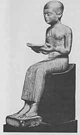
第１章図１ Imhotep (Berlin Museum) イムホテプ
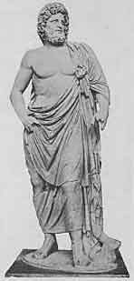
第１章図２ Epidaurian Aesculapius (National Museum at Athens) エピダアウロスのアスクレピオス
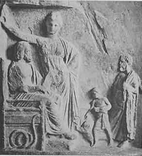
第１章図３ Aesculapius, Hygieia, and worshippers, A votive tablet from the Athenian Asclepion (National Museum of Athens) アスクレピオス、ヒュギエイア、信者たち（アテナイのアスクレピオンより）
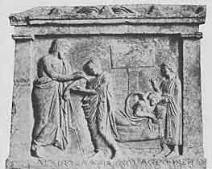
第１章図４ A curative dream, votive tablet from the Amphiraus near Oropus (National Museum of Athens) 夢による治療（オロプスの近くのアムピアラーオスより）
神話から歴史の始まりに移行する。古代東方諸国の医学文献は芸術の場合と同様に著者不明であるがギリシアになって始めて我々は実際に地上に存在した「偉大な医師たち」に会うことになる。
ギリシア医学の始まりは殆ど知られていない。すべての文明の始まりと同じように初期は原始的なものであったに違いない。宗教、呪術（＊マジック）および経験的に得られた考えと医術の混じったものだったろう。紀元前６世紀になって始めて自然研究の考えが形作られた。自己についての意識が生まれ世界についての疑問を持つようになってその中に調和を発見することが試みられた。自然についての概念および自然の一部であり自然そっくりに作られた人間についての概念を彼らは作った。ソクラテス以前の哲学者には医師も含まれていた。とくにピタゴラス主義者たちは医学の問題に興味を持っていた。彼らは人を有害な影響から守るものとして身体だけでなく心の食養生（＊ディエテティク。現在この言葉はふつう食事療法と訳されているが古典時代におけるダイエットは食事だけでなく一般に健康的な生き方を意味したので食養生と訳すことにした）を求めた。紀元前６世紀には著名な医師たちが現れピタゴラスの住んでいたクロトンをはじめ、シチリア、キレネ、小アジア、多島海のロードス島などやとくにクニドス島とコス島において医学の学派を形成した。ヒポクラテスが生まれたのはコス島でほぼ紀元前460年のことであった。彼の名は古代の医師のあいだでとくに有名であった。現在でも理想的な医師の象徴である。ある時代のヒポクラテスであると言われることは臨床家にとって最高の名誉である。
それではヒポクラテスとは誰であったか？ 原典を熱心に調べても幻滅だけが得られた。実際、ヒポクラテスについて我々は殆ど何も知らない。ヒポクラテスは紀元前５世紀に生きていたこと、有名な臨床家であり医術の教師であったこと、コス島で生まれたこと、アスクレピアド（アスクレピオスの医師ギルド）の１人であったことぐらいしか知られていない。これらはプラトン対話編に述べられていることであってプラトンは同時代人としてヒポクラテスの名前を挙げている唯一の人である。これが全部である。我々はホメロスについてよりはヒポクラテスについて多く知っているが知っていることはこのように少ない。
しかし「ヒポクラテス集典」が現存している。同時代人が書かないでも著作がその著者について語ってくれないだろうか？ この点でも同じように失望が待っている。「ヒポクラテス集典」は雑多な著述を集めたものである。これらはモノグラフ、教科書、手引き、講演集、抄録、覚え書き、からなっている。医学のあらゆる領域を取り扱っている。詳細に見ると統一性がない。全く矛盾した見解が説明されている。ある発言は明らかに他の発言への反論である。従って「ヒポクラテス集典」が１人の著者の作品と考えることはできない。これら種々の著者のうちで誰が真のヒポクラテスだったろうか？ 著作のうちのどれが本当のものだろうか？ 我々は知らない。決定するためのデータを持たない。それではこれらの著作に何故ヒポクラテスの名前がつけられているのだろうか？
権威者エーデルシュタインによると次のように考えられる。プラトンおよび後のアリストテレスにとってヒポクラテスは多くの優れた医師の１人に過ぎなかった。ギリシア人がアレクサンドリアを作りエジプトを征服するようになってからヒポクラテスは卓越した医師と考えられるようになった。まだ初期のアレクサンドリア人にとってヒポクラテスはプラクサゴラスやクリュシッポスと並んで食養生の権威者３人のうちの１人に過ぎなかった。しかし世紀が進むとともに彼は有名になってきた。後期のアレキサンドリア人にとって彼は記憶する価値がある最高の臨床医であり医学書著者の第１人者であり医学のすべての領域を支配する医学者であった。紀元前５世紀はますます医術の古典的な時代となった。医学の分野におけるヒポクラテスはホメロスおよびペリクレス時代の悲劇作家、哲学者、歴史家たちに比肩する医学者であった。遂に紀元２世紀になるとガレノスにとってヒポクラテスは理想的な医師となり今日に及んでいる。
さて「ヒポクラテス集典」に戻ろう。ヒポクラテスの地位が上がれば上がるほど後世の人たちは彼の真の著作を読んでいると考えるようになった。アレクサンドリアの大図書館には入手できる過去の草稿が集められていた。疑いもなくこの中には紀元前５世紀から４世紀の編者不明の医学書があったはずである。これらの著作に目を通した人たちはこれらの中にヒポクラテス学説があると信じたのであろう。
このようにして紀元前３世紀が終わる頃になるとヒポクラテスが書いたとみなされる医学著作のコレクションが出現した。これらの初期の時代においてさえこれらの著作の真偽について多くの議論がなされた。しかし時代が過ぎて読者たちが批判的で無くなるにしたがってヒポクラテスの著作として受け入れられるものが増え最後に古典時代における無名の医学著作のほとんどすべてが含まれるようになった。
前に述べたようにヒポクラテスの同時代人や直接の後継者たちは彼の生涯の詳細をほとんど何も知らなかった。しかし彼は「医学の父」になったので伝記が要求されるようになった。紀元２世紀にエペソスのソラノスが記録しその後の著者たちが書いたものによると伝説は次のようなものであった。これらのお話によると彼は医師ヘラクレイデスの息子だった。母親の名はファイナレーテだった。彼は紀元前460年に生まれた。彼の最初の教師は父親であった。次いでヘロディコス、ソフィストのゴルギアス、哲学者のデモクリトスに学んだ。教育が終わった後で広範に旅行を行った。夢のお告げにしたがってテッサリアに行った。あちらこちらを歩き回ってギリシア全土を旅し多くの人は彼の治療に驚かされた。マケドニア王が病気となり侍医は消耗性のもの（肺病）ではないかと考えた。ヒポクラテスは宮廷医エウリュフォンに助言を求められ王の病気は肺病ではなく心因性のものであることを示した。哲学者デモクリトスが精神異常となりアブデラの市民は彼の治療を行うことと市を疫病から救うことをヒポクラテスに頼んだ。アテナイでも疫病が蔓延していた。ヒポクラテスは現地に行って鍛冶屋が疫病に罹っていないことに気がついた。火が治療法に違いないのでヒポクラテスは疫病が終わるまで大かがり火を燃やすようにした。アテナイ市民は感謝して鉄でヒポクラテスの像を作り碑文に「救世主で恩人のヒポクラテスへ」と書いた。彼はアテナイ市民およびアルゴス市民となりエレウシスの大密儀に加えられた。彼の名声はペルシャにも伝わり王のうちの王であったアルタクセルクセスは彼が侍医となることを希望した。しかしヒポクラテスはギリシアの愛国者だったので招待を断った。ついに老年（104歳と言われる）となって彼はテッサリアで死亡しラリッサとギュルトンのあいだのある場所に埋められた。彼の墓の上には蜂の巣がありこのミツバチが作る蜂蜜は鵞口瘡（＊口腔カンジダ症）の子供に薬効があると言われた。彼にはテサロスとドラコンの２人の息子および多数の弟子がいた。
これらはヒポクラテスがいかに偉大な医師であったか示すために作られたおとぎ話と挿話に過ぎない。重要なものとみなすことは出来ない。我々は彼の生涯について本当のところ何も知らない。しかしヒポクラテスが大旅行家だったということだけは事実と一致するであろう。紀元前５世紀に医師たちは一般に遍歴する臨床医であった。当時の大きな都市だけに医師が定着し、共同体から俸給を受けていたとしても数は極めて少なくほとんどいなかった。他の人たちは手職人と同じようにあちらこちらに動いて行ったところで医療をしていた。もしもその医師がヒポクラテスのように有名だったら評判は先行した。彼は盛んな儀式で迎えられ近所のすべての病人は診療を受けようと集まって来たに違いない。
古代の人たちはヒポクラテスの生涯について何も知らなかったので正しい肖像が何も伝えられていなかったことは容易に理解できる。ここに掲載したコス島で作られた貨幣の図版はヒポクラテスの肖像であると言われているがローマ帝国の時代のものなので肖像画にもとづくものとは考えられない。アルバノで製造され大英博物館にある半身像は長い間ヒポクラテスの像と言われてきたが今ではストア派クリュシッポスの像と信じられている。
「ヒポクラテス集典」は均一ではなくたぶん１行もヒポクラテスが書いていないにしても計りしれない価値を持っている。紀元前５世紀から４世紀の初めまでのギリシア医学について明確な概念を与えヒポクラテスの時代の医師たちの考え方を想像させてくれる。
これらの著作からこの当時の医療はどのように行われていたか考察することによって当時の医療は呪術―宗教的な要素を古代オリエント医学から取り除いた高度に発展した治療技術であり観察と実験によって導かれたものであることを知る。病気の多くの症状が認識され正確に記載されていた。病歴が記録され医師たちは症状が時とともにどのように変化するか、これらの変化が患者にどのような意味をもつか、を認識することができた。ある症状はふつう互いに関連を持っていて現在は「
病気とは何か？ どのようにして起きるか？ この質問には種々の答えが与えられた。健康は釣り合い（平衡）の状態によって決まる。釣り合いの異常が病気である。「ヒポクラテス集典」の執筆者たちはこの点で一致している。しかし何が釣り合いを決定しているだろうか？ 人間で作用している力というか性質、すなわち、酸性、甘さ、苦さ、が決定する。たぶん、汁、すなわち「体液」が決定因子である。人間は精液から生ずる、従って汁すなわち体液が身体の本質的な成分である。ある人たちは多くの種類の体液があると宣言した。他の人たちは胆汁と粘液の２種の根本的な体液だけを主張した。他の人たちは４種の体液、相反した性質を持つ２組の体液すなわち血液と黒胆汁、黄胆汁と粘液、について語り、これらが理想的な釣り合いを維持するとした。これらの体液の１つが過剰に存在したり何らかの様式で崩壊すると生体は自然治癒力によって釣り合いを回復するように努力する。病気を起こす体液が「調理」（＊コクション、ギリシア語でペプシス）の過程を受けて成熟すると病因物質は尿、糞便、嘔吐物、膿、に排泄される。後のヒポクラテス著作の１つにこの四体液学説が現れている。その後この学説はガレノスによって体系化され何世紀にもわたって医学を支配した。（＊血液は空気のように熱く湿り、粘液は水のように冷たく湿り、黄胆汁は火のように熱くて乾き、黒胆汁は土のように冷たくて乾いている、と考えられた。）
人体は環境から２つの物質すなわち空気と栄養物を絶えず取り入れることによって自身を保持している。従って他のヒポクラテス派の医師たちはこれらの２物質が病気の起原およびメカニズムで重要な役割を果たすに違いないとしていた。彼らの意見は他の広大な学説の出発点となった。
人は理論を必要とする。観察する現象は数多いので理論が無いと把握できないからである。医学は理論によって導かれなければならない。そうでなければ医学は教師から弟子に伝えることが出来ないからである。理論と医療すなわち医学と医療に調和がある限り理論が医療に由来し次に医療を理論が指導する限り医学と医療は実り多い。すべての理論は本質的に哲学的である。医学はそれぞれの時代に得られその時代の文化を形成している思想や概念を使って行われる。従ってソクラテス以前の時代の自然哲学がヒポクラテス学説に繰り返し現れる。観察から出発して健康と病気の問題を概念的および思索的に解決することが試みられた。この頃には他に方法がなかった。この方法によっては医療に大きく役立つ考えに到達することができなかった。
ヒポクラテス学派医師は患者を診療するにあたって患者を調べて出来るだけ多くの症状を知った上で
自然が治す。従って医師の仕事は自然の治療力を増やすこと、その力を導くこと、拮抗しないようにすること、である。最良の治療法は食養生であった。生活様式の調節であり、栄養物の調節であった。液すなわち体液は食物によって再生される。食事によって容易に体液に影響を及ぼすことができる。ヒポクラテス学派の医師はこれらの考えによって導かれ我々が今日でも尊敬できるように立派な食養生を行っていた。
食養生から薬物療法への移行は徐々に行われた。食養生の効果は薬物によって強化することができる。通じをつけるのは食事の調節だけでしばしば成功する。もし成功しないときに医師は薬品に頼らなければならない。これがヒポクラテス学派医師の方法であった。
食事と薬で成功しなかったらメスや
この本にはヒポクラテス医学については上記の一般論以上に述べる紙面が無い。
ヒポクラテスについて我々が知っていることは、彼が生きていたことと彼以上に将来まで影響した医師が他にいないことである。彼が実際にどんな人かは問題でない！ 重要なのは後世の人の想像で彼はどうであるかと言うことである。古代の人々にとって彼は医師としての行動を完全に体現した理想的な医師であり、「ヒポクラテスの誓い」に「純粋と神聖をもってわが生涯を貫きわが術を行う」と宣言されているような医師であった。後世はそれぞれ新しいヒポクラテス像を作った。それぞれが自分の理想像に自分の思慕を入れ込んだ。自分たちの時代に必要と思うものがヒポクラテスにあると考え従って彼は永遠の訓戒、良心のとがめ、真の医師道への指導者、となった。この線に沿って彼はその力を発揮し続けるであろう。ちょうどカエサルが軍指導者を訓練しブルトゥスが暴君殺害を鼓舞するようにヒポクラテスは永久に良い医師たちを教育するであろう。
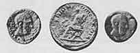
第２章図１ Hippocrates on Cos during the days of the Roman Empire. ヒポクラテス（ローマ帝国時代のコス島の貨幣）
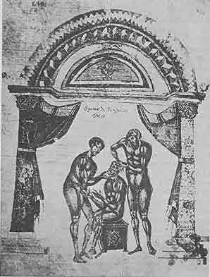
第２章図２ Reduction of a dislocated lower jaw. An illustration in the Hippocrates-Commentary on the Articulations, by Apollonius of Citium. 脱臼した下顎の整復。関節についてのヒポクラテス集典にキティオンのアポロニオス（紀元前１世紀）が書いた注釈より。
ヒポクラテス学派の伝統は続いた。紀元前４世紀は有名な医師たちを生んだ。これまで述べてきたヒポクラテス学派はギリシア植民地、すなわち南イタリアおよび小アジアで繁栄した。しかし紀元前４世紀後半のアテナイに１人の偉大な医師が現れた。ディオクレスと呼ばれた人でエウボイア島のカリストスに生まれた。アルキダモスという医師の息子で、父親の名誉のために自分の本の１冊を「アルキダモス」と名付けた。ディオクレスの本の断片が残っていて彼は当時の習慣に従い広範に旅行したことが判る。アテナイ人は彼を高く評価し「第２のヒポクラテス」と呼んだ。その後の人たちにとっても彼はヒポクラテスの後継者たちのうちで主要な人物とみなされ、大プリニウスは彼について「時代も名声もヒポクラテスに次ぐ」と書いた。彼は人間らしさによって愛され雄弁の能力によって尊敬された。
ヒポクラテス学派の著作はイオニア方言で書かれていたがディオクレスの著作はアテナイ語で書かれた。彼が書いた16冊の本の題が知られている。どれも完全には残っていないが断片が残っているので彼が書いたことをある程度は知ることができる。何について書いているのだろう？ 予後について、病気の原因と療法について、熱について、排泄について、女性の病気について、外科について、である。これらはヒポクラテス集典にも同じく取り扱われている問題である。さらにディオクレスの見方はヒポクラテス集典を書いたいろいろな著者たちのものと非常によく似ている。しかし彼はシチリア学派の医師たちに強く影響されていたことが判る。この点で彼はプラトンに親しみを持っていた。医学についてのプラトンの考えはシチリアの人たちによって同じように影響されていた。
ディオクレスの著作の表題の中には我々の注意をすぐに惹き付けるものがある。例えば「解剖学」を書いた。ヒポクラテス集典に解剖学の短い書物もあるがあまり重要なものではない。もちろん医師は人体に興味を持ち内部がどのようになっていてどのように働くか知ろうとしなければならない。しかしヒポクラテス学派の医術は解剖学の線上を進んではいなかった。局所の徴候が顕著であってもヒポクラテス主義者たちにとってすべての病気は本質的に全身的な不具合であった。クニドス学派は病気は局在しているものと実際に考えていたが彼らの解剖学は素朴なものであった。正確な解剖学の知識を必要としたのは外科医であったが当時の外科医の知識は深くはなかった。主として今日の我々が「局所解剖学」と呼ぶようなものからなっていた。
紀元前４世紀すなわちアリストテレスの時代になって自然の研究に新しい勢いがついた。主として医師がこの発展を促進する助けになり動物の構造が熱心に学ばれた。人体の解剖はやはりタブーであり従って種々の下等動物の解剖が行われこのようにして得られたデータから人体の構造が推論された。宗教的、倫理的、美学的な障壁が人間の解剖に反対した。これらの障碍は当然とされていた。これらを除くことが必要とは誰も思わなかった。ディオクレスは最初の解剖学の著者ではないとしても最初の中の１人であった。さらにディオクレスが人体について何も知らなかったとガレノスの言ったことが正しかったとしてもディオクレスの著作は解剖研究への興味の目覚めを示している。
動物だけでなく植物の解剖も行われた。テオフラストスの有名な著書「植物について」を先取りする本としてディオクレスは「リゾトミコン」を書いた。これは知られている限りギリシアにおける最初の植物学の本であり広範な影響を与えたと言われている。著者はいろいろな植物の名前、生息地、採集方法、および（もちろん）医学的利用を記載している。植物に関する彼の第２の本は食べる植物、第３の本は有毒植物に関するものであった。薬理学的および毒物学的の研究の始まったことが判る。
さらにディオクレスは衛生についての立派な著作を書きそのうちの著しく興味ある断片の幾つかは破壊を免れた。衛生は健康な人間の理想を明確に述べている。ギリシア人の考えでは理想的な男は調和が取れた男、均等に作られ身体的および精神的に均衡が取れた男、であった。このような男は貴く美しく健康でもあった。衛生はこのような理想に導く道を示している。
我々は毎日を衛生的に過ごす方法をディオクレスから学ぶ。朝日が出る前に起床し顔と髪を洗い歯を磨きハッカの粉で歯肉をマッサージし全身に油を塗り込む。毎日の仕事を始める前に短時間歩く。朝の間に体育館に行って運動をする。運動に続いてシャワーとマッサージをする。朝食は軽い食事で、パンと薄いスープ、胡瓜または時期により異なる野菜を簡単に調理したものからなる。渇きがあったら食事前に水を摂る。食後に水で薄め蜂蜜を入れた白ワインを飲む。南の土地の習慣として夏には朝食［現在の昼食の時間に相当するが１日の最初の食事である］の後に涼しい木陰の静かな場所で昼寝をする。この休息の後でその日の仕事を行いその後で体育館に行く。主食は夕飯で夏には日没の前でなければならない。これは、果物、野菜、パン、および魚または肉からなる。次に短時間の歩行を行い早く床に入る。
上流階級に属する裕福なギリシア人の毎日は上記のようであったと考えることができる。もちろん、小作農、職人、奴隷などの人口の大部分はこのようではなかった。しかし、人間は身体と精神の統一体であるとした概念に基づく養生法、および同時に若干の修正を伴ってはいるがあらゆる時代に衛生学者の理想である養生法、をディオクレスその他のギリシアの人たちが定式化したことに感謝をささげる。
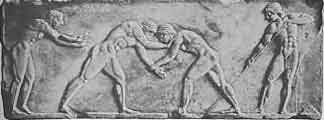
第３章図１ Wrestling (National Museum at Athens) レスリング（アテネ国立美術館）
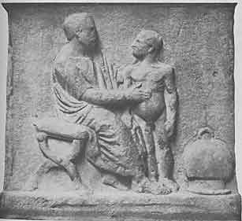
第３章図２ Mortuary Monument of the Physican Jason (British Museum) 医師イアソンの墓石（大英博物館）
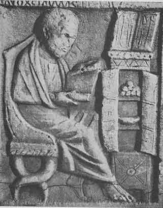
第３章図３ Portrait of an unknown Physician 医師（名称不明）の肖像
アレキサンドロス大王は西洋に知られていた世界を征服した。ペルシャの国土は粉みじんになった。バビロニア人およびエジプト人の支配は過去のものになった。「イスカンデル」（＝アレクサンドロス）の軍隊はインダス川を渡りパンジャブを席巻した。アレクサンドロスが行く所、ギリシア語、ギリシア芸術、ギリシア文化が、遠くまで広範囲に広がった。ギリシアは与えただけでなく受け取った。競争相手の文化は崩壊し互いに置き換えられた。ヘレニズムはアジアの知識、行為、考え方、によって色づけられ、肥沃にされ、かき乱された。
アレキサンダーは323年にまだ32歳にならないうちに死去した。領土は分割されたが精神的な征服は無傷であった。副王たちは独立したがヘレニズム化はそれぞれの領土で続けられた。マケドニア、ビチュニア、ペルガモン、シリア、とくにエジプトにおいて。
死ぬ10年前エジプトに侵入したときにアレキサンドロスは解放者として歓迎された。ナイル川デルタの西側の地中海沿岸に新しい都市がつくられ征服者の名をつけられた。数世紀にわたってこの都市アレクサンドリアは古典知識の城砦であった。ギリシア人のエジプト王たちであるプトレマイオス朝の首都であった。天文台が作られ図書館が創設された。ギリシアのすべての文書はこの壁の内に集められた。エジプトは数千年にわたって古代の最良の紙であったパピルスの産地として知られていた。したがってアレキサンドリアは書籍の製作および取引の中心地となった。学者や芸術家は世界の種々の場所からエジプト宮廷に呼び寄せられた。プトレマイオス朝の王たちは気前よく物質的な心配無しに彼らに仕事を行わせた。
アレクサンドリアに呼ばれた学者の中に２人の医師がいた。ヘロピロスとエラスシストラトスで彼らの著作は重要であった。主として彼らの影響によって医学は変貌しそれまでは手仕事であったものが本当の知識を取り込んで本当に真の科学になった。一言で言うと医学の理論が重要になった。ヒポクラテス集典は教育のある人なら理解できたが、この後になると医学文献を理解するには普通の教養では不充分な専門的なものになった。医学知識の量は世紀を経るとともに増加した。東との接触によって新しい病的現象と新しい治療法が西洋にも知られるようになった。
我々はヘロピロスについて殆ど何も知らない。判っているのはビチュニアのカルケドンに紀元前４世紀の最後の１／３に生まれ、科学と医業を有名なコス島の教師プラクサゴラスに習ったこととアレクサンドリアで医師および教師として有名になったことぐらいである。彼の名前は静脈洞が集まって後頭骨にできた窪みの「ヘロフィルスのぶどう酒搾り器」で現在に知られている。当時の有能な解剖学者で古代に高く評価された解剖の本を少なくとも３冊は書いている。古代の解剖学者は下等動物の解剖について書いて満足していたが彼は人間の臓器を詳細に記載し他の動物と比較している。彼が人体を系統的に解剖を行ったかどうかは確かでない。アレキサンドリア医師たちが犯罪人の生体解剖を行ったという数世紀後の嘘くさい話は無視することにしよう。しかしエジプトでは屍体の防腐処理が行われ前処置として臓器を取り除いていたので内臓の解剖学に習熟するかなりの機会があったに違いない。
解剖学的著作の断片で残っているものはヘロピロスが注意深い観察者であったことを示している。眼球、脳膜、性器についての記載は素晴らしい。十二指腸と命名したのは彼であった。しかしもっとも重要な発見は神経の本態についてであった。アリストテレスは神経と腱を区別することが出来ずギリシア語のニューロンは区別しないで両方に使われていたがヘロピロスは脳が神経系の中心的な臓器であり末梢神経は感覚を伝える臓器であることを知っていた。
医学の理論および医療に関するかぎりヘロピロスはこれまでの慣習以上には進まなかった。彼は支配的であった体液学説を受け入れヒポクラテス集典の幾つかについて解説を行った。生命は栄養、熱、感覚、思考の４つのエネルギーによって調節されるとした。
しかしこれまでの学説をさらに発展させるべきであると考えていた。予後は症状に基づかなければならない。従って症状を出来るだけ注意深く研究しはっきりと定義する必要があった。脈拍はもっとも重要な症状でありヘロピロスはこの観点から脈拍についての重要な学説を考え出した。脈拍の本質的な現象は何であろうか？ 音楽と同じようにリズムである。従って脈拍を理解するには音楽理論を勉強しなければならなかった。これはヘロピロスがとった道筋であり、ペリパトス（逍遥）学派の哲学者で音楽家でありアリストテレスの弟子であったタラントのアリストクセノスの音楽理論によって導かれた。このようにして脈拍理論は複雑となり優れた音楽者でなければ理解できないようになった。従ってこの理論は死産であり後世の人たちはヘロピロスを屁理屈屋で重箱の隅をほじくると非難した。
健康は貴重な財産であると彼は宣言した。食養生の本で彼は書いた。「もしも健康でなければ英知と芸術、権力と富も何の役に立たない」と。従って医師は患者の健康を保ち快復させることに努力しなければならない。ここでは経験がもっとも価値があり医術の巧みさが限界となる。「最良の医師は可能なことと不可能なことを区別できる者である」と。
治療学において主な手段は何か？ 食養生が第一であり次が薬品である。医師が薬を処方するのは神が病気の流れに介入するのと同じである。実際にヘロピロスは医薬を「神の手」と名付けすべての病気において処方した。
外科や助産術が独立の部門になるほど医学は充分に発達していなかった。これらの部門で得られる知識は一個人のものなのでヘロピロスは純粋で単純な医学だけでなく外科と助産術にも興味を持っていた。事実、彼は助産術についての本を書き広く流通し影響を与えた。出産を助ける実務は主として女性によってなされ医師は重篤な場合だけ呼ばれた。したがって頼ることができ信頼できる実用書は助産婦にとって非常に重要であった。助産術におけるヘロピロスの決定的な重要性を示す挿話がある。古代アテナイでは女性が医療に関与することは禁止されていたので助産婦はいなかったと言われている。しかしアグノディケと呼ばれる高貴な心を持つ女性が姉妹の出産に伴う激痛を救うために男性に変装してヘロピロスに教えを受けた。このように助産術を詳しく学んで陣痛女性たちの大きな助けとなった。これによって医師たちは彼女を妬んでアレオパゴス（アテナイの最高法廷）に訴えた。しかし彼女の患者たちの多くはアテナイ人であり彼女のための証人となった。彼女は許可を取得し馬鹿げた法律は廃止された。
言う必要の無いことであるがヘロピロスの時代以前にもアテナイで実際は助産婦が業務を行っていた。この話で重要なのは、主として有能な解剖学者として伝えられている男が優れた産科医でもあったことである。
キリスト教の時代になっても多くの医師たちはヘロピロスが医学の優れた教師であったことを思い返した。
エラシストラトスはヘロピロスより１世代後に活躍した第２の偉大なアレクサンドリア医師であった。２人の生涯は重なり同じ都市に開業しそれぞれ学派を創設したので、ふつう同時に語られる。しかし２人の医学理論は大きく異なっていた。
エラシストラトスは医師の家系に生まれた。母親は医師の姉妹であった。父親クレオムブロトスはシリア王セレウコス１世ニカトールの侍医であった。エラシストラトスは紀元前４世紀末にケオス島のイウリスに生まれアンティオキアで育った。医師になる決心をしその頃の習慣に従ってアテナイに行って学生となった。教師はアリストテレスの娘と結婚していたメトロドロスであった。アリストテレスの愛弟子テオフラストスにも学んだと言われている。このようにエラシストラトスはアリストテレスのペリパトス（逍遥）学派と密接に関連しデモクリトスの哲学も勉強して強い影響を受けた。アテナイからコス島に行ってプラクサゴラス学派で学んだ。しかし医学について最も重要な影響を与えたのはクニドス島出身者でアレキサンドリアに住むようになったクリュシッポスであった。
ヘロピロスはヒポクラテス学派に属してある程度の発展を試みた以上のことはしなかったがエラシストラトスは上記のように幾つもの学派の医学を勉強したので間もなく自己独自の線を進んだ。
しかしエラシストラトスはヘロピロスと同じように自然の研究者であった。「自然は大芸術家であって生き物のことを考えるにあたり身体のすべての部分を完成させ目的をもって作り上げる」と。したがって自然のやり方を探究すべきであった。エラシストラトスは動物や人間の臓器のあるものを解剖した。２冊の解剖学の著作を書いた。我々に伝わっている断片には心臓とその弁、喉頭蓋を含む上気道、肝臓、胆管、脳、の優れた記載が含まれている。彼は教えた。神経は感覚を伝えるだけではない。随意の信号を送って運動も起こしていると。従って、彼は感覚と運動の２種の神経があることを知っていた。
これ以上に何を教えていたのだろうか？ 静脈、動脈、神経の３種類の導管が全身に張り巡らされていた。これらはロープのより糸のように編みあわせられて臓器を形成していた。しかし生体の終局的な部品は原子であった。原子は不変で外からの熱によって生命を吹き込まれていた。周囲に空間がありこれは引力を持っていた。この力は血液すなわち栄養素を静脈から、プネウマ（空気）を動脈から、精神的プネウマを神経から引き込んでいた。動脈には血液が無く空気だけを運び、空気は呼吸によって新しくされると。それにも拘わらず傷ついた動脈から血液が出るのはそれから出たプネウマ（空気）が静脈と繋がって血液を引き込むためであった。
エラシストラトスは死体解剖をしていて病気によって臓器に明らかな変化のあることを認めた。例えば、腹水で死んだ男の肝臓が石のようになっていること（＊肝硬変）を見た。他方ヘビに噛まれて死んだ患者の身体では、肝臓、大腸、膀胱が柔らかくなっていた。病気によって臓器に局所変化が起きたことは明らかであった。これらの病気の臓器を学ぶことによって病気について知ることができた。病気は曖昧な「体液の腐敗」ではない。それではどのようにして起きたのだろうか？ どんなメカニズムによるのだろうか？
エラシストラトスは病気の原因についての本を書いた。生体は３種の管が編みあわせられていると彼は繰り返した。これらの導管の状態が適当であって正常の機能を果たすのが健康に必須であった。もっとも重要な病的過程は多血すなわち血液および栄養物質による血管の拡張であった。これによって静脈は引き延ばされ破壊された。血液は動脈に入り込んで通りを塞いでプネウマの動きは邪魔された。プネウマがよどむと炎症が起きた。動脈の拍子は激しくなり発熱が起きた。
個々の病気は多血が起きる特定部位または臓器によって決まった。部位が変わると、肺炎、胸膜炎、てんかん、胃、肝臓、脾臓の病気、などなどとなった。
多血は病気の症状の直接な原因であったが医師としてはこの多血を起こした遠い原因を求めるのが差し迫ったことであった。治療の成功はこれら最初の原因を除くことに依存したからであった。他の点で治療は個々の例に適応させなければならなかった。特にエラシストラトスは激しい方法に反対した。彼は宣言した。区別なしにすべての病人を瀉血するのは意味が無い。多血を打ち消す最良の方法は少量の栄養物だけを摂ることであった。一言で言うと断食であった。断食している男女から瀉血すると衰弱が激しくなり治癒が遅くなった。食養生がもっとも重要であった。蒸気浴、運動、湿布、マッサージ、などの物理療法は助けとなった。薬も使った。しかしヘロピロスのように多くは使わなかった。多くの場合メスに頼ることも必要であった。
しかし予防は治療よりも重要であった。予防は治療よりも良かった。もしも可能なら賢い舵取りは船を嵐には曝さないで嵐を避けた。賢い医師は同じ方法をとった。従ってエラシストラトスは衛生についての２冊の本を書いた。
繰り返そう。エラシストラトスは革新者であった。彼は体液学説を見捨てた。唯物主義者だったので機械主義の観点で病気を見た。人体の解剖を行っただけでなく観察結果を病理学に応用した。クニドス島の教師たちが用意した線上を彼は局所についての解剖学的な病気の概念に基づいて病理学に進んだ。従って彼の著作のかなりな部分は自然に個々の病気または病気群についてのモノグラフであった。例えば、発熱、腹部疾患、麻痺、痛風、浮腫、についての本を書いた。しかし前に述べたようにギリシア医学は他のコース（＊コス島医学＝ヒポクラテス学説）を通るように運命づけられていた。ガレノスはエラシストラトスの教えを脇に押しやってこの偉大なアレクサンドリア医師をこれ以上無いほど強く非難しヒポクラテス学説勝利の原因を作った。
エラシストラトスについては多くの興味深い挿話がある。そのうちで有名なのは彼の医学的観察が鋭かったことに関連している。シリア王セレウコス１世ニカトールの息子アンティオコスが重病にかかり他の医師たちは匙を投げたのでエラシストラトスが呼ばれた。彼が患者を診察していたときに父王の妻たちの１人である若い女性ストラトニケが部屋に入った。患者の脈が速くなり頬に赤さが増したので病気は身体ではなく精神的なものであり近づくことができない継母への熱情が病気の基本にあることをこの医師は知った。原因が発見されたので治癒への路は開かれた。セレウコスは魅惑されている息子の命を救うためにストラトニケを離婚し若いアンティオコスに結婚させ王子は快復した。
この話が本当であるとしても年代の理由でこの治療を行った医師はエラシストラトスではなく大プリニウスが言っているように父親のクレオムブロトスであったに違いない。この挿話は比較的に知られていない父親から有名な息子に移された。しかし多分この話は伝説であろう。東洋の多くの場所で繰り返して語られ西洋においても同じようにしばしば画に描かれている。
他の古代の慣習によってエラスシストラトスはデルポイのアポロン神殿に鉛で作った抜歯鉗子を奉納した。医師は鉛製の鉗子で抜けるようなぐらぐらになった歯だけを抜くようにとのヒントであった。
歳を取って彼はサモスに引退し不治の病気に罹って自殺した。彼は言った。「私は国に奉仕して心静かに死ぬ」と。彼が創設した学派は500年にわたって続いた。
どちらが正しかったか？ ヘロピロスか、エラシストラトスか？ 彼らの弟子たちは互いに相手を非難をしそれぞれの先生の言葉を引用し細かいことにこだわり絶えず論じあった。対立する２学説はすべての手段を使って自説を弁護した。
しかしこの討論に意味が有っただろうか？ 医師の仕事は何か？ 病人を治すことである。これらの理論はこの目的に必要だったろうか？ 否。自然は計り知れないものである。哲学者たちや医師たちの間で一致の見られないことからも明らかである。なぜ、ヘロピロスよりヒポクラテスを信じなければならないか？ なぜ、ある人間を他よりも信用するか？ どちらの議論を受け入れるにしてもそれぞれ証拠がある。どちらも治療を成し遂げる。もしも医師の必要とするものを哲学が十分に与えるのなら哲学者は最高の医師であった筈である。しかし哲学者は賢い言葉を発するが医術を理解しなかった。さらに医学は土地によって違う。ローマではローマの習慣で診療する必要がある。エジプトでは別の習慣で、ガリアではさらに他の習慣が必要である。もしも病気がすべての場所で同じ影響で起きるなら同じ治療法を使うことができるはずであった。さらにもしもある病気の直接の原因が判るならば治す知識はすぐに得られるはずであった。しかし原因はしばしば明らかでない！ したがって正確な研究結果に導かれるように最善を尽くさなければならない。他の場合と同じように我々に教えるのは経験である。百姓や舵取りを完全にするのは実践である。実践であって理論ではない。生理学および病理学の考えは医師によって大きく異なるが多くのばあい医師は患者を治すのに成功した。何故だろうか？ 彼らの治療は経験によって導かれるのであって理論的考察によるのではなかった。医術は経験から生まれた。
ヘロピロスとエラシストラトスは偉大な解剖学者であった。しかし、人体の構造についての知識は医師にとって何の役に立つのだろう？ まず生体の臓器は死体で解剖するものと真に同じであるかどうか我々は知らない。もしも同じであるとしても臓器の知識は治療技術に必要ではない。医師が関心を持つのは実践であり経験であって理論ではない。病気は治療によって治癒するのであって雄弁によってではない。
タレントゥムのヘラクレイデスは以上のように考えた医師たちの代表者として有名であり彼らは自分たちを
経験主義の興隆は無味乾燥な反応の産物であった。よくあるようにこの反応は子供を風呂水と共に流してしまい（＊有用なものを無用なものと一緒に捨てる）自然法則によるすべての説明を拒絶した。医療は科学と対立するものとして理論に反対する権利を要求し医師たちに高圧的に業務を思い出させた。繰り返して議論が行われた。医学は科学だろうか芸術であろうか？ 最終的には手細工以上ではないのではないか？ ヒポクラテス主義者は手職人であった。それにもかかわらず哲学者でもある医師は彼らにとって神に近いものであった。彼らにとって芸術と科学、理論と実践、は調和的に結合していた。これが彼らの利点であった。一方ヘロピロスとエラシストラトスは理論に偏り、これに対して経験主義者は実践に偏り、どちらも一方的であった。
経験主義者たちは学派を形成しなかった。経験主義的な医療者たちが従う理論を持たなかった。彼らは医学の流れを代表した。彼らは方法を教えた。ヘラクレイデスは以前の人たちと同じように経験的な方法について大作を書いた。彼は言った。医学は経験を基礎としているし、それぞれの医師は主として自己の経験を基礎とするべきである。しかし人の一生は短く個人の集めることができる経験は貧弱である。従って、医師は伝統によって渡された他の医師の経験を利用すべきである。実践している医師はどの学派に属するにしても自分たちで観察し経験を集めなさい。どんな起源のものでも良いものを受け入れなさい。従って経験主義者は過去の文献を良く勉強しヘラクレイデスは「ヒポクラテス集典」について注釈を書いた。
しかし診療している医師たちはしばしば知らない病例や役立つ経験記録が無い例を取り扱わなければならない。類推によって出来るだけの事をしなければならない。これまで知らない病気を治療するときにある程度は似ている病気で成功した治療を行わざるを得ない。多分ここでも疾患の部位の類似性や種々の治療法の似通った関係が役に立ち医師の行為を決定するであろう。このようにして新しい経験を集める最良の方法が得られる。これこそ経験主義者たちが進む方針であった。先人たちとは全く違う科学理想を持っていたがそれにも拘わらず研究を行っていた。
経験主義者たちの著しく実際的な態度からみて彼らの注目はもちろん医学の実際的な領域に向けられていた。彼らの仕事は症状学に貢献したがさらにもっと治療法の知識に向けられた。治療法はすべての時代において強く経験的な傾向を持っていて経験主義者たちは治療に特に力を尽くしていた。ヘラクレイデスは１冊の内科疾患治療書を書き他に１冊の外科疾患治療書を書いた。彼はまた食養生の本を書いた。これは対話形式でタイトルは「シンポジウム（饗宴）」であった。彼はまた薬理学についての５冊の本を書いた。残っている断片によると彼は穏健な医師、明快な思想家、広い経験と多くの知識を持ち先人たちについて正常な批判のできる男、であったことが判る。
ヘラクレイデスの生涯について殆ど何も知られていない。他の経験主義者の伝記についても同様である。彼らは主として医療に完全に献身している一般の人間だったに違いない。医師は言葉が少ない人間であり有名になろうとすべきではなく個性は仕事の背景にあるべきであるというのが彼らの教えの一部であった。我々の知っている限りこれらの医師は極めて真面目であり当たり前の事実を重視する傾向を持っていたに違いない。生計を立てるために医療を行っていると彼らの１人は無遠慮に発言した。彼らは懐疑論者であった。彼らの著作は経験を単に編集したものであって著者の性格について何も教えてくれない。この点でヘラクレイデスは例外であるが彼は経験主義者の限界を超えていたからである。
経験主義者たちが古代の医学知識を増やすのに大きく貢献したことは疑いもない。紀元前３世紀に薬理学は急速に進歩した。これは多分に経験主義者たちの仕事の結果であった。ローマ帝国時代の薬理学者はガレノスも含めて経験主義者たちの業績を自由に借用した。
この学派の人たちは狭い意味の医学だけでなく外科学や助産学にかなり注目していた。紀元前１世紀に経験主義者の１人であるキティオンのアポロニオスは関節についてのヒポクラテスの本の注釈を書いて多数の図を載せた。これは今日でも残っている。なるべく言葉を使わないようにして図解していたことが判る。
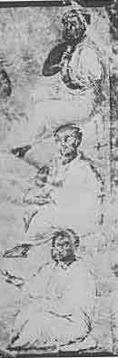
第５章図１ Heraclides of Tarentum (middle), Nigrus, and Mantias タレントゥムのヘラクレイデス（中央）
我々の古代医学の研究は新しい舞台に入る。最古の学派であるヒポクラテス学派の医師たちはギリシア世界の周辺にいた。南イタリア、シチリア、北アフリカ、エーゲ海、小アジア、である。次いでアテナイに住んでいたディオクレスが現れた。ヘロピロスとエラシストラトスはこれに続き、彼らの研究はアレクサンドリアが医学上で令名を得る基礎となった。経験主義が興隆したのもアレクサンドリアであった。
今やローマは医療の中心となった。この後の医学の発展はローマ共和国およびローマ帝国の首都に関連している。ローマは西洋世界の中心となり抑えられない魅力を示すようになった。自分は能力があると思い出世を欲する人たちはローマで運を試すことにした。他の領域や実務よりも医療は種々の可能性を持っていた。何故、このようになったのであろうか？
まずそれまでのローマの医学は原始的な医学であった。他の場所と同じように宗教的呪術的な考えと経験的知識とのごたまぜであった。熱の出た人は熱の女神に祈った。妊娠した女性はルキーナかカルメンタに犠牲をささげた。共和国の時代でも医療技術は極めて原始的であった。痛み、咳、下痢の家庭療法があった。キャベツは極めて価値がある薬とみなされた。傷の治療についてはある程度の知識を持ち折れた骨に副木があてがわれた。しかしこれらの方法で効果が無いときには魔法や呪文に頼らざるを得なかった。知ることは出来ない！ 悪い眼やその他の不吉な力から守るためにふつうお守りを身につけた。多数の奴隷を持つ人はその中に医学的なことに詳しい奴隷を含めるのが普通だった。そのような奴隷は家中できわめて価値があり高価であった。
年が経ってローマはギリシアを征服しギリシア人がローマに来た。ローマ人はギリシア文化の優れた面を学んだ。ギリシア文化は軟弱化の影響がありローマ人に価しないとみなす傾向があったが７つの丘に住む人たちも段々とギリシアの魅力に魅せられてきた。ギリシア医師たちがローマに移住してきた。記録によると最初にアルカガトスが紀元前219年にペロポンネソスから到着した。彼は奴隷ではなく自由民でありローマの医師たちより学があった。特に外科医として有名であって高く評価され医療を行うために幾つかの部屋を提供されたりもっと重要なことにはギリシアに帰らないように市民権を与えられるなどした。大胆な手術者でしばらくは成功した。しかし間もなくメスを使いすぎるようになり運が逆転して評判が悪くなり死刑執行人とあだ名されるようになった！ アルカガトスは数多いギリシア移民の最初の医師に過ぎなかった。移住したのは医師や外科医だけでなく、助産婦、マッサージ師、にせ医師が続いた。
一般に新来者は信用されなかったが最後にそのうちの１人がローマにギリシア医学の地歩を築くのに成功した。これはビチュニア出身のアスクレピアデスであった。
彼は進取の気性に富んでいて哲学と医学をギリシアおよび多分アレクサンドリアで学び種々の都市で医療を行った。次いで旅を続けて紀元前１世紀初頭にローマに来た。最初は医師ではなく雄弁家となった。外国人の医師は好まれなかったが修辞学教師の需要はあった。政治家や法律家になりたい人たちは話が巧みで説得し確信させる能力が必要であった。アスクレピアデスは銀の舌を持っていたのでローマでは雄弁術の先生になった。
弟子たちは彼の雄弁術学校に集まった。充分に定着すると彼は看板を下ろして自分は医師であると発表した。この領域でも雄弁能力は役に立った。トランペットの吹き方（宣伝法）を彼は知っていた。「安全で速く快適な治療」を約束した。このキャッチフレーズは彼の作品である。それぞれの病気の治療に２つか３つの使い慣れた治療法を持たない医師は無能であると彼は言った。彼自身はこのような治療法を持っていた。これらの治療法は他の医師仲間のように強力な下剤や吐剤ではなかった。彼は断食、禁酒、マッサージ、受動的や能動的な運動、を処方して治した。
しばしば医師を有名にするような幸運が次に彼を訪れた。葬式の列が彼の前を通った。「死体」は薪の上に置かれ、たいまつを手にした人が点火しようとした。しかしその男は本当には死んではいなかった。アスクレピアデスはその男を薪から下ろさせ生き返らせた。
当然のこととして患者たちはこの秘跡を行う人に群がった。普通の医師ではなく天からの使者とみなされた。権力者たちの家が彼の前に開かれた。キケロ、クロイソス、アッティクス、マルクス・アントニウス、の歓待される客であった。令名はローマの壁を越えて広がった。ポントス王のミトリダテスは彼を宮廷医にすることを希望したがアスクレピアデスは感謝したが受けないで王に著書のコピーを送った。
アスクレピアデスは大量の著書を書いていたからである。約20冊のタイトルが知られている。彼ははったり屋ではないし経験主義者にも属さなかった。経験が教えることに充分の敬意をはらっていたが治療を指導する理論が医学に必要であると考えていた。自然の働きは研究によって理解され妥当な治療法は病気の特性によって明らかにされた。先駆者たちが書いたことの多くが誤りであったことは疑いも無かった。ヒポクラテスはどうだったか？ 彼の治療法は間違いもなく人殺しであった。エラシストラトスは真理に近づいていたが同じように誤りが多かった。
アスクレピアデスは哲学者であった。彼はポントスのヘラクレイデスの学説、エピクロスの認識論、ストア学派の学理、を充分に研究した。しかし彼は自分自身のシステムを考えた。
生体は離散した原子からなると彼は教え原子は互いに引き合ったり撥ねつけたりしこの運動によって互いに衝突するとした。原子の間には
治療法の核心は「反対は反対をもって制す」の原則を重視することであった。原子運動が止まったときには適当に運動するようにしなければならなかった。病気は主に機械的な理由で起きるので機械的な治療はもっとも重要である。アスクレピアデスの治療は原則として機械的であった。生体に作用させる力は熱、冷、および日光であった。彼は水療法を採用し、水を体内に入れたり外部から作用させたり、すべての種類の水浴、マッサージ、受動的および能動的な運動を使った。これらの方法は厳しく規定された食養生を伴った。彼は種々のワインの治療価値についての専門書を書いた。
アスクレピアデスが優れた医師であるとともに強い性格の男であったことは疑う余地がない。彼の著作のかなり多くの断片が残っていて慣習がどうであろうとも信念をもって自己の路線を進んでいたことを示している。彼は特に精神障害に注目していた。
何故この男がローマでこのように成功したか理解するのは困難でない。彼の教えはローマ人に好まれた。教えは明瞭で単純だった。ローマ人に適した哲学の傾向を示し医学の領域にあてはめられていた。アスクレピアデスの仕事によってギリシアの医師たちの評判が高くなった。彼らは能率の高い臨床家であり彼らは必要だった。有能な医師と外科医が！
外科医は絶え間ない戦争で軍隊に必要だった。紀元前46年にカエサルは自由民でありローマに定着したすべてのギリシア医師にローマ市民権を与えた。これは大きな恩恵であった。古典時代に外国人は何の権利も持たなかったからである。初代皇帝アウグストゥスは自分の宮廷医ムサを騎士にした。ローマにおける医師たちは高い社会地位を得るようになった。
医師が病気になると一般人は嘲って「お医者さん、自分を治しなさい」と皮肉を言った。アスクレピアデスは自分が病気になったら自分を医師とは言わないと断言していた。彼は病気で死んだのではなく階段を転げ落ちて死んだ。
アスクレピアデスのように強い個性と独創的見解を持つ男が医学の発展に影響し学派を作ったのは当然なことであった。彼の忠実な弟子としてラオディケア（シリア北西部）のテミソンがいた。テミソンは永年にわたり先生の方針を固く守っていた。しかしアスクレピアデスが死去すると老齢ではあったがテミソンは突如として新しい方針を採用し始めた。アスクレピアデスの教えは体系的でなく充分に精確ではないと彼は考えた。したがって臨床医師たちにも役立つように簡単な方法を作りあげた。
病気の治療には何が決定的であり決定的であるべきだろうか？ 病気の原因ではなく一般的症状として認めることができる基本的な型である。この基本的な型は３つある。「緊張状態」では
もしも皮膚が乾いており分泌物が少なく高熱があるときには緊張状態が関係する。もしも症状が逆だったら弛緩状態が関係する。治療の目的は前者では間隙を弛緩させ後者では緊張させるべきである。どのようにすれば良いだろうか？ テミソンはアスクレピアデスと同様に一般に食養生と物理療法に依存した。しかし、これらの方法を適用するにあたってさらに２つの点に注目する必要があった。第１に介入を行う病気の時期であり、第２は病気が急性であるか慢性であるかである。テミソンは言った。慢性病は人々が信じてきたように急性時期が慢性の経過をとったものとは限らない。本質的に慢性の性質を持っている多くの病気があるからである。
これらの学説によって医学を単純な定式化することができた。法則が作られ方法が確立されて容易に習うことができるようになった。ローマで流行していたこの学派の信奉者たちは自分たちを「
「何でも知っている」男とガレノスが彼を呼んだ所から見ると欠点はあったがテサロスは頭の良い男だったのに違いない。彼は方法学派には属していたが体系を拡大し特に慢性病の治療についてはこれを２段階に分けた。慢性病でしばしば組織が非常に広範な変化を受けることをテサロスは知っていた。従って治療の目的は臓器を再び健康の方向に戻すことであった。しかしこれは容易ではなかった。多くの場合に患者は長期にわたる病気によって弱り激しい治療に耐えることができなかった。治療を始める前に鍛えなければならなかった。最初に必要なものは「快復治療」であって今日の強壮療法に相当し主として食養生であり他の物理的療法も行われた。これらの方法で患者の力があるていど回復したら特効のある刺激療法すなわち「変調治療」を始めた。これは生体を励ますものであった。このために種々の方法が用いられた。治療法のあるものは食養生であって栄養物を周期的に変えた。別の場合には強力な下剤を用いこれに続いて色々な種類の刺激を行った。さらに他の例では大気が変化するように転地療法を処方しこれによって身体の栄養過程が徹底的に変わることを期待した。
このような考えは現在でも行われていることに読者は気付くであろう。（＊化学療法の無い時代に）結核患者を山の療養所に送ったのはこのような考え方に基づいていた。
もしも広範な医学経験を持つ天才がいなかったらこの「方法学派」は多分かなり以前にローマで衰退していただろう。原則を採用しながらそれに確固たる科学的基礎を与え同時に先駆者たちよりも幅広い視野を適用する幅広い医学経験を持つ天才であった。この男はエペソスのソラノスであり方法学派の最も優れた代表であった。ソラノスは教養を持たずに出発したテサロスとは多くの点で正反対であった。彼はアレクサンドリアで全般的な教育を受けて単に医師であるだけではなく哲学者であり文法学者であり魂についての詳しい専門書の著者でもあった。テサロスは以前の医師たちを馬鹿にしていたがソラノスは振り返って彼らを尊敬した。どんな傾向の人たちであろうとも彼らの経験を学ぶために彼らの著作を研究した。彼は10冊の専門書に過去の偉大な医師たちの生涯と教えを記載した。ヒポクラテスについては断片以上のものは残っていなかった。ソラノスは過去から受けた医学知識を広範囲に利用した。テサロスを別にすると当時の医学書著者たちは同じようにしていた。しかしソラノスは章や詩文についての引用が特に正確であった。
ソラノスの生涯については殆ど何も知られていない。知られているのはアレクサンドリアで学び終わった後でトラヤヌスおよびハドリアヌスの時代すなわち紀元後２世紀の初めにローマに来たことぐらいである。しかし当時の多くの医師たちに比べるとよく知られている。彼の著作の多くがギリシア語原文かラテン語訳として残っているからである。彼の著作は明瞭、簡潔、印象的で余計な誇張が無い。
既に述べたようにソラノスは方法学派として信念を持っていて、彼の本のあるものは方法学派理論の解説や詳述に捧げられていた。彼の「共通なもの」すなわち病気の基本タイプの記載は方法学派としてのものであった。彼は広範な「病理学各論および治療学」（すなわち内科学）をまとめ方法学派の立場で病気を急性と慢性に分けて取り扱った。この大著は紀元５世紀および６世紀に令名が高かったアウレリアヌスによってラテン語に訳された。この飜訳は現存していて、個々の病気について方法学派たちがどのように考え治療していたかを示しているので医学史研究者にとって宝庫である。
解剖学すなわち正常身体の構造についての知識は医術を行っている者には価値がないと方法学派は考えていた。ソラノスも他の者と同じように考えていた。しかし「毎日人体を調べ触診し聴診している医師はその構造や機能に興味を持たないわけには行かない」とソラノスは言った。［アレクサンドリアで学んだことはソラノスに強い影響を残していた！］解剖学的知識は役に立たないかも知れないし実際は役に立たないかとしても科学的医師にとって装飾の役割をする。ソラノスは非常な勉強家であって専門家がふつうに使う解剖―生理学用語の語源や定義を編集した。このような知識は必要だからではなく興味深いものだったからであった。
病因についての彼の態度も同様であった。医師は病気の原因について何も知る必要はなかった。しかし病因は調査において非常な励ましとなる領域であり病気についての知識を完成させるものであった。科学的調査の精神によって鼓舞され方法学派の厳しい教義から離れて病理学各論ならびに治療学の著作に付け加えるために臨床に直接に必要であると主張している範囲の外まで彼は研究を広げた。
これまで述べた理論的な著作に加えてソラノスは数多くの本を臨床指導のために書いた。衛生学専門書、薬理学についての著作、外科臨床のための便覧、包帯術について図示した小冊子、である。この包帯術の図は古代に描かれ９世紀の稿本に残されたものである。これらの図は今日使われている包帯術を古代の人も知っていたことを示している。むしろ現代の方法は数千年前の成果と言うべきであろう。包帯で第一に必要なことは元の場所から動かないことである。このような包帯術は単純なことが最良である。ソラノスの本の図が示すように古代の外科医たちはこれらの最良でもっとも単純な方法を見つけ出していた。
しかしソラノスは助産術および婦人科学についての教科書の著者として特に有名である。彼はふつう古代における有能な婦人科医とみなされている。この教科書の大部分は現在も残っていて素晴らしいことは間違い無い。しかし彼は婦人科の専門医ではなかったので彼よりもっと優秀な婦人科医がその時代にいたと考えられる。我々は彼が優秀な内科医であったことを知っている。さらに彼が外科医として広く治療したことを知っているが外科学についての著作は伝わっていない。古代にはソラノスの前にも後にも優秀な婦人科医がいたはずであるが不幸なことに彼らの著書は消失している。
本のスペースに余裕があってソラノスの婦人科学専門書の詳細を書くことができたらきわめて興味深い。古典時代において最高と思われるときの助産術および婦人科学を示すことができるからである。しかし著作の概略を短く述べるだけで満足しなければならない。最初にこの著者は有能な助産婦について述べている。この職業で成功するにはどんな身体および精神が必要だろうか？ 彼女はまず性格について高い資性の人でなければならない。この本の残りの大部分で助産婦の実務が取り扱われている。２つの部分からなる。生理―衛生の部分と病理―治療の部分である。最初は女性性器についてであり次いで著者は機能すなわち月経、受胎、妊娠に進んでいる。それから助産婦または助産夫の援助を必要とする出産の生理学を記載している。さらに産褥の女性および新生児の介護についての記載が続く。これで生理学部分は終わる。続いて病理学の部分すなわち病気について述べている。治療は食養生、外科療法、薬物療法の別に従って考察されている。この専門書に書かれている知識の程度を知るのは興味深い。局部検査にスペキュラ（腟鏡）が使われた。余計なことをしないように警告をしているが困難なときには産科手術が必要だった。ある場合には頭位にするため、時には骨盤位にするために回転術が行われた。難産で最悪な場合には母親の生命を助けるために切胎が必要であった。もちろんソラノスの本に誤りが無かったわけではなかった。１つの例をあげると出産にさいして新生児の頭が通りやすいように恥骨が恥骨結合の所で離れると考えていた。このことはかなり近年まで信じられてきていた。
この本には図があり図が保存されてきた。この中にはここに示したように子宮の図があり赤ん坊の種々な胎位が描かれている。
この本への付録としてソラノスは生殖についての簡単な理論を書いた。また問答の形式で要約を行った。助産婦のための問答はラテン語に翻訳され図示されていて中世を通じて使われた。
ソラノスは方法学派の絶頂を表現していてこの古典古代［古典システムはすでに衰弱し始めていた時期にあたる］のずばぬけた人物は中世初期を通して医学において優位を占め続けた。
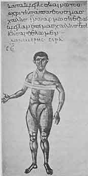
第７章図１ One of the Illustrations in Soranus' Treatise on Bandaging ソラノスの包帯術書に掲載されている図
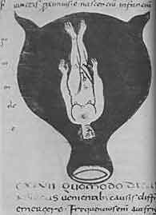
第７章図２ One of the Illustrations in Soranus' Treatise on Midwifery 助産婦用の本にある図
ガレノスのように評価が大きく変化した偉大な医師はいない。ガレノスは盛大に医療を行ってはいたが生前には多数の優れた医師のうちの１人に過ぎなかった。中世に彼の著作は規範のようになって権威を持ち彼に相当し彼を追い越しているのはアリストテレスだけであった。次いでルネッサンスになると評判が落ちて悪口まで言われるようになった。現代になっても彼に反対する運動は続いている。医学史研究者の多くは彼を偽の予言者であると言い真の予言者であるヒポクラテスと対比しているからである。このような論争を考えると彼の個性および教えについて簡単に済ませることはできない。
ヒポクラテス集典の１つを教師が学生と一緒に読むとクラスは熱意で溢れていることが判る。ところがガレノスの著作の１つを研究の課題にすると最初の文章から激しい反対を受ける。読んだ人は心ならずも「悪魔の代弁者」になる。しかしこのような告発的な態度のもとで我慢するのは容易でない。ヒポクラテスとガレノスにたいする見解がこのように違うのは何故だろうか？ 最初にガレノスとはどのような人か述べよう。
ドイツの考古学者たちが発掘を行ったアッタロス朝の古代首都であったペルガモンに紀元２世紀にニコンと呼ばれる技術者が住んでいた。彼は教養のある男で、哲学、数学、自然科学にも通じていた。彼は「平静、正直、温和」であった。彼はゆとりある生活をしていて不幸な結婚をしていなかったら幸福な筈であった。彼の妻は「性格が悪く、たびたび下女に噛みつきソクラテスの悪妻クサンティッペ以上に夫にがみがみと言った。」紀元129年夏にこの似つかわしくない夫婦に息子が生まれ父親はガレノスと名をつけた。ギリシア語で「ガレノス」とは海が静かで波が無く風で水面が乱されていないように「静かな」ことを意味し父親の心の底からの希望を表すものであった。
ガレノスは頭が良く元気な若者で父親ニコンから注意深く教育された。ペルガモンの哲学学校でいろいろな哲学大系に習熟した。しかし彼の勉強はこの領域だけではなかった。ガレノスが18歳になったときにニコンは夢を見て息子を医師にすることにした。夢はこの頃まじめに取り扱われていた。人々は罪滅ぼし、償い、罪からの解放、を強く希望することに熱心であった。彼らは疑い深かった劇作家アリストファネスのようにアスクレピオスを嘲ることはしなかった。ペルガモンにはこの医療の神アスクレピオスを祀る有名な神殿があった。毎日のように奇跡治療が行われていた。実際、後になってガレノスはアスクレピオスの神殿で治療を受けた。
しかし治療神殿の僧侶の他にペルガモンにはふつうの診療医師がいた。解剖学の本の著者でありヒポクラテス学派の著書の解説者であったサテュロスや、ストラコニコス、アエスクリオンからガレノスは学び多くのことを見たり聞いたりした。学生として最初に身をもって知った病気の第１例は生涯を通じて強烈な印象を与え数十年後になってガレノスは初期の観察をしばしば詳しく述べた。彼は偉大な医師になろうと決意した。１日中、夜中まで勉強し働き過ぎて健康を損ねた。しかし医師は自分の病気が最も勉強になりガレノスは自分の症状を鋭く観察した。
ガレノスが20歳になったときに親密の間柄だった父親が死去した。ペルガモンに留まる理由が無くなった。優秀な先輩医師たちの前例に従って旅を行い他の人たちに会い町を観察しそれまで見たことが無かった病気や新しい治療法を勉強した。紀元148年から157年まで９年間を旅に費やした。最初は近くのスミルナに行ってペロプスその他の有能な医師のもとで勉強した。次にギリシア本土に行きしばらくコリントスに滞在した。しかし彼の究極の希望はエジプトでありアレクサンドリアであった。この時にもアレクサンドリアには有名な大学がありガレノスが特に興味を持っていた解剖学の研究をするには古代世界最高の場所であった。もちろん嘗てのアレクサンドリアではなかった。ヘロピロスやエラシストラトスの時代からほぼ500年経っていた。病人の臓器を手に入れることができなかったので解剖学者になりたい人は下等動物の研究で対処しなければならなかった。しかし骨の勉強をするのにアレクサンドリアは適していた。エジプトはいろいろの点で素晴らしい国だった。
紀元157年にガレノスはペルガモンに帰った。毎年夏にペルガモン首都で行われる剣闘士大会が始まる直前であった。準備は整っていたが剣闘士たちに外科医がいなかった。大会を主催する最高位の僧侶は若いガレノスをこの重要な職に任じた。剣闘士大会は開かれ多くの怪我人が出た。ガレノスの看護によってすべての怪我人が回復した。これは普通にないことであった。このようにして自信を持ち彼は剣闘士の外科医を３年のあいだ続いて勤めた。
顕著な地位を出身地で得たのですることも多かった。剣闘士の医師は単なる外科医ではなく、剣闘士の訓練の指導も行わなければならなかった。これにより彼は食養生の理論と実際を勉強する機会を得た。さらに町ではニコルの息子が成長したことを喜んで多数の私的な患者を持った。地位や財産のある人たちが彼の助言を求めた。医業のあいだに彼は哲学を勉強し著作をした。
紀元161年に任命期間が終わり束縛から自由になった。大冒険の時が来て文明世界の首都すなわちローマに向かった。トローアスを出帆してレムノス島を通ってテサロニキ（マケドニアの港市）を経て紀元162年の始めにローマの門に着いた。大都市に入って心臓が速く打った。遠くからの異邦人が受け入れられるだろうか？ ここで生まれた医師たちや彼と同じような移民の医師たちがここでは群をなしていた。身体の各部分や各病気の専門医たち、すべての学派や方向の代表者たち、ニセ医師、下手くそ外科医、暗殺者、がいた。互いに激しく競争し互いに非難し互いに相手の肩の上に乗っていた。職業的成功の戦いではどんな武器でも使うことができた。さあ、彼も戦おう、手にするどんな方法でも使おう。哲学者マルクス・アウレリウス・アントニヌスがその頃に皇帝になったのは彼にとって良い前兆であった。このような男なら少なくとも哲学者とペテン師を区別できるであろうと思われた。
ガレノスはローマにいたがローマはガレノスに気がつかなかった。アジア系ギリシア人の雄弁家が多くいた。１人ばかり増えても何の違いもなかった。何もしないで宿舎にいても役に立たなかった。交際を求めなければならなかった。ペルガモンからローマに移民として来ていた同国人を訪ねた。幸運が得られた。同国人の中に著名人のエウデモスがいた。彼は歳を取っていてアリストテレス逍遥学派の支持者で最高のサークルに属していた。エウデモスは
このようにしてガレノスは一躍に有名となった。この新来者の医療を受けるのが流行となった。彼は実際に有能な医師でありこの立場を保ち堅固にする方法を知っていた。彼は抜け目無く注意深く時には「こけおどし」をすることもあった。「こけおどし」をすることで彼を非難すべきであろうか？ 彼が治療を始めたローマは紀元前５世紀のローマとは違ってローマ帝国になっていて医師のあいだでかなり競争が激しかった。
ガレノスが抵抗無しに成功したのでないことは事実が充分に示している。彼に患者を奪われた高名な医師たちは妬みで緑色になり彼の信用を傷つけるために出来ることをすべて行った。ガレノスとはどんな男か？ 医学のどの学派に属するか？ ガレノスはどの学派にも属していなかった。独立の心を持っている男はどんな学派に入るだろうか？ もしも誰かを師匠にするなら医術の創設者である神聖なヒポクラテスだけであった。激しい討論が行われた。講義や活気に富んだパンフレットでガレノスは反対者にたいして戦陣を張った。母親の激しやすい血液が彼の中で活動していた。
彼は成功した。位が高い患者たちは彼の助言を求めた。執政官フラヴィウス・ボエトゥスの夫人は女性特有の病気で苦しんでいた。ガレノスは彼女を治癒させた。彼は謝礼として400の金片を受け取り、この家族の主治医になった。ボエトゥスは医学の問題に大きな興味を持っていてガレノスの講義に出席した。とくに彼は解剖学に興味を持っていた。ガレノスはとくにこの領域に熟達していた。解剖室が作られガレノスは下等動物の解剖を実演した。ボエトゥスは喜んでこの家庭医の実習講義を記録することを希望した。彼は速記者たちと契約して１語１句まで記録させた。このようにしてガレノスの解剖書が編集された。
彼はもっと偉いパトロンを持った。そのうちの１人はヴェルス皇帝の伯父であるマルクス・キヴィラ・バルバルス、もう１人はマルクス・アウレリウスの養子であるクラウディウス・セヴェルスであった。医師としての最高位である宮廷医への路が準備された。皇帝の医師になることが確かになると彼の敵は何もしなくなった。ボエトゥスとセヴェルスはガレノスをマルクス・アウレリウス・アントニヌスに推薦しようとした。
次に不思議なことが起きた。野心家のガレノスは37歳で最高の勝利の瀬戸際なのに彼の名を皇帝に述べないようにとパトロンたちに要請した。急いで家財を処分し歩いて出発しカンパーニャを経てブルンドゥシウム半島を横断しギリシア行きの船に乗ってペルガモンに向かい紀元166年に故郷の都市に到着した。
彼はローマに４年だけいた。この短い期間に異邦人ガレノスは他に例が無い速度で高い位についた。次に医師として最高の位（宮廷医）につく直前に彼はローマを離れた。何故だろうか？
正確な理由は将来も判らないだろう。我々が知っている限りでは疫病がアジアからイタリアを襲った。これがペストであるか天然痘であるか発疹チフスであるか知られていない。記載が不正確だったからである。多数の犠牲者が出たことは疑いも無い。ガレノスは病気から逃げたのだろうか？ もしもそうなら疫病に小アジアで出会うために逃げたことになる。臆病者だったのだろうか？ 多分このように絶望的な病気が流行性のものなら彼に適当な場所は故郷であろう。他の理由があったのかも知れない。我々は知らない。
ペルガモンに帰ってこの都市で前と同じように開業した。彼の偉大な経歴はこれで終わりなのだろうか？ ローマにいたのは挿話や夢以上のものではなかったのだろうか？ 彼はこの地方都市で尊敬された開業医として年を取り脂肪がつき死ぬのだろうか？ 彼の運命とは違うのではなかろうか？ 彼の名はローマであまりにも有名だった。引退したにも拘わらず宮廷は彼のことを覚えていた。良い医師を必要としたのはこの時だった。ある日、イタリアに来るようにとの皇帝の信書がペルガモンのガレノスに届いた。むやみには急がなかったが彼は招聘に応じた。168年から169年の冬にアクイレイア（＊イタリア北東部：第２のローマ）において宮廷に伺候した。到着するや否や疫病が再び起きた。２人の皇帝であるマルクス・アウレリウスと義兄弟のヴェルスは行列を作って南の方ローマに逃げた。ヴェルスは途中でこの病気に罹って死亡した。
ガレノスはアクイレイアに留まっていた。しかし再び皇帝は来るようにと彼に命令した。蛮族は帝国の北辺をおびやかした。マルクス・アウレリウスはマルコマンニ族との戦争を準備していた。ガレノスは皇帝に従わなければならないことになっていた。未開の北部戦線にだろうか？ 医師としてそこで新しい経験を集め死んだ蛮人を解剖できるのは確かであった。しかし戦争は長いあいだ続くだろう。これは研究の中断になるだろう。後継者のコンモドゥスに主治医が必要ではないか？ ガレノスはローマにいる方が望ましいとマルクス・アウレリウスを説得することができた。
ガレノスは死去するまでさらに30年のあいだローマに留まった。医療、著作、講義、教育、討論で日々を送った。マルクス・アウレリウスはマルコマンニ族と戦争を続け紀元180年に死去した。コンモドゥスは父親の後を継いだが12年のあいだ統治した後で暗殺された。短期間の皇帝ペルティナックスおよびディディウス・ユリアヌスに続いてセプティミウス・セヴェルスが皇帝となった。この間、ガレノスは宮廷医の地位を保った。テリアカの１日量を皇帝に与えるのが彼の任務であった。テリアカとは毒殺を恐れた統治者が毎日摂っていた万能解毒剤であった。ガレノスはしばしば診察を求められた。
セプティミウス・セヴェルス即位の前年である192年に書斎が燃えたのでガレノスは悲嘆に暮れた。大部分の著作にコピーはあったが無いものも少なくなかった。彼は一部を再び書いたが永遠に失われたものもあった。紀元199年ごろ彼は約70歳で死去した。
ガレノスは大量の著作を行った。医学のすべての領域および哲学の幾つかの部門を取り扱った。多くは失われたが残っているものだけでも多数の冊数からなっている。しかし後継者にたいして何故ガレノスが強い影響を残したか判っていない。彼の著作は質から言っても量から言ってもこの影響に相当するものではない。
ガレノスがどの学派にも属していなかったことを既に学んだ。彼は折衷主義者であった。何であろうと医学書のうちで彼の役に立つものを採用した。彼は先人の仕事を盗作することに疑問を持たなかった。この時代には当然のことだったからであった。しかし、彼は単なる編集者ではなく自分の好みよって抜粋した。経験主義者のように経験を尊重した。独断主義者（＊ドグマティスト）と同じように自己の見解や医療のしっかりとした理論的な基礎を持つことを望んだ。彼は何よりもヒポクラテス主義者であった。ヒポクラテスは彼が常に言及していた師匠であった。ヒポクラテス学派は優れた仕事を行っていた。ガレノスの使命はヒポクラテス主義の基礎の上に医療を立ちあげることであった。ヒポクラテスが隆盛の時代から600年が過ぎた。この数世紀のあいだに多くのことが学ばれた。その間に得られた大量の新しい知識を体系化するのが自己の任務であるとガレノスは考えた。臨床家たちを絶えざる不安から解放し総ての場合に適する正しい指導を彼らに与えるような方式を確立することを熱望した。（＊ガレノスはヒポクラテス流に自然治癒を重視せず数十種類の薬を１度に与えるような積極的な治療を好んだ）
「ヒポクラテス集典」には多様な理論的な見解が提起されていた。質（熱、冷、乾、湿）の学説、四体液（血液、黒胆汁、黄胆汁、粘液）の学説、「
ガレノスにおいて「ヒポクラテス集典」の著者たちの考えは保存されたがガレノス特有な性質も付け加えられた。
老年になって彼は書いた。「年をとっても私は医療を続け治療や予後の判断において他の多くの著名な医師たちのように誤ったことはなかった。弁舌ではなく医療において高い評判を得たいと欲する人は私が熱心な研究によって確立したことを苦心せずに受け入れさえすれば良い。」と。大した予言だ！ ガレノスの後継者たちは苦労して自分の研究を行うことを放棄しガレノスを議論の余地がない権威者とみなすことだけ努力した。
騒然とした時代が間近になった。科学は停滞した。ガレノスの死後４世紀から５世紀の間における創造性のある医師たちや独自の思想を持つ研究者たちを医学史家たちは探し求めたが無駄であった。ローマの世界にはまだ有能な臨床家たちがいた。本はまだ書かれていたが医学書の著者はコピー製作者以上ではなく主としてガレノスからコピーをしていた。当時は医学の問題より宗教の問題に興味が持たれた。新しい信仰であるキリスト教が深みから強力に押し寄せてきた。言葉、はがね、火、をもって戦われた。キリスト教は勝利して国教となった。医療にとってこのことがどのような意味を持つかは後の章で学ぶことになる。
そのうちに帝国の北西の前線でチュートン人が嵐になりそうな雲行きとなり紀元４世紀の末には嵐となった。世界は変化した。民族大移動の時代が始まった。野蛮人によってローマ帝国が侵入されるようになった頃、東ではムハンマドが生まれた。
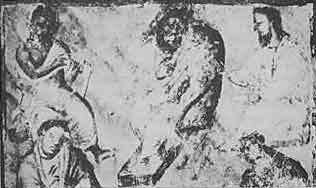
第８章図１ Galen (in the middle). On the left is Cratuas and on the right is Dioscurides (from the Vienese Manuscript by Juliana Anicia, fifth century A.D.) ガレノス（中央）（紀元５世紀の草稿より）
ムハンマド（モハメッド）は紀元５７０年にメッカに生まれた。彼は一神教宗教の予言者であっただけでなく奇跡に近いことを行なった。すなわち未開で離ればなれのアラビア部族を信徒にして統合した。彼らに清潔を厳しく守らせ決まった時間に決まった祈りを捧げさせた。メッカはこの予言者を追放したが彼は征服者として戻りアラビアの支配者になった。
次いでムハンマドの後継者たちである最初のカリフたちに率いられアラビアの軍隊は国境を越え始めた。セム族の湯沸かしは再び沸騰した。アラビアは砂漠であり土地が貧しかった。東、西、北は素晴らしい戦利品として誘惑した。新しい信仰に鼓舞されてアラビア人はすべての方向に進み征服し定住した。地方や王国は彼らの猛襲の前に落ちた。シリア、パレスティナ、新ペルシャ地区、ダマスクス、エルサレム、クテシフォン、は彼らのものになった。エジプトを席巻しアレクサンドリアを地区の都市に格下げしカイロを従属王国の首都にした。北アフリカの砂漠を西に進み千年ほど前にローマによって消し去られたカルタゴを置き換えた新カルタゴを破壊した。さらに西に進んでイスラム教徒の軍隊は大西洋に達した。海峡を渡って北を望むと岩山が見えた。隊長の１人ターリクはこの高所に軍を進めた。ここはターリクの名前をとってジブラルタルと呼ばれるようになった。西ゴート族の軍隊は敗北した。侵略者はさらに北に動きスペインを北に進んでピレネー山脈を越えてフランク帝国の心臓部に入った。彼らの進軍はトゥールとポアティエの間における大戦争でカール・マルテルによって押し止められた。キリスト教徒とイスラム教徒はこの後数世紀にわたって争い互いに力を比べた。
紀元732年のことであった。ムハンマドがメッカからメディナに移ったヒジュラ（＊ヘジラ：回教歴の起点）から110年以内のことである。すなわち１世紀を少し越えた頃にアラビア人すなわち「サラセン人」は全く異なる国と民族からなるが信仰は１つであるピレネー山脈からインダス川まで及ぶ帝国の支配者になった。彼らの関心は中心すなわち聖なる都市メッカに向かっていた。彼らは同じように共通の言語によって１つになっていた。コーランの飜訳は禁じられておりアラビア語はカリフの王国内では共通の学問用語になった。
ウマイヤ朝カリフによる支配が始まった７世紀の中頃にダマスクスはイスラム教世界の首都になった。ウマイヤ朝に続いてアッバース朝カリフが支配し政府の所在地はさらに南のバグダードに移った。シャルルマーニュ（＊カール大帝）と同じ時代にハールーン・アッラシードが支配した。彼は物語（＊千夜一夜物語）で有名になった。
アラブすなわちサラセンが征服した土地の大部分は古代文明の区域であった。行ったところで征服者たちはギリシア―ローマ文化を手に入れた。ダマスクスは豪華な建物がある繁栄した都市であった。やはりアレクサンドリアは科学生活が盛んな中心であった。アレクサンドリアには最後の有名なギリシア医師であったパウルス・アエギネタが住んでいた。古典的な技術（水道、橋その他）が侵略者の尊敬を受けない訳はなかった。もちろん彼らは最初の頃は文化の問題に注意する時間は無かったろうし、たぶん興味が無かったであろう。しかし国境において平和が確立されると次第にこれら外国人の技術や芸術の能力を評価するようになった。城や宮殿を外国人設計者が造るようになった。外国の技術者や外国の化学者や外国の医師を歓迎した。ギリシアの処方がアラビアのお守りより有効であることは直ぐに知ることができた。さらに古代ギリシア―ローマの英知が言葉として書かれていることを学んだ。草稿が必要となり征服を離れてこれらは外交経路で入手された。平和条約が結ばれると条件の１つは科学書をアラビア人に渡すことであった。アラブはギリシアの幻想的著者には興味を持たなかった。必要とする著作は哲学、数学、解剖学および特に医学書であった。しかしこれらの本はアラビア語に翻訳しないと役に立たなかった。これらの本の多くは他のセム系言語であるシリア語にすでに訳されていたのでアラビア語への翻訳は早かった。ペルシャ湾の北海岸にあるジュンディ・シャプールには古くからシリアの医学校があった。そこから医師や翻訳者が呼び出された。このことに関して９世紀にはフナイン・イブン・イスハークと呼ばれたキリスト教徒が最も能率の良い仲介者であった。
図書館、学校、病院が作られた。教育はすべての階級に拡張された。医師が訓練された。医師の多くはペルシャ人で当時の科学に通じていたが母国語ではなくアラビア語で著作した。この頃イスラム文化圏で活躍した偉大な医師たちは数多い。これらのうち特に２人に注目したい。たぶん最も有能であっただけではなくヨーロッパの医学に大きな影響を及ぼしたからである。
このうちの１人はラージー（＊ラテン語読みでラーゼス）である。これはラテン語化した名前でペルシャの北西部にあるコラーサーンのライで生まれたからであり彼の名前に付け加えられていた。彼のフルネームはアブー・バクル・ムハッマド・イブン・ザカリア・アル・ラージーであった。学生になったときに彼の興味は医学ではなく哲学および音楽であった。彼はリュート演奏家として秀でていた。彼の最も仲の良い友達の１人は病院の年配の薬剤師であり議論をすることによって彼は医学に興味を持つようになった。彼は医術に専心する決心をしたときにすでに若者ではなかった。彼の医学の勉強は急速に進んだのですぐに有名になった。最初に彼は出身した町の病院で長に昇進し多くの弟子たちが彼から学ぶために集まった。しばらくして彼はバグダッドに呼ばれた。ここで新しい大きな病院の建設が計画され首都で彼に課された最初の任務は病院に最適の場所を見つけることであった。話によると彼は多くの点で適当と思われる場所に骨付き肉を吊り下げさせた。肉が腐るのにもっとも時間がかかった場所は空気がもっとも健康的であるに違いないと彼は宣言し、その場所が病院に選ばれた。
老年になって彼は目が見えなくなったと言われている。彼の生涯について殆ど何も知られていないのでこのような問題について年代記製作者たちは想像を働かせている。この盲目の老人に手術を申し出たときに「この世を充分に見ているから」と言って拒否されたと伝えられている。他のアネクドートは彼が盲目になった理由を説明している。ラージーは化学に興味を持ち錬金術についての著作をある高位の人に献呈して大量の褒美を受けた。しかし卑金属を金に変化させることの証明をするようにパトロンが要求したときにラージーはこの試験を避け頭を強く打たれそれによって彼は盲目になった。別の物語によるとこの医師で錬金術者は実験に失敗した理由で首を絞められたとのことであった。しかしこれらのお話は考慮する価値がほとんど無い。
ラージーは多作の著者であり100冊以上、ある人によると200冊以上の著作を行ったとのことである。印刷された本は非常に少ないのでヨーロッパの医師たちが彼の著作を評価することは困難である。彼は医書だけを書いたのではなく書いた専門書は哲学、化学、数学、天文学、物理学の問題に関係している。
中世のヨーロッパではラージーがコラーサーンの支配者マンスル・イブン・イスハクのために書いたアル・マンスルの書が高く評価された。これは医学一般について短く書いた本で臨床の手引きとして役に立つものであった。
しかし今日ではラージーの著作のうちでは「天然痘および麻疹について」という専門書が高く評価されている。この本は１つの病気について書かれた最初のモノグラフの１つとして価値が高い。麻疹と天然痘をはっきりと区別していないのは確かに欠点である。しかしこの小さい本は医学古典の１つであり素晴らしい臨床の記載があり本を通じて力強い観察の精神が息づいている。ラージーはまた知られている限り小児の病気についての最初のモノグラフを書いた。
しかしアラブ世界におけるラージーの盛名はその当時の医学知識について一種の百科事典を編纂したことに基づいている。この本はアラビア語では「医学の庫」と呼ばれラテン語化されて「大陸」と呼ばれた。これは死後に発表されたもので彼自身は書いておらず弟子たちがまとめたものであった。これはギリシア、アラビア、インドの医師たちが知っていたことを記録しまとめ、それにラージー自身の観察を加えたものであった。この本を研究することによってラージーがイスラム圏最高の臨床家であったことが判る。彼は個々の病例と治療に興味を持ち体系化には拘わらなかった。彼の臨床教育で主要だったのは病歴であり彼の著作にはこのような病歴が詰まっている。彼は重箱の隅を突っつく理論を非難し詳細過ぎる予後判定にたいして特に反対した。古代の医師たちは評判を良くしようとして予後をしばしば不適当に使いもっと悪いことには現代の詐欺師まがいのことまでしていた。
我々はラージーの著作のほんの一部しか知らず、しかもそれらは主として便覧である。研究者について便覧から得られるものはカリカチュアに過ぎない。便覧は多くのばあい単なる編集物である。もしもラージーが書いた多数のモノグラフを入手できたらラージーは現在考えられている以上に独創的な思想家であったことが判るであろう。我々は天然痘と麻疹についてのモノグラフから多くを推論することが可能である。
アヴィケンナも同じようにペルシャ人でありラージー死去の約45年後に生まれた。アヴィケンナの生涯はラージーと傾向が異なりテンポも大きく異なった。フルネームはアブ・アリ・フサイン・イブン・アブダラ・イブン・シーナであって高官の息子としてイスラム帝国の周辺にあたるブハラの近くでほぼ980年に生まれた。彼は神童であった。10歳でコーランを暗記し古典作家を良く読んで知識はほとんど奇跡的であった。しばらくして彼は哲学、次いで法学、次いでユークリッド幾何学の勉強に転じた。16歳で医学の勉強を行った。これは彼にとって容易であった。患者を直接に診ることによって読んだことに追加し本に無いようなことを大量に学んだ。
彼は飽くことのない知識への渇望に支配されていた。彼は述べた。「家で夜にランプをつけて読んだり書いたりした。仕事の力が失われるとエネルギーを回復するために１杯の葡萄酒を飲んで仕事に戻った。遂に眠り込んでも勉強に熱中しているので起きたときには私を悩ましていた問題が眠っている間にしばしば解決されていた。このように私は弁証法、物理学、数学を完全に理解するまで勉強を続けた。それから神学と形而上学に向かった」と。
18歳に成る前に彼は医師として有名になり王子を診察し王子は健康になったので書庫をこの若い医師に解放した。数年後に彼は20巻からなる百科事典を書いた。このとき彼は21歳であった。このころ父親は死去し生計を立てるのが困難になった。彼は次々と異なる統治者に仕えたが騒然とした時代だったのでパトロンを選ぶのに何時でも幸福だったわけではなかった。最後にハマダン（イラン中西部の都市）についた。その時にアミール（首長）のシャム・ウド・ダウラは激しい疝痛で苦しんでいた。アヴィケンナは治癒させた。アミールは彼が種々の能力を持つことを知り大臣に任じた。しかしアマダンには軍閥があって新しい国務大臣が気に入らなかった。兵士は彼の家を襲い彼を捕まえ死刑に処することを要求した。アミールはこの要求に屈しなかったが彼を追放することにした。丁度その時に王族パトロンの疝痛が戻った。アヴィケンナは再び治癒させ改めて大臣に任命された。
アヴィケンナの活動は休みなく続いた。昼間は国務、夜は研究、講義、著述であった。しかし無味乾燥な男ではなかった。世慣れな人として、ワイン、女、歌を好み、たぶん健康が許す以上に熱心であった。
その後の経歴はさらに上がったり下がったりであった。ある時には王侯のようであり別の時には牢獄に入っていた。ついにイスファハン（イラン第２の都市）に落ち着き科学に専念した。金曜日に多数の学者が彼の英知を学ぶために集まった。しかし58歳にならないうちに体力が使い尽くされ死去した。
彼は大量の著作を遺した。多くは極めて総合的なもので科学の種々の分野にわたっていた。彼はすべての分野で素晴らしい研究を行った。令名は同時代の誰よりも上であった。彼自身はアリストテレス主義者であり後世から第２のアリストテレスとみなされた。
彼のもっとも重要な医学書は「医学の規範」と呼ばれる専門書である。医学理論、単純な薬、病理学各論と治療、処方集、の５巻からなっている。それぞれの巻はさらに部に分かれ、それぞれの部はさらに章に分かれていた。アヴィケンナの方法はアリストテレスの弁証法に従っており著作はアラビアスコラ哲学の産物であった。
ラージーとアヴィケンナのあいだよりも大きな違いを考えるのは困難であろう。ラージーは音楽家で想像力の強い男でありアヴィケンナは純粋に論理的な思索家であった。ラージーは臨床家でありアヴィケンナはアラビア医学の体系家であった。ラージーは病歴、個々の病例を好んだ。アヴィケンナも鋭い観察者であり個々の患者を研究したが興味を持ったのはそのタイプに一般的なものであった。アリストテレスが哲学における彼の先生であったようにガレノスは彼の医学における先生であった。アヴィケンナはガレノスと同じように水も漏らさぬ体系を作る努力をした。アヴィケンナの手によって医学はギリシアとアラビアの知恵を包含する巨大な統一された独立した論理的な体系になった。彼は医術を数学に似た学問とする理想を実現するように努力した。
このような「体系」は自然にたいする暴力ではあるが魅力的なものであった。習うのが容易であり応用が容易であった。心から疑いを取り去り、受け入れた人は暗闇を手探りしているのではないように感じた。この体系が広範囲な影響を及ぼし書名の意味するように規範的なものになったのは当然のことであった。従ってヨーロッパではこの本が知られるようになった13世紀から17世紀までこの体系は支配的でありイスラム圏では今日まで支配的である。
巨大なアラビア領土は数世紀以上は続かなかった。13世紀の初めにモンゴル人は成吉思汗に率いられて、北から東から領土を席巻した。1258年に彼らはバグダッドを占領しアッバース朝は滅亡した。14世紀にトルコ人の侵入が始まり1453年にコンスタンティノープルを占領してローマ帝国で残っているものを破壊した。しかしアラビア文明は続いた。勝利した征服者たちは同化されイスラムの宗教信条を受け入れた。彼らにとってもコーランは生活の指導原理となった。医師たちは偉大なアラビア人教師の学説によって訓練された。
アラビア医学は続いて特にスペインで発展した。ここはアラビアの一部ではあったが生活は独立していた。８世紀にウマイヤ朝がアッバース朝に取って代わられたときにウマイヤ朝の１人アブド・エル・ラフマーンはマウレタニア（アフリカ北西部）に逃れスペインのアラビア人たちに呼ばれて君主となった。勢力を得て彼はコルドバのアミールとなり２世紀後に後継者はカリフと呼ばれるようになった。科学と芸術は宮廷で盛んになった。やがてセビリアおよびグラナダにアラビアの国が作られ小さな国ではあったが学者たちに多くの利益を与えた。スペインの大部分においてイスラム教の支配は1492年まで続いた。これはコロンブスの新大陸発見の年である。イスラム教支配の間にアヴェロエス、マイモニデス、イブン・ズフルのように優秀な哲学者であり医師である人たちが活躍した。スペインにはアブルカシムのような有名な外科医やイブン・バイタルのように優れた薬理学者がいた。トレドは西のカリフ国の主要な大学でありここでは東と西の文化が出会い互いに豊かにしあった。
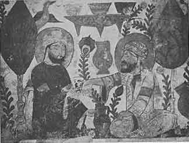
第９章図１ A Persian Physician offering a Potion. 薬を差し出しているペルシャ人医師
我々はヨーロッパ文明に戻らなければならない。民族大移動の始まりについては既に述べた。ケルト族とチュートン族が幾つもの波となって南と西に向かって移動し疲れ果てたローマ帝国を席巻し［イスラム世界におけるモンゴル人やトルコ人の場合と同じように］征服した相手の文明や宗教を受け入れた。新しい展開に特徴を与えたのはキリスト教であった。病人だけでなく矍鑠たる老人にも嬉しい潮がもたらされた。原始時代から古典時代を通じて付きまとっていた罪および劣等から病気は自由になった。受難は神の恩恵を示すものであり神々しい変容を象徴するものであった。患者は特典を持った人間であった。健康者は同情を通じて特典に関与することができた。実際、貧しい人と患っている人のために出来ることをすべてするのがキリスト者の義務となった。
そのうちに大きなスケールで病人の世話が組織化された。大きな病院が作られた。ベネディクト修道会の創設者であったヌルシアのベネディクトゥスは病人の介護に特別の注意を払うように修道士たちに教えた。
最初、キリスト教は基本的に古典時代の科学に敵意を持っていたが次第にこの新しい信仰は科学、さらについには異教徒の医学とも和解するようになった。明らかに医学知識を持つキリスト者は無知なものより病人の助けになった。東ゴート王テオドリックの高官であり後に修道士になったカッシオドルスは古典文献の研究がキリスト者にとって価値があると宣言した。彼が高年まで住んでいた修道院の図書室には他の種類の本以外に医書が置かれていた。ベネディクト会修道院は次第にカッシオドルスの根本方針を採用しベネディクト会修道院が作られると医学の勉強と臨床のセンターが作られキリストの名において病人が歓迎され破壊されずに保存されている古代の医学知識がここで研究された。このようなセンターのうちで、ボッビオ、ザンクト・ガレン、ライヘナウ、フルダは特筆する価値がある。
中世の初期に医師たちは上級聖職に属していた。俗人の医師もいたことは確かであったが非常に少数であった。司祭や修道士は主として医学文献を保存する任務を持っているとともに臨床家でもあった。したがてこの時代を「修道院医学」の時代と呼ぶのは正当な理由がある。
イスラム圏はギリシアの大医学者の著作をアラビア語に訳して内容を自分たちのものにしたがラテン語を話すヨーロッパにとっては閉じた本であった。ヒポクラテス、ソラノス、その他のギリシア医師たちの著作のあるものはラテン語に訳されたがあまりにも複雑なのでほとんど受け入れられなかったことは疑いが無い。必須なものを臨床にすぐに利用できるようにしたのでギリシアの師匠たちの短い専門書、抄録、圧縮版はそれらに比べると成功した。結論として中世初期の医学文献は、主として処方集、食養生の短いヒント、および脈拍、熱、尿、瀉血についての短いモノグラフ、からなっていた。これらはある時は書簡としてほのめかされ、ある時は教理問答の形をとり、ある時は覚えやすいように狂詩、になっていた。
この時代の医学文献に独創的な考えを求めても無駄であろうが既存の医学教義は入念に保存された。これらは盲目的に書き写されたのではない。修道院医学の著者たちはたしかに編集を行ったが理解して行っており民間医療についての彼らの知識を書き込んでいる。教会の大きな貢献は病人の介護を行っただけではなく暗黒時代に医学の火花を輝き続けさせて時が来たら新しい火がつくようにしたことであった。しかし中世の後半になってアフリカのコンスタンチヌスと呼ばれた男が出現するまで時は来なかった。
しかしコンスタンチヌスを「偉大な医師」の１人と書くのに躊躇しないわけには行かない。実際のところ我々は医師としての彼の能力を何も知らない。医学における彼の重要性は臨床実践の分野にあるのではない。しかし彼の仕事は大きな影響を与えた。それではコンスタンチヌスはどんな人だったのか？
彼は紀元1010年頃にカルタゴに生まれた。彼の性格について挿話がある。伝記作家のディアコヌスによるとコンスタンチヌスはカルデア人（＊南バビロニアに住んだセム族で天文学に秀でる）、アラビア人、ペルシア人、サラセン人、から医学その他の科学を習うためにバビロニアに行った。バビロンからさらに遠くインドに行きそこからエチオピアとエジプトを経てこれらの国の英知を学んで帰ってきた。彼の旅行は３９年にわたり出身市に大量の知識を持って帰った。しかし、同国人たちは彼を邪悪なもの（妖術師）とみなして殺そうとした。暗殺計画を嗅ぎつけて彼はサレルノ行きの船に乗って亡命した。そこで乞食に身をやつして、しばらくのあいだ隠れていた。ある時バビロン王の兄弟がサレルノを通りコンスタンチヌスを認め彼はギスカールの宮廷で歓迎された。しかし宮廷生活が性分に合わないので引退してモンテ・カシノに移った。デシデリウス大修道院長に歓迎されて修道士になった。修道院の平和の中でアラビア語からラテン語への医学書飜訳に献身し1087年になってペンが彼の手から離れた（死去した）。修道士の仲間は彼を「東洋と西洋の師匠」、新しいヒポクラテスと呼んだ。
これがコンスタンチヌスについて知っている全てである。多くはないが充分である。話はもちろん伝説であるがすべての伝説と同じように真理の核心を含んでいる。コンスタンチヌスがイスラム世界と密接な接触があり東洋の科学を勉強し西欧に伝えたことに間違いは無い。彼が当時の西欧の科学に通じており前世紀の修道院の医学著作者の粗野な文章と違って素晴らしいラテン語を書いたことを我々は知っている。
コンスタンチヌスの意義はこの仲介者としての役割にある。彼は魔法の鍵を使うようにして東洋世界を西洋に開いた。医学書は不毛なものになっていた。修道院の医学書著者たちは同じ著作を５世紀にわたって噛んでいた。これらの著書はしばらくのあいだは臨床の役に立ったが次第に廃れていった。医学は教会から離れつつあった。教育はもはや聖職者の独占ではなくなった。教育ある俗人もいるようになった。独立した生産的な仕事が可能になるにはまだ数世紀を過ぎる必要があったが理知的な人間はより良い教育に飢えていた。コンスタンチヌスは彼らが教育を受けられるようにした。彼らはコンスタンチヌスの飜訳によってアラビア医師の著作が読めるようになった。しかしラージーやアヴィケンナの著作は彼らが理解できるものではなかった。コンスタンチヌスが訳したのはユダヤ人イサックやアラ・イブン・エル・アッバスなどのようにあまり有名ではない10世紀の著者の著作であった。当時の臨床家たちは同じようにアラビアを経て古代ギリシア医師たちの著作、ヒポクラテスの「箴言集」、「予後」、「食養生」を知るようになった。これらは数百年前にラテン語に訳されていたが理解されず従って忘れられていた。今や東洋を経てこれらは戻ってきて熱心に読まれた。ヒポクラテスとともにガレノスが帰ってきた。すなわちヒポクラテス集典のガレノスによる注釈、彼の治療についての大著作、および小さな本「医学」、である。すでにイスラム世界を支配していたガレノスは今やヨーロッパ世界の医術を征服し始めた。
コンスタンチヌスの飜訳はサレルノ医学校で教科書となったし適当な時に行われたので急速に影響を及ぼした。サレルノはナポリからそれほど遠くないところにある繁栄した海港であった。大司教管区であり有名な大聖堂があり多数の修道院があった。後になると医学校によってひろく有名になった。10世紀の始めにはすでにサレルノ医師たちは公国の外までかなり有名になった。学者としてだけでなく有能な臨床家として有名であった。非常に多様な影響がここに作用していた。古典の研究はここでは死に絶えていなかった。ギリシア語はまだ理解されていてこの地方のイタリア語方言および学者のラテン語の補助言語であった。この町とレヴァント（小アジア、シリアなど）との貿易は盛んであった。アラビアについての知識は近くのシチリア島から得られた。サレルノ医学校の創設について挿話がある。ある日、ギリシア、ローマ、サラセン、ユダヤの４人の医師が集まって処方集の内容を決定したとのことであった。この話はサレルノの特徴を示している。ここは俗人と聖職者が仲良く互いに張り合って協調できる場所であった。
さて、このサレルノの医師たちの小さい社会にコンスタンチヌスの飜訳が知られるようになった。肥料としての効果は驚くべきものであった。家庭医に過ぎなかった医師たちが学者になった。以前イスラム圏のジュンディーシャプールがそうであったようにサレルノは「ヒポクラテスの都市」になった。ヨーロッパにおける最初の医学部が生まれた。12世紀に医学校は大量の文献を生み出した。処方集、病理学各論―治療学についての教科書、熱―尿―脈拍―食養生についてのモノグラフ、外科学や婦人科学についての専門書、などであった。再び解剖学が学ばれた。動物とくにブタが解剖学の教示に使われ、これについての簡単な手引き書が書かれた。これらの著作の各行にコンスタンチヌスの影響を感じる。ヨーロッパに彼が持ち込んだ新しい知識が詳しく述べられた。ギリシアおよびアラビアの教えがサレルノの医師たちの経験と調和した。しかしサレルノの医師たちは偉大な教師たちの成果の前には控えめであった。
12世紀のサレルノの医師たちが独創的な科学の研究をしたと考えたりそのような仕事を期待するのが理屈に適っていると思ったとしたら誤りである。彼らは勉強したかった。ベッドサイドで臨床を習った。また新しい文献から習った。習ったことを繰り返し繰り返し勉強し他の人に伝えた。ますます数が増えたサレルノに来る学生に口で教え僧院医学の著作よりずっと優れた彼らの本や新しい医学文献によって教えた。彼らは新しい理論を作る必要を感じなかった。つい最近になって得られびっくりさせられた豊かなギリシア―アラビア医学は彼らに充分な説明を与え科学的な知識欲を満たしてくれていた。
我々はサレルノ医師たちの多くの名前を知っている。バルトロメウス、プラテアリウス、コフォンの名前。フェラリウスの名前。しばらく後でマウルス、ウルソなどの名前である。しかし、これらの名前をもった人たちについて論ずるのは困難である。これらの個々の人たちの生涯について殆ど何も知らない。彼らの本には個人的な記載は殆ど無い。サレルノ医学校における仕事はギルド（組合）でなされた仕事に似ている。これがサレルノ医師たちを偉大な医師として取り扱わずにコンスタンチヌスの章で補足として取り扱った理由である。
さらにサレルノ医学校は短期間に咲いた花であって医学史において教育的と言うか刺激的な弾みをつけた。ギスカール（＊ナポリとシチリアを征服した傭兵の長）の時代や少し後になって最も豊かに繁栄した。それから1195年に町は皇帝ハインリヒ６世によって略奪された。間もなく手強い競争相手にになるナポリ大学が30年後1225年に皇帝フリードリッヒ２世によって作られた。しかしこの後でもサレルノは暫くのあいだ令名を保った。シチリアのロジェル２世および皇帝フリードリッヒ２世の法令によるとサレルノの医師としての免状が無いと彼らの領地で臨床を行うことができなかった。
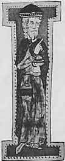
第10章図１ Constantine of Africa, 1010-1087 コンスタンチヌス・アフリカヌス
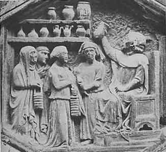
第10章図２ Urinoscoy (a Relief from the Campanile in Florence) 尿検査
コンスタンチヌスは人々の興味を東に向かわせた。彼の飜訳は医学勉強の新しい世界を開いた。他の人たちは彼が開いた路を進むことが期待された。1058年にトレド（スペイン中部）はカスティリャ王国のアルフォンソ６世に征服された。西のムハンマド科学の首都がキリスト教徒によって奪い取られた。トレドには大きな図書館があり多くの優れた言語学者がいた。確かにここではキリスト教国が必要とする知識を得ることができた。12世紀の後半にイタリア人でクレモナ出身のジラルドはトレドに行ってアラビア語を学び図書館を探し廻った。彼は発見に発見を重ねた。宝物は期待以上であった。彼は熱心に探索を行った。多くの弟子たちが彼の周りに集まった。翻訳者グループが作られて熱心に活動した。数十年のあいだに多数の本がこれらの飜訳で満たされた。哲学者、数学者、天文学者、医師の著作がアラビア語からラテン語に移された。このようにして西洋はアリストテレス、エウクレイデス（ユークリッド）、天文学者プトレマイオスを完全に持つことができるようになり、ラージー、アヴィケンナその他のアラビア医師たちの知識も広められた。
東と西が接触する他の場所においてもアラビア語からの同様な飜訳がなされた。シチリア島はこのように成果のあった場所の１つである。11世紀には新しい文献の移入は少なかったが12世紀にはこのような流れが大きくなり13世紀には膨大な量の既存の知識がキリスト教世界で得られるようになった。これらの知識の保存と仕上げはヨーロッパの各地に作られた若い大学の任務となった。12世紀にはモンペリエ医学校が前面に出るようになり、オクスフォード、ケンブリッジ、ボローニャの大学が創立された。13世紀にはパリやナポリの大学、メシナの大学、そして何よりもパドヴァ大学が創られた。プラハ、ウィーン、ハイデルベルク、ケルン、エルフルトの大学の創立は14世紀に起きた。スペインの前哨地点であったプロヴァンスのモンペリエはサレルノがコンスタンチヌスの飜訳によって肥料を得たのと同じように飜訳の波によって強く影響された最初の場所であった。新しい知識は豊富であったにも拘わらずと言うかむしろ豊富すぎたので容易に理解されなかった。飜訳は急いでなされたので出来が悪くラテン語はひどく今日われわれが読んでもハラーが言ったように「吐き気を我慢せよ」である。アラビア語の術語の多くが誤読されたり全く理解しないで新しい隠語が作られ後になって正しくするのが困難であった。
今日このような文書を研究する者はこの時代の産物として歴史的立場で評価することができる。しかし13世紀には全く違った見方をしていた。新しい文書を現存している全体と考えてすぐに医療に使おうとした。当然、大きな困難にぶつかった。病気の記載や処方の多くは判りにくかった。ギリシア、ペルシャ、エジプトの条件で使えたものを修正しないでヨーロッパの世界に移入することはできなかった。従ってこれらの慣習を明らかにし矛盾を取り除いて新しい知識が役に立つようにするには多くの仕事をしなければならなかった。アリストテレスはその方法を教えていた。これは弁証法であった。東洋と同じように西洋においても結果はスコラ学であった。ガレノスとアヴィケンナは全く誤りの無い権威者とみなされ医学者の心を支配した。中世における大学の仕事は学説を教えることだけでなくそれを違反から守ることであった。
スコラ派医学の代表者が書いたものを研究するとその考え方を早く知ることができるであろう。このためにイタリア人ピエトロ・ダバノを選ぶことにしよう。
アバノはパドヴァ近くの硫黄泉で有名な温泉地であってピエトロ・ダバノの名前はこの生まれた場所に由来している。彼は中世後期の典型的な博識家であった。1250年に生まれパドヴァで医学と哲学を学んだ。彼が有名なのはギリシア語を知っていたからでルネッサンス以前には稀なことであった。ギリシア医師の著述はアラビア語を経由してラテン語に訳されていた。原著から訳さない理由があるだろうか？ ピエトロはコンスタンティノープルに行った。この帝国首都のこの頃における状態は殆ど何も知られていないが彼をコンスタンティノープルに行かせることになったのは知識欲およびギリシア語に習熟してギリシア語の手写本を研究することだったろう。ともかくこの旅行の後で彼はかなりの数のガレノスの本をギリシア語からラテン語に翻訳した。
次に彼がパリにいて大学の講師になったことを知っている。ここで彼は医学と哲学だけでなく天文学や人相学についての多くの著述をした。しかし教会は彼の学説に疑いを持ち
14世紀の初めにピエトロはパドヴァに帰り大学の輝かしい光の１人となった。この時期にダンテはパドヴァにいたので２人は面識をもっていたと思われる。再びピエトロは宗教裁判所に訴えられ裁判中に死去した。裁判所は生きているあいだに火あぶりの刑にできなかったので死体を火あぶりにした。ピエトロの医学における主著は「哲学者と特に医学者との違いのコンキリアトール（調停者）」であった。医学はスコラ学では「知識の総和」の一部であった。これは閉ざされた学説であり「理性」と「権威」の２つの柱を基礎とするものであった。医学は教会の宇宙観の一部分をなすものであり神学の侍女であった。
スコラ派医師のピエトロは何を書いたのだろうか？ 権威ある書籍の注釈書、困難な問題や概念を明らかにする辞典、同じような意見を一括するコンコーダンス（用語索引）であった。ピエトロのコンキリアトールは医学の慣習から数多い矛盾を除くのを目的とした。この本は３部からなり、第１部は一般的な質問、第２部は医学理論、第３部は臨床であった。詳細に言うとこの本は全く体系的である。問題が述べられ多数の引用によって権威が示される。次にスコラ学で最も重要な討論の部分となる。ここで賛成と反対が入念に考察され真理が明らかになり矛盾の解決が期待され最終的に正しい学説が純粋にされ調整されて限界のある全体として伝えられる。
上に述べたことはこの当時の医術がどの方向に進んでいるかを示している。スコラ派医師は極めて限られた程度しか自己の経験に興味を持たなかった。もちろん彼らは経験を持ち討論においてはたぶん個別の意見として自由に発言ししばしば最終的には記録されたものと思われる。しかしスコラ派医師は基本的には哲学者であった。考える方式はアリストテレスやアラビアの学者によって決められていた。彼らは論理的な考え方を第一に必要なものとみなしその助けによって知識の体系化に努力した。
ピエトロ・ダバノの他にも多くの有名な医師たちがいた。例えば、アルベロッティ、ヴィラノヴァ、ドンディ、ゴルドン、などであった。彼らの仕事は同様な方向に進み教会と衝突する傾向があった。教会が押しつけた限界を越えようとしたからであった。
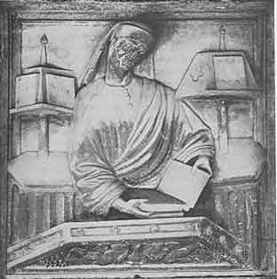
第11章図１ Pietro d'Abano, 1250-1315 (a Relief from the Palazzo della Ragione in Padua) ピエトロ
16世紀の最初の年にパドヴァ大学の教室の椅子に並んで、コンタリニ、ナヴァジェロ、ラムジオ、フラカストロが座っていた。ふつうラテン化してコペルニクスと呼ばれているドイツ系ポーランド人のコペルニックも学生の１人だった。彼は他の人たちよりも年をとっていてボローニャで法律を学び他所で他の学問を学び1501年にパドヴァの医学部に入学した。
パドヴァは眠い古い町で路は樹木で取り囲まれていた。その頃も学問の場所として有名で世界各地から学生を惹き付けていた。しかしこのルネッサンスの時期には刷新されて美しくなっていた。聖アントニウス教会の前にはフィレンツェの彫刻家ドナテロ作の美しい騎馬像が建っていた。コンシリヨの回廊は出来たばかりであった。このように美しい建物はそれまでパドヴァには無かった。全般的に古典古代の輝きがこの場所に戻ってきたことが感じられた。町の住人は芸術に熱心であった。数多い廃墟は単に持てあましている土地ではなく偉大な過去の証人となった。至る所に素晴らしい彫像が建てられた。人の形の美の礼賛がなされた。新しい時代の人たちは古代芸術家と競うだけでなく追い越すように努力した。
ピエトロ・ダバノは２世紀前にパドヴァ大学で教えていた。彼は忘れられてはいなかった。「コンキリアトゥール」は1472年にマントヴァで最初に印刷されその後に数多くの版が重ねられた。活字印刷がその頃に発明され多数の本が作られ手写本よりも安価であった。注目すべき本を書いた人は結果を速く広範に普及させることができるようになった。
当時のパドヴァにおける有名な教師はアキリニとポンポナッチ（ポンパナティウス）であった。２人ともピエトロと同じようにアリストテレス主義者でありアキリニはアヴィケンナと同じように「第２のアリストテレス」と呼ばれた。アキリニはアラビア学の信奉者でありとくに哲学者アヴェロエスを高く評価していた。しかしアキリニはピエトロと違って解剖学者であった。彼は人体を解剖し優れた観察者であった。すでに14世紀にピエトロの死後まもなくから医師たちは人体の詳細な知識が必要であることを認識しはじめた。古典の解剖学教科書を良く理解するために彼らは人体を自分で解剖した。
ポンポナッチもピエトロと密接な関係があった。ポンポナッチのアリストテレス主義は注釈者であるアフロディシアスのアレクサンドロスによるものでありピエトロはこの著者の本を飜訳していた。しかしポンポナッチは独創的な思想家でもあった。彼は自然法則の研究が必須であることを主張し世界は明示できる継起の知識によって説明できるであろうとした。物理科学の研究者であったので教会および優勢な宗教的見解に彼は反対意見を持っていた。さらに彼は異教徒であった。宗教改革によって狂信が新たに強制される以前には異教徒であることが再び可能であった。教会による宗教的な締め付けは緩くなっていた。
以前と同じようにパドヴァ大学では古典哲学が教えられていた。以前と同じように古代の医師について解説がなされた。しかし、徐々にアラビア学から離れていった。すぐ前までギリシアの医師たちについてアラビアの翻訳者や注釈者を経てだけしか知らなかったが医師たちはギリシャ語の原典に戻ってきた。1453年にコンスタンチノープルはトルコによって占領され多数のギリシア人学者がイタリアに逃げてきた。ギリシア語の知識はもはや極めて例外的ではなくなった。イタリアおよび西ヨーロッパ諸国の学者たちはギリシア語の医学教科書を読むことが出来るようになった。新しく直接に訳されたラテン語版が印刷されギリシア語版も改訂されて印刷された。以前には知られなかったり不充分にしか知られていなかった著者に光が当てられた。ケルスス、アレタイオス、ルーフォス、アェギナのパウロス、などであった。「ヒポクラテス集典」も純粋な形で印刷された。まだ古代は優勢であった。古代を再現させることがまだ主な理想であった。しかし要求されたのはもはや体系化された古代ではなくもはや拘束衣を着た古代ではなかった。全体としての古典主義が生き返った。例えばルネッサンスは何よりも古代の彫刻や詩の再発見であった。
この再発見は人間仲間や宇宙全体にたいする人間の態度に深い変化を及ぼした。新しい社会が生まれた。西洋で個人が目覚め活動および自己表現の必要性を感じるようになった。ヒューマニズムはルネッサンスの道徳的な理想となり人における人間性の最高の可能な発展であり個性の最高の展開であった。想像によって古代ギリシアおよびローマ国家のもっとも繁栄した日々の生活に入り込み人々はこれらの国家がどのようであったかを信じて自らを訓練した。
前に述べたパドヴァで勉強して名をあげた若い人たちは
この時のこれらの若者が何年も後にどうなったか見てみよう。コンタリニは枢機卿になり1541年にはレーゲンスブルク（ドイツ南東部）の議会において新教徒とカトリックの間の調停に努力した。ナヴァジェロは古典文学の権威になりキケロ、クウィンティリアヌス、テレンティウス、ウェルギリウス、オヴィディウス、の優れた版をヴェネツィアのアルドゥス書店のために編集した。ピンダロスの初版は彼に献呈された。ラムジオはヴェネツィアで大著「航海旅行」を出版した。旅行および航海の領域で16世紀の最初の10年はコロンブスの発見の成果を摘み取ることに追われた。ギリシア人の全く知らなかった大きな世界が発見された。新しい大陸、新しい種類の人間、新しい動物、新しい植物であった。我々の惑星（地球）のこの征服は万人の注意を惹き付けた。コペルニクスは医学を断念はしなかったが大部分の時間を天文学および著書「天球の回転について」に当てて宇宙に達し単に思索だけでなく正確な計算によって新しい宇宙像を作った。
フラカストロはどうしていただろうか？
ヴェロナの近くに素晴らしい別荘があり幾つかの部屋は南を向き他の部屋は北を向いていて夏は涼しく冬は暖かで雑音や悩みが無かった。この場所の所有者はずんぐりとして肩幅の広く豊かな黒い髪の毛の男フラカストロであった。彼の鼻はつまんだようになっておりいつでも星を眺めていたのでこのようになったと友達は冗談を言っていた。
フラカストロは田園の生活を好んでいる。ここには彼の好むすべてのものがある。絶え間ない楽しみである図書室、新しい航海による発見を追跡する地球儀、アストロラーベ（天文観測機械）である。彼は医療も行っており患者に呼ばれると途中で読むために１冊のプルタルコスの英雄伝を持って行くことにしている。
この別荘の気持ちよい部屋で彼は友達を迎える。彼らは音楽を奏で最近の詩を互いに読み論じ笑う。フラカストロは文才があり奇知に富む手紙を外国にいる友達に送りよく整ったラテン語の詩および科学論文を書く。彼は詩芸術について魂について交感と反交感について書く。彼は天文学についての専門書を書き地理学教科書に執筆する。
特にフラカストロは医学書２冊の著者として不滅の名を得て医学史で確固たる足場を築いた。彼は疫病に大きな興味を持っていた。14世紀に恐ろしい腺ペストすなわち黒死病が流行し旧世界を荒廃させた。人口のほぼ４分の１がこの病気で死亡しその後にも完全には終焉せず時とともにあちこちで流行し脅威が絶えず感じられた。人々は旧約聖書に記載されている他の疫病のハンセン病を避ける方法を試みそれを有効と考えた。ツァラート（＊新共同訳聖書では「重い皮膚病」と訳されている）、ハンセン病、および黒死病は、通知、検査、隔離（＊検疫をクワランティーンと言うのは40日間の隔離を意味した）および消毒によって処理された。他の病気とまったく違う種類の病気のあることに人々は気付いた。これは特別な性質すなわち独自の外的特徴を持っていた。１つの場所で同時に多数の人が罹るもので、人から人へ、場所から場所へ、ある種の感染性物質によって感染した。ハンセン病や黒死病だけに感染性があるだけではなく炭疽病、疥癬、結核、丹毒にも感染性があった。
これらの病気はフラカストロがとくに注目していたものであった。しかし15世紀末には同じ種類の新しい病気が発見されて広範に広がり身分の上下を問わずこれに罹った。最初は隔離などを同じように行ったがこの病気はペストやハンセン病にくらべると多くの点であまり危険でないことことにその筋は気がついた。ペストのように常に急速に致死的なものではなくハンセン病と違って治癒することができた。しかし恐ろしい病気だった。愛を駄目にするものだったからである。女性をねんごろに抱くと数週後に罹患する恐れがあった。様々の痛みで苦しむことになった。全身に膿疱ができて患者はひどい状態になった。この新しい病気は「愛の疫病」であった。この病気は1495年にシャルル８世がナポリを包囲したときに非常な速さで出現した。この病気の起源はどこだろうか？ 自然なこととして新世界が起源とみなされていた。
フラカストロはこの「愛の疫病」を研究した。彼はこの病気、その起源、症状、治療を記載することにした。どのようにか？ 無味乾燥な論文としてか？ もちろん可能であった。しかしこの新しい病気に詩的な主題があった。罪を罰するために神がこの病気を人に送ったと多くの人たちは思っているのではなかろうか？ 古典の回想が彼の心を流れた。そうだ、これだ。フラカストロは書いた。言葉は６歩格の詩となった。「様々の原因で病気の種が蒔かれる。‥‥」治療の神であるアポローンは詩の神でもあったのではないだろうか？ 新世界でスペイン人は怪しからぬことに神聖な鳥を殺しこのためにこれまで知られていなかった忌まわしい病気によって懲らしめられた。この病気は昔からこの新世界に存在していた。住民はこの病気の起源についての伝説を持っていた。牧童が神を冒涜をした。太陽の神に逆らってアルキトオスと言う現世の王のために神殿を建てた。全住民は邪悪な行いに従った。太陽神の報復は早かった。神の液体は空気、土地、水を有毒な胚芽で満たした。疫病が起き牧童から始まって間もなく全住民を襲った。
牧童の名前は何だったろう？ この物語でフラカストロはオヴィディウスが書いている女王ニオベの息子の名前から着想した。ニオベの２番目の息子はシピルスであった。ニオベはシピルス山に住んでいて14人の子供たちがアポローンおよびアルテミス（月の神）の矢で殺された後でゼウスによって石に変えられた。神話にある名前を少し変えることは人文主義者の時代には流行していたのでフラカストロは牧童の名前をシフィルスとした。シフィルスについての詩は「シフィリド」と名付けられた。アイネイアースについての詩が「アエネイド」であるのと同じであった。これによって「愛の疫病」はシフィリス（梅毒）と呼ばれるようになりフラカストロの時代からこの詩的な名前が使われてきている。
1530年に「シフィリスまたはフランス病」と題した３冊の本が出版され他に匹敵するものが無いほどの評判となった。誰でもこの病気を知っていたし個人的に経験した人たちもかなり多かった。役に立つ治療法の教科書が印刷され文学的教養のある人たちを魅惑させるものであった。
フラカストロは年を取っても梅毒の研究を続けたが梅毒だけではなかった。梅毒を他の感染症との関係で考察した。1546年に彼をもっとも有名にした本「伝染について」が出た。同じように３部からなり複数の伝染病についての考察とその治療法からなっていた。簡潔で明瞭な文章で感染症が
フラカストロは理論だけではなかった。彼はその頃に知られていた種々の感染病を詳細に記載した。いや彼は更に先に進んで新しい土地を開いた。彼は多くの「熱」は単なる熱ではなく特別な性質を持っていることを示した。彼はある種の熱を他の種類の熱と区別しそれぞれの熱の特殊性を明らかにした。このようにして彼は現在発疹チフスとして知られている病気を発見した。さらに個々の病気を
フラカストロの文学的な活動は一般の人たちの注意を惹き保養地トゥスクルムで隠居生活を送ることはできなかった。非宗教的な支配者や教会の枢機卿たちは彼に名誉を与えて自分たちの宮廷に惹き付けようとした。しかし彼は一般に愛想が良くて著書を献呈することによって感謝の意思を示しこのような招待を断った。１つだけ例外があって法王パウロ３世が彼をトリエント宗教会議の主治医に任命したときのことである。しかしこの会議はほとんど20年も続き彼は長くは滞在しなかった。彼はすぐにヴェロナに近い別荘に戻った。彼は70歳のときにこの別荘で晩餐の最中に脳卒中によって死去した。
ヴェロナの人たちは彼を尊敬して死去２年後に立像を建てた。今日、エルベ広場からシニョリ広場に入ると簡潔なことで非常に感動的なルネッサンス初期の回廊が見える。建物は古典的古代の有名なヴェロナ人の立像で飾られている。コルネリウス・ネポス、カトゥルス、ヴィルトゥヴィウス、小プリニウス、ウェルギリウスの友達のアエミリウス・パーケルである。すぐ近くにアーチのある出入り口の上にフラカストロが立っている。彼は古典時代の着想を持ち新しいことを古代の言葉と詩の形式で記述した。古代の衣服を着ているが最初から最後まで近代的な男でイタリア―ルネッサンスの男であった。
フラカストロは特有な精神構造を持つルネッサンス人たちの典型であった。この活気に富み苦悩の多い時期に険しいというか危険な闘争に引っ張り込まれないで過ごした人たちのうちの１人であった。彼は教会と仲が良かった。彼は何よりも古典的な教養を高く評価し伝統を尊敬した。しかし古代世界の精神すなわち研究の精神は彼の中に生きていて絶えず彼の活動を指導していた。彼は研究へ向けての衝動によって揺り動かされた。この衝動に従って彼は伝統と衝突せずに発見を行ってきた。
彼および彼の友達は科学に新しい言葉を与え明確に表現できるようにした。我々が住んでいる世界を発見できるように多くのことをした。同時代の人たちすなわちコンラッド・ゲスナー、レオンハルト・フックス、ブルンフェルス、ボック、などはフラカストロと同じように才能を持ち動物および植物についての知識を豊かにした。彼らは医術を豊かにすることを大きく助けた。しかし彼らは必要とする決定的に新しい方向性を医学に持ち込むことはできなかった。これには異なった度量の過程が必要であり幸福ではない苦闘の生涯を送る人たちが必要であった。次に我々はこのような人たちの人物像に向かわなければならない。
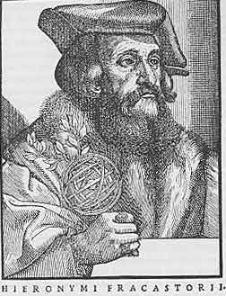
第12章図１ Girolamo Fracastoro, 1478-1553 フラカストロ
アルプスの北でも古代世界の教えの見直しが進行した。古典著者に非常な興味が持たれるようになり彼らの著作は優れた版で刊行された。
スイス・アインジーデルンの聖母マリア修道院の近くに深い谷と松林をシール川が流れている所に１人の医師が開業していた。彼の名前はウィルヘルム・ボムバート・フォン・ホーエンハイムでシュバーベン（ドイツ南西部）の家系であった。彼はスイスの少女と結婚した。この地区は気に入っていたし医業に適していた。彼の家を過ぎて巡礼路があり聖ゴットハルトを越えてシュヴィーツを北に行くと有名なベネディクト派修道院があった。毎年、数千人の信者がアインジーデルンの黒い聖母寺院に参拝に来て少なくない数の信者は辛い旅の後でこの医師の診療を受けることが必要となった。ホーエンハイムが結婚した２年後に息子が生まれた。これは1493年のことでコロンブスが新世界への最初の航海から戻ってきた年であった。少年の名前はフィリップ・テオフラストゥスでありラテン化したフルネームはフィリップス・アウレオルス・テオフラストゥス・ボバストゥス・フォン・ホーエンハイムであった。何故「テオフラストゥス」か？ この名前がカレンダーにでもあったのだろうか？ 否、テオフラストスはアリストテレスの後継者で逍遥学派の第２代学頭であった。彼は植物誌の著者であってこの本はこれより約10年前に印刷されていた。
アインジーデルンの森の中でこの若者は絹を着ることなく婉曲ではなく簡潔なこの地方の方言を話す人たちの間で育った。父親は少年を往診に連れて行って絶えず自然に触れることができるようにした。父親は少年に植物とそれらの素晴らしい治療効果を教えた。少年は近くの森からアルプスの全容を見ることができた。特にフェーン（＊吹き下ろす乾熱風）が吹いて暖かいときにアルプスは身近に見られ驚くべき山々であり不思議に魅惑的であった。彼は山々を見ると身震いをした。ちょうど教会で香の煙が立ちこめ聖別式の鈴が鳴っているときと同じように。
田園が雪で覆われている長い冬の夕べに父親は書斎から本を取り出して少年に読書の秘密を教えたに違いない。
我々の経歴で重要なのは年少時の影響であることを最新の心理学研究が示している。したがって少年時代の環境を知ることによってテオフラストゥスの心理的特性を理解することができる。
10歳のときに父親はアインジーデルンからカリンティア（＊オーストリア南部）に移りフィラッハで開業した。母親は死亡し父親と息子が遺された。なぜ父親がフィラッハに惹き付けられたか想像できる。近くに鉱山があり採鉱学校があり慣習に従って父親はここで教えた。ここにはまたフューガー伯爵の製錬所があった。新しい世界、新しい自然が若いテオフラストゥスに開かれた。彼は技術を学ぶ機会を持った。元素が引き合ったり反発したりし新しい物質を作るのを見た。化学分析の初歩を学びその重要性を認識した。
年は過ぎ若者は医学を本格的に学ぶために大学へ行く時となった。どこに行くか？ プラハか？ ウィーンか？ 否、イタリアに行くことになった。ここでは新しい科学を最高の状態で学ぶことができた。
このようにしてホーエンハイムはフェラーラに到着した。先生はごま塩頭の人文主義者レオニチェノでヒポクラテスの「箴言集」を優雅なラテン語に訳し古典著者を批判的に読んだ最初の１人でありプリニウスその他の著作に数多くの誤りを見つけていた。彼はまたフラカストロより数十年前に新しい「愛の疫病」（梅毒）を記載した最初の１人であった。
ホーエンハイムは当時の学生たちの方法、すなわちフラカストロが学んだと同じ方法で学んだ。彼は博士の学位を得て人文学者の流行に従って名前をパラケルススとラテン語化した。彼は他の人たちと同じように人文主義者になり古典著者たちの著作を編集しラテン語の詩を書くのだろうか？ 彼は平和な研究経歴に反抗するものを持っていた。注意深く刈り込んだイチイの生け垣のフェラーラの庭を歩くと生まれ故郷の森が想像の眼の前に立ち上がった。この庭は作られた芸術であり彼が住んで親しみを感じていたのは自然であった。教授たちの学説も同じように高度に人工的ではないか？ ガレノスによる四体液の学説や質の学説は論理的で疑問が無く理性的な人たちはすぐに理解することができる。しかし自然と調和している人による試験に耐えることができるであろうか？ これらの学説は偉大な権威者への魅力によって保たれている。しかし彼らの教えが経験と矛盾したら権威者はどうなるのだろう？ パラケルススはすでに自分の経験を持っていた。彼は幼稚園から大学に来たのではなかった。自然と接触して成長し観察方法を習い幼い子供のときから病気と接触してきた。一緒に働いた鉱夫や分析者は本が頼りの無味乾燥な教授たちよりも自然に近く自然の秘密を学んでいたのでは無いか？
この若い医師の中で発酵が起きた。ちょうど同じ頃アウグスティヌス派修道士（＊ルター）の中で発酵が起き権威者の誤謬絶無を同じように疑い良心に従って真理の勝利を助けるために世界を相手にして戦う武装をしていた。
風通しが悪い教室から自由な空気に出て自然へ戻ろう！ 真の芸術があった。何も見つからないかも知れないが熱心に探さなければならない。暖炉のそばに座っていては地理上の発見者にならないことを知って巡礼の杖を手に持った。「多くの病気を知るためには旅に出なければならない。遠くに旅すれば多くの経験を得て多くの知識を得るであろう。」旅行によってこの若者は病気を習うだけでなく治療法も習った。百姓、老婦、手作業者、床屋および床屋―外科医――これらの人たちはしばしば知る価値のある知識を持っていた。しかし大学の教授たちはこのことを何も知らなかった。
パラケルススは世界発見の航海に出発し時には短い中断を伴ってはいたが死ぬまで全西ヨーロッパの旅を続けた。鉱山地域を訪ね治療効果のある鉱泉を研究し長期にわたる化学実験を行った。彼は医師として臨床を続け出来るかぎり患者を助け治した。彼は医師の聖職帽を投げ捨て縁が垂れたふつうの帽子をかぶった。弟子たちは彼と運命を共にし程度が低い徒弟で満足していた。場所から場所に動いたのは雑多な仲間であった。
旅をしながらこれまでの医術が誤った路線にあることがますます明らかになった。その理論は誤っており治療方法は誤っていた。自己の観察および考えの記録を保存し始めた。考えたことを自分の母国語のドイツ語で書いた。ドイツ語を使うのは流暢でなかったし明白な表現が困難であった。言葉に多くの概念が不足していた。多くの術語は見つけるのが困難だった。しかし新しい言葉を作って次第に流暢になってきた。彼はとくに痛風に興味を持っていた。また病気および健康生活についての１冊の小さな本を書きパラミルムという不可解なタイトルをつけた。これは単なるスケッチで多くの点が未熟で将来の大作の草案であった。
５つの領域すなわち５つの「
これらの４つの領域を支配する実体として第５の「神の実体」がある。これは治癒に関係する。これによって人は不整から整に戻る。医師の役割はこの路を導くことにあり人を整の領域における彼の場所に戻すことにある。
パラミルムは断片であり入門であった。治療学の実地についての詳細な仕事はこれに続いた。しかしスケッチではあるがパラケルススの考えの力強さを示している。何故かと言うとこれは医学人類学を創る大胆な試みであり落胆せずにすべての臨床家が出会う基本問題を解決する試みだったからである。最初からパラケルススは自己の路を求めていたことを我々は知りこの路がどこに向かっているかを知る。
30歳でパラケルススは１人前になった。多くを見て学んでいた。フィラッハに父を訪ねザルツブルクに行きしばらく留まった。修行の旅はお終いだったろうか？ 農民戦争（1524-26）が始まらなければそうだったかも知れない。このような擾乱のときに静かな医業は考えられずパラケルススは再びシュヴァルツヴァルト、フライブルク、シュトラスブルク（ストラスブール）に向かった。彼は旅に疲れ身を固め診療をしながら研究を続けて経験を積むことを希望した。そこで実験室と助手を持ち著書を印刷するような場所を求めた。それまでに多数の本を書いていたからである。の彼は母国の植物、鉱物、治療泉など天然の宝を研究した。近くに貴重なものがあるのに高い金をかけて多くのばあい混ぜ物がある外国の薬を買う必要があるのだろうか？ シュトラスブルクには活気ある知的生活があり印刷術（＊グーテンベルク発明）で有名であり有名な外科医学校があるので落ち着くのに理想的な場所であった。1526年12月５日に彼はシュトラスブルクの市民になった。
ここでも長続きはしなかった。ライン川上流の100マイル以内のバーゼルで有名な印刷業者フロベニウスが病気にかかっていた。５年前の事故によって右足に激痛があった。医師たちは壊疽を恐れ切断を勧めた。しかしその頃シュトラスブルクに来た放浪医師の噂がバーゼルに達した。フロベニウスはこの恐ろしい切断手術を受ける前にパラケルススの診察を希望した。パラケルススはバーゼルに来て治療を引き受けメスを使ってこの患者を治しフロベニウスは間もなく良くなってフランクフルトに馬で往復できるようになった。
フロベニウスは著名な人だったので当然なこととしてこの治癒は注目された。フロベニウスの家にはロッテルダムのエラスムスが住んでいた。彼も病気になりパラケルススの診療を受け、これにより彼はバーゼルでますます有名になった。この頃に市医師が空席になったので市委員会が彼を任命したのは自然のことであった。これに伴って彼は大学で講義をする権利を得た。
本当だろうか？ 彼は遂に落ち着くのだろうか？ さらに、彼は大学の教授になるのだろうか？ 豊富なアイディアを持つ彼の考えを述べることが可能になる。多くの弟子を持つことができるし若い人たちを真の医師にすることができる。疑いもなく教授会は――さあ、教授会が不満を持っても問題があるだろうか？
彼は招聘を受け入れ1527年の春にバーゼルに移った。長いあいだ夢にみていた医学改革を始めるときが来た。彼は計画をスケッチして小冊子にし広く配布した。これは革命的な響きを持っていた。「医術は退廃している」と彼は言った。「しかし最悪の誤りから医術を解放しよう。古い教えに従うことによるのではなく自分で自然を観察することにより広範な実施と長い経験で確認することによって解放しよう。現在の大部分の医師たちが酷い間違いを起こして患者に害を及ぼしていることを知らない者がいるだろうか？ これは医師たちがヒポクラテス、ガレノス、アヴィケンナ、その他の教えにあまりにも熱心に従っているからであることを知らない者がいるだろうか？」医師が知るべきことは自然およびその秘密についての深い知識である。「絶えず努力して自分で書いた本を使って毎日２時間にわたって臨床および基礎医学、内科学、外科学を聴衆に判るように熱心に公表して説明する。他の著者のようにヒポクラテスやガレノスから抜粋してこの本を書いたのではなく絶えず努力してすべての物の最高の教師である経験を基礎として新しく創造した本である。何か証明したいときに私は権威者を引用するのではなく実験とそれについての考察によって行う。読者たちよ、貴方がたのうちの誰かがこれらの神聖な秘密に入り込みたいと思い短時間に医学の深さを理解したいと思ったら、バーゼルの私の所に来なさい。言葉を使う以上に多くの物を見出すであろう。もっと簡単に言うと例えばすべての病気に関連すると誤って考えられてきた質（熱、冷、乾、湿）や四体液の古い学説を私は信じない。これらの学説は普及していて、病気の正確な知識、その原因、その危篤の日々を、医師たちは知らないからである。従ってテオフラストゥス（＝パラケルスス）から直接に聴くまでは彼について簡単に判断をすることを禁じる。ご機嫌よう、医学改革の試みを学ぶために来なさい。バーゼル、６月５日、1527」。
宣戦布告であった。教授会は肝を潰した。新しい市医師への任命の相談も無かった。さらにパラケルススはその問題を公然と無視した。普通の手続きや登録することや免状を提出することやこのような場合に予告する討論を行わなかった。反撃は急速に行われた。教授会はパラケルススが講堂を使うのを禁じ町で診療をするのさえ禁じようとした。戦いが始まった。パラケルススは自分をバーゼルに招聘した市委員会に申し込み講堂使用の権利を主張した。彼は大学の一員となることもバーゼルの医学部教授会の正式の構成員になることも要求したことはなかった。
教授会はますます憤って慣習によって正当化された形式を無視し前例が無い学説を教え教授会構成員を白痴同然とみなしている改革者の行為を監視した。彼らは地位を守ろうとするなら全力をあげて彼と争わなければならなかった。
パラケルススは教授会から何も期待していなかった。しかし若い人たちについてはどうだろうか？ 彼らの将来のために彼は生きて働いてきた。彼らは彼の味方であろうか。否、彼らも同様に彼との関係を絶った。ある朝、幾つもの教会や新しい証券取引所のドアにパラケルススについての卑俗な諷刺詩のコピーが掲げられた。明らかに学生が書いたものであった。この毒矢は彼を髄まで傷つけた。パトロンのフロベニウスは死んでいた。彼の味方としては市委員会しかなかった。委員会に保護を要求した。自分の学生からの保護であった。学生たちを１人ずつ詰問して無礼者は見つかった。改革者としては不思議なことであった。若い弟子たちが従うことによって聳え立ったのに町の小役人によって同じ若い弟子たちから保護されるとは。
さらにこの危機にあたってパラケルススは礼金についての些細な問題で市委員会と争った。彼は教会の高位聖職者を治癒させてかなりの額を請求した。貧乏人が無料で治療を受け得るように金持ちは過分に払うべきであると考えていたからであった。聖職者は払うのを拒否し裁判になった。判決はパラケルススに不利であった。彼は怒って総ての人を色々なことで罵り町には１人も友人がいなくなった。医学部教授会は喜び学生は問題を面白がりすべては彼に対立した。
アルザスに戻りしばらくの間コルマールに留まった。バーゼルで行った講義のノートを本にする必要があった。自分の見解を書きバーゼルにおける敗北を弁明し教えの核心を公表することを熱望した。
このことは「パラグラヌム」で果たされた。「私が書く基礎をここに公表する。この基礎が無いと医師は１人前にならない。」パラケルススは自分が世界と対立していることを今や知った。挑戦的な言葉を使った。「私の歩みに従いなさい。私は貴方がたには従わない。イヌが来て脚を上げて貴方がたを汚すことが出来ないような引っ込んだ隅を貴方がたの誰も見つけることはできないだろう。私は君主となり王国は私のものであり私は王国を支配して貴方がたの腰を縛るだろう。カコフラストゥス（＊テオフラストゥスのテオ＝神をカコ＝悪にした新語？）をどう思うか？ 貴方がたはゴミを食べなければならないことになるだろう。」
この本は医術を支えている４本の柱について述べている。第１の柱は哲学である。しかしこの柱は中世のスコラ学ではなく自然の知識である。病気は自然の結果であり治療も同様である。このことについて自然より優れた教師がいるであろうか？‥‥医師は自然の所産であるので自然は哲学以外のものであり得るだろうか？ 哲学は見えない自然以外のものであろうか？
第２の柱は天文学である。天の人間にたいする態度は息子にたいする父親と同じである。天は我々に作用する。したがって宇宙との関係を認識しないで人間を理解することはできない。
医学の第３の柱は化学である。この目的は卑金属を金や銀に転換することではなく有効な薬を提供して生物過程に光を与えることである。自然は理想的な化学者である。自然に従わない化学者は仕事を知らない下手な料理人と同じである。
これまでと違って治療において化学を重視したのがパラケルススの最大の特徴である。彼は硫黄、鉛、アンチモン、水銀、鉄、銅を色々の組み合わせで使うことを教えた。彼は多数の植物をあいまいに混ぜる多剤投与法には強く反対した。彼は患者に毒物を与えると非難されたが、「すべてのものは毒物である。毒性を持たないものはない。あるものを毒物にするのは量である」と答えた。必須な薬は活性成分であってこれは原材料から抽出しなければならない。「私は霊薬で無いものから霊薬を分離し適当な量の霊薬を投与する。」特異的で目的に応じた治療が治療方法として理想であった。
パラケルススが無機および有機の自然における過程を理解できたのは化学についての知識を持っていたからである。彼は至る所に３つの元素を見出した。すなわち可燃性のもの（硫黄）、揮発性のもの（水銀）、燃えないで灰になるもの（塩）、であった。生きていないものを生きているものに転換するのは彼が「アルケウス」と名付けた特別な力であった。
医学の４番目の柱は「徳」であった。愛は医術の基礎である。真面目で神を恐れ非利己的な人間だけが良い医師になることができる。
自分の使命が正しいという信念を持っているので彼は書いた。「私が書いたものを軽蔑したり遠ざけてはいけない。私が孤立していて書くことが新しく私がドイツ人であるからと言って」と。口で教える機会を禁じられたので彼は書いて教えることにした。
しかし誰も彼の本を印刷しようとしなかった。反対の陰謀があるに違いないと彼は考えた。ニュルンベルクの市委員会の構成員は他の市にくらべて寛大で彼の本を印刷することが判った。1529年に梅毒についての２冊が印刷された。しかしライプツィッヒの医学部はこれに反対しニュールンベルクでこれ以上を印刷することができなかった。
彼は旅行を続けたがもはや遠くまでは行かなかった。少年時代を過ごした付近に惹き付けられていた。1531年にサンガル（スイス北部）にいて人文学者ヴァディアンと近づきになった。町は宗教改革によって動乱状態であってパラケルススの医学改革には興味を持たなかった。
さらにこの情勢においてパラケルススは宗教的な危機にたったがこれについての情報はほとんど無い。アッペンツェル州にいるあいだに彼は神学の本を何冊か書いたがこれについてほとんど何も知られていない。彼は医学の理論と実践を見限ったのだろうか？ 闘争を諦めたのだろうか？
そうではない。1535年にイン渓谷（スイス南部）で疫病が蔓延したときに彼の中で医師が目覚めた。シュテルツィンク（イタリア南部のヴィピテーノ）の町のためにこの病気についての本を書いた。同時に外科書も書いた。再び優れた７冊の著書を書いて彼自身およびその学説を正当化した。
1538年にヒルシュフォーゲルが書いた肖像画は４５歳以下のときのものであるが、あたかも苦しみ抜いている老人の肖像のようである。しかし厚い壁に立ち向かう強いアラマン族（西ゲルマン）の頭骨に我々は気がつき世界に挑戦する鍛え抜かれた男の特徴に気がつく。
自然科学のパトロンであったバイエルンのエルネスト公爵がパラケルススをザルツブルグに招聘したときに彼はオーストリア南部のカリンティアにいた。招聘に応じたが1541年12月24日に彼は疲れ切って死去した。
パラケルススが死去したときに15歳年長のフラカストロはヴェロナに近い立派なカントリーハウスで立派な友達に囲まれて生きていた。秋でイチジクが熟しブドウ酒の仕込みが始まった頃であった。アルプスの花崗岩塊で永久に分けられた２つの世界！ フラカストロの家は南にあり暖かい空気と明るい日光が景色に楽しい色を与えていた。パラケルススの運命は過ぎ去り彼の生涯は寒い霧深いが生き生きとした北で終わりとなった。
北ヨーロッパはパラケルススとともに医学の舞台に現れた。登場は荒々しく激しくファウスト的な激しさを伴って完成に向かうのを特徴とした。フラカストロは著述をし賛美された。パラケルススは著述をして嘲笑された。フラカストロは特定の医学問題で価値ある貢献をした。フラカストロはその時代において医学を進歩させ肥料を与えたが影響は一時的なものであって今日では全く死者のうちに数えられている。パラケルススはすべての時にわたり医師たることに必須なものとなっている。彼は学派を創らなかった。彼が発見したものを医学学説の全体像の中に入れることは困難だった。しかし彼の仕事は西欧医学の転換点に始まり今日でも生きている。
パラケルススの考え方は完全にドイツ式でありドイツ人以外には完全に理解することができないであろう。ドイツの医師が医学について熟考するときにパラケルススを無視することはできずパラケルススを指導者とみなしている。
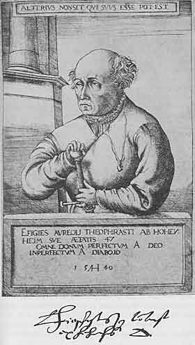
第13章図１ Paracelsus, 1493-1541 パラケルスス（１５４０）
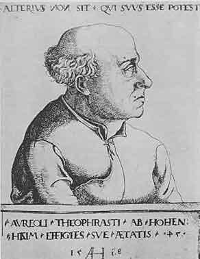
第13章図２ Paracelsus, 1493-1541 パラケルスス（１５３８）
世界の発見は続いた。人体の美しさが改めて注目されるようになった。美しさに罪はまったくない。男性の身体と女性の身体は創造主の最も完全な成果であった。人体研究の糸口を開いたのは科学者ではなく芸術家であって裸体を用いることによって人体をより美しく描くことができたと思われる。裸像のすばらしい代表として古典時代の立像を研究した。彼らはまた自然を研究した。実生活におけるプラスティーク（ゆっくりした運動）を把握することによって皮膚の下の筋肉の運動を追求した。肩に丸みをつけるデルタ型の筋肉はどんな種類であろうか？ 鋸の歯のように胸を後ろから締め付けている筋肉は何だろうか？ 科学的好奇心は科学者だけでなく芸術家に目覚めた。ルネッサンスの芸術家たちは外形の研究だけでは満足せず死体に近づき皮膚を取り除いて種々の筋肉を露出させて見たり触ったりできるようにした。
このような芸術解剖学者の指導者はレオナルド・ダ・ヴィンチであった。様々なと言うよりむしろ万能の興味を持つ人であった。芸術家であり科学者であり職人であった。謎のような魅惑的な微笑を持つモナリザを後世に遺した絵描きであり翌日は技術者として運河を計画する技術者でありその翌日には新しい大砲を設計した。彼は同様に革新者として伝統的な科学に反対しラテン語ではなく毎日の言葉で書いた。彼にとって知識の重要性は測定にあった。数学は認識の焦点であり比例は媒体であった。彼は自然全体すなわち完全な形態の領域を研究して経験と理性を道具として決定論を推測した。
彼の興味の中心は人間であった。人の構造と機能について人の活動を制御する法則について可能なかぎりすべてを学ぼうとした。彼は数多くの人体を解剖した。ナイフとクレヨンで生体の秘密に入り込んだ。何百枚の紙はスケッチと注釈で埋められた。誕生の時からの人体を記載する膨大な解剖学研究を友人の解剖学者マルカントニオと一緒に計画した。不幸にして完成せず印刷まで至らなかった。親しい人たちのサークルだけがこれらの研究を知っていた。原稿とスケッチは無知な人々の手に落ちてばらばらになり破損されこの成果は科学のものにならなかった。ダヴィンチの仕事が断片に留まることは避けられないことであった。ダヴィンチの目的は全宇宙の知識を手に入れ伝えることだったからである。
それではルネッサンスの医師たちはどうであったろう？ 彼らは同じ仕事を行っていた。彼らは魔神に取り憑かれたように解剖学の研究に熱中した。死体解剖は14世紀の初めにボローニャを出発して他の地域にまで広がった。解剖教示の日は大学暦に赤字で書かれた。当局は処刑された罪人の死体を大学当局に任せた。医師や学生は招待された。教授は教卓に座り解剖学教科書を声高に読んだ。その間に外科医は解剖を行い説明者は木製棒で言及された部分を次々と指し示した。すべての聴衆は人体が古代から大きく変化したに違いないと思っていた。古代の学者が間違いを犯すとは誰も考えなかったからであった。
ルネッサンスが盛んになると死体は手に入りやすくなった。多くの大学では解剖が１年に１体には限られなくなった。教授は教卓を離れて自分でメスやピンセットを使いこなすようになった。一生に数百体の解剖を行ったと自慢する医師たちも現れた。彼らは自分で見たもの、または見たと思うものについて記載した。彼らすべてはガレノスの眼鏡を通して見ていたからであり各人はガレノスの解剖書の改訂版を持っていた。
ヴェネツィアのジュンティ書店はガレノスのラテン語訳著書の記念碑的な発行を計画していた。このために一群の人文学者たちが集められた。誰が解剖学書を扱うことになるだろうか？ 近くのパドヴァでは２年前に解剖学および外科学の若い教授が任命されその著書の１つは広く注目されていた。彼は６枚の全ページ大の図がある解剖アトラスを1538年に出版した。このうちの３枚はティツィアーノの弟子でオランダ出身のカルカーが実物標本から描いた骨格図であり残りの３枚は教授自身が解剖した脈管系の図であった。これらの図に詳細な説明がつけられていた。これらは今までのどの本よりも優れていたので売れに売れた。
医学の他の領域においてもこの若い解剖学者はすでに著者として有名であった。数年前に彼はラージーの「アルマンスルの書」の第９書を立派なラテン語に訳していた。続いてパリの教授アンデルナッハの解剖書の新版を出して自分の解剖図集の教科書とした。その後には静脈切開についての書簡で臨床における解剖学の重要性を明白に証明した。さらにこの中で奇静脈（右縦胸静脈）についての優れた記載を行った。これは多くの点でガレノスの記載とは異なっていた。彼は批判的な知性を持っていてジュンティ書店が必要とする学者であることは疑いもなかった。したがって彼にこの仕事が任せられた。
パドヴァの若い教授はブリュッセル出身のヴェサリウスであった。どのようにして彼はイタリアに来たのだろうか？ 宮廷薬剤師の息子で1514-1515年の新年の夜に生まれた。家族はヴェーゼル（ドイツのライン川沿い）から移住していたので地名をラテン語の形容詞にしてヴェサリウスと呼ばれるようになった。彼は小さな子供のときから自然とくに解剖学にたいして抑えることができない興味を持っていた。どのような動物も安全ではなかった。イヌやネコ、マウス、ラット、モグラなど捕まえることができる動物は綿密に解剖された。
ルヴェン（＊ベルギー中部）の学校に行き次いで医学の勉強にパリに送られた。この有名な大学ではすでに人体解剖学を学ぶことができたがヴェサリウスは激しく失望させられた。１人の教師デュボア（＊ラテン名、シルヴィウス。同名のライデンの内科医と区別するために解剖学者のシルヴィウスとも呼ばれる）はイヌの臓器を見せてガレノスの教科書を読みもっとも重要な部分を省略することで満足していた。他の教授は前に述べたアンデルナッハで古典文献の博識な学者で「毎日あまりに大量の飜訳をするので書記は口述を書き写すことが出来ず」、口述した内容を読む時間が無かったほどであった。彼はガレノスの主要な解剖学書をギリシア語からラテン語に訳した最初の学者であった。しかし食卓以外でナイフを使っているのをヴェサリウスは見たことがなかった。
熱心な若い解剖学者の出来ることは動物の解剖だけであり時々は墓場または処刑場に行って骨を探し研究を重ねて遂には目を閉じてもこれらを鑑定することができるようになった。パリにおいても他の大学と同じように時には人体解剖が行われた。ヴェサリウスは通知に熱心に注目した。これらの解剖の３回目に教授は彼に仕事を割り当てた。遂に機会が到来した。始めてメスを手にして人体の横に立った。彼は成功し次の機会にも解剖者となるように依頼された。
戦争が始まってヴェサリウスはパリを離れなければならなかった。彼はルヴェンおよびブリュッセルで勉強を続け解剖の機会をしばしば得ることができた。危険を冒して絞首台から完全な骨格を盗むことによって他の点でも野心を満足させることができた。次は何だろうか？ 新しい科学の地イタリアが誘惑した。彼はアルプスを越えてヴェネツィアに達し同国者カルカーに出会い２人は一緒にパドヴァに行った。1537年12月５日に彼はパドヴァの大学から博士の学位を得た。翌日にはまだ23歳であるにもかかわらず外科学および解剖学の教授に任ぜられた。
今やヴェサリウスの絶え間ない活動が始まった。あたかも寿命の短いことを知っていたと思われるほど激しい活動であった。前に述べた解剖図集は教授に任命されて数月で刊行された。
続いてガレノスによる解剖学著作を編集する作業が行われた。ヴェサリウスはこれらを読み異なる版を比較し異本の合注版を研究して理解すべく努力した。明らかに正しくない言明が多かった。下顎は２部分からなると書かれていた。胸骨は７個の異なる骨からなっていた。肝臓には幾つもの分葉があった。しかし、ヴェサリウスは解剖でこのようなことは見なかった。ガレノスは大きな誤りを犯していたのだろうか？ これらは誤りだろうか？ 多分、ガレノスが記載していたのは人体解剖ではなく下等動物の解剖ではなかったろうか。これで説明がつく！ ガレノスの解剖の本はサル、ブタ、ヤギの解剖についてであった。ヴェサリウスはこのことを以前に気付かなかったことに腹を立てた！
これについての事実を知ることによって解放感が生まれた。伝統の束縛が取り除かれた。ガレノスは人体を解剖したことが無かったのだ。これまで考えられてきたように絶対的な権威者ではなかった。医師は人間の構造を知らなければならない。この主題について現存する本は信頼できないのでヴェサリウスは発見の航海に出発し自分で人間の解剖についての権威ある本を書かなければならなかった。
この自己に課した仕事に熱狂的なエネルギーをもって彼は取り組み画家としてカルカーに手伝ったもらった。1542年の８月１日までに解剖の大作「人体の組立についての７冊の本」（＊略称ファブリカ）の原稿を書き上げた。このとき彼は27歳であった。
次が刊行の問題であった。ヴェサリウスはこの本の歴史的重要性をよく知っていて植字に大きく配慮した。ヴェネツィアは印刷の中心地として有名ではあったが彼はヨーロッパの中心であるバーゼルのオポーリン書店で刊行することを好んだ。図の版木をロバの背にのせてアルプスを越えた。ヴェサリウスは一緒に旅をした。彼は印刷を詳細に見たかったからであった。バーゼル大学の教授たちは彼を歓迎した。このスイスの大学で彼は１体の解剖を行いこの骨格は記念品として解剖学研究室に今でも保存されている。
コペルニクスが宇宙の新しい概念を同時代人に示した1543年の６月にヴェサリウスの偉大な書物が刊行された。これはフォリオ（＊全紙２つ折り）663ページで300以上の図からなっていた。同時に抜粋が学生教育用に刊行された。これはラテン語だけでなくバーゼル大学学部長のトリヌスによってドイツ語にも飜訳された。
ヴェサリウスは今や28歳になり生涯の頂点に達していた。彼はこれから21年は生きていたが実際のところ仕事は終わっていた。イタリアに戻ると同僚は嫉妬と嫌悪で彼を取り扱い彼は同僚と争った。したがって彼は父親と同じように神聖ローマ皇帝でスペイン王のカルル５世および続いて息子スペイン王フェリペ２世の主治医として宮廷に入った。彼は種々の計画をたて次々とペンを取り彼の大作の第２版の準備をした。しかし彼は遺憾な論争に巻き込まれた。ガレノスの擁護者たちは改革者ヴェサリウスに悪口を浴びせかけた。一部はパドヴァからのものであった。このように広大な新しい領域を開くときに所々で誤りを犯さないで済むとは考えられないにもかかわらず誤りをしたとして非難された。できるだけ抗弁したが彼の解剖室は皇帝の宮廷内にあった。このような条件では事実を証拠として充分に有効に答弁することができるだろうか？
したがって1564年のある日にうっとうしい不安の犠牲になって宮廷を離れてまたもやアルプスを越え再びヴェネツィアに来た。この
このように冒険的な巡礼を偉大な解剖学者にさせたのは何だったろうか？ いろいろの噂がある。ある話によると死んだと思われていた女性を解剖したら恐ろしいことに心臓がまだ動いていたとのことであった。彼は宗教裁判にかけられ皇帝も助けられなかったと言われる。他の人によると彼はホームシックになり宮廷が面倒になり健康回復のためにエルサレムに願を掛けに行ったとのことであった。さらに他の人によると彼は休暇でキプロス島に遊びに行ったと言われている。帰りに発病してパドヴァに召喚される直前に死亡したとのことであった。
このことについてのゴシップは長期間にわたって続いた。しかし真理を知ることはできない。ヴェサリウスは秘密を墓内に持ち込んでしまった。
ヴェサリウスは死んだ。しかし彼の「ファブリカ」は人体解剖学について歴史で知られている最初の完全な教科書として記念碑として残った。このようにして1543年は解剖学の歴史だけでなく医学の歴史において同じように重要となった。ガレノスの権威はヴェサリウスによるありのままの事実の説明によってパラケルススの猛襲による以上に強い説得力をもって論破された。ヴェサリウスは破壊者では満足しなかった。創造者でもあった。彼が予期した以上に解剖学は医学の基礎になった。いやそれ以上でありヨーロッパにおける医術の「思考形態」の１つになった。解剖学の考えがこの後にすべての医科学の発展において赤い糸のように走ることを次々と学ぶことになるであろう。
フラカストロ、パラケルスス、ヴェサリウスの３人はイタリアの大学を経由した。３人とも同じように当時の人文主義文化の産物であった。しかし彼らは互いに何と違うだろうか！ フラカストロとパラケルススの２人はルネッサンス博識家で、そのうち１人のフラカストロは楽しくおおらかであったが、もう１人パラケルススはファウストと同じ悩み多き精神を持っていた。ヴェサリウスはパラケルススと同じようにアルプスより北の寒い地域の出身者であってヨーロッパ北部の荒々しい活力を持っていた。５年間に他の人の長い一生に相当する充分な研究を行った。彼はすべての知識を自分の領域とはしなかったし広大な医学領域全体には貢献しようとしなかった。自分のエネルギーを１つのトピックすなわち基本的な重要性を認識していたトピックである解剖学に集中した。医学の歴史において「専門化」と言うには尚早であるだろうがヴェサリウスの例において医学発展の将来の方向を我々は予見し始める。
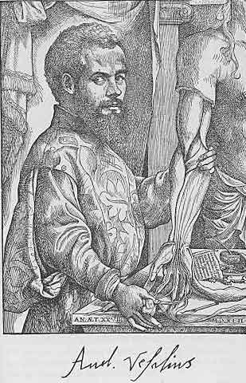
第14章図１ Vesalius, 1514-1564 ヴェサリウス
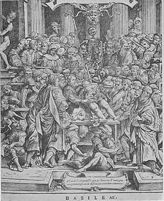
第14章図２ Vesalius giving a demonstration of Anatomy 人体解剖の教示
1536年にフランス王フランソワ１世と皇帝カルル５世のあいだの３回目の戦争があった。ヴェサリウスがパリを離れたのはこのためであった。パラケルススはアウクスブルクの近くに住んでいて傷薬の完成に努力していた。フラカストロはそのころ天文学を研究していた。
今度もミラノの攻防が問題であって主としてイタリアで戦闘が行われた。フランス軍はアルプスを越えスーサを通ってトリノを攻撃した。通りがかりに皇帝軍が守っていたヴィレン要砦を急襲した。守備兵は死に物狂いの防衛を行い多くが戦死したり傷ついた。外科医は手が回らないほど忙しかった。患者から患者に回り傷に沸騰したニワトコ油を注いだ。このような治療を受けた可哀想な患者は苦悶の声をあげたが仕方が無かった。傷口は火薬の毒が入っているのでこのように焼灼しないと毒によって死ぬと考えられていた。これはローマ法王の主治医ヴィゴの学説によるものであった。
フランスの若い外科医パレにとってこの戦闘は最初であったがニワトコ油は使い切られた。どうしたら良いのだろうか？ 彼は卵黄、パラ油、テレピン油からなる軟膏を持っていた。これをリント布に塗って傷に栓をした。しかし彼の良心は休まなかった。彼は述べた。「昨晩は傷口を焼灼できなかった傷兵を絶えず考えてほとんど眠れなかった。翌朝はすべて死んでいる可能性を考えた。このように考えて私は早起きして回診した。驚いたことに軟膏で治療した人たちは殆ど痛みが無く炎症が無く腫脹が無く静かに夜を過ごしていた。ところが沸騰したニワトコ油で傷を処置した人たちは高熱を出し炎症が起き腫脹し激しく痛んだ。したがってその後には不幸な傷をこのように残酷な方法で焼灼しないことにした」と。
よく起こるように偶然は最重要な発見に導いた。すなわち銃創の傷に毒は無く通説は誤りであることを示した。しかしこの偶然な出来事と意義を把握し正しい結論に導きこの新しい知識が共有物になるまで擁護するにはいつものことであるが天才を必要とする。
イタリアでは13世紀に外科学が発達し隣のフランスに広がった。外科学は生命と密接な関係があり内科学のように理論的ではあり得なかった。実行によってのみ手術は学ばれる。縫合は傷口を保持する。そうでなければ失敗する。成功するか失敗するか。このことは議論ではない。スコラ学の最盛期にも有名な外科医がいたのはこのためであった。実際、古典医学やアラビア医学文献が広く行われるようになったことは彼らにもっとも有利であった。彼らはこの方法あの方法または他の方法を試して良い方法をすぐに採用した。伝統は実行によって変更され不毛なものではなく収穫が多いものになった。
大部分の傷は刃物によった時代の外科医にとって傷は一次治癒すなわち化膿しないで傷口の閉じるのが理想であった。しかし14世紀から15世紀になって火器が使われるようになると軍外科医たちに新しい任務が課せられるようになった。「小火器」と言っても当時の弾丸の直径は約１インチに及んでいた。これらの弾丸はひどい傷を負わせ多くが最初から感染していたことは疑いの余地が無かった。従って化膿は傷の治癒における正常の段階であり銃創は火薬の毒で汚染されているとする考えが次第に勢力を得てきた。化膿について今でも「歓迎すべき膿」（＊古代ギリシアから盛んに使われたが現在は死語）という言葉を聞くことがあるだろう。
しかしパレの発見が功を奏するには時間が必要であった。パレは学者ではなかった。外科医ではあったが著作者ではなかった。道具は柳葉刀（＊細身のメス）であってペンではなかった。彼はふつうの人間であって当時の大部分の外科医と同じように手職人（＊床屋）であり人文学者としての教養は無かった。1510年にメーヌ（フランス北西部）のラヴァル市の近くに生まれ、しばらくの間は床屋の徒弟であった。次いでパリに行きオテル・デュー病院の外科で数年のあいだ働いた。戦争が始まったときに彼は連隊付き外科医としてモントジャン元帥に従うのに適当な専門家であると認められた。科学の知識はかなりのものであった。ラテン語を学んだことがなかったので古代の著書を読むことはできなかった。しかし彼は外科手術に巧みであり良い観察者であり学ぶのに熱心であって老婆たちの処方を確かめ無名の外科医たちのご機嫌をとって彼らの秘術を学んだ。パラケルススと同じように大衆の治療知識を軽蔑しなかった。
この最初の戦闘において彼の能力は注目された。トリノの医師は彼の仕事を見てモントジャン元帥に言った。「閣下、貴方のところには若いけれど知識と経験に富んだ外科医がいます。大事になさい。彼は貴方に貢献し役に立つでしょう。」と。
1538年のニース講和の後でパレはパリに戻った。結婚し臨床に専念した。数年後に戦争は再び２つの君主国のあいだで戦争が始まりパレはフランス軍と一緒に進軍することを希望した。傷を処理する新しい方法の理論的な有効性すばらしい手術能力および重要な人物の傷を治したことによって彼は広く知られるようになった。同僚たちは彼の能力を認め外傷外科についての原理を記録に残すように頼んだ。
1544年のクレスピ講和の後にパレは再びパリにいた。彼の令名はデュボアの耳に入った。デュボアについてはヴェサリウスの先生の１人としてすでに述べた。彼はパレを夕食に招待した。２人は銃創について話した。パレはこの問題に熱中して経験を話し銃創には必ずしも毒が入ってはいないと信ずる理由を説明した。デュボアはこの客の知性が優れていることを認めてパレの同僚と同じようにヴィゴの有害な学説に対抗するためにこの経験の出版を勧めた。このような後援の下にパレの最初の著作が刊行された。銃創の治療についての小さな手引きであったが古典となっている。これは価値ある長いシリーズのモノグラフの最初のものである。
新しい解剖学を自己のものにしたのは他の領域ではなく外科学であった。パレは最初から解剖学の重要性を認めていた。従軍しているときでも可能なときには解剖を行っていた。彼は人体の左側を解剖し右側を手術の役に立つようにそのまま残して標本として持ち帰った。ブローニュ包囲のさいに戦陣外科を行った以外は1545年から1550年に主として解剖学の研究を行っていた。デュボアはパレを解剖従事者に任命した。デュボアはガレノスの教えが正しいとする信念を持っていてデュボアが死亡するまでパレは新しいヴェサリウスの解剖学を敢えて受け入れなかった。その後に何冊かの彼自身の解剖学書を出版した。新しい発見は無いがこれらの本はもっぱら実用的なもので体系的解剖学ではなく外科医が必要とする局所解剖学であったことを忘れてはならない。
1552年に戦争が再び始まった。この軍事行動はパレにとって最も重要であった。何故かというと手足切断には焼灼よりも血管結紮が止血に役立つことに気付いたからであった。血管結紮は決して新しいことではなく忘れられていた古い方法であったが有効なので改めて強調する必要があった。彼は王の主治医になっていて王の命令によって包囲された都市メス（フランス北東部）にその年に何とか入って傷ついた人々を助けることができた。翌年エスダンで捕虜になったときに多くの手術に成功したので身分を敵に知られずに釈放された。パリには新しい名誉が待っていた。1554年に彼はコレージュ・サン・コムの外科医長に任じられた。これはラテン語を知らない理髪師徒弟であったものにとって特例であった。
続く年々は戦争、王の旅行のお供、パリにおける臨床に費やされた。軍隊でパレの令名は高かった。アンリ２世の死去に続いてフランソワ２世、シャルル９世は彼を心から信頼した。彼は多くの本を書いた。何か重要な問題が起きると彼は自分の経験を書き記させられた。これらは純粋に医学や外科学のことであったが戦場に行くこともあったので教授会と軋轢を生ずることもあった。彼は1590年12月20日に80歳で死亡した。
パレはこれまで述べた医師たちとは大きく違うがやはりルネッサンス人であった。違うとは言っても新しい領域の発見者であり征服者であった。慣習には邪魔されずに健全な本能に従った。毎日の臨床で使った手術は新しいものではなく忘れられていたものであり彼の権威によって復活させたものであった。
彼は何よりも臨床家であったが著作にあたっては自分の主張に理論的な基礎を準備する必要を感じていた。彼はガレノスの医学的な考えに助けを求めた。ガレノスの著書とくに「治療の方法」はフランス語に訳されていた。彼はパラケルススやヴェサリウスのようにガレノスに反対するどころではなかった。単なる理髪師として訓練されたのにどうして偉大な学者に反対できるだろうか？ 何にもせよパレの研究の特徴は理論と実際が矛盾したら理論を見て見ぬふりをしたことであった。経験が主導して「理性」と「権威」は頭を下げるべきであり、もしもそれらが経験を確認するならば正しいと考えた。（＊「理性」と「権威」はスコラ学の基礎であった）
パレの考え方は次の逸話でみごとに示される。最初の従軍のときに台所下働きの男が沸き立つ油の大釜に落ちてひどい熱傷になった。パレは呼ばれ薬屋に行ってふつうの冷却剤を求めた。そこで彼は老婆に出会い細かく刻んで少量の塩を加えた生タマネギを使うのが良いと話かけられた。彼女はこの方法によって火ぶくれにならないでも済んだ経験を何度も持っているとのことであった。良い結果が得られるかもしれない方法を試すことにしていたのでパレは老婆の忠告に従ったところ満足すべき結果が得られた。彼はこの方向を試しつづけた。ドイツ軍の兵隊の１人が顔にひどい火傷をしていてパレは顔の半分を刻みタマネギで治療し他の半分にはふつうの治療を行った。この結果、最初の半分に火ぶくれはできず他の半分は火ぶくれで厚く覆われた。すぐ後でかなりの数の兵士が要塞の攻撃にさいして火薬の口火点火で火傷をした。パレはこの機会をとらえてこの治療法を再び試みた。半分の患者は刻み生タマネギで治療し他の半分の患者には他の方法を用い結果は前と同じであった。これらの実験結果によって生タマネギは火傷や熱傷に有効であることをパレは確信した。しかし理論はこれについてどう言っているだろうか？ ガレノスによるとタマネギは４度の熱であるので火傷や熱傷に禁忌のものであった。パレはガレノスが誤りであるとは敢えて言わなかった。しかし自分自身による観察の正確さを疑うことはなかった。これらは「理性と権威により」確かめる必要があるので理論は経験に適合しなければならないものであった。だれでも知っているようにガレノスについても聖書についても言うことができる。熱心に探すと自分が好きな文章が見つかるしもしも見つからなかったら希望に合うように文章を変えることができる。タマネギは潜在的すなわち比喩的には熱の効果を持つが実際的すなわち我々の感覚では湿であることをパレは見出した。この熱の性質は皮膚を薄くし湿の性質は構造をゆるくする。これによるとタマネギは火ぶくれを促進すると考えるべきである。しかし上に述べたタマネギの性質によって炎症体液が流れ出て消費され乾くことによって火ぶくれはできない、とパレは論じた。このことはガレノスの学説は拡張性を持っていてあまり厳密に解釈すべきではないことを示すものとされた。ここでパレは「理性により」の証明とした。「権威により」としてガレノス自身は必然的な権威を持っていた。何にせよ病気は「正反対の薬で治る」でなく「似たものは似たもので治る」数多くの例があることをガレノスは認めていた。例えばテリアカ（＊万能の抗毒剤）中の毒ヘビの肉は毒ヘビに噛まれたときの抗毒剤であった。
パレの堂々たる像は新しい外科学の創設において聳えている。フランスがこの領域において数世紀にわたって指導的な役割をはたしたのは主として彼に負っている。
パレを同時代人と区別させるもの、すなわち当時の有名な医学者の多くに比べて親しみを持たせる性格について述べなければならない。彼は著しく慎み深かった。この慎み深さは偏狭さで影響されない敬虔の結果であった。彼にとって医術の基本はパラケルススと同じように愛情でなければならなかった。金のために仕事をしてはいけない、希望が無いように見える例においても最後まで任務を果たすようにと若い外科医に繰り返して厳命した。「自然は外科医に不可能に見える例を与えることがあるから。」と。もしも外科医が治療に成功したら自慢してはいけない。幸福な結果は神の恵みと思わなければならない。彼の言葉で良く引用される「私は包帯し神が治した」はこの偉大なフランス外科医の名誉の称号であり彼の多くの貢献の上にヒューマニズム最高の雰囲気を加えたものである。
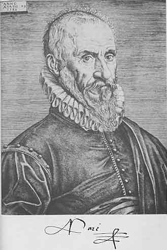
第15章図１ Ambroise Par
 , 1510-1590 パレ
, 1510-1590 パレ16世紀は終わり新しい世紀が始まった。知識人たちの世界についての考え方や個人と宇宙のあいだの関係に深い変化が起こった。ミケランジェロは芸術に新しい道を開いていた。ミケランジェロおよび彼に続く芸術家たちは世界をさまざまの動きにおいて考えた。もはや彼らは存在する物や起きてしまったことだけを描くのではなかった。人の眼を見つめるのではなく視線を見た。作品において境界線による限界を越え鋭い輪郭を消し去ってキアロスクーロ（明暗）によって表現した。彼らは我々の視線を深遠な無限の彼方に導いた。彫刻も建築も絵と同じように動的になった。柱はらせん形になった。石そのものすら生き生きとなった。
ガリレイは望遠鏡を作って空の深いところを調べた。彼は木星の衛星を発見した。銀河は無数の小さい星からなることが明らかになった。「すばる」は７つの星からなるのではなく３６の星からなることが判った。ガリレイは自動落下の法則を研究した。振り子の運動を研究した。地球の回転を研究した。物理学は動力学になった。
パドヴァに戻ろう。ヴェサリウスはしばらくここで教えた。彼が蒔いた種は良い果実を実らせた。彼の後継者の１人コロンボは血液が心臓から流れ出て肺に達し肺を通って心臓に戻ることを証明するのに成功した。しかしこのことはスペインの医師で神学者であったセルヴェトゥスによって予想されていた。セルヴェトゥスは1553年ジュネーヴにおいてカルヴァンによって生きながら火あぶりになった。コロンボに続いてファロッピオがパドヴァの解剖学教授となった。彼の名はファロッピオ管（卵管）に残っている。彼は1562年［＃「1562年」は底本では「1965年」］に死去し弟子のファブリツィオ（＊ラテン名はファブリキウス）はパドヴァを解剖学の研究において有名なものにした。彼は解剖学だけでなく外科学においても令名が高く自分の費用で解剖学研究室を設立して多数の弟子たちが集まり長い生涯のあいだに数多い発見をして解剖学の知識を豊かにした。そのうち重要なのは静脈に弁が存在することであった。（＊この他に免疫学で重要なファブリキウス嚢を発見）
ファブリツィオは1537年に生まれ1619年に死去した。世紀の変わり目における弟子のうちでもっとも勤勉であったのは若いイギリス人のハーヴィであった。ハーヴィがパドヴァに来たのは偶然ではなかった。彼はケンブリッジ大学のゴンヴィル学寮のキーズ（＊ラテン名はカイウス）のもとで学んだ。この学寮は現在はゴンヴィル・キーズ学寮または単にキーズ学寮と呼ばれている。キーズはパドヴァで学びヴェサリウスの弟子であった。したがってケンブリッジで学士（外科学）になるとすぐにハーヴィがパドヴァに移ったのは自然のことであった。彼は数年のあいだイタリアで過ごし1602年に医学博士となった。
イギリスに帰り彼はロンドンで開業し1609年に聖バーソロミュー病院の医師になった。
このときまでの彼の履歴に特別なことはない。彼の学歴は当時の多くの医師たちと同じであった。しかしルネッサンス後期のパドヴァは古代におけるアレキサンドリアと同じように学生たちに特別な影響を与えた。パドヴァの解剖学研究室で研究したものは後の生涯で解剖学に取り憑かれる傾向があった。ハーヴィも同様であった。彼はイギリスの首都で開業し大都市の最大の病院の１つで多くの付加的な業務を持っていた。しかし彼は解剖学の考えに取り憑かれていた。人体で彼が魅力を持ったのは何だろうか？ 16世紀の医師たちが強く感動させられたものではなかった。美しい釣り合いや形の調和ではなかった。これらの性質は横たわっている臓器の構造の研究を促すものであった。ハーヴィに作用した呪文すなわち新しい時代に入ったことを示す呪文は運動であった。彼の独創的研究の出発点は人間が生まれてから死ぬまで絶えず続く基本的運動すなわち脈拍と呼吸であった。
脈拍とは何か？ これは明らかに血液の運動である。さてこの運動の本質は何か？ ハーヴィの時代の科学は満足な答えを与えなかった。ガレノス学説はまだ勢力を持っていた。ガレノスによると食べた食物は肝臓で処理されて血液になり血液はここから体内に行き渡り血管によって不可思議な往復運動で運ばれ一部の血液は心臓右側に入りそこから左右の隔壁にある穴を通って心臓左側に入り体内をたどる。さらに肝臓、心臓、脳の血液は生体活動を調節するプネウマ（精気）を加えられるとガレノスは教えた。また血液は心臓から肺に流れ生体の残渣をそこで捨て去り空気は肺から心臓に送られて血液を充分に冷やし血液にプネウマを供給すると宣言した。
この理論は論理的で限定的で印象的であり多くのことを説明した。しかしルネッサンスにおける研究で多くの誤りが示された。まず隔壁には穴が無かった。従って血液はガレノスが書いた以外の経路を通らなければならなかった。この重要な点でこの学説はトランプの家のように崩壊しこれと置き換えるのに適当な学説は無かった。フラカストロが「心臓の運動は神のみが知っている」と言ったのは同時代の人々の意見を代表するものであった。他の問題すなわち形態学の問題はこれらの動力学的な問題よりも差し迫っていた。
しかしフラカストロの時代とは違ってきた。今や興味を持たれるのは機能であって構造ではなくなった。すでにファブリツィオは純粋に形態学的な問題で満足することを拒否し臓器の記載にあたって機能を常に問題にしてきた。それでも彼はあまりにも慣習の呪縛の下にあったのでアリストテレスやガレノスの権威を無視して行動することはできず彼らに従属していたので、自分の発見から論理的な結論を出すことができなかった。
血液の運動の問題はハーヴィを休ませなかった。科学の記録は彼の質問に答えることが出来なかったので彼は自然そのものに尋ねることにした。何年間も研究を続け多数の動物を解剖しもっと重要なことには80種類以上の動物を解剖した。彼は心臓の拍動を見たり触れたりした。段々と問題は彼の心の中で明らかになった。1615年に彼はロンドン医科大学の教授に任じられた。翌年に最初の講義を行った。この草稿は現存していて血液運動の謎を解いていたことが示されている。しかし彼が発見したことはこれまでの学説とまったく異なりあまりにも新しかったので出版することを彼は敢えて考えなかった。確かめるために繰り返す必要があった。彼は仕事を続けた。
その間に医師としての彼の令名は絶えず高まっていた。1618年に王ジェームズ１世の侍医となり王の死後に王チャールズ１世の侍医になった。年が経って1628年に彼は自分の学説が疑問の余地無く確立されたものと感じた。難解であって読むのが困難な手書き原稿がフランクフルトの出版社に送られ有名な論文「動物の心臓および血液の運動についての解剖学的研究」（＊エクセルキタティオと略称）の表題で出版された。
刊行によってハーヴィにたいする怒りの嵐が起きた。彼はどのように敢えて主張したのだろうか？
動物の露出させた心臓を掴むと心臓は引き締められて固くなることを感じる。心臓が引き締められるこの現象は
しばらく小休止をしてこの問題を考えよう。収縮期に心臓から送り出される血液の量は現在では当たり前の問題であるが始めてこの時に提案されたものである。答えを出すだけでなく質問するのが極めて革新的なことであった。古い生理学では常に問題は定性的に考えられ物差しや数を使って研究されることはなく時間の単位を考慮することはなかった。しかしよく言われているように「正しい質問はすでに回答への大きな１歩である。」
ハーヴィは収縮期に心臓から押し出される血液の量を２液量オンス（＊１液量オンスは28.4ミリリットル）とみなした。もしも心臓の拍動が毎分72とすると心臓は１時間に72×60×２＝8640液量オンスを押し出すことになる。これは成人の体重の３倍に相当する。こんなに大量の血液はどこから来るのだろうか？ 食べ物からか？ 絶えず新しく作られるのか？ この数値によると考えられない。8640液量オンスの新しい血液が毎時間に作られることは不可能である。血液はどこに行くのだろうか？ 組織に漏れ出すのだろうか？ これも同じようにあり得ない。組織は膨れあがりこのように大量の血液が流れ込むと破裂するだろうからである。それなら血液は動脈から出て心臓に戻る他に可能性はなく血液が心臓に戻る経路は静脈以外にはあり得ない。したがって次に示す必要があるのは静脈内の血液は常に心臓に向かっていることの証明である。駆血帯をして（＊原書には「手を握る」とあるがハーヴィの原著に従った）前腕の表面にある静脈の上に指を置いて注意深く眺めると遠心的に血液が流れないように静脈の弁が配列されていることが示される。
回路は完全に閉じた。血液の循環が発見された。血液は心臓の左側から動脈を通って体内のすべての部分に流れて（ハーヴィの考えでは）組織の間隙を経て静脈に入り静脈を通して心臓の右心房に達しここより右心室に入る。続いて血液は肺を流れ肺静脈を通って再び心臓この場合は左心房と左心室に戻る。（＊当時は心房を心耳と呼んでいた。ここでは現在の用語の心房を使った。）
ハーヴィは基本的な説明で満足していた。肺に取り込まれる空気の意義、体熱の起源、その他の問題は脇に置いた。これらの問題はさし当たって解決できないことを知っていたからであった。彼は循環と呼吸の完全ではっきりした生理学を確立しようとはしないで直接に観察して証明できることだけの記載で満足していた。ここに彼の偉大さがあり彼の見通しの本質的な新しさがある。
ハーヴィは解剖学者であった。彼は解剖学のモノグラフを書いた。しかし彼の手によって解剖学は新しい形をとった。「生きた解剖学」すなわち生理学になった。しかもそれまでにあったものとは非常に異なる生理学であった。
これ以来、生理学は解剖学と不可分に関連し解剖学的に可能であるときのみ生理学的説明が受け入れられるようになった。この後に研究者たちは実験を方法として用い生命現象が無生物の自然に見られる法則に従うことを示すようにした。
最初ハーヴィの発見が頑強な反対を受けたことは容易に理解される。彼の考え方は同僚の学者たちにとって親しみの無いものであった。しかし事実は明らかであったので最後には認められるようになった。
王の主治医だったのでハーヴィは王に従い時には外国に行きドイツを通ってウィーンまで行った。1642年に内戦が始まった。彼は政治にはほとんど興味を持たなかったが最初の戦いでは王子たちに従った。戦いが行われているあいだ流れ弾によって最後に休息所から追い出されるまで彼はポケットから本を取り出して読んだ。ロンドンは議会軍の手に落ちた。宮廷はオクスフォードに移りハーヴィは従った。彼は大学に受け入れられマートン学寮の長になった。しかし議会軍は1646年にオクスフォードを占領したので彼のオクスフォード滞在は長くなかった。彼は68歳になっており休息を必要とした。宮廷の任務を退いて個人の生活に入った。
ハーヴィが深く興味を持っていたもう１つの問題があった。それは発生学であり動的な解剖学のもう１つのものであった。その題目は運動であり変化であった。動的に考える男がこの問題にかかわるのは自然なことであった。
長いあいだ研究者たちは人間の起源すなわち母親の子宮内における発達の問題に興味を持ってきた。どの臓器が最初に作られどの段階で「精神」が胎児に入るか不思議に思っていた。ついに今や発生学は解剖学を理解するのに重要な助けになることが明らかになった。このことでもファブリツィオは先駆者であった。
多年にわたってハーヴィは発生学に専念した。彼は孵化の種々な時期の鶏卵を開いて胎児を解剖した。王立鹿園を自由に使うことが許され他の動物の胎児も研究することができた。彼の著書「動物の発生」が1651年に刊行された。彼は出版を躊躇したが友人の盛んな申し入れによって刊行した。ハーヴィは血液循環については決定的な情報を供給できると思っていたが発生学の研究は未完成なことを知っていた。研究しなければならない領域は大きいが発生科学の問題を解決する方法はまだ極めて不適当であった。しかしハーヴィのこの本はこれまでこの領域について書かれたどれよりも先に進んでいた。ハーヴィが述べた「すべての動物は卵から」の言葉はその後の研究を導き豊かにした適切な言葉の１つであった。
このようにハーヴィーは科学研究において常に動的主義者であった。したがって彼は本章の最初のパラグラフで述べた動向において重要な要素となった。
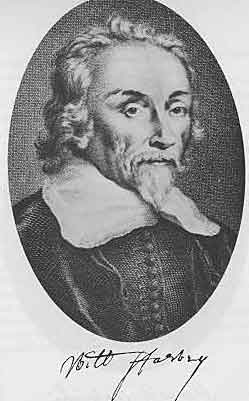
第16章図１ William Harvey, 1578-1657 ハーヴィ
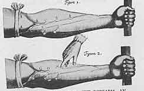
第16章図２ Veins of the front of the forearm, an illustration in Harvey's Exercitatio 「動物の心臓および血液の運動についての解剖学的研究」の挿絵
ハーヴィの血液循環学説には明らかな欠陥があった。動脈から静脈へどのようにして血液が流れるかを示すことが出来なかった。循環血液が流れるある種の経路が無ければならないことは明らかであるがその本性は不明であった。この経路の存在を仮定しなければならなかった。この仮定の正しいことは最終的にイタリアの解剖学者マルピギによって客観的に示された。1661年に彼はカエルの肺および腸間膜において動脈末端と静脈が毛髪のようにきわめて細い管の網によって結合していることを報告しこの管を毛細管と呼ぶことにした。血液は動脈から静脈へ組織内の未知な隙間ではなくて全身に存在する極めて細い管を通過していた。マルピギはこれ以上のことを発見した。ハリネズミの腸間膜を調べて毛細管だけではなくこの中の血液を観察し一定の大きさの小さな赤い球が通っているのを見た。彼はこの球を脂肪の粒と信じたがこれらは赤血球であった。
これらの発見はどのようにして出来たのだろうか？ 解剖学者の目に新しい視界を開いた装置すなわち顕微鏡によるものであった。16世紀に解剖学的研究は非常に熱心に行われ新しい知識が得られていた。しかし肉眼の能力には大きな限界があった。臓器の大ざっぱな構造は解明されたが構造の詳細は検査の目を逃れた。
オランダの眼鏡製作者が望遠鏡を発明した。これを簡単に改造してガリレイは複式顕微鏡にした。これを使って予想できなかったほど小さいものまで見ることができるようになった。これらの初期の顕微鏡は今ごろ使われているものに比べると原始的な装置ではあったが多くのものを200倍にも拡大することができた。素晴らしい結果が明らかになった。顕微鏡使用者は手あたり次第に検査した。ときに１滴の水は生き物で１杯の世界であった。デルフトに住んでいたレーウェンフックというオランダの研究者は自分でレンズを磨き自分の装置を絶えず改良して細菌を観察し随意筋繊維の横紋を観察し骨の小体を観察した。彼は発見したものをロンドンのロイヤル・ソサエアティに手紙で知らせた。
しかし新しい装置を解剖学研究に体系的に利用したのはとくにマルピギであった。ヴェサリウスが科学的な肉眼解剖学の開祖であるようにマルピギは顕微解剖学の開祖であった。
肉眼でカエルの肺は膜状の袋にしか見えない。しかし顕微鏡を使うとその壁に毛細管の網が観察された。マルピギはこのようにして開かれた路を進んだが困難はきわめて大きかった。全く新しい土地を耕していた。著しく強化されたこの顕微鏡学者の視力によって生じる混乱を解決することは最初にほとんど不可能に見えた。読者が理解しなければならないことは現在において大きな助けとなっている染色法がまだ無かったことである。高等動物で研究を進めるより昆虫のように単純なもので研究するのが有利なことをマルピギが見つけたのはこのためであった。しかしこれでも条件は極めて複雑であった。それでもっと単純化を求めて植物の微細解剖学を研究した。これで進歩はかなり容易になり長い間この問題を研究した。彼はロンドン・ロイヤル・ソサエアティの会員であったので1671年に最初の研究成果を「植物解剖学」と題した論文として送った。さらに一連の論文が続き最終的に植物顕微解剖学の包括的な研究となった。このようにしてマルピギは彼より13歳若いロイヤル・ソサエアティ幹事のグルーとともに植物解剖学の創始者となった。
ここまで到達して高等動物の顕微鏡による研究を再開できるようになったとマルピギは感じた。彼の目は単純な形態の検査によって訓練されていた。しかし高等動物に転ずるとしても複雑になることを避けるのが望ましいと思い従ってハーヴィと同じように発生学に専心した。植物の芽を研究していたのと同じように今度は動物の胚を研究した。彼の指導原理はハーヴィのものより進んで「すべての動物は卵から」だけではなく「すべての生物は卵から」であった。
彼は１かえりの卵（＊ふつう13個ていど）の中から孵化初期段階に６時間ごとに１個の卵を開いて卵の中におけるニワトリの発生を追跡した。先駆者たちより装置が良かったのでずっと多くのことを発見し胚全体および個々の臓器の発生の図はそれまで同様なものより優れておりその後も長いあいだ追い越されなかった。
ここから彼は特定の臓器の微細構造についての古典的研究に進んだ。すなわち、皮膚、舌、脾臓、腎臓、神経系の種々な部分についての研究である。1689年に22年にわたる研究結果である腺の構造についてのモノグラフをロンドンで出版した。これらの先駆的な研究はその後の解剖学研究の基礎になっただけでなく生理学を豊かにすることに貢献した。臓器の構造が明らかになればなるだけ機能の理解がより容易になり従って生体全体とその臓器の関係の洞察がより深くなった。
マルピギは故郷に近いボローニャで生涯の大部分を過ごした。ここで彼は哲学と医学を学んだ。その後ピサおよびメシナの教授として数年を過ごした他は1691年までボローニャ大学の講師であった。ここで注意しなければならないのは彼が解剖学の講師ではなく臨床医学の講師だったことである。解剖学の研究では17世紀の後までガレノス信者の人たちが主流であって彼らはマルピギの顕微鏡研究を怠け者の時間つぶしとみなし外国における彼の名声を妬んで種々の方法で意地悪をした。彼らの意地悪はひどいもので、ある日マルピギの別荘は略奪され装置は壊され論文は焼かれ生命さえ危険であった。
このようにマルピギは楽しいどころではなかった。常に苦しめられ苦労は肖像画にも示されている。法王インノケンティウス12世の医師としてローマに（＊1691年に）招聘されたのは助けとなった。この時から彼の手紙は明るくなった。しかし科学研究の時間は医療の重荷によってほんの少しになり、さらにこの楽しい境遇は長く続かなかった。1694年に死亡したからである。
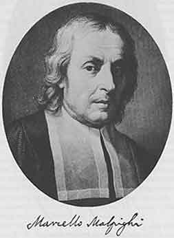
第17章図１ Marcello Malpighi, 1628-1694 マルピギ
マルピギはハーヴィの研究を完成させた。17世紀の始まりに少し戻ってみよう。ガリレイの影響はあまりにも強かったのでこの頃にはまだ彼の君臨する姿の痕跡が残っていた。ガリレイは新しい帰納科学の方法を採用した最初の研究者の１人であり多くの科学者たちは彼の足跡に従っていた。ガリレイの活動や成果はフランシス・ベーコンのような著者の理論付けよりも新しい方法の価値を顕著に示した。
17世紀以後における医学の運命は自然科学の運命と密接に結びつけられていた。医学と自然科学のあいだに一種の同盟がつくられ両者は並行して発展し互いに入り込み双方向に互いに発達を促した。時に自然科学はあまりにも興味深くなり医学は自然科学の一部門となり真の役割すなわち治療を忘れたことさえあった。人間は多くの自然対象の１つであるようにみなされ医師たちは患者が身体だけでなく心も持つ悩める人であることを忘れた。時には振り子は逆に振れて古典的観念論者による自然の考えが前面に出て哲学的傾向が支配的になることもあった。しかしもっと明白に言うと自然科学は知識発展の過程において医学の進歩のために欠くことができないものであり自然科学が方法としての位置を保ち医学が自主性を保つならば常に実りが多かった。
望遠鏡はガリレイの手で顕微鏡に改造され今日に医師たちは顕微鏡が無くては仕事をすることができない。ガリレイはまた温度計を発明しこの新しい道具はすぐに医学に使われた。古代から医師たちは人体の温度の変化が重要であることに気がついていた。発熱として表現される熱の増加ははっきりとした症状であって医師たちは患者の身体に手を当てて気がついた。
ガリレイが盛んなときにはすべての科学研究の領域で現象の主観的な記載から客観的な測定に移る傾向があった。温度は物理学的な概念となり数値で表現されるようになった。このような観点は医学に良い果実を実らせた。患者が単に「高熱」と言うだけでは充分では無かった。患者の病気を知るのに必要なのは医者が熱の温度を測り微細な振動を記録できることであった。新しく発明された器具はこの目的に著しく適当であった。
今日われわれが「体温計」と呼んでいるようなものを発明した最初の男はカポディストリア（現在はスロヴェニアのコペル）の医師サントリオであった。能力が高く研究に熱心で医学の古典に詳しいだけでなく自然科学の新しい方法の影響も受けていた。
サントリオは1582年にパドヴァで医学の学位を得た。知識の幅の広さや信頼できる性質および熱意によって彼は一般に高く評価された。ポーランドの宮廷がパドヴァに有能な医師を求めたときにサントリオが推薦された。彼は任命され、受諾し、1587年にポーランドに行った。すぐに彼の業務は広がりハンガリアやクロアチアの種々の場所に診察を頼まれるようになった。1611年にイタリアに戻りパドヴァの理論医学（＝内科学）教授となった。1629年に教授を辞任し種々の大学から招待されたがヴェネツィアに定着して臨床と科学研究に専念した。
サントリオは７冊の専門書を書きそのうち２冊は分厚なものであった。彼は医学著作者として医学臨床において誤りを避けるための総合的な書籍を書くことから始めた。まだスコラ学の方法に従っていて可能なかぎり多くの権威者を引用することによって自分の発言を強化していたが「理性」だけではなく「実験」によっても自己を正当化した。この著書およびこれに続くもの［ガレノスの短い「医学」の763ページに及ぶ注釈書］は形態こそ中世的ではあったが新しい精神が吹き込まれていた。両書ともに独創的な経験が含まれていた。金塊はあちこちに埋め込まれていたが砂の中から探し出すのは困難であった。
外見的にも極めて異なった性質のものが主としてサントリオの令名を高めた著作である。これは1614年に目立たない「医学静力学理論」の表題で出版された薄い小冊子で30年間の実験の要旨を警句の形で書いたものであった。この場合にもガレノスが出発点になっていた。皮膚は肺と同じようにある程度は呼吸し揮発性物質は皮膚を通して身体から出る、とガレノスはみなしていた。この「不感蒸散」すなわち見えない発汗はどの程度であったろうか？ サントリオはこの問題について論じ推論ではなく秤を使って答えた。彼は体重を量り摂取したものを量り便に出たものを量った。彼は大きな秤を作り秤の皿の上でテーブルを前に置いて椅子に座った。変化を数字で記録し自分の不感蒸散を数字で示すことができた。空気や水、食べ物や飲み物、睡眠や覚醒、運動や休息、性活動、感情の動揺、の影響における変化を追跡した。生体は不感蒸散によって１日あたり数ポンドを排泄しているという結論に達しこの数値によって種々の病気の診断や治療の適応を示すことができると彼は信じた。
サントリオは自分の研究が「新しく前例が無い」ことをよく知っていた。非難はまさに襲いかかろうとし彼はそれにたいして準備した。著書の１冊をガリレイに送り添付した手紙に次のように書いた。「私が発見した方法は明らかに重要である。何故かと言うとヒポクラテスやガレノスによると不感蒸散の異常はすべての病気の原因であり不感蒸散をこの方法によって精確に測定することが出来るからである。このことを信ずる理由は不感蒸散は目に見え触ることができるすべての排泄物を合わせたよりも大量だからである。」と。ガレノスが不感蒸散について何も知らなくても問題ではなかった。「不感蒸散が実際に存在することで充分であるから」と。
このように臨床実験の路に入りサントリオはさらに先に進んだ。他の生理学的および病理学的な現象も精確に測定できるはずである。臨床体温計の発明が不感蒸散を量るのに秤を使ったのに続いた理由は容易に理解できる。
最初の体温計は原始的な器具であった。巻いた目盛つき毛細管の球状に膨らませた端を患者の口に入れた。管の他端は水を満たした容器に浸した。温度は暖かい空気の排出量によって測定された。
同様に脈拍の定量的決定が必要であった。それまでの脈拍理論によると脈の性質を記載するので充分であった。これは詳細に調べられ重箱の隅をほじくるようであった。しかしサントリオによると一定時間内の脈の数こそ重要であった。今では腕時計を使えば可能である。しかし16世紀末には時計に秒針は無く分針すら無かった。したがってサントリオは脈拍を数える特殊な器械として「プルシロギウム」を作った。これは単なる振り子であって糸に鉛の玉がつけてあった。糸の長さを調節して脈拍と同期して振り子が振動するようにした。この長さは脈拍数の客観的な測定値になった。
サントリオは空気中の湿度を測る湿度計を作った。この創意豊かな脳はもっとすばらしい装置を作った。たとえば吊り寝椅子によって患者は横になっていて努力をしないでも入浴できた。もちろんこのように素晴らしい器械を作った医師は外科の器具も豊かにした。彼が発明した器具でもっとも重要なのは気管切開を行ったり膀胱から石を取り出すためのトロカール（套管針）であった。
サントリオの考え方はハーヴィーと同じであった。彼は質的な観察から量的な観察に進んだ。彼の方法はハーヴィーと同じように実験であった。２人とも機械的に物を考えた。２人とも生物学的現象と確固たる無機世界の法則を結びつけることを試みた。彼らは同時代人であったがサントリオはハーヴィより15歳年上であり彼の主著は「心臓と血液の運動」より14年前に刊行された。
後継者たちはハーヴィの勝利をみとめてハーヴィを新しい生理学、精密な生物学の創立者とみなした。種々な理由があった。ハーヴィは人を夢中にさせる問題を選んだ。彼が研究した問題は極めて現実的なものであった。彼はその問題を新しい方法で効果的に解決した。何世紀も勢力を持っていた誤った学説を新しく正しい学説で置き換えた。さらに明快なモデルとなる研究によって自己の考えを発展させた。この研究は重要なものを何ものも省略せずに全領域を覆っていた。
サントリオは同じような方法を用いたが彼の選んだ領域すなわち不感蒸泄は血液循環にくらべて当時の医師にとって興味が無かった。その他に不感蒸泄は当時の知識にとって完全に決定的な解決をするにはあまりにも複雑であった。彼が記録した数値には避けることができない数多くの矛盾があった。この領域で精確な計算が可能になるには数世紀の経過が必要であった。ハーヴィは要約し限定することに秀でていた。彼は学問的に信頼できる事柄でなければ主張しようとしなかった。サントリオは自己の観察からあまりにも包括的な結論を出した。彼は不感蒸泄をすべての病的現象の基本であるとした。
最後に、サントリオは自分の研究を世の人に知らせるのに最も不適当な形をとった。彼の「医学静力学理論」は警句で書かれていた。これは簡潔なのが利点であったが無分別に使われると曖昧になる。サントリオのばあいにこのことが起きた。実験方法および計算について詳細で精確な記述が欠けていた。彼の観察および新しい機械についての記載は他の著作に含まれガレノスおよびヒポクラテスについての冗漫な注釈およびとくに顕著なこととしてアヴィケンナの「医学の規範」の第１の本の第１の部分についての注釈に埋もれている。サントリオは偉大な発見をした天才ではあったが記載の方法を知らず彼の器具が手直しされ改良されて生き返り医学の学問ならびに実践を豊かにしたのは彼が死去してそれほど後のことではなかった。
これらの欠点があるにもかかわらずサントリオは現代医学に貢献した建設的な天才のあいだで名誉ある地位を占めている。
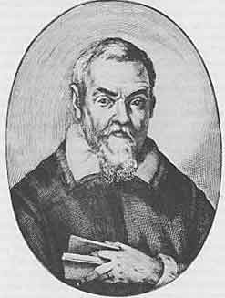
第18章図１ Santorio Santorio, 1561-1636 サントリオ
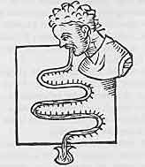
第18章図２ Santorio's clinical Thermometer サントリオの体温計
ハーヴィの研究は静から動への考え方の変換を示している。新しい科学が生まれつつあった。この時代は芸術ではルネッサンスからバロックへ変換にあたり、大きな緊張、断裂、対立の時代であった。絶対主義国家の時代であるとともに偉大なデモクラシーの時代でもあった。理性の時代であり冷たい計算高い現実主義の時代であった。研究者たちは生命の現実を理解し測定し制御することを試みた。しかし同時に狂信と偏狭の時代であった。カンパネッラ（＊イタリアルネサンス最大の哲学者の１人）が拷問にかけられブルノー（＊イタリアの哲学者）のような人たちが火あぶりにされガリレイのような人たちが自己の科学学説を撤回させられた。至る所で宗教グループが権力を得た。ドイツでは30年戦争が猛威を振るい、その結果として科学生活の耕地は休耕地になった。イギリスでは大反乱が進行し王が処刑人に首を切られた。北海沿岸の低地帯ではほとんど限りの無い戦いの後でオランダやフラマンの新教徒はスペインの首枷から自由になった。南では反宗教改革が進行しイエズス会が勝利した。欠乏の病気と過剰の病気がこの時代に独特な特徴を持った。
視線を北に向けるとバロック時代の断裂のすべてを示している１人の医師が見られる。ファン・ヘルモントである。懐疑主義と信仰が彼の中に結びついていた。デカルトと同じように疑いは彼の思想の出発点であった。彼は冷静な研究者であり、その明哲な知的能力は自然科学を豊かにした。しかし同時に信仰に熱心であった。彼は多くの点で過去の因習とはっきりと手を切っていた。彼は創造的であり医学の科学や医術の新しい路を論ずることを好んだ。先駆者の中では１人だけが精神的に自分に似ていると思っていた。パラケルススであった。
ヴェサリウス、ハーヴィ、マルピギ、これらの人々は専門化し知識の特定の領域を研究し特定の問題を新しい方針で取り扱いこのようにして全く新しい結果に到達した。これと違ってパラケルススやファン・ヘルモントは全エネルギーを特定の仕事に限らなかった。彼らの考えは全宇宙を包含していた。彼らは絶えず全体を考えすべての現象を含む体系を考察した。結果として彼らはしばしば目標を飛び越してゴールの数マイル先の点に急いでしまう。２人とも孤立していた。しかし数世紀後の今日でも彼らは我々の中で盛んに生き続けている。彼らの著作物の言語的な困難を克服できる人たちは誰でも彼らの知性の素晴らしさ彼らの直観の豊富さに感動させられる。
ファン・ヘルモントは良家の出身であった。ブリュッセルに生まれルヴェン大学に学んだ。落ち着かず満足せず１つの学部から他の学部に移った。植物学は彼を薬物学に導いた。次に彼はある医師の助手になった。「しかし、すぐに著しく悔やんだ。医術には不満、不確定、および推測、以外に何も無いことが判ったからである。あらゆる病気と関係して医術について論じることはできたが歯痛や痒みを基本的に治す知識が無かった」、と。彼は夢を見て医師になる決心をした。この夢は彼がラファエル大天使の能力を獲得して神的な医術を与えられる、と約束した。火のような情熱をもって彼は新しい学問に飛びつき大量の知識を得てルヴェンで外科学の講義を行った。
しかし医学には失望した。医学をしばらく見捨てて、スイス、イタリア、フランスに旅行した。旅行の途中で錬金術師たちに出会った。この時代に錬金術師たちの多くは勇敢な冒険者として絶えず旅行していたからである。火を使う秘法を習い新しい世界が開けた。この交点において彼は同じようにパラケルススの著作に親しんだ。彼はパラケルススに負うところが多いと言っているが遠慮無く批判もした。化学は効果ある真の治療に役立つがそれ以上に自然を理解する鍵であった。
彼はブラバントの裕福な女性と結婚してブリュッセルに近いフィルフォルデンに屋敷を構えた。1609年以来、生涯ここで孤独な生活を過ごし研究に専念した。どのような成果をあげたのだろうか？
物質に生気を与える成分はアルケウス（原初力）である。このアルケウスはパラケルススの概念であって動的であり物質の有効成分である。アルケウスは直接には作用しないで物質に影響するには「
アルケウスの働きのもとに種子（精子）は身体になる。身体は臓器からなる。個々の臓器にアルケウスがありその臓器の活性は「生来のアルケウス」に依存する。これが臓器の支配者であり監視者である。これは臓器内における物質変化［現在は代謝と呼ばれるもの］を調節して物質変化が正常に進行するようにする。離れている臓器のアルケウスは生体全体の「流れ込むアルケウス」によって調節される。
さて病気とは何か？ 病気もまた生命現象である。病気は完全に実在する物で実体のある生命過程すなわち「体内に留まる存在物」である。病気の原因は生体のアルケウスに効果を及ぼす。「病気のイデア」は臓器アルケウスに自己を刻印する。このようにして臓器の動的な原則が乱される。これによって発酵素は変化しこの変化は臓器を構成している物質に影響し沈殿が作られる。病気はあれこれの臓器における組織変化の乱れになり局所の変化として表れて沈殿によって感知される。
したがって治療は曖昧な一般的療法であるべきではなく進行している特定の病気に対するものであり「病のイデア」に対するものであるべきである。もっとも効果がある治療薬は化学物質すなわちパラケルススの
ファン・ヘルモントの体系は観念すなわち超自然的な考えと経験すなわち科学的な考えとのごちゃまぜであることが判る。病気についての学説は本質的に動的であり医師の注意を臓器とくに特定の臓器で進行している病的な経過に向けさせた。病気の経過中に臓器で起きる変換は化学過程であると彼は主張した。特定の病気にこれらの概念を適用するのは、カタル（鼻風邪）、喘息、肺の病気一般、についての学説にとってとくに有効であった。パラケルススが主張した化学的な治療法は最初は頑固に反対されていたがファン・ヘルモントによって新しく勢いづけられた。
化学の領域はファン・ヘルモントの研究によっていろいろと豊かになった。彼は空気と同じ物理学的性質を持つ物質を研究しそれらにガスという新しい一般名を与えた。目に見ることができる蒸気との違いを明らかにし二酸化炭素を発見して「空気化学」の創設者になった。
ファン・ヘルモントの晩年は辛いものであった。磁気による傷の治療法についてイエズス会に向けた短い原稿が無関係な人の手に落ちファン・ヘルモントの意志に逆らって出版され宗教裁判所の忌諱に触れた。彼は告発されしばらくのあいだ入獄し裁判はだらだらと続いた。ファン・ヘルモントは自説を撤回したが生きているあいだは効果が無く死んで２年後に敬虔な一生を送っていたとの理由で釈放された。
彼の主著「医学の基礎」は死後の1648年に息子によって刊行された。文章が難しいのと内容の本質が難しいので非常に理解し難く当時の医学の考え方にも臨床にも殆ど影響を与えなかった。医学は解剖学や機械主義生理学の路を追っていた。このためにファン・ヘルモントはパラケルススと同じように医学の一般的な進歩には影響を及ぼさなかった。
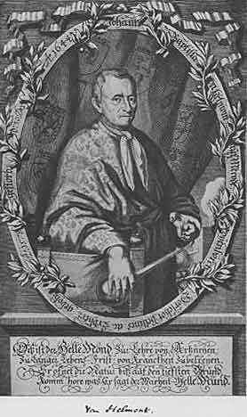
第19章図１ Jan Baptista van Helmont, 1577-1644 ヘルモント
ファン・ヘルモントの体系はほとんど理解されず同時代人や直接の後継者には複雑過ぎたが化学的な概念で彼が研究していたことは明らかであった。古典時代の医師たちは健康を釣り合いの状態と考え病気は釣り合いの乱れと考えていた。健康の釣り合いは種々の力、質、原子、液体とくに４種の主要な体液によって保たれていると彼らは信じた。原動力は身体の内的熱、プネウマおよび生命力であった。しかし17世紀の初めに自然科学とくに物理学と化学が大きく進歩した。数量で示すことができる実験および観察データによって空論は裏面に追いやられた。ハーヴィは機械的な考察が生物学を豊かにすることを素晴らしく示した。サントリオは組織の変化や代謝も数的に考察できることを示した。
この頃になると医師たちの考えが病気の古典的な概念から離れて健康と病気を新しい物理学および化学の見通しによって示すことにますます努力したことは自然であった。
パラケルススとファン・ヘルモントは化学を医学に奉仕させた。動物体内における変化は化学レトルト内で起きる変化に似ているであろうことは明らかであった。体内にも酸とアルカリが存在する。体内化学の変化が病気現象として起きるであろうことを誰が疑うだろう。尿中にときに見られる塩や死後の解剖でしばしば見られる胆石や膀胱結石は異常な化学反応の最終産物であるに違いない。
このようにして17世紀の医学に次第に主として化学的な考えで研究する傾向が生まれてきた。こようにしてイアトロ化学やイアトロ化学者とという言葉が使われるようになった。この学派の代表者はライデンの臨床家ド・ル・ボエであってラテン語化したシルヴィウスの名前で良く知られている。
シルヴィウスはデュボアと呼ばれていたフランスのユグノーの家に生まれ、この一家は北海沿岸の低地帯に移っていた。戦争が起きて両親はドイツに逃れシルヴィウスはハーナウ（ドイツ中南西部）に生まれた。彼はドイツとオランダの大学で学び1637年にバーゼルで医学の学位を得た。両親の近くにいるために23歳のときにハーナウに住んで開業しこの町の市議会から任命された。しかし２年以内に制限の少ない環境に憧れるようになった。医学力をさらに高めるためにパリに行きオランダにさらに移ってライデンで植物学と解剖学の講義をして多くの学生を惹き付けた。彼は解剖学者として特に優れていた。
実際、シルヴィウスは医学における解剖学の基礎的な重要性をはっきりと永続的に確信していた。彼は解剖学の著述をし脳の裂溝には彼の名前がついている（＊シルヴィウス裂）。しかし彼は何よりも新しい生理学的研究に魅惑されていた。ハーヴィの「心臓および血液の運動」が刊行されたのは1628年のことで血液循環の問題はまだ盛んに議論されていた。シルヴィウスはハーヴィの説を情熱的に支持してこのイギリス人の教えをライデンで広め最も疑い深い人たちさえ信用する実験をして裏付けとした。
それでもシルヴィウスはまだライデンに正規の地位を持たなかった。彼はどんな博士たちにも許される講義を行っただけであった。アムステルダムで開業するように友達に勧められたときに彼はそれに従いすぐに市で最も高く評価される医師の１人となった。彼は立派で堂々とし頓知があり折に触れて楽しく笑う男であると同時代人は書いていて彼の好きなモットー「正しく振る舞い、しかして悦ぶ」を満足していた。とにかく彼は行儀が洗練されていた。彼の冗談は攻撃的ではなく伝記者の１人によると酔っぱらっているのを見たことが無かったそうであった。このことは17世紀のオランダ人の多くについては言うことができなかった。彼はまた報酬にこだわらず新教徒のワロン人（＊ベルギー南東部の住人）教会の貧乏な信者には無料で出来るだけのことをしていた。
シルヴィウスは17年間にわたってアムステルダムで開業し流行った。1658年にライデンで医学教授の職が空席になったときに全員一致で彼は教授に任命された。最初に彼は断るつもりでいた。彼が欲しいものすなわち楽しい仕事、収入、名誉、友達、がすべてアムステルダムで得られていたからであった。大学では何が待っていただろうか？ 奴隷のような大学の生活や同僚の教授との論争だった。教授として博識で何でも知っている風をしなければならないことだった。何回も断ったが最後に彼は受諾した。何が魅力だったのだろうか？ 何時でも学者を大学生活に惹き付けるものである。すなわち若い人たちに囲まれることの可能性や自分の好む考えを述べて新鮮で熱心で若い心による反応を調べて確かめることの可能性および印刷では出来ないほど効果的に自分の学説を述べる可能性であった。
医者として開業しているあいだにシルヴィウスは大量の経験を得ていた。彼の見解の大部分は独創的なものであることを知った。化学が重要なことの固い信念を持ちこの点で同じ意見をもつ同僚たちの少ないことを知った。したがって任務を果たすことにした。眠っていた記憶が戻った。彼は以前に満員の講堂で無言でわくわくとする出席学生による陶酔状態を楽しんでいた。彼は不満を抑えてある日ライデンに戻りもう若者ではない大人の学生たちの前に立った。彼は講義をして再び聴衆を喜ばせ信服させた。彼の評判、従って大学の評判は急速に遠くまで広がった。学生たちはハンガリー、ロシア、ポーランド、ドイツ、デンマーク、スウェーデン、スイス、イタリア、フランス、イギリス、から集まってきた。このような国際的な評判の広がることは現在よりも当時の方が容易であった。科学には国際語があり西ヨーロッパおよび中央ヨーロッパで講義はラテン語で行われていたからである。学問的習慣はどこでも同じであった。ライデンで試験に通った学生はどこに行っても開業でき学位があるとどこの大学でも教えることができた。
ライデンの医学部はアルプスの北で最初に臨床教育を行った。病院を教育目的に使うことはイタリアで生まれていた。16世紀にパドヴァ（いつもパドヴァ！）でダ・モンテは学生たちをサン・フランセスコ病院に連れて行って病人の病床のそばで講義をすることにしていた。彼の死後このことは廃絶されたが忘れられはせずパドヴァの学生とくにドイツ人学生は復興を要求した。1578年に同じ病院でボットニによって再導入されて男性患者について行われデグリ・オッディによって女性患者について講義が行われた。これら２人の教員が死亡したので再び臨床教育は中止となった。しかし間もなくパドヴァで研究していたオランダの医師たちヘウルニウスおよびスクレヴェリウスがライデン大学に移植した。最初、オランダの学生はこの改革に反対した。その頃も今と同じように病床で学生に質問したので若い人たちは患者の前で無知を曝すのを喜ばなかった。しかし純粋に理論的な教育より実践が優れているので臨床教育の実践がライデンではやはり確立された。続いてシルヴィウスが来て彼の世界的な令名はライデン臨床を有名にし遠くからも多くの追随者を惹き付け彼は学部長になった。
シルヴィウスの成功の秘密は何だったろうか？ 彼の医学システムはきわめて簡単でこの時代に適した話題となる概念を研究した。彼は機械主義者と考えられていた。解剖学と生理学をとくに重視していた。しかし当時の解剖学と生理学は健康と病気の現象を適当に説明することができなかった。従って彼は化学のような他の領域についても考察した。化学は彼が好んだ領域であった。
発酵とは１つの物質が他の物質に変化することであった。このような過程すなわち発酵によって腺からの分泌が影響されて栄養素として摂取したものが血液に変化した。このような変化による最終産物は酸とアルカリであった。酸とアルカリの釣り合いが正しく保たれると個体は健康であった。これに対して生体の化学の乱れによってアクリモニア（＊古語：刺々しいもの）が作られる。これは酸またはアルカリと考えられ血液に入りそこで病気が起きる。治療の目的は「生体のエネルギーを保ち、病気を追い出し、その原因を除き、症状を和らげる」ことでなければならない。酸はアルカリによりアルカリは酸によって打ち消された。体液すなわち胆汁、粘液、その他はともに植物性および鉱物性の起源である吐剤と下剤によって体外に出された。
シルヴィウスが書いた「医学議論」（1663）および「医学実践における新しい考え」（1671）には数多くのきわめて価値のある観察が含まれていた。この頃に見たものはすべて「新しい」「聞いたことが無い」ものであった。例えば彼は肺の結核結節の見事な記載を行い、しばしば見たことがあるもので多くの場合に肺結核の原因であるとみなした。
シルヴィウスは熱狂的な信奉者をとくにオランダに持ちドイツやイギリスにも持った。イギリスにおける彼の信奉者で最も有名なのはウィリスであった（＊ウィリス大脳動脈輪に名が残る）。
ファン・ヘルモントとシルヴィウスは２人とも化学の言葉で考え２人とも化学を医学に役立てた。しかし２人は大きく違っている。ファン・ヘルモントはカトリックで神秘主義者であったがシルヴィウスはユーグノーで合理主義者であった。ファン・ヘルモントは孤独な生涯を送り誤解され最後には処罰された。シルヴィウスは楽しい男で感謝している患者と尊敬の念をもつ学生に囲まれすぐに成功した。しかしファン・ヘルモントの仕事は長続きするものであった。彼が論じた問題は今日でも我々に考察を促している。シルヴィウスの使命は遠い過去の記憶に過ぎないものになった。この楽しい男の仕事は短命であった。涙とともにパンを食べた者だけが天の力を知ることができる。
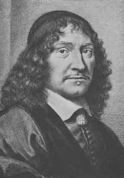
第20章図１ Franz de le Bo
 [Sylvius], 1614-1672 シルヴィウス
[Sylvius], 1614-1672 シルヴィウスこれまで見たように北ヨーロッパの科学者は化学に誇りを持った。これに対し南ヨーロッパでは物理学が優勢でありガリレイの研究および方法は強い影響を持ち続けサントリオの実験やハーヴィの学説が進むべき方向を示していた。哲学の流れはこれらの傾向を強化した。当時の哲学者たちは自然科学を研究する学部を卒業した。スコラ学は数学で置き換えられた。人体は力学法則により調節される器械であるとデカルトは宣言した。運動は生命が示す顕著な特徴であった。筋収縮の源泉は何だろうか？ 収縮は蒸気すなわち精気の流入に依存しやはり機械的なものであった。生きている精気すなわち生命のエッセンスは血液が希薄化されて作られた。人間機械はラ・メトリが生まれるよりずっと前の18世紀以前に広く一般化されていた。
複雑で微妙な器械を研究する必要があった。研究方法は実験であった。しかし、この種の実験はしばしば高価な器械や装置の助けを必要とした。大学は特別の例外を除いて慣習に執着して古い方法を利用し新しいこれらの研究のための手段を持たなかった。これこそ学会やアカデミーが創設され実験研究の中心になった主な理由であった。
17世紀の初めのころアカデミア・デイ・リンチェイ（＊オオヤマネコ・アカデミー）創立のために数人の学者がチェシ公爵の宮殿に集まった。公爵は自然科学に熱心で標本戸棚や植物園を持ちミツバチや植物を研究し有能な実験家であった。この学会は大きくなり会員数は32人となりその中にはガリレイが含まれた。新しい形の労働社会すなわち似た目的を持つ人たちの親密な同盟が作られた。全世界に支部アカデミーがある科学者たちの社会を創立者たちは夢見た。この社会は研究に必要なすべてのもの、すなわち、実験室、器械、標本、図書、を供給するものであった。ここには独自の印刷所があって研究の結果を広め個々のアカデミーの間で盛んな考えの交流をすることになっていた。
これらの広大な計画は実行出来なかったがこのアカデミア・デイ・リンチェイは半世紀以上にわたって優れた研究を行い類似した組織のモデルになった。
フィレンツェではメディチ家のフェルディナンド２世とレオポルドが自然科学に興味を持ち主としてガリレイの弟子たちを集めアカデミア・デル・チメント（＝実験アカデミー）を創立した。ここにおける実験法は全世界の手本となるものであった。
他の国々でも同様な組織が生まれた。イギリスでは1662年にロイヤル・ソサイティーが創立され前に述べたようにマルピギーは会員であった。1666年にフランスで科学アカデミーが作られた。ドイツでは時代が悪かったが30年戦争の始まった年の1622年にユンゲはロストクにソキエタス・エレウネティカを創立した。この会のモットー「すべては帰納と実験により」は自然科学の目的を簡潔に表現したものであった。この会はアルプスの北で最初のものであったが不幸にして２年以上は続かなかった。アカデミア・レオポルディナは1687年以来、いろいろと名前は変わったが現存する最古の科学アカデミーでハレ市に中心がある。最初は科学に興味を持つ医師のグループであったが年とともにドイツ科学研究の中心となり重要な特権を持つようになった。
かなりの数の医師たちがアカデミア・デル・チメントの会員であった。そのうちの１人であるデンマーク人のステンセン（1638-1686）は有名な解剖学者であり生理学者であった。ボシュエ（フランスの宗教家）の影響でカトリック教徒に成り後に司教となった。彼は耳下腺管（ステンセン管）の発見者であった。彼は筋生理学で優れた研究を行った。レディもアカデミア・デル・チメント会員で、詩人、動物学者、医師であり「昆虫の発生に関する実験」の著者であった。彼は簡単な実験で自然発生が起きないことを決定的に証明した。この時まで外からの関与が無くても蛆は腐った肉に生ずると人々は思っていた。レディはガーゼで覆ってクロバエが肉に近づけないようにすると肉は腐るが蛆は生えないことを示した。クロバエは肉の匂いに惹き付けられてガーゼの上を這い回って卵を産み付けた。卵はガーゼの上で孵化したが肉の中では孵化しなかった。
アカデミア・デル・チメントの最も有名な会員はボレリであった。もともと彼は数学者でありしばらくピサの数学教授であった。しかしその上に彼は物理学者であり生理学者であった。ハーヴィが開いた路にしたがって生命現象を物理学の言葉で説明し生命現象が物理法則に従うことを示した。死後に刊行された有名な本「動物の運動」で動物の運動が力学の法則に従って起きることを示した。骨格筋および心筋（特殊な筋）の動きを研究し筋の運動が数値で示せることを証明した。彼はまた呼吸の力学を研究した。胸郭は肋間筋の収縮によって拡大すると彼は言った。伸張性がある肺はこの拡大運動に受動的に従った。呼気の作用はこれに対して弛緩の過程であった。呼吸についてのこの見解は我々の時代まで至っている。同様に消化は機械的な過程でありイアトロ化学者が考えているように発酵過程ではないとボレリは言った。胃分泌は血圧によって排出されるとした。このようにして生理的因子の働きによって胃は食物をこすり落として胃液と混ぜて薄い粥にすることができた。
しかしもしも正常の生命現象が力学的に説明できるなら病的現象も同様に説明ができるはずであった。熱、痛み、痙攣、その他は何であろうか、神経液の運動の障害ではないだろうか？ 神経の開口が塞がれたら病的現象の出現は当然なことであった。毛細管で血液が停滞したら同様であった。炎症の熱は血液が血管壁と摩擦することによるものであった。
このようにして南ヨーロッパでは北ヨーロッパのイアトロ化学者に対応するものとしてイアトロ物理学者、イアトロ機械主義者、イアトロ数学者の学派が次第に作られ彼らの考えは広く受け入れられた。
イアトロ機械主義の学説はバリヴィの教えで頂点に達し決定的な変換点となった。
バリヴィはラウザ（シチリア島）の貧乏な環境で1668年９月８日の明け方に生まれた。家族の姓はアルメノでありアルメニア出身であることを示しているのであろう。暮らして行けなかったので一家はアプーリア（イタリア南東部）のレッチェに移った。若いジオルジオと弟のジアコモは元気よく聡明なので注目された。同郷のイエズス会士が２人を金持ちの医師バリヴィに紹介し２人は養子となり財産が遺された。ジアコモは僧になりジオルジオは養父の職を継いだ。
バリヴィはナポリの大学で勉強した後にイタリア各地を旅行し1692年にローマに到着し、その後ここに長いあいだ滞在することになった。ローマでは臨床家ランチシ、植物学者トリオンフェッティ、解剖学者パキオニ、など著名ないろいろの人と親交を深めた。マルピギも１年のあいだローマにいた。バリヴィはボローニャで講義を聴いたので彼を知っていた。マルピギは年をとり病気であったので４０歳若いバリヴィと親しい関係を結ぶことはなかった。しかし1694年７月に卒中で倒れたときにマルピギはバリヴィに往診をしてもらった。バリヴィはまだ若かったが臨床家としてかなり評価されていたことを示している。同じ年にマルピギは２度目の卒中で死亡した。バリヴィは死体解剖を行い明瞭・簡潔な言葉で病気および剖検の結果についての効果的な報告を書いた。
バリヴィはローマを去ってレッチェに戻るつもりであったが法王インノケンティウス12世はしばらく留まるように希望し間もなく空席ができたので残りの生涯をローマで過ごすことになった。
ランチシはローマ教会の大学サピエンツァ（＊英知）の解剖学教授であったが1696年に臨床医学の主任教授になった。したがって解剖学の教授職を離れなければならなかった。競争試験が行われバリヴィは13人の候補者のうちの最高であった。彼はサピエンツァの解剖学教授を５年間勤め1701年に理論医学教授に任ぜられた。
このようにしてバリヴィは40歳になる前に若くして死ぬまでローマに留まった。短い生涯に彼は大量の臨床研究と著作を行った。28歳で２冊の本を書いた。「医学の実際」は彼を有名にし、いろいろのアカデミー会員に任ぜられるようにした。理論的な著作が続いた。「運動性繊維と病的繊維」および種々の短いモノグラフであった。
理論に関してバリヴィは本格的なイアトロ機械主義者であり実際この学派の学説を完璧なところまで押し進めた。彼は人体を一種の器具箱とみなした。歯はハサミの一種で、胃はビン、腸や腺は篩、血管は管の単なる系、胸郭は１組のフイゴを入れた箱、に過ぎなかった。生体を作っている器具は繊維の弾性によって動かされた。弾性が正常ならは健康であったが高すぎたり低すぎたりすると病気になった。
バリヴィの臨床家としての働きを見ると驚かされる。理論について彼は教条主義者であったが臨床の仕事において彼は先入観を持たなかった。彼は偉大な臨床家ですばらしく有能な観察者であり治療は高度に巧みであった。彼は理論から何も推論しようとはせず、それらによって実践を決定しようとはしなかった。実際、彼の臨床における原則は自分の理論が誤りであることを示していた。彼の「医学の実際」の序文から幾つかの文章を手当たり次第に引用しよう。
「医師は自然の召使いで通訳である。何を考え行うにしても自然の歩みに従わなかったら自然を制御することはできないであろう。病気の起源と原因は人間の心が解明するにはあまりにも難解である。」――「医学の２つの支柱は理性と観察である。しかし医師が考えるときに道案内として手掛かりとなるのは観察である。」――「今日まで我々は立派な仮定や微妙な論理的な区別と定義ですぐに満足してきた。これらは疑いもなく我々の医術にとって大きな飾りであったが医術を実際に有効なものにはしなかった。」――「もしも理論が進歩してきたとしたらこれは主として17世紀の実験科学のおかげである。それでもヒポクラテスを読まない者は馬鹿者である。過去に彼以上の偉大な医師はいないし将来もいないだろう。」――「医師だけでも最終的に正気に戻り居眠りから目覚め古代の雄々しいギリシア医学と最近の思索的で優柔不断の医学とがはっきりと違うことに気が付きさえしたら！」
これらは間違いなく後ろ向きの考えである。これらは心からの不満を表現している。このように書いている人は最新の科学成果に失望している。彼は後ろを見てヒポクラテスの像が目の前に大きくぼんやりと見える。ヒポクラテスの医術すなわち理論は二次的で実践が主であった時代の医術は彼にとって最も望ましい理想であった。しかしバリヴィは科学者であった。彼は死体解剖を行い他の同僚と同じように実験を行った。いや彼が研究から引きだした思索的な推論は同僚よりも優れてさえいた。
バリヴィの仕事には深い穴が開いていた。理論と実践、科学と医術のあいだには深い断絶があった。彼にとって理論はもはや実践を決定するものではなく実践のためには価値が無くなっていて実践には他の指導が必要であった。逆に言うと理論はもはや実践経験の結果ではない。科学と実践はたもとを分かっていた。
バリヴィ自身はこの断裂に気がついていた。しかし当時イタリアに流行していた機械主義に深く巻き込まれていたのでそれから離れることが出来なかった。新しい流れは他の方面から近づいてきた。

第21章図１ Giorgio Baglivi, 1668-1707 バリヴィ
バリヴィがナポリでまだ学生であったころシデナムは死去しウェストミンスターの聖ジェームズ教会に埋められた。墓石には「永遠に高貴な医師」と書かれた。後の人は彼に「イギリスのヒポクラテス」という最高の名称を与えた。バリヴィを尊敬する人たちはバリヴィを「イタリアのシデナム」と呼んだ。シデナムは偉い学者ではなかったし大学の教授ではなく沢山の本を書いてもいなかった。彼の全集は適当な厚さの本ただ１冊であった。彼はロンドンの有能な開業医に過ぎなかった。
これまで記載した17世紀の「偉大な医師たち」は優れた研究者または深遠な思想家であった。同時にすべてはかなり成功した臨床家でもあった。純粋な理論家はまだ存在しなかったからであった。しかし当時の平均的な臨床家はどんなであったか知る時が来た。新しい研究は臨床に影響を及ぼしただろうか？ 普通の医師たちの技術を改良し水準を上げただろうか？
17世紀中葉ぐらいまで大部分の国で一般の臨床医は哀れな状態であったことが回答である。この点でモリエールの諷刺はそれほど誇張されたものではなかった。医師は根こそぎにされたように感じていた。堅固な基礎の上に確立されていたように見えた古典時代および中世の医学の建物は新しい研究によって根底から崩された。何が起きていたのだろうか？ １つの学説だけでなく多くの学説について言うことができた。臨床家は誰の説に従えば良いだろうか。パラケルススか、ファン・ヘルモントか、イアトロ化学者か、イアトロ物理学者か？ すべて互いに矛盾し多くのばあい互いにけなし合った。解剖学と生理学は医学知識に重要な貢献をした。しかし解剖学と生理学は新しい治療技術ではなかった。これらは医療へ導く路に過ぎない。何世紀もかかる長い長い路であった。医療は待つことができなかった。すぐに役立つ指導が必要であった。
同じように化学と物理は医学に重要であることがはっきりと示されていた。しかしイアトロ化学者やイアトロ物理学者は発見へ強い熱意を持っていたが慎重でなかった。彼らは中庸や制約を学んでいなかった。すべてを説明しようとした。実際のところ、彼らは新しい自然科学と同一の概念を持っていたがよく調べると彼らの体系は自然哲学的な空論そのものであってガレノスの体系と大きく違わなかった。新しい学問が実際の場面すなわちベッドサイドで臨床にほとんど役立たないことはバリヴィの行動にはっきりと示された。彼は臨床研究においてヒポクラテス集典に戻るようにとの助言をした。
このように17世紀を通じて医学には不幸な断裂が存在した。臨床家たちは古い慣習の正しくないことを知っていたが置き換えることができ信用できるものを見つけることができなかった。大学の大部分が保守的だったことは容易に理解できる。教員たちは教えることを任務とするだけでなく古い学説の擁護を任務と考えていた。フランス革命のときまでパリの教授会は超保守的であった。すべての力を尽くして改革に抵抗し例えば新しい化学的治療を拒絶した。実際アンチモンの使用を推薦した成員の１人を除名した。
その結果として多くの「学問の中心」における教育は慣習に忠実であり純粋に理論的であった。古典時代およびアラビアの著者たちを教えられ擁護され解説された。「討議」は中世と同じように行われた。これらの大学の出身者は十分に教えられてはいたが科学的理想は過去の時代のものであった。歴史の車輪は逆に回すことはできない。デカルト、フランシス・ベーコン、ガリレイ、ハーヴィーと同時代であるのにスコラ派であることは不合理である。これこそモリエールの喜劇における医師たちが我慢できないほど滑稽な印象を与える理由である。彼らは化石であり遠い過去から生き残った医師であった。彼らの生きている時代は新しい科学の理想を採用していたがその理想は当時の大部分の医師たちにとって異質なものであった。
心の中のこのような軋轢により理性的な医師は医療を離れて自然科学その他の領域に逃げた。たとえばパタンは政治領域で活躍するようになりルノドーは王の史料編纂官となり1631年にはこの国の最初の政治新聞「フランス新聞」を創刊した。ルノドーは質屋を作り貧しい人たちに無料で医療相談を行った。医療は希望が無いほど混乱し始めた。
しかし医術の進歩を停止させることはできなかった。診療を受ける患者は医師にとって知識改良の励ましであった。どの医師も患者を失うことは良心がとがめた。必要な変化が現れた。これは臨床医学の領域からであった。変化を持ち来んだのはシデナムであった。
シデナムの一生は簡潔に話すことができる。彼は地主の息子として1624年に生まれた。18歳になったときにオクスフォード大学に送られたがすぐに「大反乱」（＊1642年に開始）が起きた。家族がピューリタンの考え方を持っていたので議会派軍に従軍した。反対側すなわち国王派にはハーヴィがいた。ハーヴィは老人であり政治に興味を持っていなかった。国王の軍隊は敗れオクスフォードは1646年に議会派軍に占領された。内乱の第１幕は終了した。シデナムは軍から離れ職業を選ぶことになった。兵士として４年を過ごしたので選択が困難であった。この時に彼はロンドンにいた。彼の兄弟が病気となりコックスという有名な医師の治療を受けた。この医師は若いトマス・シデナムと話をして医師になることを勧めた。医師にならない理由は無い！ シデナムは医師になるために議会派が占領しているオクスフォードに戻った。学業は困難だった。戦場にいる間にラテン語をすっかり忘れていたからであった。しかしコネがあったので1648年に医学士（外科医）の学位を得た。彼は続いてオクスフォードに止まった。またもや戦争が始まった。クロムウェルはアイルランドを征服しスコットランドでチャールズ２世と対立した。イングランドでは議会派にたいする蜂起の危機があった。民兵が組織されシデナムは外科医としてではなく騎兵隊長となった。ウスター敗北の後でチャールズ２世は外国に逃げ1653年にクロムウェルは護国卿となった。
シデナムはウェストミンスターで一般開業医となった。内乱のために彼の医学教育は不完全であり政治に興味を持っていたので医学にあまり熱心ではなかった。彼は議員候補になったが当選しなかった。次に公務員職に応募しオリヴァー・クロムウェルは1659年に死亡していたのでリチャード・クロムウェルによって任命された。しかし、1660年に王政復古となりシデナムは職を奪われた。
今や財産が無くなり熱心に医療を行わざるを得なくなった。医学知識が不充分なことを知っていたので医学教育を完全にするために彼はモンペリエ医学校（南フランス）に行った。1661年にロンドンに帰り37歳になってこれまで政治闘争に使っていた全エネルギーをもって医術に専心した。彼は学問的には束縛されていないで生命の鼓動を感じていた。彼は実際には法律的に言って開業することもできなかった。開業するためにはロイヤル医学カレッジの試験を通らなければならなかった。かなり困難であったが必要な証明書を得て試験を通り1663年に免許書を受け取った。彼はまだ医学博士ではなかったがこれは後でもよかった。1676年に52歳で学位を手に入れた。しかしオクスフォードからではなくケンブリッジからであった。このような外的なものに問題があるだろうか？ 彼の考えでは医学にはもっと重要なことがあった。
シデナムによると医師は病気を知り病気の起こる条件を学び病気を治療する方法を知るべきであった。理論化する必要はまったく無い！ 我々の前には病気で苦しんでいる人がいる。これこそ我々の研究対象である。症状であり変化であり病気の原因である。
病気とは何か？ 病気を起こすのは病人の
医師の仕事はこの戦いにおいて自然を助けることであり自然の治癒能力を導き強めることである。もしも医師が良い目的で介入しようとするなら個々の病気をできるだけ知る必要がある。個々の病気がある。動物や植物に
シデナムは科学研究者の熱意をもってこの方針で進んだ。30歳から痛風に罹って苦しんでいた。この病気の古典的な記載は彼によるものであった。開業している地区では種々の発熱疾患が流行っており彼は研究した。1666年から数多くのモノグラフを刊行した。主として1661年以降に開業して観察した疫病に関するものであった。この中には天然痘、はしか、赤痢、梅毒の賞賛すべき記載がある。個人の体質は重要視しなかったが明らかに「疫病体質」があった。この疫病体質を持っているものは特異的に病気に罹った。またある種の「土地の影響」があり一定の法則で作用し疫病の出現と消失を決定した。
治療法の選択は個々の病気に依存するものであった。それぞれの病気はそれに適した治療法があった。しかし病気は純粋に局所の過程ではなく全身の反応なので医師は個々の臓器ではなく病人全体の治療を行うべきであった。
病気の詳細なメカニズムについての問題、正常および病的な生命現象の発現が依存する力についての問題、は背景に退いた。シデナムは液体病理学を採用していたがガレノス学説より新しい体液の概念で研究を行った。しかし彼は理論についての考察をあまり重視しなかった。彼にとっては個々の病気が主なものであった。
シデナムの歴史的な重要性は次の点にあった。すなわち医師の注目を新しい方向、すなわち個々の病気に向けさせたことであり医師を実験室から出て病室に行かせたことであった。この世紀に研究者たちは人間を一般的に研究し病気を一般的に研究し当時の不適当な方法と装置で一般病理学の問題を解決しようとしていたがシデナムは病理学各論の重要性を宣言した。彼は言った。第一に個々の病気を研究しよう、個々の患者でこれらがどのようにして認識できるか学ぼう。個々の病気でどのような治療法が最良かを経験で学ぶ努力をしよう。一般的な結論は後で良い。
このようにして当時の人たちはシデナムを「イギリスのヒポクラテス」と呼ぶようになった。間違えなくシデナムの医療の技術や科学は多くの点でこのように呼ばれる特性を持っておりシデナムは自分をヒポクラテス派とみなしていた。ヒポクラテスと同じように医学的な考え方の基礎的な原則は液体病理学でありヒポクラテスと同じように病気の一般的な見通しは自然治癒過程であった。しかし２人の間には大きな違いが横たわっていた。一般問題を離れると病気の考え方について彼らの間に決定的な違いのあることは明らかである。ヒポクラテスは病気（一般）を認識していたが複数の（個々の）病気ではなかった。彼は病気に罹った個人を知っているだけであり（その個人の）病気の例だけを知っていた。患者とその病気はヒポクラテスにとっては唯一の出来事であって切り離すことが出来ず２度と起きないことであった。しかしシデナムが患者で見たものや取り上げて考えたものは以前に他の患者で見たことがあるし他の患者で将来見るであろうことが期待されるような典型的な病的の過程であった。すべての患者にはそれぞれ特異的な病気の種類がある。シデナムにとって病気は
これは新しい観点でありシデナムを古代の基盤よりずっと高めたものであった。彼は反動ではなく視点を過去に置く男ではなく絶えず将来を見る先駆者であった。すでにルネッサンスの初期に病気についての新しい観点が明らかになりつつあり不完全ではあったがパラケルススとファン・ヘルモントの著作には次第に形が出来つつあった。今やシデナムにおいて新しい観点は明白に認識され簡潔に定式化された。
この観点はすばらしく実り多いものであった。他の医師たちも個々の病気を研究するようになった。彼らは症状および症状群の無限の大洋で秩序を確立しグループの境界を決める努力をした。もちろん非典型的な例も少なくなかったが典型から基準からの偏りであった。何故に偏りが起きたか理解するのは困難であったが典型すなわち基準があった。その結果、個々の病気についての数多くのモノグラフが執筆された。脳卒中についてのヴェップァー、肺結核についてのモートン、くる病についてのグリッソンのモノグラフ、などである。医師たちはヴィユサンスやランチシのように他の病気から離れて心臓病を研究し、ラマッツィーニのように特定の業務の人たちが罹る病気に注意するようになった。この研究方法が広範に行われるようになればなるだけ発見された病気の数は増加した。
病気についての新しい観点は急速に臨床に影響を及ぼした。これ以後になると医者が患者を診てベッドサイドにおいて行う最初の任務は診断であった。すなわち取り扱っている病気の本質を理解することであった。治療法はこの診断によって主として決められるであろう。
本質的なこととして今でも我々はシデナムの原則に従っている。現代医学が発展してきた直接の線の上にシデナムがいる。これから見るように後継者たちはシデナムの病気の概念に解剖学的な考えを結びつけて病気の概念に観念的な基礎を与え物理学および化学の研究を行った。このようにして注意深く方向を考えて思弁的ではなく実験的に我々は病気の原因についての問題を追求してきた。
このように臨床すなわち実生活こそ医学がふたたび脱線しないようにしている。これこそ医師たちに自己の本業を思い起こさせ真の目標を定めさせている。
イアトロ物理学およびイアトロ化学にたいして別方向の反応があった。これは主として当時の唯物主義に反対する運動であり人間は機械、レトルト、弾性バンドからなる機械に過ぎないとする概念に対して憤慨した反乱であった。同じ運動は医学分野だけでなく他の精神分野においても出現した。すなわち哲学においてはデカルトからライプニッツへの発展、法律ではローマ法から自然法への進化、神学においては敬虔の出現、であった。
この運動をもっとも激しく表現していたのは医学ではハレ大学教授シュタールのアニミズムであった。彼は質問した。生体がばらばらになったり腐蝕しないのは何故か？ 生きている間は腐らないのは何故か？ 生体を１つにしているエネルギーや生体を生かしているのは魂である。17世紀を通じて魂が信じられていた。しかしエネルギー的に言うと二元論的であり精神と身体の間に非常にはっきりとした区別を行った。これまで述べてきたバロック期の大部分の研究者はこの断裂によって影響されていて精神の人であるとともに身体の人であり、研究者としては唯物論者であるが同時に敬虔なキリスト教信者であった。彼らは一方では考え他方では祈った。科学とその人の一般的な外見は仕切りによって仕分けられていた。人々は魂の存在を否定しなかった。否定とは完全に遠かった。しかし魂は科学の領域とは関係なかった。魂についての考察は神学者の領域であった。啓蒙主義運動はこの二元主義からの離脱であり哲学と科学を１つにすることであり理性の光をすべての隅まで行き渡らせることであった。
シュタールは別の道を通った。彼は二元主義のあいだに橋をかけた。しかし彼は魂によって生物現象を説明するようにした。死んだ物質に生命を与える魂！ 彼は言った。魂は意識がある状態だけではなく意識の無い状態でも植物の領域でも働いている。すべての生命過程は魂の支配の下にあり病気の過程もまた生命過程なので例外ではない。すべての生命過程は目的を持っていて病気の過程も同じ範疇にある。
このような観点は医学の臨床にとって重大なことであった。もしも魂（シュタールは時に「自然」と呼んだ）が熱や炎症を起こしたときに医師はこれらにおける自然の目的に逆らってはいけない。熱を短くするキナ皮などを使って間欠熱（マラリアなど）を治してはいけない。阿片のように強力な麻薬は与えるべきでなく温和な治療薬を使って自然の目的を遂行し自然を助けるべきである。魂がうろたえているように見える状態の時もあるに違いない。その時には目的が判らないこともあるだろう。
シュタールはフロジストン学説の創設者として化学史において重要な位置を占めている。医学の領域においてもかなりの数の信奉者を持ったのは彼の病気についての一般的概念が主としてシデナムが引いた線上にあったからであり、シュタールのアニミズム学説は唯物主義反対の医師たちと同じ考えを病気の概念に与えていた。
シュタールが主張したような学説は精神病学の研究を刺激し
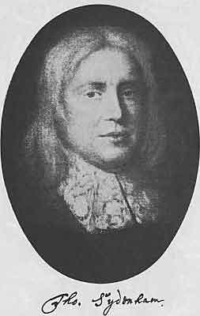
第22章図１ Thomas Sydenham, 1624-1689 シデナム
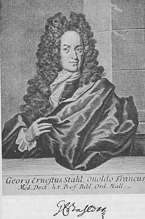
第22章図２ Georg Ernst Stahl, 1660-1734 シュタール
ハラーは先生であるブールハーフェについて「当代全ヨーロッパの師表」と書いた。実際ブールハーフェは18世紀初頭のすべての若い医師および医学生にとって他に例が無いほどの引力を持っていた。彼がいたライデン大学はこれによって医学の中心となった。今日でもライデンに行くとあらゆる街角で彼の跡を見ることができる。彼の墓は聖ペーテル教会にあり旧病院の近くには記念碑がある。ライデンで医学会が開かれるとこの記念碑は花で覆われる。医学部がある大きく立派な建物はブールハーフェ地区と呼ばれている。彼にたいする尊崇が生きている。
彼のこのように特別な名声の理由は何であろうか？ 著作だけからは説明できない。彼はほんの少ししか書いていない。どちらかと言うと短い２冊の本だけであった。「医学指針」（1708）と「診断診療箴言」（1709）であった。これらの他に少数の植物および化学の論文、幾つかの臨床病歴、かなりの数の大学における講演である。もちろん、今でも彼の思慮深い講演を読むのは大きな楽しみである。彼が書いた病歴は名作である。上に述べた２冊の本は簡潔さ、明瞭さ、穏健さにおいて同時代の多くの冗長で曖昧な本に比べると極めて気持ちが良い。著者の令名に支持されて版を重ねトルコ語をはじめとして多くの言語に翻訳された。生きているときからブールハーフェは広く知られていたことが判る。
彼の著作を読むと革命的なものは存在しない。彼は何の発見もしておらず医学に何も新しい考えを与えなかった。彼は折衷主義者でどの学派にも所属しなかった。しかし、これこそ彼に力を与えたものであった。創始者が誰であろうと良いものを採用した。彼は医学における解剖学と生理学の重要性を堅く辛抱強く信じていた。物理学が医学へ重要な貢献をすることを知っていて、したがってイアトロ機械主義の傾向をもっていた。シルヴィウスの影響が残っているライデンで彼が化学の価値を認めていたことは驚くことではない。しかし当時の医師たちの間でシデナムをもっとも重要視していた。「賞賛せずにシデナムの名をあげるとしたら恥ずかしい」とある演説で述べた。
現代の医学はこれらの要素から作られている。しかしここに挙げた科学は18世紀の初めにはまだ初歩的の状態だったことを考えるとこれらの要素を総合しようとする試みは軽率であり人工的な体系を形成するに過ぎなかった。従って賢いことにブールハーフェは境界をもつ体系の作成を放棄した。彼はすべての病的現象を説明しようとは試みなかった。患者と治療すなわち臨床に比べて理論に興味を持たなかった。
ブールハーフェ成功の秘密は彼の科学的著作によるのではなく彼の個性すなわち医師および臨床教師としての魅力ある個性によるものである。親しく接触した人、ベッドサイドで彼を見て話を聴いた人は誰でもその影響を振り切ることができず神聖な火は一生のあいだ燃え続けて理想的な医師像を目の前に持つことになったであろう。この点でブールハーフェの弟子たちは一致していた。感謝し、深く傾倒し続け、心優しくて何時でも助けてくれようとしている、と語った。ハラーは次のように書いた。「学識については、たぶん多くはないかも知れないが同等の人はいる。しかし真に神のような性質、すべての人にたいする親切心、嫉妬深い人たちや競争相手にたいする慈悲心、において彼とならぶ人はいない。他人をさげすむ言葉を彼が発しているのを聞いたものはいない。」と。
ブールハーフェは貧しい田舎牧師の息子であり聖職に進むはずであった。ライデン大学で最初は神学部の学生となった。しかし間もなく数学、化学、植物学、医学に興味を持ち医学部に移る決心をした。この計画変更が知られることを好まないので他の大学に移ってハルデルウェイク大学で医学の学位を得た。次いでライデンに戻り医師として落ち着いた。最初には多くの患者が得られなかったので広範な学問とくに数学を学ぶ十分な時間を持った。1701年に彼は理論医学の講師となり成功して２年後にはフローニンゲン大学に招聘された。しかしライデンは彼を失うことを好まなかった。大学は彼のサラリーを上げて次の空席を約束した。この頃も教授は長命でブールハーフェは昇進に６年待たなければならなかった。1709年にホットンが死亡したときにブールハーフェは植物学の教授となり植物園長も兼ねることになった。「どんな探険家もこの新しい教授のように知らない国に行くことはなかったろう。彼は他の知識分野では有能かも知れないが植物については何も知らなかった。しかし1709年の冬はひどく寒かったが熱心に仕事をして1710年には先任者の誰よりも優れた植物リストを刊行した」とハラーは書いた。ハラーはブールハーフェの植物園への貢献を繰り返し述べている。毎朝７時に学生たちに植物を見せて「毎日ふつう数百の植物を示しメモさえ見ないで補足的な名前を与えた。」ライデンの植物園は世界最良のものとなった。同じ立場の人たちと自由に交流して広範囲に遠くからも種子を入手していたからであった。「この場所の最良の点はすべての植物が目的別に配置されていて外来者でもブールハーフェのリストを手にしていると番号に従い名札を見てすべての植物を知ることができる」とハラーは書いている。
ブールハーフェは冬には化学の講義を行った。この学問における彼の重要性は多くのばあい過大評価されていた。実際、関連したすべての領域で彼は圧倒的な能力を持っていたと誇張して書かれる傾向がある。彼が優秀な実験家であり教師としての優秀な能力は実験室でも講堂でも他人にひけを取らなかったことは疑いもない。しかしこの領域で彼は独創的な研究をしておらず以前の人たち特にボイルの足跡に従っていた。
ブールハーフェに比肩するものが他にいないのは臨床教育の領域であった。1714年にビドローの死後になって臨床教育を行うようになった。病人のベッドサイドで彼の個性はすべて示されていた。彼はイアトロ機械主義の単なる理論家であるだけではなく言葉の深い意味における偉大な医師であった。生まれつきの診断者として鋭い洞察をもって患者に接し医薬や正しい助言だけでなく親しみを患者に与え講義や臨床教示にさいして厳しい論理を聴講者と共有した。フラウヴェン教会の裏にある病院には２部屋があり６床ずつのベッドがそれぞれにあって臨床教育のための男子病棟と女子病棟であった。ヨーロッパの医師の半分はこの12床で教育された！ 毎日ブールハーフェはベッドからベッドに進んで学生たちに説明した。我々の現代の病院におけると同様に年長の学生は実際の説明をするよう要求された。もしもブールハーフェが行った臨床教示の豊富な材料を知りたかったら「医学指針」と「診断診療箴言」を読むとよい。それぞれ２人の弟子スヴィーテンおよびハラーによって注釈を付けて編集されたものであり注釈は主としてブールハーフェ本人の観察を２人が記録したものであった。ハラーについては次章で述べる。スヴィーテンについては後の章でウィーンにおける医療改革者として述べるがスヴィーテンは有能な速記者でもあった。彼のノートは現存して読解されていてブールハーフェがどのように臨床教育を行ったか生き生きと示している。
新しい臨床教育方法の起源はパドヴァに遡るものであるが現代の臨床教育方法の揺りかごはライデンでありブールハーフェの病院であった。病人を診察する健全な方法は最初にここで行われた。まず既往症（臨床歴）を完全に記録する。ついで患者の現症を確かめる。検査はまだ解剖学的ではなかった。医師は臓器を調べることはなく病気を調べた。続いて診断と予後が決定され治療過程が工夫された。ライデンで蒔かれた種は多くの場所で発芽した。
ブールハーフェの時代の学生たちはこの有名な臨床家から学ぶ利点だけでなく優れた解剖学者ワイスからも学ぶことができた。彼は自分の名前をアルビヌスとラテン語化していた。
年を追ってブールハーフェは臨床で忙しくなった。ハラーは書いている。「10時から12時にかけて彼の診察室は診察を希望する人たちで一杯になり、ついには患者を往診することが出来なくなった。朝の診察が規定時間を過ぎてしまってしばしば昼食を取る前に講義時間になった。３時になると新しい患者たちが到着した。１日の残った時間は高貴な患者に邪魔されないときには詳細な文通および長期にわたって行ってきたギリシアの医師たちの著作についての研究に費やされた」と。ハラーの日記の別の所で読むことができる。「ブールハーフェの名前は広く知られるようになり、あらゆる所の学生たちは彼に習うことを希望し高貴な人たちで診察を希望しないものはいなかった。ハーグの大使であるムシュー・フェネロンが講堂から出てくる彼を捕まえようとしているのを私自身が見た。我々学生の数は約120人でそのうち半分は外国から来ていた。学生がこのように多く出席している医学部教授の講義室があるかどうか私は知らない。礼金はあらゆる方向から流れ込み彼の唯一の娘はかなりの財産を相続しただろう。私が到着する少し前の1725年に彼は激しい関節の炎症で苦しみこれによって殆ど眠ることができなかった。」と。
痛風発作は激しくしかも回数が多くなったのでブールハーフェは業務を減らさなければならず1729年には化学と植物学の教授を辞任した。しかし臨床は70歳になった1738年まで続けここで彼は苦しみから解放された。
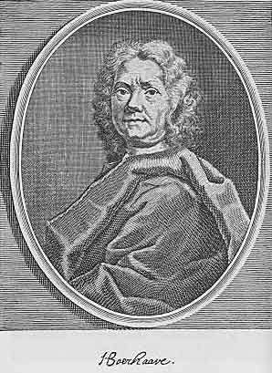
第23章図１ Hermann Boerhaave, 1668-1738 ブールハーフェ
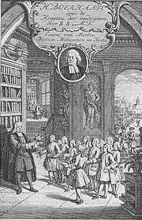
第23章図２ Boerhaave lecturing on Botany 植物学の講義をしているブールハーフェ
アルプスの詩人としてハラーはドイツ文学において卓越した地位を占める。彼の「スイス詩の試み」は匿名で1732年に出版されたもので明らかに自然にたいして強い感情を持った抒情詩人の著作であった。強い情熱を伴うものではあったがこの当時の他の詩人に多い誇張は避けていた。ベルンに生まれアルプス山脈の傍で育ち山の中を遠く広く歩き回りその荘厳さによって深く感動していた。アルプス山脈について歌いアルプス住民について書き彼らの単純な生き方は町の住民にとって警告であると宣言した。神を自然の中に見つけて書いた。
神の存在は疑いが無い、自然は叫んでいる、
全世界は神の手掛かりを示している。
全世界は神の手掛かりを示している。
彼は神が創造した足跡を見つけた。自然における大規模な創造物たとえばアルプス山脈だけではなく彼が徹底的に調べた人間の心臓だけではなかった。彼は植物学者だったので植物の雄しべのような自然の小規模な創造物も認めた。解剖学者であり生理学者であったので例えば筋収縮を見た。自然を詩人の目で見るとともに顕微鏡を通して熟視した。同じような倫理感で両方に生命を吹き込んだ。
若いときにハラーは詩人であったが全生涯にわたって科学者であった。同時代人は彼を人知のすべての領域に興味を持つ万能の学者とみなした。彼はゲスナーやショイヒツァーのように、古い定義による最後の自然誌研究家の１人であった。生物界、非生物界の全領域を含んで観察する研究者の１人であり、さらに科学で得たものを農業、牧畜、医学、技術の実際面に利用することを試みる学者のうちの１人であった。
ハラーは早熟な少年であった。非常に若いときに父親が死亡し彼は虚弱な体質で生涯にわたり病気で悩まされた。元気な同年配の仲間とは違って初めから独自の路を選び知識欲を満足させ辞典や文法書を編集したり２千人以上の伝記を書くような大事業に専念した。彼の百科辞典的知識はすでに明らかであった。学校では極めて野心家であった。「彼は学校友達よりも勤勉で有能であると認められなかったら大きな不満であった。」親戚は彼の好みが神学であると考えて神学を勉強させようとしたが彼は医師になる強い希望を持っていて15歳のときにこの目的を持ってチュービンゲン大学の学生になった。
この大学では深遠な勉強をする機会が得られなかった、と彼は言った。たしかに有能な解剖学者デュヴェルネが教えてはいたが解剖のための人体は得られず学生はイヌの死体で我慢しなければならなかった。植物採集旅行はあったが学生たちは「資料は得られず、ふつう酔っぱらって」家に帰った。臨床教育は問題外であった。しかし16月の滞在はハラーに役だった。楽しい学生生活、勝手気ままな友達、および「決して取り澄ましてはいない」チュービンゲンの可愛い女の子たちは若いハラーと世の中の毎日の生活の間の垣根を取り去った。これまで彼は水から上がった魚であった。これ以後はほどほどに孤独であり、ほどほどに内省的となった。
しかしチュービンゲンは真面目に勉強するところではなかったので1725年春にハラーはライデンに移った。ここには彼の望むものがあった。解剖室には人体があり植物園があり臨床があった。何よりもハラーの将来に決定的な影響を及ぼしたアルビヌスとブールハーフェがいた。彼を科学者にする衝動はライデンにおいて得られた。最大の熱心さで医学訓練を受け解剖学で学位論文を書いて早くも1727年には医学博士の学位を取得した。
次いで医学研究のために２つの首都ロンドンとパリを訪れた。病院や博物館を訪れ手術や病理解剖に出席した。解剖学にたいする興味はますます大きくなった。パリではウィンスローが極めて熟練した解剖学者であることを知り臓器を周囲から切り離さないでその場で研究するウィンスローの方法をハラーはその後に採用することになった。さらに訓練を受けるためにバーゼル大学に行った。ここでは若い医師たちの極めて刺激的なサークルと接触するとともにヨハン・ベルヌーイのもとで熱心に数学を学んだ。
バーゼル滞在で重要なことは植物学に専念し始めたことであった。この前にも医学の補助になる科学の１つとして植物学を勉強していたが植物を保存せず植物資料箱を持っていなかった。今やバーゼルではスイスの植物相の豊富なことと植物に熱心な友達に囲まれていたので植物を徹底的に研究し始めた。採集旅行を重ね選り分け試料を家へ持ち帰り分類し記載した。常に完全さを要求し遠大な計画を実施する彼の性格から考えると、ふつうの植物を楽しむこの初期の段階からスイスの植物相についての大著作を想定していたに違いない。
従って植物が主目的であったろうが1728年夏にハラーは友人ゲスナーと一緒にアルプスを旅行した。この旅行の最高の成果は詩「アルプス山脈」であった。
解剖学の研究を行ったバーゼルでの数学期の後で1729年春にハラーはベルンに戻り医師として落ち着いた。スイス首都の狭い環境で極めて不満だったことは容易に理解できる。５年半のあいだ広い世界で種々な経験を積んでいた。研究の中心であるライデン、ロンドン、パリ、バーゼルに住み独自の研究に専念する科学者になっていた。今や21歳となりこのような創造的な活動を続ける強烈な望みを持っていたが四方八方は壁に塞がれていた。町の人たちは彼の熱意に同情して笑うだけであった。子供の時と同じように今度も孤立することになった。
それでも努力を続けた。科学の聖なる炎がひとたび燃えると反対によって抑えることは出来ずむしろ熱意を刺激する。毎年ハラーはアルプス山脈への旅行を行い毎回大量の試料を持って帰った。さらに時おり病院から病理解剖を行う許可を得ることに成功した。量は多くなかったが科学の目的のために善用することができた。ブールハーフェの「医学指針」に戻りこの重要な著作に詳細な注釈をつけた。しかし、これは骨が折れる事業で研究の主な流れから離れたよどみともいうべきものなので刺激的な反応がなかった。落胆はじめた1736年春にその頃に創立されたばかりのゲッチンゲン大学に解剖学、外科学、植物学の教授として招聘された。
今日のどの様な国務大臣がこのように重要な地位に外国から１冊の詩集と幾つかの小さなモノグラフを書いただけの28歳ほどの開業医を敢えて招聘するであろうか？ しかし当時は候補者は著書の重さや量ではなく本質的な価値で評価された。当局は徹底的な調査を行った。ハラーが書いた量は至って少なかったが就任論文は当時の解剖学における誤りを論破したもので、これは彼の知的な度合いを示すものであった。英国王でハノーヴァー選帝侯のジョージ２世の大臣であったミュンヒハウゼンはこの新しい大学の総長任命にあたって幸福な選択を行った。ハラーそのものがゲッチンゲンの発展であったと言っても言い過ぎでは無いだろう。他方ハラーはゲッチンゲンにおいて能力を完全に発揮する場所を得ることができた。
大きな役割が彼を待っていた。教授会で「１番目の位置を占める」立場として真の近代の大学を創る任務があった。尊敬ばかりを要求して発達しないうちに改革の息の根を止めるような古い慣習がこの大学には無かった。医学部教授と国の関係は中世が終わるとともに至る所で変化が起きていた。中世の医学部は医業に関係するすべての問題で国にたいして専門勧告者であり常に公式の意見を求められていた。既に見たように学説を公表して行き渡させるだけでなく学説の元来の純粋さを保つことであった。新しい学説および新しい治療の改良についての意見はこの点で強力な武器であった。学部は同様にして信頼する権利が誰にあるかの決定で最高であり多くの所で医師だけでなく薬剤師まですなわち医療の全領域を監督していた。従ってその権力は計り知れないものであった。
ルネッサンスのあいだに新しい科学は進歩したが多くの大学は進歩から頑固に超然としていた。進歩は荒れ果てた浜辺に大学を置き去った。理論的にも実際的にも絶対主義の立場をとる幾つかの政府は医学評議会や委員会のような医学管理機関を作った。これらが医学について国に勧告するようになった。これらが認可または不認可の権利を持ち監督の権利を持った。新しい評議会や委員会は教授会から多くの権利を奪った。その結果、教授会はアキレスのようにテント内で拗ねていて目覚めた世界の忙しい生活から離れて行った。しかしライデン大学を先頭として幾つかの大学は熱心に医学研究を行うようになった。段々と18世紀およびさらにもっと19世紀に大学は単に教育の場所であるだけでなく研究の中心になった。
ゲッチンゲン大学はこのような新しい研究の焦点の１つとして計画された。ハラーにとってライデン大学は手本であった。ゲッチンゲンはドイツにおけるライデン大学になることになった。研究には補助的なものが必要であり、これらが準備された。そのうちで図書館は間もなく世界で有名になった。その他に解剖室、植物園、外来診療所などであった。研究のために成果をあげるためには新しく得られたデータを公表し他で研究している所とニュースを交換するための手段が必要であった。1739年に「ゲッチンゲン学術新聞」が創立されハラーは25年のあいだ編集し、論文、批評、その他の12,000編を投稿した。1751年「王立科学会」が創設されハラーを会長として最も高く評価されたアカデミーとなり出版物には彼の価値ある論文が掲載された。
このように考え得る最適の状態で研究することが出来てこの機会を完全に使い、これまで例が無い包括的な科学活動を行った。まず最初に植物学の研究を続けた。スイスの植物相についての研究は1742年に刊行された。これはリンネの体系とは違う独自の方法で分類されていた。また、かなりの数の解剖学研究を刊行した。これらのうちで最も価値があるのは血管解剖学のアトラスであり美しい銅版画であった。1747年にアルビヌスは骨と筋の図を含む大きな２折版を刊行した。この図版はこれまで出版されたどれよりも注意深いもので解剖学図版の歴史における道標である。血管系についてのハラーの図版はアルビヌスの図版に相当するものであった。真の芸術感覚を学ぶことは今日でも楽しいことである。現代の写真版は１つの試料を再現できるだけであるが銅版画製作者の金属彫刻刀は多数の試料に共通なものを示し典型的なものを明らかにし芸術的手腕によって本質的なものを明らかにすることができた。このようにして大きな教育的価値を持つ挿絵が得られた。ハラーは血管内注入技術の達人であり、これによって血管解剖学においてはっきりしていなかった多くの問題を解明することができた。たとえば複雑な門脈系を明らかにした。その結果ハラーの三叉のように名が残っている。
しかし、ハラーの興味は段々と「生きた解剖学」すなわち生理学に向かった。器官はどのように働いているか、どのような機能に役だっているか？ 彼は「体系」を作る気持ちは持たなかった。この時代の傾向は実際的であり堅実であった。人々は17世紀における空論に疲れていた。正確な実験によって個々の問題を解決することを望んでいた。呼吸の力学についての議論が行われていた。呼気はどのような力で決定されるのだろうか？ イェーナ大学教授ハンベルガーは胸腔内空気の圧力によると主張した。ハラーはこの見解を受け入れなかった。水中で動物の胸腔を開いても泡が出ないことから肺と胸壁の間の胸腔に空気が無いことは明らかであった。きわめて単純な実験で重要な問題を解決することはまだ可能であったし今でも可能である。
この実験は機械的でありハラーが行った多くの実験も同様に機械的なものであった。しかし彼はイアトロ機械主義者ではなかった。ラ・メトリが彼をいらだたせるために「人間機械論」に献辞を書いたときに彼は怒った。ハラーの考えでは生命には独自の法則があり、これは非生物の自然を支配するものとは異なっていた。しかしこの意見を自明の理とすることとはせずに、実験によって証明されるべきこととした。長年にわたって彼はこの方面の研究を行った。同国人の学生の１人がこの仕事で彼の助手となった。ツィンメルマンという男で後にハノーヴァー選帝侯の侍医になった。彼はフリードリッヒ大王の最後の病気を看取り著書「孤独について」は我々の祖母たちに涙を流させた。
生命独自の法則についての研究の出発点は筋運動の問題であった。ハラーは被刺激性と感覚性は動物生命の基本的な現象であると考えるようになっていた。被刺激性の概念の定式化に関して彼は英国人グリソン（＊グリソン鞘で名が残っている）に先を越されていた。グリソンは被刺激性を動物体が環境の影響に反応する一般的傾向とみなしていた。ハラーの定義はもっと精密なものであった。彼にとって被刺激性とはある種の器官とくに筋が持つ刺激に反応する特性であった。すなわち筋の場合には機械的、熱的、化学的、電気的、の影響にたいして収縮によって反応することであった。
被刺激性についての見方はそのすぐ後の考え方に大きく影響することになった。一方ではモンペリエ医学校に見られたように生気論に向かった。1752年にボルドゥーは腺の機能もまた生気的な過程であると主張した。彼は言った。腺はフィルター以上のものでありレトルト以上のものである。腺が血液からある物質を抜き取って分泌物に作り上げるのは腺に特有のエネルギーによって行われる。感覚とか活発な運動は生命の基礎的な現象である、と。ボルドゥーの弟子バルテスはさらに第３の要素の存在を仮定して「現状維持力」と呼んだ。これは身体のすべての部分がそれぞれの形、位置、大きさ、などを保持する能力を意味し障碍のときの回復力も含んでいた。この能力は生物学者ブルーメンバッハがゲッチンゲンで行った淡水ポリプの研究で示された。いろいろな生物はそれぞれに特異的な構造のデザインに従って「形成推進力」が働いて発生するとこの研究者は考えた。形成推進力の他に基本的な生理現象として被刺激性、感受性、収縮性があるとした。これらの学説を広めることによってブルーメンバッハはドイツ生気論者の指導者になった。
このようにハラーは生物学の学説を長期間にわたって豊かにした。しかし臨床医学においても彼の学説はスコットランドに始まった流れに特に豊かな実りを産んだ。エディンバラの医学部はライデンによって大きく影響されていた。ブールハーフェの弟子の１人モンローはこのスコットランドの首都で、解剖学者、外科医、産科医、として重要な役割を果たした。同じように重要だったのは神経系に主な重点を置いた病理学説の創設者カレンであった。すべての器官は神経エネルギーによって支配されていると彼は言った。神経エネルギーは器官にトーヌス（緊張）を与え、強すぎると痙攣になり弱いときにはアトニー（無緊張）になる、とした。このように最終的にすべての病気は「神経原理」の病的な傷害であって治療は主としてこの事実の認識によって導かれるべきとした。
一部は大きく違うが多くの点で似ていたのは同じくスコットランド人のブラウンが創設した「ブラウン主義」であった。ブラウンは非常に驚くべき人間で天才であるとともに悪党であった。牧師になり次に学校教師になってから医師になった。大酒飲みで大きな借金を背負い牢獄に入れられた。それにも拘わらず1780年刊行の「医学原論」は人気を博した。彼はカレンの学説から出発した。彼はカレンの家に家庭教師として長いあいだ暮らしていた。しかし上にも述べたように彼はいろいろの点でパトロンのカレンとは違っていた。ブラウン学説によると病気の原因となる決定的な因子は神経エネルギーの過剰または不足ではなく神経エネルギーを動かす刺激であった。疑いも無く神経と筋は被刺激性の性質を持っていて、これがあるので生気的な発現が起きる。しかし、これらの応答は刺激によってのみ起きる。刺激は外部すなわち環境から起きる。しかし、これは生体内で起きることがある。感動はこのような刺激の１つである。我々の生命は刺激によって決定され刺激によってのみ保たれる。
被刺激性によって生体は刺激に反応する。もしも刺激が正常の範囲で作用するならば生体の反応は正常であろう。その時には個人は健康であろう。これに対して、毒、感染物質、高温、激しい感情、のようなあまりも強い刺激は必ず病気を引き起こす。健康な生活を保つのにある最低な強さが必要な刺激が異常に低いときには病気になる。これが出血や温度が低すぎると病気になる理由である。このようにして一般に病気を２分することができる。プラスの病気とマイナスの病気、すなわち刺激が不当に強いのと不当に弱いのとであり亢進状態と無力状態である。病気は局所的に刺激が多すぎるか少なすぎることによって起き、次いで全身的になる。場合によっては最初に病気が全身に起き、次いで主として局所に現れるようになる。このどちらの型かによって、治療は主として局所的、また主として全身的なものになる。瀉血によって原因に対抗し過剰の刺激を減らすか、どれかの種類の刺激剤によって不当に弱い刺激を強めるか、どちらかをすべきである。
ブラウンの教えは多くの人たちの心を強く魅了した。近代生理学の基本概念はすでに作られていたので、ここにはもはや物理と化学の問題は無く体液病理か固体病理かの話題は無かった。ブラウン学説は病気の真の生物学的学説であり、さらに臨床にたいして価値のある指示を与えた。現代の見地において重要な部分を占めている刺激の概念を明白にし詳しく述べ病理学にとって実り多いものにしたのは疑いなくブラウンの大きな功績であった。彼は革新者であり当時の生理学は初歩段階だったので的を飛び越したり刺激にたいする反応の重要性を無視する傾向があったのは無理もない。
かなりの期間、ブラウン学説はヨーロッパのすべての国とくにドイツにおいて熱狂的に受け入れられた。不思議なことにブラウン学説をドイツに広げたのは盗作者によるものであった。ゲッチンゲンの医師ギルタネルはイギリスにいてこの新しい流れを知り1790年にフランスの雑誌に論文「生物界における生命原則とみなされる刺激性についての２論文」を発表した。彼はこの論文で２年前に死去していたブラウンの名前を挙げずにその学説を紹介した。しかし間もなくブラウンの著作は一般に知られるようになった。ロシア女帝エカチェリナ２世の侍医であったヴァイカルトがドイツに帰ってブラウンの使徒になった。彼は1795年にブラウンの「医学綱要」を飜訳し、さらに多くの原著論文を書いてその中で熱心にブラウン主義を支持して多数の信者を得た。ドイツにおけるロマン主義運動は非常に好適な土壌をブラウン学説に提供した。
ここでまたハラーに戻ろう。ゲッチンゲンにおいて生理学実験に忙しくしていたことまでで彼から離れていた。彼は完璧主義者だったので基礎的に重要な解決であっても部分的なことでは満足できず、全力を尽くして生理学の原理について全般的な言明をするまで休むことができなかった。1747年に「生理学初歩」が出版された。これはすべての生理学教科書の最初のものであった。まだ彼は満足しなかった。この本は学生および医師のための概説に過ぎなかった。生理学の種々な問題を詳しく論ずるのにこの本の大きさは制限されていた。しかし詳細な議論が無くしてはその後の研究の基礎を置くことはできなかった。ハラーは従ってこの問題についての第２の著書として「人体生理学原論」を書いた。これは８巻からなる厚い本で1757年から1766年にかけて刊行された。この本では生理学の総ての領域が詳細に取り扱われている。先人の観点が古代まで批判的に説明され最後は自分の研究についての記載で終わっている。これこそ真の記念碑的な仕事で生理学だけでなく解剖学や発生学も取り扱われている。理論医学も取り扱われていて病理学についての経験が正常の生命過程へ絶えず新鮮な光を注いでいると著者は考えていたからである。ほぼ２世紀も経った今日でも医学のどれかの問題の発展史についての情報を必要とする人たちにとってハラーの偉大な本は価値の高い宝庫である。
「人体生理学原論」の刊行はハラーがゲッチンゲンを去るまで行われなかった。突然1753年にハラーはこれまで大きく成功して占めていた地位を辞してベルンの重要でないスイス国の職を受け入れた。科学の世界はびっくりしたが彼には理由があった。過労、不健康、同僚との口論、子供たちの将来への不安、多分それに加えて外国に住んでいるスイス住民を早かれ遅かれ襲うホームシックが故郷に戻らせる動機であった。ゲッチンゲンにおける年々の精神的な緊張は膨大なものであった。この緊張を減らすのは大学に留まっている限り可能でなかった。新しい重荷は絶えず彼に覆い被さっていった。緊張を減らす方法は１つしかなかった。彼がとった方法だけであった。
それでハラーは再び故郷にいることになった。17年前に無名の若い医師として出発したが世界的に令名の高い科学者として戻って来た。この間に彼は変化したがベルンも同じように変化した。ベルンは政治には興味を持ったが科学の進歩には殆ど興味を持たなかった。しかしハラーはすでに１人では無かった。ゲッチンゲン・アカデミーの総裁に留任していた。他の科学者たちと活発に文通した。受け取った手紙は現存し何巻にもなってベルン図書館に保存されている。有名な学者たちが表敬訪問せずにスイスを通過することはなかった。皇帝レオポルド２世はハラーが死去するすぐ前に訪ねた。
彼の仕事は休み無く進行した。ゲッチンゲンで得られていた設備が無いことは感じられたが大規模な個人図書館がありまだ処理していない大量のノートがあった。膨大な「人体生理学原論」はこのようにして書かれた。植物学、解剖学、外科学、臨床医学の膨大な批評的文献も書いた。古典時代の医師たちの著作のあるものを編集し刊行した。ハラーはまた植物学研究を再開しこの問題についての以前の著作を拡張版として再出版した。
1758年から1764年のあいだハラーはエイグルにおけるベルン製塩所の在住マネージャーであった。そこは彼自身の王国であり、ここで研究を行い賢く治めた。同じ頃ジュネーブ湖の反対側に近いフェルネー（フランス領）に同じようにヨーロッパの注目を集めていた人物が住んでいた。ヴォルテールであった。ヴォルテールとハラーの２人は啓蒙思潮の代表であったが、まったく逆であった。ヴォルテールは無神論者、嘲笑者、革命家で、不正に不寛容な男であった。ハラーはプロテスタントで敬虔主義の傾向がありユーモアのセンスが全く無く超保守主義であった。権威にたいするどんな種類の抵抗も考えただけで髪の毛は逆立った。彼はルソーを全く嫌っていた。フランス革命のときまで生きていたら、あの大きな運動によって恐怖に満たされたであろうが、この苦悩は避けることができた。ヴォルテールにとって哲学と科学は１つのもので有名な「百科全書」はその具体的な表現であった。ハラーはドイツやオランダの科学者の多くと同じようにバロック時代の（宗教と科学の）断裂を持ち続けた。彼は合理主義者として思考し熱心なキリスト者として信仰した。
噂話によると海賊がある日イギリスの船を襲ったときに略奪品の中にハラー当ての本が入った箱を見つけた。この箱の記載を見て海賊船長は次の港に急行して転送したとのことであった。彼はハラー氏のように有名な学者から強奪するのに耐えられなかったからであった。
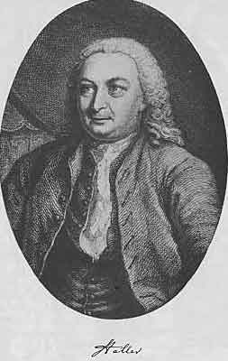
第24章図１ Albrecht Haller, 1708-1777 ハラー
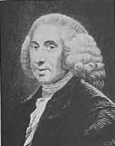
第24章図２ William Cullen, 1710-1790 カレン
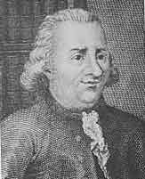
第24章図３ John Brown, 1735-1788 ブラウン
ウィーン大学はプラハ大学（＊1348年設立）ほど古くはないがドイツの大学としては２番目に古く1635年に設立され18世紀には由緒ある過去を持っていた。しかし医学部の歴史は名誉あるものとは言えなかった。医学の発展において重要な役割を果たしたことがなかった。ウィーン医学部の教授は意固地に古い方法にこだわっていた。ウィーンにおける解剖学の教育は憐れなものであった。植物園も臨床も化学実験室も無かった。教授の数は少なく給料は悪かった。教育施設が不適当なことを教授たちが知らないわけではなかったが改善する権力がなかった。
1740年にマリア・テレジアが帝位に上った。彼女は直ぐにウィーン大学がその名前の価値を持ち続けるには完全な改良を必要とすることを認識した。最初の問題はその仕事に適した人物を見つけることであった。
女帝の妹マリア・アンナはブリュッセルで妊娠が進んで病んでいて生命が危険であった。マリア・テレジアは自分の主治医エンゲルスをブリュッセルに送り彼は当地の医師たちを呼んで診断してもらった。大公妃は死産し状態はますます悪くなった。最後の希望としてライデンで高名なファン・スウィーテンが呼ばれた。彼はマリア・アンナの生命を助けることは出来なかったが、自信を持ち適切な彼の行動に女帝は信頼を感じウィーンに来て彼女の宮廷医になるように招待した。彼女は次のように親しみをこめた手紙を書いた。
「貴方の貢献に心から感謝し貴方の行為に私が全く満足していると伝えるのが私の任務であると考えます。エンゲルスの我が儘をがまんし彼の機嫌を取ったという事実によって専門における貴方の能力とは別に貴方の性格を尊敬し私の信頼と友情を貴方に注ぎます。君主はこのような人たちに囲まれていることが必要であり、もしも見つけることができたらこれ以上に幸福なことはありません。貴方がこの手紙をあのうるさい人が私の貴方についての評価を邪魔しないことの保証として受け入れることを希望します。私の行為によって我々が地球上で知っている唯一の楽しみであり貴方が喜んでいる快い静けさを貴方が失うとしたら私にとって非常に大きな悩みでしょう。私が最も恐れているのは貴方の奥さんの考えというか偏見というべきものでしょう。奥さんは貴方ほど哲学的ではなく感情的であり従って第一印象で影響され易いからです。もう１回保証します。貴方を不愉快にするよりは私の自分の利益を犠牲にします。」
「遠からず貴方にここでお会いしたいと思うけれど来るか来ないかは最良と思うように完全に貴方に任せ希望しないときには私の要望を拒絶してください。そうなると私にとって悲しいことであるが貴方および貴方の平安を犠牲にするよりは私は痛みを我慢しましょう。貴方にたいして常に同じ気持ちを持って。マリア・テレジア。」
少しのあいだ考えてファン・スウィーテンは招聘を受け入れ1745年夏にウィーンに到着した。女帝が彼から取り上げた「楽しい静けさ」は完全に彼が意思したものではなく彼女が考えたほどそれを手放すことは困難でなかった。ファン・スウィーテンはブールハーフェの弟子の１人で多分もっともお気に入りだったであろう。誰も彼のように先生に献身的ではなかったし先生と楽しく親しみを持った人はなかった。何年も２人は友情をもって近くに住み仕事を行い年齢の差はあったが親密に関連した。ファン・スウィーテンはライデンで診療し大学で非常に素晴らしい講義を行った。
しかし彼はカトリック教徒であってライデンで教授になることはできなかった。彼がブールハーフェの後継者になる可能性は無かった。ブールハーフェが死去したときにファン・スウィーテンは大学を去らなければならなかった。学生たちは反抗したが役に立たなかった。ファン・スウィーテンは学生たちをなだめ法律に従わないわけには行かないと説明した。
実際この後で彼は「静けさ」または「平安」を持った。個人診療に専念しブールハーフェの「箴言」についての詳しい注釈書を書き始めた。先生の伝統はしかるべく保存されなければならないし豊かな果実をつけるべきであった。事実「箴言」は簡潔でぶっきらぼうだったので説明が必要だった。誰かブールハーフェと親しい人がいるとしたらそれはファン・スウィーテンであった。さらに速記がうまかったので臨床教示のあいだに書いた大量のノートを彼は持っていた。
彼はすでに45歳であった。もしもマリア・テレジアの招聘が無かったら後の生涯をオランダの小さな町の一般開業医として過ごしたであろう。歴史は彼をまったく注目せずにブールハーフェの多数の弟子の１人としてしか考えなかったであろう。彼は医師としては特別な能力を持たなかったしハラーのように研究への衝動で鼓舞されてはいなかった。しかし運命は中年の初期になって眠っていた組織能力を完全に展開させることができる地位に彼をつけた。絶対的に信頼していた女帝はすべて彼の自由裁量に任せた。
女帝の主治医としてウィーンに着くとファン・スウィーテンはすぐに帝国首都ウィーンで講義を始めた。大学医学部においてではなく彼がすぐに館長になった宮廷図書館の講演場においてであった。このことについて次のように述べた。「医学についての２年コースの講義を行う。１年目は人体機能について生理学に専念する。すなわち私が持っている解剖標本を使って聴衆たちが我々の身体の構造に習熟するようにする。この標本はなぐさみで作りかなりの費用をかけたもので元来は自分自身および子供たちの教育のためのものであり公的な教育に使うことができるとは考えていなかった。ウィーンに来てから学生たちの役に立つような幾らかの追加をしてこの小さな収集物を大きくした。」
「２年目のコースでは病理学すなわち病気の学問、その原因、性質、症状、およびそれに適した治療法と適用する最良の方法を論ずる。ここで薬物学に進む。これは治療法の歴史、投与量、製剤法、などである。」
「学生がこれをすべて理解し終わったら次は病気の本質を詳細に説明することになる。この際には種々の病気の取り扱いが古代からどのように進歩してきたかを示すためにこれについて書いた最良の著者について述べ、不明瞭な部分をたぶん明らかにするだろう」と。
これらの講義がこれまでウィーンで行われた医学教育より大きく進歩したに違いないことは疑いも無い。しかし為さなければならないことが多く残っていた。教授会および医学教育の全システムは基礎から再構築することが必要だった。ウィーン滞在が４年になる前に女帝はファン・スウィーテンにこの目的のための提案を作成するように依頼した。したがって真に新しい学部を作るのが彼の任務となった。この仕事はゲッチンゲンに比べてウィーンではずっと困難であった。重要な特権を持つことに大き特徴があり由緒あり自主的な教授会を改革者は改造しなければならなかったことにウィーンにおける困難があった。ほんの数年前に教授会はその特権を確認するように請願した。この特権を排除せずに改革を成就できないことはすぐに明白になった。
1749年１月にファン・スウィーテンは覚え書きを女帝に提出した。３週間後にこのオランダ人医師の提案を法律とする命令が出された。
改革で最も重要なのは大学が国家権力に服従することであった。これによって教授は教授会によって任命および給料を払われるのではなく君主から払われることになった。教授会の真の長は学部長ではなかった。政府の特別な代表者が長として任命されるからであった。この特別な代表者は試験、学位授与、薬剤師としての開業許可、その他すべての大学のことに最終決定権を持った。すべての試験制度は再構築された。国内で医師として開業するにはウィーンまたはその他の地方大学で学位を得なければならなかった。しかしウィーンにおける学位は帝国世襲の全領域で開業が許可されたが地方大学の学位はその地方だけに有効であった。学位を得るための費用はこれまでは莫大なものであったが大きく軽減された。
同じ女帝命令でファン・スウィーテンは学部の指導者および総裁に任命された。
教授会はこれまでの特権と権力をすべて失ったので憤慨した。外国人のファン・スウィーテンによって地位を奪われることに反対した。しかし反対は効果が無かった。このオランダ人は改革に必要な強権をもって改革を行った。女帝の命令は単に土地をならしただけでこの命令はその頃の考え方によったものであった。他の国でも絶対主義国家は同じように権力をもって大学を抑え国家を大学教育における最高のものにした。ここで必要なのはこの権力を実際に効率の良い医師の訓練および研究の推進に巧みに利用することであった。これらは大学の新しい任務であった。
新しい教育施設が創られただけではなく、もっと重要なことにこれらを動かす新時代の人たちが集められなければならなかった。植物園と化学実験室が作られ有名なオランダの植物学者ジャカンが責任者になった。解剖学の教育は強調された。それまでの解剖室は貧弱で窓は壊れ冬にも暖房が無かった。解剖の教育には解剖室の他に死体および標本の収集が必要であった。これらは供給された。処刑された罪人の死体だけでなく一部の病院で死亡した患者の死体は解剖学教育に供給された。解剖した標本は主としてオランダで購入された。有能な解剖学者ガッサーが得られた。彼の名前はガッサー神経節（＊三叉神経節）に残っている。ファン・スウィーテンは解剖学講座と外科学講座を分離した。これは賢いことであった。解剖学者は外科手術の経験が無く死体解剖の専門家であることが多かったからであった。ヤウスとレーバーの２人の外科手術専門家が教授に任ぜられた。
次にウィーンは臨床教育の中心として有名になることが重要であった。ライデンの令名が高かったのはこの領域だったからであった。ブールハーフェの弟子でオランダの大学の臨床教育で育った人物を呼ぶ以上に自然なことがあったろうか？ 1754年にファン・スウィーテンの学生仲間であったデ・ハーエンが帝国首都に来た。ライデンの前例に従って12ベッドが臨床教育に取っておかれた。６ベッドは男性用で６ベッドは女性用であった。
やがてヨーロッパに新しい医学センターのできたことが明らかになった。1748年にマリア・テレジアはなぜ多くのオーストリア人学生が外国に行くか教授会に尋ねる必要があるとし、これは大学にとって不名誉であり国にとって不利であると考えたが、今や事態は大きく変化しウィーン大学医学部は外国人学生をますます多く惹きつけるようになった。新しい医科大学が生まれた。古いライデンからの幹はファン・スウィーテンによって育てられ新しい若枝を出した。
この任務におけるファン・スウィーテンの活動はこれまで述べた広範な改革で終わりはしなかった。彼は主宰する医学活動全領域の改革に一身を捧げ、理髪師―外科医、助産婦など、治療に関係するすべての段階の人たちの教育を国の監督のもとで改良するようにした。病院の住み込み医師および地区の医師もまた国によって任命された。さらに衛生管理を厳しくすることによって臣民の福祉を世話するのが絶対主義国家オーストリアの政策の一部になった。
医学関係の仕事だけでなくファン・スウィーテンは他の領域のことでも忙しかった。宮廷図書館の館長であったことは前に述べた。さらに彼は検閲官にもなった。この職はこれまでイエズス会修道士により独占されており彼らはウィーンで全能であった。国家の中に国家があり政府権力に匹敵するものがあってはならないというのがファン・スウィーテンの方針であった。検閲部局からイエズス会修道士を完全に除外することはできなかったが彼らの権力をかなり制限することができた。ウィーン国立図書館には3120編の論文についてファン・スウィーテンが検閲官として書いたノートがありこのうち595編以上は刊行を拒否された。彼は大学の他の学部の改革に関連してイエズス会と衝突したがここでも同様に彼らの権力を制限することができた。
ファン・スウィーテンの毎日についてその当時の記載がある。「彼は５時に起きて６時半に宮廷に行く。８時または９時に家に帰り書斎に入って午後２時まで研究する。次いで正餐を摂りこれは約１時間かかる。そのあと貧しい人々に１時間の無料相談を行い夕方７時まで書斎で研究を行う。７時には宮廷を再び尋ねる。９時には質素な夕食を摂り10時半に就寝する。
「彼はこの日課をかなり守り極めて緊急時以外には変えなかった。彼に会うためにウィーンに来た誰でも翌日には帰ることができた。このように毎日12時間以上も働き暇なときは無く歩いているか馬車を走らせているときにもある種の考えごとをしていた。彼は非常に良い記憶力を持ち何年も後になって古典詩の何百という行を暗誦することができた。母国語のオランダ語の他に、彼はラテン語、ギリシア語、フランス語、ドイツ語、イタリア語、スペイン語、英語を話すことができ、ある程度マジャール（ハンガリー）語の習熟も進捗していた。会話で彼は楽しく愛想が良くあまり多い数ではなかったが親友にはとくにそうであった。公的な任務に関しては厳しかったが不幸な人々には親切であった。貧乏な人たちには気前が良く、診察を求めた人たちに薬を買うための金だけでなく生活するためのかなりの金額を与えて助けた。
「とりわけ彼は有能な医学生にたいして気前よく、彼らの多くは彼の費用で暮らした。」
公的な管理業務で忙しい男が科学研究をする時の無いことは容易に理解できる。ファン・スウィーテンの業務は純粋な科学ではなかった。しかしオランダで始めていたブールハーフェの「箴言」はオーストリアで続け終わらせ刊行されて広く使われる手引きになった。「ライデンで観察された疫病と重要疾患の本質」が死後に刊行された。これはライデンで1727〜1744年に開業していたときの記録でありブールハーフェの精神を反映している。
ウィーンで過ごした27年間にマリア・テレジアとの関係は非常に親しいものであった。死亡した1772年６月18日に彼女はフェルディナンド大公（＊14人の子供のうちの４番目の息子）に書いた。「ファン・スウィーテンの死去によって今日の午後に私が受けた損害は私のすべての喜びを悲しみに変えた。慰められることがないことを認めざるを得ない。彼が危篤であり希望が無いほどの病気でも彼は私の傍にいるように感じていた。彼は死去した、むしろ死のあがきなしに生きるのを終わった。完全に最後まで意識があった。話すことが出来なくなっても手真似をした。‥‥とくに私に関して彼は他の人で置き換えることが出来ない。多くのことで彼に最大の信頼を持っていて私の信頼は常に当然のものであった‥‥」と。
数月たってから彼女は書いた。「ファン・スウィーテンが死去して私はますます寂しく思っている。」毎年、彼の死去の日を覚えていて例えば1778年に書いた。「今日はファン・スウィーテンが死去した信心の日で私にとって彼は特別に取り返しのつかない喪失である。」
我々はウィーン医科大学がどのようにして作られたかを学んだ。その働きを知ろうとしたら長年にわたって臨床の長であり活動の動力であった人間デ・ハーエンに注目しよう。
ファン・スウィーテンと同じようにデ・ハーエンはオランダ人でカトリックでブールハーフェの弟子であった。デ・ハーエンはファン・スウィーテンよりほんの４歳だけ年下であった。しかし彼らの肖像から判るように２人は全く違う型である。ファン・スウィーテンの頭部は自信を持った気品のある男のものである。彼の顔だちの力は命令し無条件に従わせる人のものである。それにもかかわらず彼の表現は静かであり親切であり愛想が良い。二重顎の人は怒りっぽいことは稀である！
デ・ハーエンの顔つきは全く違う。狂信者の冷厳な容貌と厳格な凝視がみられる。この肖像から離れてもデ・ハーエンが著しく難しい性格であることを我々は知っている。彼は友達を作らず同僚に無遠慮、傲慢、気短かであり、刺激性の学説、天然痘予防接種、打診のような革新に激しく反対する野蛮な論争者であった。年をとると彼はますます神秘的な思索を行うようになり呪術や奇跡について書くようになった。それでも彼は疲れを知らない研究者であり偉大な臨床家であった。
一言で言うと歴史におけるデ・ハーエンの意義は臨床方法の開発において輝いていて他に例がない成功であった。これが何を意味するか顧みよう。病院（＊「客をもてなす所」が語源）は中世初期に出現したときに貧乏な人や疲れた旅人のための無料またはそれに近い宿泊所であった。段々とこれらは病人を介護する所になり家で受けられないような心遣いをキリスト教の慈善の動機によって病人が受けられるようになった。次いで中世の終わり頃になって病院とくに地域が維持する病院は医療を行うようになった。しかしこのようになっても公式に病院医師はその時間のすべてまたは大部分を病院患者に専念するようにはなっていなかった。彼は（大部分の例で）貧乏な人たちの医療を行う町の医師であり給料を少し追加して病院患者の診療も任せられていた。最初は16世紀にパドヴァで17世紀にはライデンで病院は公式に臨床教育および教示のために使われるようになったがそのときでも研究の中心にはならなかった。この時代の病理学文献は殆どすべて私的な医療における観察に基づいていた。
病院はゆっくりと医学研究の中心に変わった。家庭環境から離れ医師が毎日毎時観察しすべての排泄物が検査のために保存され病院患者は病気の研究に理想的な対象であるとゆっくりと認められた。シデナムの頃から病理学的観察は特定の病気の研究に向けられており病院はそのような研究に最適な場所であった。病院患者について研究できるのは病理学だけでなく治療方法が成功か失敗かの研究であった。病人が家にいると何を食べ何の薬を摂り医師の指示にどのていど従ったか正確に知ることが出来なかった。これに対し病院で患者は絶えず確かめられた。
ブールハーフェの臨床は方法論的にこの方向に進んでいたが控えめな始まりに過ぎなかった。デ・ハーエンはウィーン大学臨床でこの方向にもっと大きく進んだ。デ・ハーエンの著作には1758年に刊行された18巻からなる「実際の病院における医療方法」があり、これはすべて臨床の年報、病歴、および臨床講義からなっていた。病例数においても詳細なことにおいてもこれまで例が無い症例報告が医学界に提供された。病院は今日では特別な病歴だけを刊行している。個々の病気の概念がまだ定まっていなかった18世紀には詳細なすべての病歴は価値ある記録であった。
ここでデ・ハーエンの病歴は細部まで非常に正確なものであった。まず最初に適当な質問によって既往症と主訴が確立された。次いで現症が考究され客観的事実のある症状を確かめることにとくに注意が払われた。この目的に特に体温計が使われた。体温計はブールハーフェによって時々は使われたがここでは臨床で始めて大幅に使われた。次いで毎日の病気の経過および治療の効果が注意深く記録された。もしも患者が死亡すると病理解剖が行われその完全な報告が病歴につけられて全病例について批判的な考察がなされた。
すべてこれらは「システム」を証明するためではなく冷静に具体的に個々の病気の経過を記録するためのものであった。これこそ完全に信頼できる方針による科学的経験主義の表れであった。デ・ハーエンの臨床の仕事を継いだシュトールはこれらすべての病歴の目的について次のように述べた。「もし同じ１つの病気について幾つかの病歴があり互いに比較することができるならば実地の指針を導き出し教育的な箴言集を作ることができるであろう」と。
治療の領域でもデ・ハーエンは同様に豊かで純粋な影響を与え当時の多くの医師による凝ったやり過ぎ治療に決定的に反対した。たとえば発汗薬の全般的な投与はしばしば有害であることや対症療法は多くの例で病気の自然な過程に干渉せずに急性疾患を治療する最良の方法であることを指摘した。
デ・ハーエンの臨床方針は我々の今日のものと同じであることに読者は気がつくであろう。もちろん我々はもっと良い診断法を持っている。我々はずっと正確な検査をすることが出来るし足の下には病理解剖学の堅固な基礎を持っている。それでもやはり指導方針は同じである。偏執者のねばり強さで自分の方針を実行するデ・ハーエンのような狂信者がこの頃にはたぶん必要だったであろう。
ファン・スウィーテンとデ・ハーエンのような強い個性を持った２人は学派を作るであろうことが期待できる。ファン・スウィーテンの弟子の１人であるクランツは外科学と助産学を学ぶためにパリに送られた。ウィーンに帰って助産学の講師になり聖マルコ病院で実技教育を行った。他の弟子のシュテルクは教師としてだけでなく宮廷医としてファン・スウィーテンの後を継ぎ薬使用の知識を進歩させるのに特に優れた仕事をした。これまでの治療学を単純にするウィーン臨床の試みは簡単ではあるがもっと有効な治療法を求める方向を必然的に促進した。最初は自分に試し次いで病院で種々の薬を使うことによってシュテルクはドクニンジン、イヌサフラン、トリカブト、チョウセンアサガオ、ヒヨスの効果を研究し、その経験について短い判りやすいモノグラフを書いた。デ・ハーエンはこれらの新しい薬とは何の関係もなかったことを付記しておこう。
弟子シュトールはデ・ハーエンの優れた後継者でウィーン臨床の名声を保っただけでなく高めた。シュートルは年報の刊行を続け多くの病歴を加えた。たとえば鉛―疝痛や肺結核など種々の病気について鋭い記載を行った。最終的に彼自身は肺結核によって死去した。シデナムの考えの１つに従って疫病体質の本性を理解することを試み主として疫病である多くの病気が胃―胆汁性のものでありこれらすべての治療は吐剤と下剤の使用で始めるべきであるとの結論に達していた。この見解はもちろん一方に偏ったものであるが核心的な真理も含まれていた。
ウィーン医学部の改革およびこれに続くすばらしい進歩は近くの諸大学の手本になった。プラハ、パヴィア、ブダペストはウィーンのモデルに従って改革され臨床教育は徐々に進展した。
ファン・スウィーテンは1772年、デ・ハーエンは1776年、ハラーは1777年に死去した。このようにブールハーフェの高弟たちは世を去ったが彼らの成果はその後も生き続けた。すばらしい新しい大学がゲッチンゲンに生まれウィーン医学部はその後ヨーロッパ医学の進歩に重要な要因になった。ウィーンはもちろん上がり下がりがあった。しかしオーストリアの首都は次々と偉大な医師たちを生み彼らの考えや行動は医療を豊かにした。
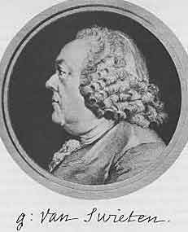
第25章図１ Gerhard van Swieten, 1700-1772 スヴィーテン
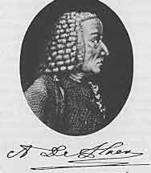
第25章図２ Anton de Haen, 1704-1776 ハーエン
舞台は変わって再びイギリスに戻る。ロンドンに行ったらロイヤル外科医協会の博物館を訪ねることを忘れてはいけない。そこには５つの大きな広間に人間および動物、正常および病理の、何千という解剖標本がある。ここには他の解剖学の博物館には無いものが見られる。たとえば身長が７フィート6.5インチであったアイルランドの巨人オブライアンの骨格とその脇には10歳で１フート８インチしかなかったシチリアの少女の骨格が見られる。有名な競馬ウマの骨格や高位の人が飼っていたグレーハウンドの骨格もある。
一見しただけでこれらの骨董品は現在の典型的な収集物でないことが判る。珍しい物や奇抜なものと科学的な対象とが博物館の場所を競っていた17、18世紀の収集家の精神を知ることができる。事実、ロイヤル外科医協会博物館は主としてスコットランド生まれの18世紀外科医ジョン・ハンターの収集物に基礎を置いている。彼の死後に政府は彼の収集物を15,000ポンドで購入した。
しかしハンターは単なる収集者ではなかった。彼は外科学および医学の歴史で指導的な地位を占めているのでもっと詳しく彼のことを知る必要がある。
彼は子供の頃に家族の年上のものにとって絶望であって大物になることを誰も期待しなかった。10人の兄弟姉妹のうち最年少で10人のうち３人は子供のときに死亡し４人は若いうちに死亡した。このような死亡率は当時は当たり前であった。父親はラナークシア（スコットランド南部）の小地主でジョンが生まれたときには年をとっており母親は可愛い末子の気まぐれをそのままにしていた。学校ではできの悪い学生だったので学校生活は短かった。気まぐれで気むずかしくやりたいようにできないと何時間も泣き続けた。本当に好きだったのは悪戯をしたり森を彷徨って鳥の卵を探すことだった。また大人が困る質問をした。後になって言った。「子供のときに、雲のこと、草のこと、および秋になぜ葉の色が変わるかを知りたかった。アリ、ミツバチ、鳥、オタマジャクシ、イサゴムシを観察した。私は誰も知らないことや興味を持たない質問をして人々を悩ました」と。
彼は何になるだろうか？ 姉の１人はグラスゴーの材木商人と結婚した。この商売ができるだろうか？ しかし駄目だった。20歳になったので何かしなければならなかった。彼のような若者にとって唯一の経歴は兵士になることだけであった。しかしこのように絶望的な段階をとる前に彼はある計画を試すことになった。兄のウィリアムは家族の自慢の種でロンドンに住んでいた。ウィリアムはジョンより10歳上で、グラスゴーで医学を勉強し外科医として成功し解剖学の研究に打ち込んでいた。ウィリアムは彼を助けて使うことができると思われた。ジョンはロンドンに手紙を書きウィリアムは弟を試すことを承知した。
従って1748年にジョンはロンドンに旅しウィリアム・ハンターの助手になった。彼は運良い時に到着した。その年の初めからウィリアムは外科手術医たちに解剖学の個人講義を行い解剖教示をしていた。全く不思議なことに役に立たない男ジョンはウィリアムの助手として熱情を示した！ １日中、夜まで働き解剖室を整頓して必要な死体を確保することに熟達した。さらに間もなく彼は上手な解剖師になった。
兄ウィリアムはジョンにとって優れた教師であった。ウィリアムは優秀な解剖学者、外科医、そして産科医であった。ウィリアムの「人の妊娠子宮について」は最初1774年にラテン語で出版された。大きな２折判ですばらしい34枚の銅版画が含まれていて古典になった。ウィリアムは熱狂的な収集家であり解剖標本だけでなく、書籍、原稿、メダル、絵を集めていた。この書籍および解剖標本の収集物はグラスゴー大学に保存されている。収集者の炎は伝染性の熱情である。弟ジョンもこの病気に罹り生涯続いた。
殆ど教育の無い若い男にとって解剖学は容易な専門職業ではない。既に見たようにジョンは学校に少ししか行かなかったし大学に入ったことはなかった。しかしこの頃には外科医になることができた。チェルシー病院で徒弟になり後に聖バーソロミュー病院および聖ジョージ病院に移った。チェゼルデンとポットは彼にとって素晴らしい教師であり彼は数年後には外科に精通した。ウィリアムはジョンが一般教育の欠けているのを補うためにオクスフォードに行かせたが数月で帰ってきて、「彼らは私を服従させ、私はこの大学でラテン語を詰め込まなければならなかった。しかし彼らが私の前に来たときに沢山の害虫と同じようにその計画を潰した。」と。
彼の興味は大きく違う分野にあった。最大限の熱心さで再び解剖学の研究に専念し人間の臓器を単に記載するだけでなく理解するには下等動物の臓器にも精通しなければならないことを知った。彼はできるだけ多くの他の種類の動物を解剖した。解剖学は比較解剖学でなければならなかった。人間とその他の動物の臓器を比較することによって始めて正常にせよ病的状態にせよ生命の一般機能を理解することができる。従って彼は比較解剖学に転向した。彼は普通の意味の解剖学者ではなかった。彼は解剖学の教科書を書いたことはなかった。銅版画を作り彼自身が作った数多くの標本を印刷して不朽の図解本を作ることは彼にとって容易なことであった。しかしこのようなことをする意志は無かった。彼は解剖学について少ししか著述しなかった。歯の自然誌など小編の幾つかだけであり副業であった。解剖学は彼にとって目的ではなく主目的である比較解剖学と発生学への手段であった。発生学は彼が同じように興味を持っていた種々の問題に答えるのを助けることができた。動物は発生の初期段階において他のより簡単な動物で見られる形を示すのではないだろうか？
このように忙しく研究していた間の1761年に彼は重篤な肺炎に罹った。兄の１人は肺結核で死んでいた。病棟および解剖室における生活はこのような病気に罹りやすい男に推薦できるものではなかった。できるだけ戸外にいるように勧告された。しばらくのあいだ彼は陸軍外科医になり次に海軍外科医になった。イギリスはフランスおよびスペインと戦争をしていた。ハンターは幾つかの戦闘に従事して多くの経験を積んだ。彼の心の構造は基本的に普通の軍医とは違っていた。彼は科学者で病理学総論の問題で心は完全に占領されていた。治療しなければならない傷は彼にとっては実験であった。成熟させるのに数十年かかり死後になって始めて出版された本（＊「血液、炎症および銃創について」）の基礎はこの時期における軍医としての任務であった。これは彼の最も重要な研究であり後に述べる。
1763年に戦争はパリ平和条約で終了しフランスはカナダをイギリスに譲った。軍隊は解散された。ハンターはロンドンに帰り外科医として落ち着いた。最初に開業は思い通りには流行らなかった。病院に所属できなかった。病院が無い外科医は船の無い船長のようなものであった。それで彼はそれだけ研究や収集のための時間を持った。
アールズコート（＊ロンドン西部）に大地主の邸宅を買った。アールズコートは18世紀には田舎だったからである。これは非常に変わった邸宅で誰でも立ち止まって眺めずに通り過ごすことはできなかった。邸宅の庭にこんなに多くの種類の動物がいる所はなかった。建物の後ろは草地で種々の鳥が歩いていた。とくに沢山のガチョウがいてハンターはその卵を発生学の研究に使っていた。さらにブタ、ヤギがいて、ヒョウ、ジャッカル、ヘビのような危険な野獣は檻の中にいた。多くの鳥は珍しい見本であった。生理学実験のための解剖室があり収集品を保存するための部屋があった。
ハンターは絶えず珍しい動物を探していた。踊る熊を連れてジプシーが通るとこの動物が死んだら解剖するために持ってくるようにと取引をした。アイルランド巨人について大変な骨折りと沢山の金を彼は使った。彼はオブライアンの骨格を何としてでも収集に加えたかった。巨人が病気になったときにハンターは巨人をずっと診察していた。しかしこのアイルランド人は危険を感じ身体が切り刻まれることを恐れ死んだら鉛の棺に入れて海に沈めるまで眼を離さないことを友達に誓わせた。以前に我々が聞いた所によると思い通りにするためにハンターは賄賂と買収に大枚500ポンドを使ったとのことであった。その結果として骨格はロイヤル外科医協会の博物館に存在しオブライアンの名前は不滅となった。
このような研究に莫大な金が必要なことは明らかである。必要な資金は開業によって得なければならなかった。しばしば次のアネクドートが引用される。患者を診察するのに研究を離れるときに彼は友達に言った。「さてリン、この忌まわしいギニーを儲けるためには行かなければならない。そうしないと明日には足りないだろう」と。1768年に聖ジョージ病院の外科医に任ぜられた。この病院は数年前に学生だった所であり彼にとって幸福な日であった。1775年は１年に千ポンド稼ぎ1783年には５千ポンド稼いだ。これは当時として莫大なものであった。高額ではあったが必要とするのに比べて充分でなかった。彼の世帯は徐々に増えて45人になった。子供たち、助手、召使い、庭師、動物飼育掛、であった。とくに収集には莫大な金額が必要でハンターが死んだときに収集品と借金しか残っていなかった。
今度は病院外科医になったので弟子たちがいるようになり一部のものは一緒に住んでいて毎日の話し相手になった。その中に特に親しい者がいてその後も常に手紙のやり取りをしていた。エドワード・ジェンナーであった。
兄ウィリアムが解剖学の個人講義を行っていたようにジョン・ハンターは1773年秋に外科学の理論および実際についての個人講義を始めた。この講義は10月から４月まで毎週３回あり全体で４ギニー（＊１ギニーは21シリングにあたる金貨で謝礼などに使われた。20シリングが１ポンド）であった。ハンターは講義が得意ではなかった。彼は原稿を読むだけであり講義の前に著しく神経質になり時には落ち着くために30滴のアヘンチンキを摂らなければならなかった。しかし理解できる者にとって講義は非常に面白いものであった。紹介文で約束した以上のものを伝えた。講義の内容は外科手術の理論ではなく今日ではむしろ「外科学総論」と呼ぶものであってその頃まで分かれていない分野であった。実際、ハンターはそのようには呼んでいなかった。講義には外科学総論だけでなく、解剖学、生理学、病理学が含まれていた。これらすべての分野で彼は独自の考えや長期にわたる観察や実験の結果を進めていた。ハンターは医師の資格を持っていなかったし大学教育を受けていなかった。言葉の正しい意味で彼は経験主義者であり病理学の問題に実際面から取り組んでいて全く偏見を持っていなかった。
18世紀に外科医に治療を任せられていた病気の１つは梅毒であった。ハンターはこの難しい問題に取り組み大作「性病について」を書いた。これは1786年に出版され19世紀に至るまで標準教科書として使われた。この本は多くの点で価値の高いものであったが重大な誤りがあった。この誤りは実験をもとにしているだけ教訓性が高かった。淋病と梅毒は１つの病気が２つの現れ方をしたに過ぎないかどうかこの頃に激しい議論が行われていた。ハンターは淋病の膿と思ったものを自分に接種しその場所に下疳（＊梅毒）ができた。淋病と梅毒の同一であることの証明とみなされた。以前に人々が論理的な推理には誤りが無いと思ったと同じように当時の実験者たちは実験結果に絶対的な信頼を持っていた。我々が学ばなければならないのは１回の実験だけでは何も証明できず実験の正しい解釈は実験そのものよりも重要なことである。［ハンターが自分への接種に使った尿道分泌物は少なくとも一部は尿道内にできた梅毒下疳からのものであったと推定される。］
晩年のハンターは間断ない労苦の年月であった。朝６時に起き９時まで解剖室で働いた。正午まで家で患者を診療し次いで回診をした。午後４時に正餐をとりその後で１時間寝た。次いで講義を行った。その後で秘書がその日に彼が観察したことを口述筆記した。夜半に家族は就寝した。下男は芯を揃えたランプを主人に持ってきてハンターは未明の１時、２時、ときにはもっと遅くまで仕事をした。彼の経歴の初期に大きな世話をしてくれた兄ウィリアムと仲が悪くなった。数年のあいだ狭心症で苦しみこの病気で彼は死去した。
彼の死後１年にあたる1794年に生涯の大作「血液、炎症および銃創について」が刊行された。これは病理学総論の進歩の道程であった。炎症の理論は推測の取っ組み合いの場所であった。個々の学派や流れはそれぞれの理論を持っていた。臨床はよく行われている治療法に沿って理論と無関係に慎重な調整案を提出していた。その後1822年になってゲッチンゲンの解剖学者で外科医のランゲンベックは書いた。「炎症の理論を比較すると真の臨床家だけはこの病気を同じように取り扱っている」と。
ハンターは炎症理論を古代の理論から１段階進めた最初の研究者であった。簡単な観察と判りやすい実験で炎症過程をそれまでに解釈されていたよりもずっと明白に解釈した。彼は炎症をある種の傷害にたいする生体の反応であるとみなした。ある特定の炎症の型と経過を決定するのは、刺激する原因、身体の健康状態、および傷害を受ける部分の特性、であると彼は言った。彼は主な３種の型の炎症をよく知っていた。退行性、分泌性、および再生性、の３種の炎症であった。「炎症そのものは病気とみなすべきではなく、ある暴力またはある病気の結果に起きる有益な作用である。‥‥炎症は時に病気の原因であるだけでなくしばしば治癒の形式である。消散できるときには病気の作用を有益な作用に変えて硬化部分の消散をしばしば起こすからである」と。このように治癒における炎症の価値が明白に理解された。
どこにハンターの歴史的な意義があるのか？ 彼は生涯にわたり解剖学を研究した。しかし彼の真の研究分野は純粋な解剖学ではなかった。彼は当時の有名な外科医であったが同時代の多くの外科医は外科手術の進歩にもっと貢献した。医術の歴史における彼の地位は別に求めなければならない。18世紀に医学と外科学は２つの異なる分野であった。大学で医師は外科学の教育を受けたが「おでき」を切開する程度も行ったことがないような解剖学専門家から習っていた。このような場所では外科学の科学的な進歩は期待できなかった。これに対して外科の臨床家はふつう不完全な教育しか受けていない手職人であった。外科学は絶えず進歩しており1731年にパリに作られた「王立外科学アカデミー」は価値の高い影響力を持っていたが外科医たちの興味は患者の診療だけに集中していた。ある外科医が科学的研究を行わなければならないと感じたら興味は手術技法の改良に向けられたであろう。全身麻酔ができないし種々の創傷感染があるために当時の外科手術には極めて厳しい制限があった。従って外科医たちは狭い範囲の特定の病気だけに注目していた。彼らの考えは「外傷」と呼んでいたものを原因とする病気の周りを回っていた。そして、膀胱の石、ヘルニア、瘻孔など、の病気であって、その治療法を改良しようとした。
ハンターの主な意義は外科的な観察および実験の分野を一般医学に開きすべての医師に注目させたことにあると私は考えている。ハンターは他の人たちと同じように外科医として働いていたが同時に科学者であった。彼にとって傷は臨床的な問題以上のものであった。「どうしたらこの傷を良く治せるか？」だけで彼は満足しなかった。「この傷は生体にどんな意味があるか？ 直接にせよ間接にせよこの傷の効果に対して生体はどのように防禦するか？」と彼は問いかけた。このようにして殆ど気がつかないで彼は外科学の領域から病理学の領域に入り込んだ。解剖学および生理学の研究は憶測の迷路で行き先を失わないように彼を守った。臨床実際家として実際的な基準で進み生体に課題を与え実験を行った。医師としての訓練を受けていなかったので偏見無しに外から問題に近づき医師たちには隠されていたものを見ることができた。
彼は時代に大きく先んじてこの路を急ぎ外科学と医学の間に最初の橋を架けた先駆者であった。
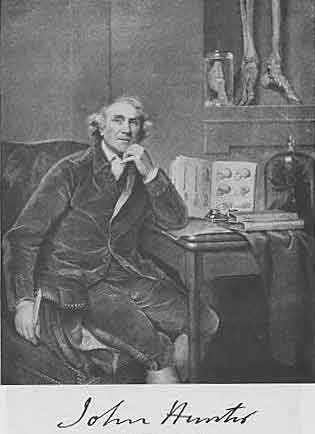
第26章図１ John Hunter, 1728-1793 ジョン ハンター
再びパドヴァからお告げがあった。医学の世界に鳴り響くお告げであった。又もやパドヴァの解剖学者が医術に大きな進歩をもたらした。古代に名声が高かったこの大学の町は1700年に向う頃は静かであった。偉大な日は終わっていた。外国人学生の流れは南にではなく北のライデンに向かっていた。しかし1711年にヴェネツィアの政府はフォルリ（＊イタリア北部でボローニャの南東の都市）の一般開業医モルガーニをパドヴァに呼んだ。これは運良い大成功でこの敬うべき学部に名声を与える男を発見したからである。モルガーニはこの新しい仕事に適した基礎を持っていた。ボローニャで医学を研究し耳について優れた本を書いていた教師ヴァルサルヴァの助手になった。ヴァルサルヴァがパロマに呼ばれている12ヶ月の期間モルガーニは師の代理をつとめていた。しかし20年後のハラーと同じように故郷の町で一般開業医になっていた。
さてパドヴァに招聘された。彼は理論医学の助教授に任命された。４年後には代わって解剖学教授になりヴェサリウスを初めとして多くの有名な解剖学者たちが占めていた地位についた。パドヴァに着いたときに彼は29歳であった。覚えているだろうがハラーはゲッチンゲンに招かれたときに28歳であった。
モルガーニの生涯は世の出来事から離れて生きた科学者の生涯であって平穏であった。彼の時間は、良心的な教育、解剖室における根気の良い労働、診察、研究仲間との幅広い文通、で占められていた。取るに足らない観察を発表し大したものでない着想を広く知らせるような沢山の雑誌はまだこの頃には存在しなかった。18世紀に何か新しいことを発見したと信ずる研究者は研究者仲間に手紙を書いて自分の観察に批判を仰ぐことによって広く知らせることを始めた。この種の手紙はモノグラフの大きさに膨れあがり友人間で大声に読まれ手から手に渡され議論したり対照実験が行われた。物事が熟し終わるまで刊行するつもりにはならなかった。当時の学者間で交わされた手紙は非常に興味深いものである。彼らは研究室の生き生きとした印象を与えてくれる。人々は印刷された論文より手紙の方で個性を自由に示している。昔の学者たちの歴史や伝記を知ることができるのは原稿または時には印刷物として保存された無数の手紙が存在するからである。
モルガーニは非常に少ししか著作を刊行しなかった。彼は特別に良心的な研究者であり人目に触れない生活を送り上に述べたような手紙を除いて同時代の人たちに殆ど知られていなかった。半世紀過ぎて彼は殆ど80歳になっていた。この頃1761年になって彼は「解剖学的に研究した病気の座と原因についての５冊の本」を出版した。これは何を意味したか？ 病気は特定の場所に極限していることを意味していた。病気の「座」は１つの臓器または幾つかの臓器であった。病原性因子の働きによって臓器に解剖的な変化が作られた。これらの変化は偶然の性質のものではなかった。これらが個々の病気を確定しその本性を決定した。これらは病的な症状の原因であった。
病気についてのこの見解は新しいものであったか？ イエスでありノーである。病理解剖を行った人なら誰でも、人の臓器を詳細に研究した人なら誰でも、解剖学的状態が異常な時のあることを見逃さなかった。解剖体の大部分は何時でも若い健康な処刑者のものだったというわけではなかったからである。古代にエラシストラトスが臓器に病理的変化を観察して見て重要な推論をしたことを既に述べた。ルネッサンスが始まるとこの種の観察は何倍にもなった。16世紀の殆ど全部の解剖学者はこの種の病理的変化に気がつき記載した。彼らは特に奇形に興味を持ち非常な初期から人々の想像を活気づけた。
胆石や膀胱結石の収集が行われた。これらの塊やその他の異物は異常な組織変化の産物であって悪循環によって１回作られると正常な機能を阻害するに違いなかった。17世紀になると観察者たちは異常な解剖標品を保存し広範囲な観察を行った。ジュネーヴの医師ボネーは「墓」の題で彼が取り上げることができたすべての病理的―解剖的観察を含む総合的な著作を行った。これはまぜこぜであって健全な価値ある情報が多くのおとぎ話の中に混じっていた。ボネーは解剖学者ではなかった。真っ先に彼は無差別な収集家であった。しかし収集物がどんなに役立つかを知っていた。彼の本の副題は「実用解剖学」であった。これは医学臨床の眼によって書かれた応用解剖学の本であった。このような解剖学は彼にとって「真の病理学および正しい疾病分類学の基礎」であった。このように彼の見通しは全く正しかった。それにも拘わらず彼の観察から正しい結論が得られなかったのは彼の知性が二流だったためではなく当時の知識が一般に適当でなかったからであった。
もしも解剖学的変化が病的症状と原因関係があるとするならば観察者はまずその関係する臓器の正常な機能を知らなければならない。どの程度まで機能が異常になったことによる症状かどうかを判断することはそれまで不可能である。言い換えると病理解剖は解剖学だけでなく解剖学に基礎を置いた生理学の知識を前提にしている。18世紀になりハラーの頃になるまで解剖学の概念が一段階進歩して病理学の領域にまで前進するほど新しい生理学は進歩していなかった。実際もっと前に病理―解剖的な観察の重要性を認識していたハーヴィは結核やその他の病気で死んだ患者の解剖は12人の処刑された罪人の解剖よりもずっと為になると書いていた。
18世紀になると関連した観察が急増した。マントヴァでバロレッティは肺の変化を研究した。トリノではファントニ兄弟が心臓、脾臓、脳硬膜の変化を調べた。ヴァルサルヴァは聴覚器官の正常解剖学だけでなく病理解剖学にも興味を持っていた。モルガーニは同じ方向で研究した。彼はボネーを含み先人の研究の価値を知っており率直に感謝していた。ボネーと同じように他の人たちの観察も記録しいつでも文通者から得られる情報を認めていた。しかし批判的な知識を持っていたので何を受け入れ何を無視するかを知っていた。しかし主なものは彼の長い生涯の間に集めた自分の観察であった。
病理解剖学著者の草分けであったモルガーニが莫大な数の観察を体系的に詳しく説明したことは彼の不滅な功績であった。モルガーニの時代の前には観察を無計画に集めたり限られた領域を説明する以上のことはされていなかった。この点でモルガーニはヴェサリウスを思い出させる。ヴェサリウスもまた同じように先人の仕事を役立てていた。ヴェサリウスは自己の観察の結果としてヒト解剖学の最初の完全な教科書を書いた。同様に独創的な研究者であったモルガーニは新しい病理学すなわち病理解剖学の最初のハンドブッフを書いた。しかしモルガーニの大著に現在の病理解剖学教科書のような完全な分類がなされていると思ってはいけない。この本は大ざっぱに構成されている。個々の章は学者仲間への手紙からなっている。さらにこの本は解剖学的な観点からではなく臨床的な観点でまとめられている。これは生きている患者の個々の症状や症状群および病気を記載し次にそれらを死体解剖で見つかった解剖学的変化によって説明するように努力されていた。モルガーニは古くからの記載方法である「頭から踵まで」に従っていた。すなわち頭の病気である頭痛や卒中などから始まっていた。この大著作の全体は病例の集まりである。ウィーン大学臨床でも同様な病例の蒐集が刊行され病理解剖がなされ正しく評価されたことを我々は見た。両方の考え方は同じであった。しかしデ・ハーエンの場合の主要な重点は病歴でありモルガーニの場合は死体解剖の報告であった。さらにモルガーニの病例は年代別に並べてあるのではなく病理的な観点から分類されていた。
このことがモルガーニの研究を高い水準に持ち上げたものであった。著者を画期的に重要にしたものであった。彼の本はどちらかと言うと素朴な構成ではあったが総合的には素晴らしい試みであった。これは病理学各論を変換して解剖学的に考えるようにした。症状はぼんやりと空に垂れ下がっているものではなくなった。症状は生体内を追い詰められ具合の悪い機能が依存する臓器に関連づけられる。症状、症候群、病気は種々の臓器と密接に関連付けられている。このようにして
18世紀に病理解剖学者が戦わなければならなかった困難が如何に大きかったかは今日の我々にとって認識するのは難しい。それまで解剖学の興味は殆どすべて正常解剖学に向けられていた。正常解剖学の分野にはまだ解明しなければならない新しい事が残っていた。正常と病理学的な構造の違いは何であり境界がどこにあるか？ 正常との差が単なる変異のときと病的な変化のときの違いは？ 腫瘍がヒトの拳固の大きさになったら病的であることは誰も疑わない。しかし臓器の組織の小さな変化が重大な結果を生むことをモルガーニは気がついていた。実際、このような小さな変化が最も重要でありこれまで重視されていたような目立ったものや珍奇なものが特に重要な訳ではなかった。
生きているときにある変化と死後にだけ起きる変化を我々はまた区別することを学ばなければならない。病理解剖に得られる死体は常に新しい訳ではなかった。さらにしばしば検査はかなりの時間続いた。
ここで経験は唯一の可能な教師でありモルガーニが極めて大量の資料を使用できたことは充分に幸福であった。病院からの死体の供給は非常に多く１人では取り扱えなかった。多くの病理解剖は助手や学生を信用せざるを得なかったしこのような場合に彼らが見つけた病理的状態についての報告に彼自身はコメントを書かなければならなかった。この頃イタリアで病理解剖にたいして一般的に偏見の無かったことは興味深い。高位の貴族や教会の高位聖職者を含んですべての階級の人たちはモルガーニによって病理解剖を受けた。多数の患者たちは死後に彼によって検査されることをはっきりと希望したと言われている。動物実験にたいして何らの反対もなかった。教会はこのような実験の素晴らしい意向を理解して反対しなかった。モルガーニは自由に実験を行い人工的な方法で異常状態を作る努力をしていた。
モルガーニが自分の本に図を入れなかったのは驚くべきことであろう。たしかに図は本の価値を高めるだろうし有能な図工がいないことはなかったろう。この頃のほとんど総ての本に図が載せられていた。モルガーニは解剖学の教科書は書かなかったが解剖学がかなりの割合を占める病理学各論の本を書いていた。書簡の形だったので彼の本は教科書とは考えられていなかったが最終的には発展して教科書になった。最後に解剖学は静的であり病理学は動的であることを覚えていなければならない。稀な異常は別として子宮はすべての女性に同じである。しかし子宮筋腫はこのように一般化することはできない。大きな子宮筋腫もあるし小さいのもある。子宮筋腫は形も位置もいろいろである。我々は筋腫を記載し典型的な筋腫を例にすることができる。モルガーニは試料のあるものを図示することができた筈であった。しかしどの試料がとくに典型的であるか決定するのは当時には困難であった。今では外観がどうであっても筋腫は共通なものとして筋組織からなることを我々は知っている。モルガーニはそれほど詳しくは知らなかった。彼の一般病理学についての考えは全くありきたりのものであった。彼が選んだ分野は病理学各論でありもちろん肉眼病理解剖学であった。
モルガーニは医学に新しい流れを作った訳ではなかった。発展の力はその方向に強く作用していた。解剖学的な考えは以前から勝ち戦であった。しかしその流れは充分に深いとは言えなかった。流れが幅広い大きな川になるためには流れの存在を知って川底を掘る技師が必要であった。モルガーニは改革者ではなかったがこのような技師であり病理解剖学の創設者とみなすのは当然である。1761年は医学の歴史において常に重要な年である。
すべての医師に我々は鋭敏な感覚と道徳的真面目さを要求し病理学者にはとくに高い程度を要求する。病理学者の所には臨床家の力が及ばず救うことができなかった死者が連れて来られる。しばしば死体解剖は人間の知識の不足を示す。このようなときに病理学者は裁判官の役割をするべきではなく助力者であり勧告者であるべきである。このように気高い性格で己の天命を深く銘記している人が病理解剖学発展の始めにいたことは幸福であった。モルガーニの考え方が繊細だったことは同僚ヴァリスニエリおよび親しい間柄にあった司教の解剖を断ったことに示される。自然科学の草分けであるとともに彼は古典の教養を持ち稀であったが暇な時に考古学の研究を行っていた。死去したのは９０歳のときであった。
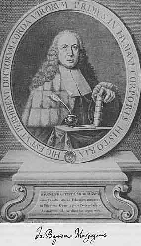
第27章図１ Giovanni Battista Morgagni, 1682-1771 モルガーニ
ウィーンは大学と公式に関係の無い開業医に天才が生まれるように運命づけられている。例えば精神分析学の創始者フロイトやシュタイナッハ（＊無効な若返り手術の創始者）などがその例である。18世紀も同様でアウエンブルッガーもその例であった。
医師たちが病理学の研究に解剖学の考え方を適用しようとすればするほど病気は臓器の「座」を持ち病気を起こすのに解剖学的変化が決定的な役割を果たすことがより明白になった。それとともにこのような変化を死体解剖台の上だけでなく生きている患者で知る方法を発見する必要がより強く感じられるようになった。純粋の科学として病理解剖学者は診断を病理解剖室で確認または訂正することに終局的な価値がある。しかし患者にとってそのような診断の訂正は遅すぎる。我々は症状を学ぶ方法を学ばなければならずそれによってその症状を起こした解剖学的変化の理解や認識に導かれる。脈や呼吸は価値の高い徴候である。体内を知ることが出来る他の方法の必要なことが叫ばれていた。20世紀まで直接の方法は得られなかった。そのために医師たちはレントゲン線の発見まで待たなければならなかった。体内条件についての情報を得るために生体の「中を見る」ことができる直接の方法があるのではないだろうか？
樽が一杯か空か知るには樽を叩く。アウエンブルッガーは宿屋の主人の息子で父親がこの単純な作業をしているのをしばしば見たに違いない。さてヒトの胸腔は多くの点でワイン樽に似ている。肺は正常で空気が一杯だがある種の病気では病的な分泌が肺胞を満たすことがある。胸を指で叩くとその結果の音色は樽と同じように内部の状態に依存する。樽にワインが一杯ならば叩いて起きる音は低音すなわち「濁音」である。もしも樽が空である場合すなわち空気が一杯ならば音は高い音すなわち「清音」（共鳴音）である。同様に左手を胸の上に優しく置いて左手の１本の指を右手の指で叩くともしも肺胞に空気が一杯であると音色は「清音」（共鳴音）であり病的分泌液で一杯なら音色は「濁音」である。従ってこのような方法すなわち「打診」法によって胸郭内の臓器が正常かまたは病的に変化しているかを確かめることができる。
アウエンブルッガーはファン・スヴィーテンの弟子でウィーンのスペイン病院に1751年から1762年まで最初は医師助手として続いて医師として勤めた。アウエンブルッガーはこの病院で打診の実験を始めた。彼の打診は片方の手の指で直接に叩くのであって上に記載したように左手指を仲介する現在の方法ではなかった。彼は正常の「清音」（共鳴音）、「高い音」、「はっきりしない音」と、「殆ど窒息した音」すなわち「濁った音」とを区別した。今日では正常の肺を打診したときの「清音」、病的分泌で固体になった肺や肝臓を打診したときの「濁音」、および喉頭や向う脛を叩いたときの高いピッチの「鼓音」、を主な３種の打診音としている。これらの種々の音の意義は死体解剖で明らかにされた。
アウエンブルッガーは打診法について刊行する前に７年のあいだ実験を行い経験を集めた。我々が学生時代に始めて打診を試みたときのことを思うと彼の苦労の如何に大きかったか考えることができる。我々は指がヒリヒリするまで打診を行い少なくとも音感の悪い我々は先生たちが説明している打診音の違いが判らなかった。我々は肺の病理解剖学を良く知っている。先輩は音色を教示してくれているので耳はそれに慣れている筈である。アウエンブルッガーにはこのような利点は何も無かった。彼は教わらずに解剖学的および診断学的な考え方を苦労して作り出さなければならなかった。
「優れた音楽的な耳」を持った人たちは音楽的な才能を持たない他の人たちより病院で打診・聴診をずっと早く習得できることはよく知られている。重要なこととしてアウエンブルッガーは音楽の大アマチュアであり実際はアマチュア以上であった。彼の家でしばしば音楽会が開かれただけでなく彼はサリエリのコミック・オペラに歌詞を書いていた。しかしモーツァルトが父親に手紙で「あわれな仕事」と評したサリエリの作品に歌詞を書いたところを見ると彼は音楽の分野では医学の分野ほどには有能でなかったのかも知れない。
７年後にアウエンブルッガーは発見を世界に知らせる準備が出来上がった。1760年の大晦日に彼は著書「打診の新考案」への序文を書いた。
「胸部疾患を見つけだすために私が発見した新しい徴候をここで読者の皆さんに提供する。これはヒトの胸を叩く方法であってこれによって起きる音の独自の性質によって胸郭内の状態についての知見が得られる。これについての私の発見を公表するのは書きたい欲望からだったり空想を好むからではなく７年間にわたる観察と考察の結果を皆さんにお知らせしたいからである。発表にあたって受けなければならない危険に気がつかなかった訳ではなかった。自己の発見によって術や学を説明したり改良したりする人たちは羨み、悪意、憎しみ、悪口、中傷を受ける運命を持っているからである。
「これは私が受けなければならない当然の運命である。しかしこのような動機で駆り立てられる人に私の学説の説明はしない決意をした。私が書いたことは骨の折れる厄介な努力によって何回も繰り返して試したものであることを私は証言する。しかし常にうぬぼれの魅力的な影響に陥らないように用心をした。
「ここで私の論文に書いた病気に関する限り新しい徴候が細かいところまで研究し尽くされていると誰もが思わないようにして欲しい。まだ直さなければならない欠点のあることを率直に告白する。この欠点は注意深い経験によって直されることを期待する。さらにたぶん同じ観察や経験はこの病気や他の病気において、診断、予後および胸部疾患の看護において他の真理の発見に導くであろう。このような欠点があるので困ったときには傑出したファン・スヴィーテン男爵の注釈書を頼りにした。この注釈書は自然の忠実な観察者にとって必要なすべてのことを含んでいる。このことによってくどく長たらしく書く悪習を避けることができただけでなく私の初歩的な発見を安全に確かに立ち上げる確固たる基礎を得ることができた。これを公表するにあたって医科学を正しく評価するすべての人たちによってもっと完全な知識がこれまで欠けていた胸部の病気に少なからざる光を与えたものとして私が医学に役立ったと評価されることを疑わない。
「小冊子を仕上げるにあたって疑わしいことや充分に消化されていないことも書いた。充分に完全にするために私はさらに仕事に打ち込まなければならない。私は記載の様式や文体を飾る気は持たず理解して頂けば満足することを述べて終わりにする。（1824年英訳版より引用）」
彼の小冊子は出版の準備が終了した。これで充分な筈だった。しかしちょっと待て。読者たちはアウエンブルッガーが理論を弄んでいると思うに違いなかった。改めてペンを持って序文に「勧告」を書き加えた。「勧告：すべての医師たちへ」であった。
「この本が取り扱っている徴候は診断だけでなく病気の治療にも非常に重要であり脈や呼吸の検査に続く価値のあるものと個人的な経験から主張する。胸郭の異常音はすべての場合に重篤な危険を示す徴候であると主張する。」
この本の表題は何だったろう？ 内容を短い言葉で書くのは著者にとって困難であった。前に短くした題「新考案」で紹介した。完全な題は長たらしい「新考案、胸壁を叩いて胸郭内部に隠れた病気の病徴をみつけるための」であった。
モルガーニの偉大な著作が発行されたのも同じ1761年であった。２冊の本は同じ動き、すなわち解剖学的な考え方の進歩を表現した。モルガーニは病理解剖学の基礎を作りアウエンブルッガーは解剖学的診断法の基礎を作った。
予想した攻撃が行われた。多くの医師たちはアウエンブルッガーの発見に全く注目しなかった。これは新しい発見ではない、何も新しいことは無い、ヒポクラテスが既に書いているからと他の医師たちは宣言した。他の人たちは打診は患者たちを不必要に苦しめるものとみなした。アウエンブルッガーにとってもっと悲しかったことはデ・ハーエンの冷たく頑固な沈黙であった。このオランダ人は新しいことには反対で少しも注目せず軽蔑して無視した。もしもこの新しい方法が実を結ぶとしたらウィーン大学臨床でなければならなかった。
しかしこの本は広範囲に読まれ２年内に新版の刊行が要求された。多くの読者たちはこの本の重要性を認めた。ハラーは打診を「詳細に注目する必要があり全く新しい発見と思われる。この種の提案を受け入れるのは慎重であるべきと言うのは正しいが敬意をもって注目すべきである」と宣言した。
デ・ハーエンの死後、シュトールが臨床の長になると打診はウィーン大学臨床で使われるようになった。しかし彼が死去するとしばらくのあいだ打診は忘れられてしまった。
我々はアウエンブルッガーの発見が医学に如何に重要であるかを知っている。後になってこのことを知るのは容易である。打診の価値を認めなかったことでアウエンブルッガーの同時代人を非難するのは正しくない。病理解剖学は新しい科学で一般には認められていなかった。大部分の医師は病気は本質的に全身のものであって局所の状態は従属的なものと考えていた。解剖学的な考え方が一般的に受け入れられるにはこれより数十年過ぎることが必要であった。後で見るように打診を病人のもっとも重要な検査法の１つとして理解したのは19世紀初めのフランス医師たちであった。
1762年にアウエンブルッガーはスペイン病院を退職した。同僚との争いのためであった。その後は人気が高い忙しい開業医となった。治療、赤痢、インフルエンザについて短いモノグラフを書くために何回もペンを取った。1784年に皇帝は彼に貴族の称号を与えた。
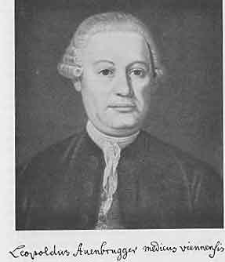
第28章図１ Leopold Auenbrugger, 1722-1809 アウエンブルッガー
1766年８月26日に若者フランクはハイデルベルク大学で医学博士の学位を得た。彼は波瀾万丈の青年時代を送ってきており冒険の経歴がさらに待っていた。バーデンのピルマゼンスに近いロダルベンに生まれドイツ文明とフランスの文明の境で血なまぐさい戦いが繰り返されていた所で育った。祖父はフランス人で軍隊の御用商人であり戦場で略奪者によって殺された。父親はまだ子供で連隊に残っていたが運を求めて去り小商人となり最後はガラス工場のマネージャーになり結婚して13人の子供を持った。このような状態で勉強するのはフランクにとって困難であったが何とかすることができた。まず彼はラスタットのピアリスト（聖職者修道会）およびボッケンハイムのイエズス会で教育を受けた。次いでバーデン、メス、ポンタムーソン（フランス北東部）で哲学と自然科学を学び哲学博士の学位を得た。しかし彼は医師としての経歴に惹きつけられていた。教会に入ることを拒否したので母親は大きく悲しみ商人にならないで勉強を続けることを希望したので父親は怒った。しかし若いフランクは自分の道を進みハイデルベルクとストラスブールで医学を学んだ。
さて彼は医学博士になった。子供の食養生についての彼の卒業論文は注目を惹いた。彼は医学の問題を科学的に取り扱う能力を示した。ある日、医学部長は彼に何か特別な研究をするように話をした。何が彼に適当だろうか？
フランク：「頭の中に１つの考えがあります。すべての民衆に作用したり個人の意志と無関係に作用する病気（＊疫病）は医師たちが如何に注意深くしても防ぐことができないと私は思っています。しかし当局が体系的に行動すれば確実に防ぐことができるでしょう。この目的を達することが出来る法則についての注意深く作られた科学があるでしょうか？」
学部長：「このような目的を持つ多くの個々の制度は疑いもなく存在するだろう。しかしその種類の包括的で相互に関連した科学的な組織活動は計画されたことがない。君の考えは素晴らしい。君の思考産物には何と名前をつけたらよいだろうか？」
フランク：「私が研究するのは確かに医学の問題ですが一般的な健康増進の方策を実施するのは主として国の
医事行政！［英語版注：この言葉に対応する現代の英語は「公衆衛生」であろう。実際、ポリスはポリシーに溶け込む。］完全な医事行政の体系！ これは重要ではあるが大変な仕事である。臣民の健康を保つ方法を支配者に教えることである。これが一生の仕事であることを明らかにしたときにフランクは21歳であった。主著「完全な医事行政の体系」の最終巻が1817年に刊行されたときに彼は72歳であった。いろいろと変化があり事件が多くカオス的とさえ言えるフランクの一生のうちにおいてこの本の執筆は一貫した方針であった。
しかし最初に必要なのは患者を診療して毎日のパンを得ることであった。故郷の家で開業したが間もなくこの場所を好まなくなった。次にラシュタットを試したが診療を許されなかった。次に兄弟の１人が住んでいたロレーヌのビッチュに行った。開業の看板を掛けるや否や当局が介入した。フランスの医師免許を持たなかったからである。しかるべき資格を持つ医師がどこの国でも開業できた時代は終わっていた。数マイル歩くと違う王国になる地域では特に困難であった。ポンタムーソンに戻ってフランスの免許を得てこれによってビッチュで開業することができた。彼はしばらく前から愛していた若い女性と結婚して仕事を行った。しかし落ち着くことができず２年後にバーデンに移って地区医師となった。
彼は自分の主著のことを忘れてはいなかった。数年にわたって書き続け大量の原稿になった。原稿をカルルスルーエの出版社に送った。しかし出版社の査読者の評定は悪く原稿は送り返された。フランクは怒って原稿を燃やした。
妻は産褥熱で死亡した。ゲルンスバッハで発疹チフスの流行が始まった。フランクはそこに送られ疫病を研究する機会が得られた。彼自身も病気になったが治った。ここで彼はバーデン・バーデン辺境伯の侍医となりラシュタット宮廷詰めになった。ついに我々の衛生学志願者は「臣民の健康を保つ方法を支配者に教える」機会を持った。フランクは精力的に働いた。まず明らかに必須なのは医療介護が正しく準備されていることでありこの点で大きく欠けていたからである。彼は助産婦と外科医を教育する計画を書いた。この転機にさいしてこの王室の最後の辺境伯であったパトロンが死去した。この領地はカルルスルーエのバーデン・ドゥールラッハ系列に移された。フランクの任命は新しい支配者によって認められ「助産婦および地域産科医の管理者」としてラシュタットに留まった。助産婦の訓練および管理を監督するだけでなく「呼び出されたときに貧しい婦人の分娩に必要な援助をする」のも義務であった。監督下のすべての助産婦に個々の例を精確に記録するように命令し重要な統計を得ることができるようにした。
４月後にもっとよい職が提供された。彼はブルッフサルに移り領主司教シュパイヤーに仕えて都市および地域の医師になり1775年には侍医になった。ここでも彼は改革の仕事を続けた。彼は助産婦を良く教育するように面倒を見て出産時の死亡率は急速に85人に１人から125人に１人に減少した。また外科医学校を創立し自分は教員の１人になった。
もはや初心者ではなかった。実際の経験を積むことができていた。改めて主著をものする時になった。1776年に小さなパンフレットを書いて目的を詳しく説明し同僚に資料の提供を促した。条件は国によって大きく違うので仕事は困難であった。少ししか返事が無かったが1776年に「体系」の第１巻を刊行した。
この第１巻の序文は啓蒙の精神を示していた。最初のパラグラフを引用しよう。
「国内の安定なことが私の一般行政科学［衛生学］（＊以下４カ所の角括弧はドイツ版には無く英語版における注）の目的である。これの重要な部分は社会に住んでいる人間の健康および人間の労働と娯楽で必要な動物の健康を増進させる一定の原則に従って行動する科学である。従って我々は人々を快くさせ長期間にわたって有利な立場を楽しませることによって住民の福祉を高めなければならない。この有利な立場は移り変わりや変化によって人々を不当に苦しませること無しに社会生活が人々に提供するものであり、この変化は自然の野生を飼い慣らしてある種の利点を捨て去るときに社会生活が人々を必ず曝すものであり、この（＊捨て去る）利点はどの分野においても人工的になる前における人々の粗野で骨が折れたときほど圧倒的に多いものではない。」
「従って医事行政［衛生学］は行政科学一般［福祉］と同じように防御的な学問であり人間および助手役の動物を地上であまりにも混み合うことによって不利な結果となることから守る学問である。特に身体的な不幸の過剰を苦しむことなく、最終的にはすべての人々が屈服せざるを得ない運命（＊死）をできるだけ遅らせるようにして身体の福利を進める学問である。この科学は毎日毎日、人間にとってますます重要になっているにもかかわらず殆ど推進されておらず、あちらこちらで最低限度に注目されているだけであって私が知る限り体系的には推進されていない。これは人々が人間の価値を実感し人口の利点を考えるようになったのがほんの最近のことだからであり、このような計算は最初の効果として、人類の［質的な］衰えと言われているものの原因についての博愛主義的な考えとして生まれたものだからであろう。」
ギリシアの精神とローマの組織能力が古代に高度の衛生体系を作りあげたことを以前の章で学んだ。民族移動の嵐のあいだに古典時代の衛生学は滅びた。ローマ時代の水道と運河は粉々になった。古代の個人衛生、数多くの浴場、軟膏、運動、など身体の世話は中世初期の人々にとって意味の無い柔弱さに見えた。魂だけが問題だったからである。しかし身体は容器、魂の入れ物、である。身体は良い状態になければならない。衛生学の考えは中世後期の都市で生き返った。食事の規則は守られた。公衆浴場が作られた。蒸気浴は健康に良いだけでなく楽しいものであり入浴したものは気持ちが良くなり次週の全体を通じて楽しくなった。悪疫はヨーロッパを襲い人の心を不安にし抵抗を強要した。医師と公的機関の連合部隊は疫病にたいする障壁を作って社会を疫病から守ろうとした。
それにも拘わらず公衆衛生の状態は貧しかった。とくに若者の死亡率は恐ろしく高かった。ルネッサンスの間も殆ど良くならなかった。東洋由来の疫病は絶えず繰り返された。天然痘、ジフテリア、結核、麻疹、産褥熱、チフス（腸チフスと発疹チフスは未だ区別されていなかった）、マラリアによって多数の犠牲者が出ていた。17世紀になると統計記録が得られるようになった。不充分ではあるがありのままの状態を示している。人々は大きな恐れを抱いた。何とかしなければならなかった。
従って18世紀になると公衆衛生を促進させる激しい動きが始まった。これは啓蒙運動によって支えられた。原始人は強く健康であり善良で幸福だったとフランクは言った。文明は莫大な害を及ぼした。人類を弱くし容易に病気の餌食にした。人類を堕落させ不幸にした。「自然に帰れ」がルソーの叫びであった。女性は自然の生活をして妊娠に備えるべきである。子供はどうだったか？ 単なる人形で大人の遊び相手。幼いときから衣服を巻き付けられて成長を束縛され年齢に不適な生活を送っていた。子供は自由にすべきである。教育が重要な問題になった。ルソーは「エミール」を書いた。
医師たちは予防が治療よりも良いこと、予防が彼らの最も重要な業務であることを認識し始めた。予防医学の方法は何か？ ２つの方法が提案された。それぞれ保守的方法と革命的方法と名付けることにしよう。
保守主義者は宣言した。民衆は子供のようなものであり何が良いか理解して自分で決定することができない。丁度、家庭で父親が禁止したり命令したりして子供を教育するのと同じように国家では臣民を教育する、すなわち健康の方向に教育するのが君主の役目である。医師たちの勧告に従って君主は臣民たちに有害なことを禁じ望ましいことをするように命令する。このようにして君主は文明の有害な影響を打ち破り有益なことを妨害無しに臣民に楽しませることができる。衛生法規は常に存在したがこれまでの結果が示すように不適当であった。法規は改訂し強化しなければならない。
ルソーを指導者とする他の学派、すなわち革命主義者たちは異なる意見を持っていた。価値あるものを上から民衆に与えることはできなかった。専制と腐敗が支配した。自然でない生き方は宮廷では他よりも甚だしい。一般人の間では誤魔化しがない単純さ、すなわち、真の親切さ、子供のような無邪気さ、および正しい理性がある。もしも一般の人たちが不幸だったら彼らが無知だからであった。彼らに健康と病気などやその他のことを適当に教えるべきである。判りやすい衛生の啓蒙活動が始まった。町の人たちや田舎の人たち、とくに後者に衛生について伝える本、パンフレット、新聞が発行された。
この運動は人権宣言に向かった動きの一部であり最終的に自由主義に導くものであった。
フランクは保守的な流れの典型的な代表であった。彼の仕事は絶対国家、啓蒙専制政治の衛生の記念碑である。実際のところ、彼の本は民衆に直接に教える考えを軽蔑してはいなかったが「ポリス（警察）」すなわち当局による対策が安全な路と考えていたようであった。彼が個人の権利に介入しようとした例をあげる。「ダンスの取り締まりについて」の章で若い少女へのダンスの危険について説明し次のように結論した。
「従って健康の理由だけだったら当局は舞踏会の時間を決めて構わない。ワルツなどのように不当に活発なダンスは禁止するのが良いだろう。監視無しにこのように猛烈な楽しみをしたり不適当な時間に楽しんだりするのを両親とか他の目上の者が若い女性に許すのを禁ずるべきである。ダンスが終わって少なくとも半時間は踊り手が解散するのを許してはいけない。何はともあれ、すべての人々とくに若い娘はこのような規則に注意しなかったときに起きるであろう結果を知らなければならない。」
この本は広く売れた。必要を満たしたからであった。やはり著者には多くの難問が持ち込まれた。彼は聖職者の独身主義に反対しカトリック教会は怒った。フランクは司教に仕えており司教は機嫌が悪くなり易かったのでさらに不利益であった。
第１巻の第２版が1780年に刊行されたのと同時に第２巻が出された。これには私通および子供の衛生が論じられていた。非常に重要な問題が考察された。売春、性病は大荒れであった。これらの拡大は上流階級の道徳の堕落および下層階級の乱交によるものであった。ある人たちは性病を罪への処罰と考え他の人たちは避けることができない悪であってヴィーナスの毒矢による傷であってメルクリウス（＊水銀による梅毒治療）で治すことができると考えた。この疫病に有効な治療法は誰も知らなかった。至る所で迷信と偏見が障害になった。ここでもフランクは明白な方針を執った。売春婦を売春宿に隔離し秘密の売春を根絶し売春婦を強制的に取り締まることであった。フランクはしかし性病の蔓延の原因は売春婦だけでないことを完全に良く知っていた。従って論理的に彼は権柄ずくに主張した。「男性にしろ女性にしろ性病に罹ったことが確かなすべての人は完全に健康になって安全と知られるまで性交をすべきではない」と。性病の予防のために有効な法律が公布されるまでそれから１世紀半が必要であった（＊ドイツで1927年公布）。
３年後の1783年に第３巻が刊行され食品、衣類、住宅の衛生を取り扱うものであった。それから長い空白があった。1788年に第４巻が刊行される前にフランクの生活に大きな変化があったからである。彼は９年のあいだシュパイヤーの司教の主治医であったが楽しくなかった。彼の活動範囲は不当に狭かった。以前と同じように落ち着かなくなった。今や彼は有名になっていた。彼の本は彼の能力を示していた。ほとんど同時に３カ所、すなわちマインツからは生理学および医事行政の教授として、ゲッチンゲンおよびパヴィアからは臨床医学の教授として招聘された。どれを受け入れたら良いだろうか？ 言質を与えないで３つの大学と同時に交渉した。マインツの招聘は断ったが半分ほどパヴィアに関心があった。ゲッチンゲン大学の招聘を受け入れた後で彼はパヴィアからも指名された。最終的に彼はゲッチンゲンに移ることにした。フランクはカトリックでありこの大学はプロテスタント大学として有名であったが彼は任命された。彼は1784年５月に教授としての仕事を開始し学生一行を連れて患者を往診し、病理学総論、病理学各論、治療学および生理学だけでなく、もちろん衛生学についても講義を行った。
ゲッチンゲンで１年過ごしたところでこの場所はもう充分と思うようになった。働き過ぎたし気候は彼にとって厳しすぎた。その他にここは彼にとって適当ではなかった。彼の真の仕事は学生に教えることではなく君主に教えることであった。彼が好む仕事の分野は大学の狭いものではなく国の広いものであった。パヴィアの地位はまだ空席であった。イタリア人は未だ彼を必要としていた。急いで決心をして1785年３月に彼はウィーンを通って南に旅した。
彼は良い選択をした。極めて総合的な活動分野があった。臨床教授で病院長であるだけでなくプロトフィジクスすなわちオーストリアのロンバルディアおよびマントヴァ公爵領における医事の総裁であった。すぐに彼は組織計画を実行した。最初にパヴィア大学医学部を徹底的に改革した。新しい講座が作られた。内科の学生は外科学の講義に出席し、外科の学生は内科学の講義に出席することが強制された。医学のカリキュラムは５年間で外科学のカリキュラムは４年間であった。独立の外科臨床が作られ薬学校が創設された。病理解剖学の博物館が作られた。フランクの次の改革はパヴィアの境界外に及ぶものであった。非常に多くの公的出張を行い彼が行くところ、病院、薬剤師の仕事、助産婦の仕事が改革された。段々とフランクは病院建設の一流の専門家になった。ジュネーヴが臨床を作るとなると彼の意見が求められた。ヨゼフ２世が死んだときに駄目になっていた「ウィーン総合病院」を視察するためにウィーンに招待された。「医事行政」の第４巻は前に述べたように1788年に刊行されたがフランクはその前の数年にわたって多くの新しい経験を積んでいたので序文に次のように書いた。「この本の利点は私が多くの医事計画を実行する立場にあって結果および困難さを大部分の著者たちより良く判断できたことにある」と。この第４巻は「公衆衛生と関連する点で公安施設」すなわち事故や犯罪も取り扱っていた。この巻の主題は我々が法医学と呼んでいるものであった。
同じ主題は第５巻に続きここでは死体の処理も論じられた。これで人の一生が誕生から死まで事故も含めて完全に論じられ一応の終わりに達した。1814年に第５巻が刊行されたときにフランクは経歴の最後としてウィーンにいて休息できる状態になっていた。第４巻と第５巻の刊行のあいだに何が起きただろうか？ すべての改革者は困難を乗り越えなければならない。強力であればあるほど反対は激しいであろう。従ってイタリアでフランクは多くの批判を受け非難は宮廷にまで持ち込まれた。実際、彼は立派に行って見事に成功して反対者は処罰された。しかし絶え間ない陰謀によって彼はパヴィアが嫌いになった。1795年に彼は軍隊の衛生業務の審議に参加するようにとウィーンに招聘された。続いて彼はウィーン総合病院の院長になるように要請されオーストリアの首都に留まることになった。
ウィーン総合病院はたぶんヨゼフ２世の医学における最も素晴らしい業績であった。フランクはこの病院をほとんど最初からよく知っていた。1785年にイタリアに行く途中でウィーンを過ぎ詳しく観察した。皇帝はフランクがどのように考えるか気に入っているかと尋ねた。
フランク：「賞賛に値し私をこのように大きい病院の考えと仲直りさせる。」
皇帝：「このように大きな病院に反対か？」
フランク：「大きな時計は正確でないことが多い。」
皇帝：「これは正確だ！」
フランク：「確かに！ 非常に重い錘が歯車を回しているからである。」
フランクの先見の明は誤っていなかった。ヨゼフ２世は1790年に死去して「非常に重い錘」が取り去られると時計は動かなくなった。動かすためにフランクは呼ばれた。ウィーン総合病院の院長になっていつもの組織能力を示し管理を改良し厳しい訓練を確立し解剖室を建て病理解剖学博物館を創設した。特に彼はシュトールの死後に無視されていた臨床に専念した。臨床教育のために使う病床を２倍にした。フランク自身が臨床医学の教授になり彼の講義は評判が高かった。何冊もの臨床医学についての本を書き広く読まれた。
フランクは自分の野心を満足させたと思うかも知れない。帝国首都にいて高い地位についていた。ウィーン大学の臨床および世界一の大きな病院を支配していた。しかし、ここにも反対者がいた。侍医のシュティフトは彼に反対する陰謀を企てていた。教会は敵意を持っていた。彼が聖職者の独身生活について書いたことを忘れていなかったからであった。最終的にフランクはまた旅行に行き病理学教授に任命された息子のヨゼフと一緒に臨床家としてリトアニアの首都ヴィリニウス大学に移った。１年そこにいた後でツァーリの侍医および医学・外科学アカデミーの総裁として莫大なサラリーでサンクト・ペテルスブルクに招聘された。このロシアの首都で３年のあいだ働いたところで赤痢に罹った。
彼はロシアに疲れて休みたくなった。彼の主著はまだ終了してはいないで述べたいことがもっとあった。著作を続けることができるドイツの静かな場所に戻ることを希望してブライスラウ地方のフライブルクに決めた。彼はモスコウに行って健康を回復させ1809年にウィーンに到着した。この頃ヨーロッパは燃え上がっていた。当面これ以上の旅を続けることが出来なかった。ナポレオンは再びウィーンを攻撃した。祖父の運命を辛うじて逃れることができた。時計を略奪され命まで取られるところであった。ランヌ元帥はアスペルン・エッスリンクにおいて両脚を撃たれた。フランクは診療を依頼されたが希望の持てる例ではなかった。ワグラムの戦闘の数週間後にナポレオンはフランクを呼んで一緒にパリに来るように要請して言った。「貴方の令名は我が帝国で広く知られている。パリに素晴らしい地位を用意するから落ち着くべきである。そこには他人の優れた点を評価できる一流人がいる。」フランクはこの要請を真面目に考えた。ビッチ、バーデン、ラシュタット、ブルッフサル、ゲッチンゲン、パヴィア、ウィーン、ヴィリニウス、サンクト・ペテルスブルクに続いてパリに行くべきだろうか？ そこにおける新しい施設や新しい法律に興味を持っていた。生涯をかけて主張してきたことがフランスの首都で実現されていた。しかし彼は老人であり痛風を病んでいた。皇帝が真っ裸で浴槽に入っている間フランクは１時間ほど立ったままだったので彼は肉体的にも精神的にも傷つけられた。ナポレオンの主治医であるコルヴィザールは競争者が加わるのを好まないことは明らかだった。もしも皇帝が彼にはっきりと命令するならパリに行くが自由意志に任せるならフライブルクに行くとフランクは決心した。
ウィーン平和条約が結ばれフランクは好きなフライブルクにいた。彼は「お祖父さんの安楽椅子」と長いテーブルを持っていた。コーヒー「神の飲み物」は素晴らしく主著の第５巻の執筆は急速に進展した。しかし多種多様な活動をしていたので完全に静かな生活を送り患者を診ないで尊敬すべき老人として暮らすことはフランクにとって困難であった。1811年に第５巻を書き終わるとフライブルクが嫌になりウィーンに戻った。
彼は死ぬまでウィーンに留まり再び盛大に開業をし主著の第６巻を書いた。この本は彼の仕事の王冠でフレスコ画であり「医療一般についておよび国の福祉への影響について」および「医学教育施設について」であった。
フランクはウィーン会議の６年後（＊1821）に死去した。ヨーロッパ中で王政復古が行われた。衛生の領域でこれは陰惨な反応の形をとった。啓蒙時代に満潮であった公衆衛生は引き潮になった。国は絶対主義の権力を失った。ブルジョアジーは金持ちになったが公衆の福祉には興味を持たなかった。表面下では新しい革命の種が芽生えてきていた。産業革命である。新しい危険が民衆の健康を脅かしていた。予見できない問題が現れ活発な解決が要求された。19世紀の中葉に向かって新しい衛生学の運動が始まった。専門家はフランクの仕事を顧みた。彼の論文は18世紀から手渡された堂々とした記念碑であった。
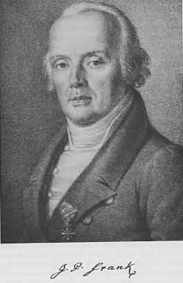
第29章 図１ Johann Peter Frank, 1745-1821 フランク
フランクがウィーン総合病院の院長であった1800年に帝国の首都に天然痘の大流行があった。これはイギリスから伝えられたばかりの新しい接種方法を試す素晴らしい機会であった。
この頃に天然痘は最も恐れられた最もひどい伝染病の１つであった。ドイツだけでも毎年３万人以上が死亡したと言われている。死なないで済んだヒトの多くは「あばた」顔になった。現在、あばた顔の人は殆どいなくなった。東洋に旅行してあばた顔を見たことのある人はいるかも知れないが18世紀にはヨーロッパのどこの町にも多く見られた。
その頃でも医師がこの病気に全く無力という訳ではなかった。この伝染病を防ぐ変った方法が東洋から伝えられていた。天然痘に１度罹ると２度は感染しないことが知られていた。また流行によって激しさの違うことが知られていてある時には死亡率が高く他の時には軽くて死亡者が殆どいなかった。従って軽い型の天然痘が流行っているときに罹るのが有利なことは明らかであった。このようにして罹ったヒトはその後は罹らなかった。このような考えによって軽い流行のときに偶然ではなくわざとこの病気に罹ることが試みられた。ヒンドスタン（＊インド北部の平原地帯）では子供をこのようなときに天然痘患者の衣類で包むことが行われた。中国では患者の皮膚から落ちた「かさぶた」をチューブで鼻の穴に吹き込んだ。また天然痘病原体はしばらく乾かして保存すると毒性が低くなることに気がついていた。中央アジアでは針で刺してこのように弱い病原体を皮下に入れることが行われていた。アフリカで奴隷商人たちは彼らの「商品」が天然痘によって大量に殺されるのを防ぐためにこのような方法が行われた。同じことがトルコで行われていた。ここでコーカサスからのチェルケス人女性奴隷は美人で有名であり高く売れた。もしも彼女たちが毒性の強い天然痘に罹って「あばた」になると彼女たちは価値が無くなった。従って若いうちに彼女たちは接種され接種された奴隷娘は高く売れた。彼女たちの顔があばたにならないことを買い手は保証されたからであった。
コンスタンティノープルで18世紀の初めにイギリス大使夫人のモンタギュー（＊著名な書簡文作家）はこの接種方法を知った。活発な女性で偏見を持っていなかったのでギリシア人医師に頼んで自分の子供たちに接種してもらった。子供たちはいつものように反応して非常に弱い天然痘に罹り早く回復してその後は免疫を持った。彼女は1718年にイギリスに帰り自分たちの例に従って王族の子供たちに接種させるようにと友達の皇太子夫人を誘った。「高貴な」生命を賭けるのに躊躇があり最初に重要でない人たちで試験を行った。すなわち７人の犯罪人と６人の孤児に接種しその後でふつうの天然痘感染に暴露させた。彼らも免疫を得たので遂に1722年に大きな冒険がなされ若い王子たちに接種が行われた。
宮廷の実例はこの「人痘接種」の素晴らしい宣伝になった。接種はイギリス全土に広がった。専門家が接種する人痘接種センターが各地に作られた。この方法はゆっくりではあるがイギリスからヨーロッパ大陸に広がり最初は1749年にジュネーヴでトロンシャンが行った。この頃ジュネーヴはイギリスと特別に親密な関係があった。ヴォルテールはこの新しい方法に興味を持ち一般に知られるように努力した。
人痘接種で多くの生命の救われたことは疑いもない。しかし天然痘の流行はしばしばあり多くの犠牲者が出た。接種はますます行われるようになったが、すべての人が行った訳ではなかった。現在でも感染性のある病原体をわざと接種するのは好ましくない方法であるとみなす多くの人たちがいる。この種の反対は多分18世紀にはもっと普通だったろう。接種にたいしての多くのサークルにおける不信は理由が無いわけではなかった。確かに人痘接種は危険が無いとは言えなかった。接種する材料は新鮮な天然痘膿疱からの膿であった。普通の方法は糸を膿に浸し乾かし接種を受ける人の皮膚を乱切し膿を浸した糸を乱切した表面に載せて包帯することであった。このようにして移されたものは基本的に危険な病気であった。接種師は病原体をしばらくの間乾かして保存することによって弱毒化することを習っていたが接種を受けた人が激しい天然痘に罹りその人だけでなく彼に接触するすべての人たちに危険になることが時には起きていた。さらに接種はヒトからヒトに行われた。充分な注意が払われたとしても天然痘だけでなく他の病気とくに梅毒が移るかも知れなかった。したがって人痘接種は理想的な予防法ではなく人に重大な危険を与えないで天然痘にたいしての免疫を与えることのできる病原体の発見が強く要求された。
18世紀の最後の年にそのような病原体すなわち接種に理想的な材料のイギリスにおける発見がウィーンに伝えられた。オーストリアの衛生担当医フェルロは問題をまじめに取り上げた。「この新しい方法で子供たちに接種することに同意する両親を見つけるのは困難であるし私はその他に接種を受けた人たちを近くで観察したいので私の子供たちに接種を行った」。彼は1799年８月30日に接種を行った。ジェノヴァ出身でイギリスにしばらくいてウィーンに落ち着いた若い医師カルロが10日後に同じことを行った。結果は満足すべきものであった。カルロは多くの他の子供たちにも接種を行い1801年には200例の観察を報告することができた。彼は結果に熱情を持ち新しい方法に熱心になって激しく反対者にたいして防衛した。反対者がいたからであった。皇帝の主治医であるシュティフトはいつものように反動的であり新しいイギリスの病原体を禁止することに成功した。しかし禁止はすぐに取り下げられた。1800年に天然痘の流行がありイギリス病原体を採用するかしないかを決めるのが専門家にとって義務となった。11月１日にフランクはウィーン総合病院で新しい痘苗を２人の病児に接種した。接種場所にできた膿疱は「かさぶた」になり「かさぶた」は落ちた。11月12日にイギリス病原体を接種した12人の子供たちに普通の天然痘病原体を接種した。誰も病気に罹らなかった。彼らは免疫を得ていた。したがって政府は回状を出して新しい接種方法を推薦した。
このように素晴らしく良い結果を与えた病原体とは何か？
この新しい接種方法を発見したのはイギリスの外科医だった。名前はジェンナーだった。ハンターの弟子でしばらく同居人だった。２人は親密な関係がありジェンナーはハンターを大いに尊敬していた。1753年にジェンナーは24歳のときに故郷のグロスターシアのバークリーで一般開業医になった。開業は流行り外科医として有名になり皆に好かれた。純粋に医学および外科学の研究の他にハンターの弟子として当然のこととして自然誌に興味を持ち時々ロンドンのハンター先生に観察結果を報告していた。
バークリーその他でしばしば雌ウシの乳房や乳首に天然痘の膿疱に似たものができる病気が起きた。ジェンナーはこれを牛痘と名付けた。この病気はヒトに感染することがあった。牛飼いや乳搾り女は時々同じような膿疱が手や腕に出来ることがあった。しかしこの病気は完全に局所的なもので全身症状はわずかであり全身に膿疱の出来る傾向は無かった。
ジェンナーが牛痘と呼んだ病気に罹ったことのある人たちは以前に天然痘に罹っていないでも天然痘に免疫があると民衆の間で広く信じられていた。開業していてジェンナーはしばしば人痘接種を行った。時々、地主は彼自身、家族、家庭の雇い人、農園の雇い人に天然痘の接種を行った。ここでジェンナーは牛飼いや乳搾り女で人痘接種の影響が見られないことに気がつき尋ねてみると前に牛痘に罹っていることを知らされていた。時には牛痘に罹ったのが50年またはそれ以上前のこともあった。
民衆の考え方は正しかったか？ 牛痘に罹ると天然痘にたいする免疫が得られるか？ もしもそうなら天然痘にたいする接種に理想的な病原体、効果はあるのに無害な病原体が彼の手中に準備されていた。
ジェンナーは自分の観察について書きロイヤルソサエティに送った。この学問組織のメンバーは首をかしげて田舎医師の草稿を送り返した。この実験は面白かったが彼らを納得させることが出来なかった。下等な動物の罹る病気にヒトの罹ることがありその病気がヒトを伝染病に罹らないように防ぐということは考えられないことであった。
落胆はしたがジェンナーは実験を続けて常に同じ結果を得た。遂に1798年に彼は４枚の図を含む75ページからなる「牛痘の原因と作用に関する研究」と題した小冊子を刊行した。
この本は啓蒙的な書き方で始まっている。
「元来、ヒトが自然により置かれた状態から逸脱することは病気の原因となっているようである。見事さへの愛、贅沢への楽しみ、慰みを好むことから元来は友人でない多数の動物とヒトは仲が良くなった。」
「オオカミは獰猛さを失って婦人の膝を枕にしている。我々の島の小さなトラだったネコの本来の棲みかは森であったが同じように飼い慣らされて可愛がられている。雌ウシ、ブタ、ヒツジ、ウマは目的が違うが人間に飼われ支配下にいる。」
しかし著者はこのような長広舌を続けた訳ではなかった。牛痘についての短いが明白な記載に進んだ［ここで牛痘は馬痘と同じとしているは誤り］。続いて23例の記載を行い、これから結論を引きだし以下のように終わった。
「とかくするうちに私はこの調査を遂行しよう。このことが人類にとって基本的に有益であるという希望によって勇気づけられている。」
この小冊子は一般に冷たく受け入れられた。書かれている学説はあまりにも知られていないものだった。他の人たちは実験を追試したが同じ結果を得ることはできなかった。しかしジェンナーは１歩も譲らなかった。1799年にその後の観察を刊行し1800年には３番目の小冊子を出版した。これらの論文で反対者のどこが誤っているかを説明した。
この頃まで得られた大量の経験から最も疑い深い人たちも納得するようになった。追試の成果が他の国々から注ぎ込まれた。ウィーンでこの発見が如何に歓迎されたかは既に述べた。間もなく新しい接種方法は至る所で行われるようになった。ジェンナーの発見が全く重要なことは明きらかになり早くも1802年にイギリス議会は国の感謝を示すものとしてジェンナーに１万ポンドを与える投票をした。５年後にさらに２万ポンドの交付を投票した。こういう事でイギリスは常に大ざっぱであった。ジェンナーの発見の国家への価値と３万ポンドはどういう関係であろうか？
しばらくして、この接種方法による免疫が生涯は続かないことが明らかになって熱狂は冷えた。しかし接種を繰り替えすと免疫の亢進されることがその後の経験によって明らかになった。
このようにして人痘の接種は
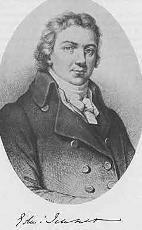
第30章図１ Edward Jenner, 1749-1823 ジェンナー
イタリアでフランクは医学を組織替えしイギリスの田舎でジェンナーは重大な実験を行っていたがフランスでは世界歴史の上で重要な事件（＊フランス大革命）が行われ医学の進歩に重要な影響を与えていた。我々はこの問題に転じよう。
パリで古い医学部は化石のようであって古代と同じように慣習的な権利を持ち続けていた。進歩は脇を通り過ぎて行った。ライデン、ウィーン、ゲッチンゲンは医学教育のセンターとして栄えていた。大学病院の臨床は医学教育の主な柱になった。解剖学、生理学、化学は大きな進歩を遂げていた。病理解剖学が生まれた。しかしパリの医学部では古い「学のある医師たち」が古代の教科書について議論を行い遠い過去に属する型の医師を増やしていた。医学部はときどき何か欠けていることを感じていたことは疑いも無かった。1778年に医学部は臨床教授の地位を設けるように覚え書きを提出した。しかし時は過ぎていた。有能な医師たちもフランスに多くいたが彼らは他の組織に属していた。
1776年に医学部の激しい反対にも拘わらずラッソンとヴィック・ダジールは王立医学協会を創立した。これはその頃の他の国にあった組織よりも優れていてフランスのすべての医師を医学の進歩のために集める組織であった。どんな辺鄙な田舎の小さな開業医でさえ何時でも協会に質問や提案をして自己の観察を協会に伝えることができた。将来の計画としてダジールは医学教育再編成の計画を立てていた。
フランスの外科医は1731年から同じような組織である王立外科学アカデミーを持っていて最も優れて影響力があったメンバーはアントワーヌ・ルイであった。ここで大革命が起きた！ 1789年５月５日ヴェルサイユで三部会が開かれた。同年７月14日バスティーユが襲撃された。８月27日に人権宣言がなされた。大革命はますます過激になった。王は逃亡を企てたが逮捕された。政府はオーストリアに宣戦を布告した。チュイルリー宮は襲撃された。1792年８月８日の布告で医学部は儀式抜きで解散した。フランスは共和国になりルイ16世はギロンチンで処刑された。1793年８月８日に国家が援助していたすべての組織は廃止された。この布告は外科学アカデミー、医学協会、および地方の医学部、外科医学校に及んだ。
従ってフランスにおける医学教育と医学臨床は混乱に陥った。もはや指導も管理も無くなった。開業したければ誰でも開業できた。しかるべき資格のある医師が不足しとくに軍隊で不足が顕著だった。フランスはヨーロッパの約半分と戦争をしていた。600人の医師や外科医がすでに前線で倒れていた。軍の医師不足は新人で補充され多くは若い学生であった。
国民公会は古い施設を一掃し基礎から再建しなければならなかった。公会はメンバーの１人であったフルクロアに再建案を立てるように任命した。彼は医師であり有能な化学者であった。彼はできるだけ早く案を立て1794年11月27日に公会に提出した。案は全般的に認められてすぐに実現されることになった。
最初に必要だったのはもちろん軍への医師の供給だった。３校の健康学校が、パリ、モンペリエ、ストラスブールに作られた。「医学」という言葉はこの学校の名前では注意深く避けられた。最初から医学と外科学はこれまでのように完全に区別されるべきものではないことを明らかにすべきものとされた。教育の種類がそれぞれ違う人々によって行われるべきではなく公衆の健康のための単一の医術であるべきとされた。半世紀後にドイツで莫大な量のインキと紙を必要とした医学と外科学の統一がフランスでは一振りで遂行された。
それぞれの健康学校には医学教育のために３つの病院が関係づけられた。１つは内科疾患のため１つは外科疾患のため１つは稀な疾患および特殊な合併症のためであった。教育組織は12人の教授と12人の助教授からなっていた。実験室の設備は全く新しくなり講義は（ラテン語ではなく）フランス語でなされた。共和国の各地域が推薦した学生１人は「祖国のための学生」として無料で教育を受けることができた。
このようにして医学施設がこれまで時代遅れであったフランスは１晩で最も尊敬すべき教育および研究施設を持つようになった。これは単なる体制の変化ではなかった。医師たちの全精神状態が変化した。彼らはもはや後を見るのではなく前を見た。新しい傾向を見ようとし義務を熱心に果たした。パリの学校は600人の学生で始まり数年後には1500人になった。医学教育の新しい可能性は国中から若い能力を持った学生を集めた。フランスの臨床医学は他の国より先を行くようになり医学の進歩を数十年にわたって導いた。
革命が始まった頃にフランスのドソーがヨーロッパで最も優れた外科医であることは疑いが無かった。局所解剖学の創始者の１人であり彼が貢献しない外科学の領域は無かった。パリのオテル・デュー病院の外科医で革命前にも多数の学生によって高く評価されていた。健康学校が創設されたときに彼は信頼されて外科臨床の長になった。
ドソーの臨床では毎日、その日の臨床教育が始まる前に実習生は前の日の臨床講義について詳細の報告をすべきことになっていた。ある日、決められていた実習生が来なかった。１人の学生が助けに現れ準備無しにすばらしい報告をしたので聴衆は大喜びをした。学生はビシャでありこのようにしてドソーは彼に注目した。
ビシャは田舎の医師の息子でモンペリエとリオンで学び同年代の他の若者と同じように軍隊に召集された。1793年からはパリにいた。謙遜で内気で能力のあるこの若者をドソーは大いに好んでいた。一緒に暮らすように若いビシャを招待し「外科学雑誌」の編集者にし彼の進歩を促進するすべて可能なことを行った。しかしドソーは1795年に死去した。
古い科学協会は解散され改めて設立された。ビシャ自身は1796年に「医学競進協会」を設立し若い医師たちは一般医学の問題について集まって討論した。
ビシャの興味を持ったのは何よりも一般医学だったからである。彼は外科医として開業する気はなかった。彼が選んだ分野は解剖学、生理学および病理学総論であった。1800年に彼はオテル・デューの医師になった。彼は解剖学と生理学の教授になることを希望したが他の候補が選ばれた。従って個人的な講義と教示を行い多くの学生が出席した。彼は熱狂的なエネルギーで実験、解剖、病理解剖を行った。実際、彼は朝から晩まで病理解剖室で過ごし１年に600体の解剖を行ったと言われている。健康が勝れず彼は30歳を過ぎたばかりで死去した。
彼は時期尚早に世を去ったが、幾つもの優れた本を世に残した。そのうちの３冊だけを挙げよう。「諸膜論」（1800）、「生と死についての研究」（1800）、「一般解剖学」（1801）である。
ビシャの方向はハラーから出発しモンペリエ学派によって生気論に導かれていた。ハラーと同じように生命は独自の法則を持ち生理学的過程は物理的なものと基本的に異なると彼は考えていた。生命現象は生物に内在する性質である「生命特性」によって決定されるもので観察は出来るが説明することは出来ないとした。生命は死に抵抗するすべての機能の総和であった。ビシャの生気論は書斎の生気論ではなく当時の生気論と同じように実験室の結果から導かれたものであった。彼の研究は実験結果に満ちており、それによって啓発されているので唯物論的な生理学者ですら尊敬の念を表していた。
ビシャの医学への貢献は多くの18世紀の医師たちと共通な一般的な生気論的見解ではなく特定臓器の病気における重要性であった。モルガニはある特定臓器が常にある病気の「座」であると宣言した。しかし違う臓器が病気になっても、症状は時に同じことが観察された。後に詳細に述べるピネルは病気は場所が違っても内部構造が似ている臓器を襲うと考えることによってこのような例を説明した。これは正しい考えではあるが一般化し過ぎていた。
ビシャはこの考えを採用した。臓器は何から成っているだろうか？ ビシャが「膜」と名付けたところの組織から成っていた。ビシャは単純な組織を21種に分類した。ここで動物細胞はまだ発見されていないことを忘れてはいけない。従って組織は形と機能の似ている細胞の集まりであることに気付くのは不可能であった。ビシャは彼の「膜」を細胞構造ではなく大ざっぱな性質で分類せざるを得なかった。従ってこんなに数多くの種類があると考えたわけであった。
臓器はこれらの組織から成立っている。組織は正常および病的な生命機能を支持するところのものである。従って病気の「座」は臓器全体ではなく組織である。ある臓器のある組織は臓器を形成している他の組織とは別に病的状態に成り得る。実際、これが普通に起きていることである。さて異なる臓器の同じような組織が同じように病気になると必然的に同じような病的症状が起きる。
ビシャはこれらの組織を詳細に研究し構造および特にそれらの性質を研究した。弾性や熱・酸・アルカリなどで処理したときの挙動などがそれらの死後の性質であった。また正常および病理的な条件における生きている性質であった。
このようにビシャは病理学を解剖学的に見る方法をステージ１つ先に進めた。臓器から組織へであった。数十年後になって動物細胞が発見され当然のこととしてさらに進歩してウィルヒョウの細胞病理学が生まれた。
ビシャは２つの時代の転換期にいたことになる。彼は18世紀に始まりハラーとモルガーニが築いた基礎の上に立った。しかし彼の研究は19世紀のプログラムを具体化したものであった。彼は医学の進むべき路を示した。生理学の概念による病的現象の解析ならびにこの同じ現象を解剖学的基礎へ関連させることであった。
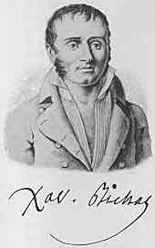
第31章図１ Xavier Bichat, 1771-1802 ビシャ
前に述べたようにドソーはフランスにおいて外科学に関する新しい臨床研究の創立者であった。ドソーの弟子の１人であったコルヴィザールはフランスの内科学臨床について同じことを行った。1794年に起きた広範囲にわたる組織改革でドソーが第１外科臨床の長になったと同じようにコルヴィザールは第１内科臨床の長になった。コルヴィザールはドソーと同じようにこれ以前に数年にわたって臨床家として活動していた。1788年に彼は先生のデボアの後継者としてシャリテ病院の医師に任ぜられ殆ど軍隊的な正確さで臨床研究を模範的に組織化していた。
コルヴィザールは法律家になることになっていた。学校で勉強に熱心だっただけでなく運動が得意であった。父親は国王の法務官であり子供を事務所に連れて行った。しかしコルヴィザールは法律文書を写すのを退屈と思っていた。できるだけこの奴隷状態から逃げてカルチエ・ラタンに行っていろいろな講義を聴きパリ市最大の病院のオテル・デューに行ってドソーの言っていることを聴いた。遂に父親の職業から離脱して医学生になった。ドソーの病院で訓練を受け1782年に医師となり最低のサラリーで教会区医師になった。しばらくしてマダム・ネッカーが創立したネッカー病院に空席があった。彼は応募し管理者の前に出た。管理者はこの若者がウィッグ（かつら）をしていないのを見て怒った！ 他の点では資格も推薦も充分であったがウィッグをしなければ病院医師に任命することは出来なかった。コルヴィザールはこの点で譲歩することを拒否して就職を断って書いた。「外観を尊重して迷信に陥るべきではない」と。
ここで彼は解剖学と病理学に専念した。病理解剖で指を傷つけた。消毒法が発見される前にはこれによって致命的な敗血症になることが多かった。自制的な落ち着きで手に時計を持って硬直が始まるのではないか待ったが幸いなことに起きなかった。外科と内科のどちらを専門にするかを選ぶにあたって彼は内科を選び前に述べたようにシャリテ病院で働き数年後には院長になった。
今や彼は臨床家になったがフランスには臨床の習慣が無かった。従って彼はウィーン学派と連絡することにした。ウィーンの臨床は世界の手本になっていたからであった。彼が書いた３冊の本のうちで２冊はウィーンの医師が書いたものの飜訳であった。彼はシュトールの著作を研究し1797年に彼の「箴言」を訳した。ここで打診について学んだ。これはパリでは聴いたことが無い方法であった。「打診は私に強い感銘を与えた。胸部の稀な病気にせよ簡単で理解しやすい病気にせよ、この方法を絶えず実施するようになってから感銘を受けている。打診法を完全に利用できるような患者の条件のときに私は迷うことがなかった。これに対して打診について何も知らなかったり無視したりする人たちは診断において多くの重大な誤りを起こしていることを率直に認めなければならない」と。20年のあいだコルヴィザールは打診を行い使用方法を開発した。それからは打診が臨床診断と不可分なものになった。
アウエンブルッガーの「新考案」のフランス語訳は1770年に刊行されていたが飜訳は悪かった。訳者は打診を試みたことがなかったしこの方法を信頼さえしないので打診法は新しいものでなく「ヒポクラテス集典」に書いてあるものと思っていた。したがって1808年にコルヴィザールは新しく飜訳し詳しい注釈をつけた。アウエンブルッガーの小冊子は完全に新しいものになり95ページのものが440ページになった。これによって新しい方法の打診法は豊かな果実をつけるようになった。臨床医学は進歩し大部分の臨床家たちは解剖学的に考えるようになり病気のあらゆる例で症状を体内臓器の変化に結びつけるようになった。
1797年にコルヴィザールは２番目の教育研究職としてコレジ・ド・フランスの臨床医学教授になった。ここで彼は教師として光った。多数の医師が彼により訓練された。朝にはシャリテ病院で回診をして一群の学生を連れてベッドからベッドに移動しそれぞれの患者について出来るだけ注意深い診察を行った。「感覚の医学的訓練」が彼の標語でありプログラムであった。学生たちは自分の感覚器の使い方を習わなければならなかった。患者のベッドサイドで理論は表面に出ない。問題となるのは見ることと聴くことだからであった。コルヴィザール自身は素晴らしく鋭い観察者であった。ある日、肖像画を見て、次のように言ったと言われている。「もしもこの絵が信用できるなら疑いもなくこの人は心臓病で死んでいる」と。調べたら正しかった。
臨床で患者が死ぬとまず死体をそのまま注意深く検査した。次に死体解剖を行い診断がこれによって確認されると医師および学生たちは喜んだ。しかし更に教育的であったのは診断と解剖結果に違いの起きたときであった。この場合は、なぜ間違えたか、この新しい結果から何を学ぶことができるかの説明を医師たちはコルヴィザールに大家にふさわしく述べる機会を与えた。夕方に彼は朝に行ったことについて、ふつう準備無しにコレジ・ド・フランスで理論的な講義を行った。
このようにパリの臨床ではモルガーニが着手した路を体系的に進んだ。患者は全く細かく検査された。死亡すると病理解剖が行われた。続いて病歴と剖検報告は互いに付き合わされた。コルヴィザールの考えで理論はさしあたって大きな意味が無かった。最初に必要なのは当時の医学知識において正しい観察を充分に集め病気の精確な像を作ることであった。このさい考え方は解剖学一辺倒ではなかった。生理学にも当然の重点が置かれた。「病理生理学を自分の解剖学と結びつけることができない医師は器用で勤勉で辛抱強い解剖師以上の何ものでもない。臨床の実際において気迷いし不安だろう。特に器質的な傷害の治療にあたっては。」
コルヴィザールは自分の主著をモルガーニの例にならって「診断徴候によって研究し解剖学によって確認した病気の座ならびに原因について」と命名したかった。しかしこのためには新しいモルガーニが必要だったろう！ コルヴィザールはこのように大きな仕事に自分が不適と感じていたし更にこの仕事は時期尚早であった。まだ充分の材料が集められていなかった。その一部であるが極めて重要な部分すなわち心臓病にコルヴィザールは専念し終了した。1806年に「心臓および大血管の病気ならびに器質的障害についての論文」を刊行した。まず心臓の器質的な病気が如何に普通であるかを示すことができた。また機能的および器質的な心臓病の区別が必要なことを主張した。打診の助けによって彼は個々の心臓病の臨床像の作成を試みた。さらに彼は心臓の肥大と拡張を区別することが可能になり現在は心臓の代償不全と呼ばれるような機能不全の経過を細かく研究した。
このようにコルヴィザールの臨床は有能な医師を訓練するだけでなく長期の見通しで研究を進めた。彼の心臓病研究は新しい方法によって得られる成果を示した。
1807年にコルヴィザールはナポレオンの主治医になり新しい義務は臨床医学教師としての仕事からますます手を引くようになった。患者の数は毎日のように増加し社会的な責任はもっと総合的になった。ナポレオンは気難しく我が儘な患者であったがコルヴィザールは巧みに取り扱っていた。医学は信用しないがコルヴィザールを信用していると皇帝がある時に言ったと記録されている。
1815年にナポレオンの帝国が没落した後にコルヴィザールも舞台から消えた。彼は中風発作で麻痺し田園別荘に隠退した。学派の創立者ではなかったが多くの優れた弟子を訓練しその中にはラエンネック、ベイル、デュピュイトラン、ブルトノーがいて、彼らはコルヴィザールの方針に沿って研究を行い彼の仕事を続けた。
ピネルはコルヴィザールと同時代人で同僚だった。コルヴィザールはパリのシャリテ病院の院長でピネルはサルペトリエール病院の院長であった。サルペトリエール病院は精神および神経を病む婦人のための病院であった。コルヴィザールはコレジ・ド・フランスの臨床医学の教授でピネルはエコール・ド・メドシンの衛生学教授で後に内科病理学教授になった。同じ時代であり実際に同年生まれであったが２人は全く違っていた。肖像画を見てごらんなさい。コルヴィザールは自信を持つ世慣れた男の顔つきをしていてナポレオンにたいして自分の見解を率直に言うことを恐れなかった。ピネルの顔つきは性格を洩らしている。引っ込み勝ち控えめ臆病なことを示している。コルヴィザールとピネルの医学的な見通しも考え方全体も同じように根本的に違っていた。［それぞれ外向的と内向的、肥満型と無気力、と違っていた！］
ピネルは回り道をして医師になった。貧乏な田舎医師の息子でまず神学生になったが哲学の研究に移り感覚論者の学説に近い考えを持ってコンディヤクの信奉者であった。しばらくして自然科学の研究を行い医学の勉強を始めたのは30歳になってからのことであった。トゥールーズ、モンペリエおよびパリで学び1798年には主著である「哲学的疾病論」を刊行した。この本は20年のあいだに６版を重ね多くの信奉者が得られた。
ピネルは哲学者であるととも科学者であり特に科学者であった。彼にとって医学は科学の一分野であり、植物学、動物学、鉱物学と全く同じように研究すべきものであった。病気は植物や動物の種と同じように
ピネルはシデナムに始まった方針に従って研究した。「病気の種」があると考える人は植物学者が植物を分類し動物学者が動物を分類するように病気の種を体系的に分類する努力をした。植物学者であるとともに医師であったリンネは「病気の属」と題した著作を書いた。同時代人でフランスの医師で植物学者のソヴァージュは18世紀の中葉（1768）に「疾病分類論」を書き副題に「シデナムの精神に従って植物学で使われた方法で分類した」ことを宣言した。彼は2700種の病気を区別し、科、属、種に並べた。リンネの体系は伝染的な影響を持ち当時の多くの医師たちは植物の分類表に似た病気の分類表の必要性を感じていた。
方法は違ったがピネルの本はこの傾向の表現であった。彼は先人たちの仕事をよく知っていたが彼らのシステムは不適当に人工的であまりにも複雑であり誤っているとみなしていた。彼らの誤りは単なる症候群や合併症を独立の病気とみなすことにあった。このことによって自然には実際に存在していない非常に多くの病気種を確立した。個々の病気はその本質的な形が明らかになるまで充分に分析しなければならない。これこそ分類の基礎でなければならない。分類の方針は生理学的および解剖学的な考えによって決められるべきである。ここにピネルと先人たちのあいだの隔たりのあることが判る。ピネルは絶えず解剖学的な基本を考えていた。例えば皮膚の炎症、粘膜の炎症、漿膜の炎症、実質すなわち種々の臓器の基本的な成分の炎症、筋の炎症、その他。
何故ピネルの本が驚くべく成功したかは容易に理解できる。実際的な考えをする医師たちが繰り返して要求したようにピネルは医学を不確かさから解放し暗闇で模索しないようにすることを要求した。彼の同時代人であるコルヴィザールは医学が「推測の術」であるという古い格言を生き返らせていた。しかしピネルにとって医学は自然科学の１つであり植物学や鉱物学のように精確な科学でなければならなかった。患者のベッドサイドの医師はそこで進行していることをヒポクラテスが観察したように出来るだけ精確に観察するべきであった。ピネルはヒポクラテスを非常に尊敬していた。医師は分析を進め取り扱っている病気の真の性質を決定して分類上の場所を確かめなければならない。これが診断の目的であった。事実、医師は精確な診断を行ったら任務は殆ど終わったことになる。病気を治したと主張する勇気が誰にあるだろうか？
ピネルの「疾病論」は魅力があったが時期尚早であり誤った試みであった。当時は病理解剖学の知識がこのように遠大な推理をするほどまだ進歩していなかった。いやもっと言うと彼の確立しようとしたシステムは結局のところ不可能であることが明らかになった。現在のわれわれの疾病論の利点は完全な体系化を放棄し或るグループの病気を可能なかぎり定義することだけで満足していることにある。
コルヴィザールの型の医師は病気の原因を求めて仕事をしていた。原因の鎖に光を当てて鎖の環を１つづつ病気の最初の出現から最後の症状が無くなるまで病気の病因を発見しようとした。彼らが歩かなければならない路は長く辛かった。多くのことは不明で多くのことは説明できなかった。しかし、これは我々が今でも進んでいる路である。さらにこの路の終点は治療であり患者の治癒であった。これに対してピネルの方法は記載的であった。コンディアックにとって認識は話す能力以上のものではなく感覚を言語記号で表現する能力以上ではなかったのと同じようにピネルにとって医師が行わなければならないことは当面した病気にたいして適した名前を見つけることであった。このような考えの明らかな結果は治療虚無主義であった。
それでも記載的、分析的方法が著しく成果をあげる医学分野があった。とくに明らかな病像がそれまで存在しない分野および病理解剖学がまだ不明瞭な分野であった。この２つの保留条件は精神病学および皮膚病学にとくに適合した。数千年にわたって皮膚病は体液の障害たとえば「発疹」は病的な体液の出現とみられてきた。これらの発疹の典型的な形、色、経過、は殆ど注目されなかった。二次的な重要性しか無いとみなされたからであった。植物学者が植物を記載するように個々の発疹を精確に記載する時代になった。1806年にピネルの弟子アリベールは素晴らしい着色図の多い皮膚疾患についての大作の出版を始め、科、目、種に分類した皮膚疾患の自然体系の製作を試みた。これらの病気の病理解剖的見地による分類は局所変化についての充分な知識が得られていないのでまだ不可能であった。ようやく1842年になってウィーンの有名な皮膚科学者ヘブラはこのことを試みることができた。
精神病学でもまた実際に行われたのは種々の心の病について単に記載することだけであった。病理解剖学的な説明はまだ不可能だったからであり実際のところ多くの精神障害について今日でも不可能である。疑いも無く身体の状態、種々な中毒、感染、脳の病気によって、精神障碍の起きることが知られていた。1793年にイタリアの医師キアルジは精神障害で死亡した62人の病理解剖の報告を含んでいる本をフィレンツェで発行した。しかし一般に言って精神障害に罹っているあいだに死亡した患者の死体解剖では脳にほとんど変化は無く従って記載的な方法によって精神障害の症状学をある程度整頓することは遠い将来のことであった。
精神病学においてはピネル自身が先頭を切った。彼は精神病院の院長であり非常に多くの患者を観察していた。彼は精神障碍についての本を書いた。しかしこの領域における彼の貢献たぶん生涯における最も重要な成果は、精神障害者の不幸な運命を楽にしたことであった。個人的な経験が彼を精神病学者にした。彼の友達の１人が狂気になって森に逃げ込みオオカミに食い殺された。1792年にピネルはビセートル病院の院長に任命された。この場所の状態は恐ろしいものであった。患者たちは鎖で繋がれ野獣よりも酷い取り扱いを受けていた。1788年にミラボーはビセートル病院で起きている恐怖を書いたパンフレットを出した。病人には世話をする医者さえいない、と彼は書いた。「新しい入院患者は考え無しに狂人の群に投げ込まれ不作法な若者たちは数スーの小銭を払って野獣のように見物した」と。大革命が始まったときに精神障害者にも自由がもたらされた。彼らにも「人権宣言」が適用された。しかしそれだけでは良くならなかった。ピネルは改革に全力をあげた。彼は個人的に国民公会に行き鎖を除くことを代議士に納得させその後で精神障害者は普通の病人と同じように見做され取り扱われるようになった。最初はビセートル病院において続いてサルペトリエール病院において彼は何年も改革に努力した。狂人収容所だったものが病院になった。
1822年に聖職者介入反対の騒動が
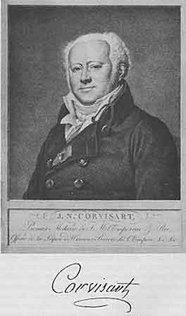
第32章図１ Jean Nicolas Corvisart, 1755-1821 コルヴィザール
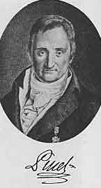
第32章図２ Philippe Pinel, 1755-1826 ピネル
コルヴィザールの仕事によって胸部疾患の診断における打診の意義がすべての医師たちに明らかになった。胸内で起きている解剖学的変化に光を投げかけるような音色が作られた。医師は身体のこの重要な部分の状態を「聴く」ことができた。打診音のように人工的に作ったのではなく自発的に作られる他の音が胸内には無いだろうか？ ひどい気管支炎の患者では息が気管支を入ったり出たりするときに起きる口笛のような音を遠くからでも聴くことができる。医師は患者の胸に耳を当てるともっとよく聴くことができる。古くからヒポクラテス主義者たちはある種の病気の人たちにおいて胸内で不思議な音が起きていることを指摘していた。「沸騰している酢のように煮えたぎる音がする」とか「新しい革紐のようにきしる音がする」と彼らは言った。しかしこれらの完全に正確な観察も医師たちが解剖学的に考えるようになるまで役に立たなかった。最後に19世紀に病人で起きる解剖学的な変化を生きている身体の中で「見る」ようにすべての努力が払われるようになってこのような音は新しい価値を獲得した。医師が耳を胸に当てると心音を聴く。多くの病気で心音はいろいろと変化していた。
コルヴィザールの弟子の１人だったラエンネックは心音を聴くことの重要性を主張した先覚者であった。1916年に彼はネッカー病院の主任医師になった。［もはや病院医師はかつらをつけないでもよくなった！］先生のコルヴィザールのように胸の病気に特に興味を持っていた。しかし胸に耳を当てる直接聴診に大きな困難のあることを感じていた。完全に清潔にしていない入院患者で医師に非常に不愉快なことがあった。太った女性では不充分な結果が得られた。ラエンネックが世話をしている患者に心臓病の肥満した女性がいた。耳をすましても心音をはっきりと聴くことができなかった。この患者の診察に行く途中でルーヴル宮殿の中庭を通った。片隅に古い材木が積まれていて子供たちが遊んでいた。彼らは新しい遊びを発見していた。木材の１つは長い梁であった。１人の子供はその片側に耳をつけ他の子供は他の端を叩いて信号を送っていた。これはラエンネックに着想を与えた。彼は足を速め患者の所に着くと１帖の便箋を要求した。彼はこの紙を円柱状に丸め一端を心臓が拍動しているところに当て他端から聴いた。結果は素晴らしいものだった。耳を胸に当てたときよりも心音をずっと良くずっと明白に聴くことができた。場所を変えて紙の円筒を動かすことによって心臓のあらゆる部分からの音を聴くことができた。次に呼吸音を聴いた。非常に大きな音になったことに驚いた。聴診器が発見され、尿を入れたガラス器具が中世の医師のシンボルであったように聴診器はその後の医師のシンボルになった。聴診器を使う間接聴診は耳を胸に当てる直接聴診に置き換わった。新しい理学診察法が見つかった。身体の内部の情報を入手する新しい方法である。
次はこの新しい方法を発展させることであった。聴診器で聴くことができる種々の音の本性およびそれらが何を意味するかラエンネックは確かめなければならなかった。道筋はアウエンブルッガーおよびコルヴィザールが打診について行ったのと同じであった。すなわち生きている患者についての注意深い観察と死体解剖結果の確認であった。３年にわたってラエンネックは熱心に研究を行い1819年に２巻の「間接聴診法および肺と心臓の病気の概論」を刊行した。ここで彼は疲れてしまった。彼は丈夫でなかったからであった。しばらく仕事を休んで故郷のブルターニュに帰り２年のあいだ引きこもり古典の著者たちの本を読みケルト語を勉強した。
ラエンネックはブルターニュと密接な関係を持っていた。彼は信心深いカトリックで熱心な王党員であった。カンペールに生まれナントで大人になり医師である伯父と住んでいた。若いラエンネックが医師になるのは自然のことであった。革命と反革命が世界のこの部分で荒れ狂った。伯父は軍隊に召集され子供のラエンネックも一緒に行って戦場で医学初歩および外科の実際を学んだ。その後で1800年にパリに行って正式の教育を受け優秀な学生で1804年に学位を得た。医学校全体は研究に専念していた。革命は科学研究を専門家の責任の一部としたからであった。「健康学校」を設立した法律は教授たちに「医術の進歩のために貢献するすべての科学を徹底的に研究するように絶えず努力するように」と要求した。この目的を良く達成するために「パリ医学校学会」が設立され教員および多くのエネルギーを持つ若い者たちがこれに属した。1820年にこの学会は「医学アカデミー」になった。ラエンネックは最初からこの会の活動とくに病理解剖学および寄生虫学の分野に活発に関与した。1812年に彼はボジョーン病院に職を与えられ２年後にサルペトリエールに移り最終的には前に述べたようにネッカー病院の主任医師となった。
健康が不良になったのでラエンネックは２年のあいだブルターニュに留まり1822年には充分に健康が元に戻りパリに帰った。この年に彼はコレジ・ド・フランスの実地医学教授に任ぜられ次の年に医学部の臨床教授に任ぜられた。彼の本は半信半疑で迎えられた。多くの医師たちはこの新しい方法の利点を認識できなかった。かなりの数の人たちは理学的検査は医術の機械化に導くものであって真の医師道を妨げることを恐れた。彼らが反対している検査は控えめな始まりであり次に始まる世紀には装置や器具の兵器庫が作られてその結果として病気の徴候はますます客観的に考えられるようになり量的に記録される程度が増えることを彼らは認識できなかった。しかし肯定的な声も間もなく聴かれるようになりますます増えてきた。打診の価値が判っている人たちには聴診の価値を認識できないことはなかった。全世界から医師たちはパリに来てシャリテ病院でラエンネックの指導のもとで新しい方法を学んだ。しかし彼はこのように教えることができたのは数年だけであった。1826年に著書の拡大第２版を刊行したすぐ後に彼は再び病気になった。彼はブルターニュに戻ったが今度は転地療法が有効ではなく間もなく肺結核で死亡した。肺結核は彼が注意深く研究していた病気であった。
ラエンネックは聴診法の発見者以上であった。優れた解剖学者であり偉大な臨床家であった。聴診器の発明はすばらしいものであったがもっと重要なことはこの器具を使って彼が行ったことであった。彼の本は胸部疾患、すなわち心臓の病気と肺の病気の歴史における道標であった。病理学各論における新しい分野が開かれた。臨床的および解剖学的に種々の病気の新しい概念が確立された。彼の本には、気管支腺の病気、気管支拡張症、肺気腫、肺梗塞、肺の壊疽および浮腫、肺炎の種々な段階、肺結核について立派な記載が含まれていた。医師たちがある病気に詳しくなってメカニズムの理解が広くなればなるだけ年とともに目的意識を持つようになり治療法が生まれてきた。新しい病理学的な考えが治療にすぐに影響するのでないことは明らかであった。しかし医師の第一の任務は患者の福祉促進であることをラエンネックは常に完全に気がついていて経験によって最も有効な方法を使ってこの目的を果たすように試みた。
ピネルがコルヴィサールと並んだのと同じようにブルセーはラエンネックと並んでいた。これらの人たちは補い合い対照的な組み合わせであった。19世紀の２番目の10年におけるパリの医学界は１番目の10年と同じようにばらばらに割れていた。ラエンネックとブルセーはコルヴィザールとピネルよりもっと明白に違っていた。彼らはフランスの同じ地域出身で２人ともブルターニュ人であった。しかし外見だけからでも彼ら２人のような違いを考えることはできなかった。ラエンネックは痩せていて肺結核のタイプであった。ブルセーは太っていて体格が良かった。ラエンネックは静かに話して言うことは要領を得ていた。ブルセーは誇張して話し大声をしばしば出した。ラエンネックはカトリック信者であり王党派であった。ブルセーは妥協しない無神論者で大革命の息子でありナポレオン皇帝の支持者であり王の敵であった。
ブルセーの教育は未完成で概略だけのものであった。田舎の開業医であった父親が往診から帰ると若者は馬に乗って薬を届けなければならなかった。大革命の渦巻きに巻き込まれて1792年に前線に出た。その後で聖マロとブレストの病院で医学を学び次いで海軍外科医となって英国と戦い、ときには政府の船、ときには個人の船に乗船した。このような航海から家に帰ったときに両親は王党派によって殺されていた。ラエンネックより１年早く彼はパリに行き、ビシャ、コルヴィザールおよび特にピネの下で働いた。ピネの支持者であったがしばらくして激しい敵対者になった。学位を取ってから彼は陸軍外科医になりナポレオンの陣営で熱狂的な役割を果たした。ナポレオンの失脚の後でパリに帰りヴァル・ド・グラース陸軍病院の助教授になった。
彼の最初の本は1808年に刊行された。「慢性炎症の病誌」という大きな本であって非常に独創的な考えを提出した。1816年以降に彼はいろいろな題の数多くの本を書いて彼独特な病理学についての同じ学説を展開し支配的な医学思想に反対する活発な論争を行った。17世紀以後に強く確立された病気の概念すなわち病気とは性質がはっきりと明らかにされた
もちろん臓器には病理的な変化があった。19世紀の最初の10年間に誰も否定するものはいなかった。ブルセーは非常に多数の死体解剖を行っていたから勿論のことであった。しかし問題となったのは、どちらが原因でありどちらが結果であるか、どちらが一次的なものでどちらが二次的なものか？ であった。結核の変化もガンの変化も炎症の産物に過ぎなかった。この炎症は殆どいつでも一次的な病気であった。刺激が炎症を起こした。最初は局所的なものであったが「
ブルセーはその学説を「生理学的医学」の名前で普及させていた。これが争わずに受け入れられる筈のないことは言う必要も無いだろう。ピネルは老年だったので論争を好まず従ってラエンネックが講義の中で「いわゆる生理学的医学」に対して反対運動を行った。しかしラエンネックの講義に出席する学生は少なかった。彼は講義が上手ではなく病気がちであったので稀にしか話すことができなかった。学生たちはブルセーの講義を聞くために群れを成し存在論者たちに対する皮肉に笑い転げた。このような争いのあいだに悲劇が起きた。梅毒の毒が「よた話」であるというブルセー学説を確かめるために１人の学生は梅毒の新鮮な潰瘍から膿を自分の腕に接種し典型的な
1830年に７月革命の後でブルセーはパリ医学アカデミーの一般病理学教授に任命された。しかしその時に彼の名声は衰えていた。ラエンネックの見解は聴診器発明者の有能な弟子たちによって仕上げられ絶えず進歩していた。

第33章図１ Rene Theophile Hyacinthe Laennec, 1781-1826 ラエンネック
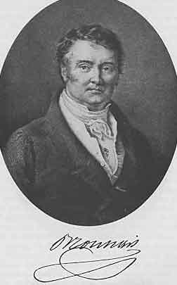
第33章図２ Fran
 ois Joseph Victor Broussais, 1772-1838 ブルセー
ois Joseph Victor Broussais, 1772-1838 ブルセーコルヴィザール、ラエンネックおよび彼らの弟子たちはパリの臨床を世界で有名にした。新しい臨床診断の方法を勉強したい人たちや病理解剖学の新しい成果を学びたい人たちはパリに向かって急いだ。「そこに医学界のほとんど全部の若者が向かった。パリよりも条件が優れもっと多様な所は無い」と1841年にチュービンゲンの若い講師ヴンデルリッヒは書いた。彼はパリを２回も訪ねていた。しかしウィーンも訪ねており優れた若い科学者たちと会っていた。ウィーンの医学部で新しい学問が花咲きはじめている感触を得て次のように書いた。「ドイツ医学におけるこの新鮮な傾向を新しい学派であるとみなして良い、と私は信じている。これは１人の男（＊ロキタンスキー）によって始められたものではあるが熱心な援助者たちがいる。このことは印象的である。代表者が多いからではなく彼らの質および成果が重要だからである。彼らはそれぞれ独特な方法で研究しているが間違いなく全員に共通な質を示している。これらの有能な研究者たちの特性を若いウィーン学派と呼んでも誰をも傷つけることにはならないであろう」と。
ファン・スウィーテンの努力によって作られた古いウィーン学派は世紀の変わり目に衰えた。フランクは1804年に（＊臨床教授の職を）去った。宮廷医シュティフトは専制的であった。医学部の重要性は低下し続けた。ヨーゼフ２世は教育でラテン語使用を廃止したが再導入された。教授たちは厳しい検閲を受けた。ウィーンで役に立つ有能な人を探すのは無駄だったようであった。有能な人たちがいないわけではなかった。傷の開放処置を導入した外科医ケルン、産科医ボエール、眼科医ベールなどがいた。ウィーンは独立した眼科臨床を最初に設けたドイツ語圏の大学であり1812年のことであった。1818年に初代の眼科教授が任命され眼科の授業は必修になった。フランクの影響が未だ消えていない1805年に法医学と「医事行政」（公衆衛生）の特別な講座が創設された。しかし医学校としてウィーンは衰えていて疑いなくフランスは医学において世界の指導的立場にあった。
しかしウィーンで新しい学派が作られつつあることを1840年になってヴンデルリッヒは見出した。学派の創設者は病理解剖学者ロキタンスキーであった。ヴンデルリッヒが印象のまだ新しいときに書いたことを引用しよう。「病理解剖学副教授ロキタンスキーはこの数年来『オーストリア医学年報』にしばしば論文を書いていた。これらは形、傾向、内容においてこれまでのものとだけでなく我々がドイツで慣れていたすべてのものと異なり強く対照的であった。個々の新しい論文で明らかなことは論文が単に注目に値する重要な観察なだけではなく［そうであったら同じような機会があれば誰でも書くことができるだろう］、特有で論理的な精神が見かけ上は乾ききった論文で呼吸しており論文を生き生きとさせふつうの病理解剖報告のレベルよりもずっと高めていた。論文は次々と出ていた。これらは当時にドイツで流行していた多くの学説に対立していた。これらは印象的に独創的なスタイルで表現されておりこれによって納得力を得た。病理解剖における観察から出発して一般問題や病理学の問題を論じ治療の適応に有益な光を投げかけた。これらは孤立したものではなかった。他のウィーンの医師たち、たとえばコレチュカ、シュコダ、ヘルム、シュー、その他の種々の若い権威者たちが書いた論文や本が続いた。彼らは同じまたは類似の意味および同じ原則から出発してまったく種々の医学分野に関連してラエンネックの時代以後にはなかったような結果を生んだ。これらの著作が１つのものを起源としていることは明らかであった。個々の著者は互いに独立ではあったが彼らの間に１つの知的な傾向があり１つのお手本に従った結果であることを読者が見逃すことはあり得ない。
「ロキタンスキーが病理解剖学研究所で働き出して以来、新しい生命が入りこんだ。多数の外国からの医師たちが年毎に集まってきた。再びウィーンに学ぶべきことがあった。他のところでは探しても無駄なものを再びウィーンで見ることができた」と。
ロキタンスキーは1804年にケーニヒスグラツに生まれた。彼はプラハとウィーンで学んだ。ウィーンで病理学研究所のワグナーの助手となりしばらくしてワグナーの後継者になり1844年に病理解剖学の正教授となった。病理学研究所は彼の努力によって医学部の中心になった。再びヴンデルリッヒを引用しよう。「ウィーン総合病院」（＊ベッド数が2000に近く、この頃には世界最大）のいろいろな病棟で死亡した患者の死体はここに送られれた。‥‥病理解剖は主治医によって行われるのではなく病理解剖の教授によって行われた。‥‥教授には診断と簡単な臨床歴しか送られて来なかった。打ち合わせが不適当であったと考えられるかも知れないし場合によってそうであったかも知れない。ここで我々が考えている例ではほとんど何時でもこの方が良かった。‥‥以前にはあまりにも解析的で症状の系列と集まりを全体像との関係で考え実際の観察との関係を演繹する努力がなされてはいたが、安全で安定な出発点は存在せず流動的で多様的で種々に説明できる現象だけのあることを忘れていた。この代わりにロキタンスキーは逆の経路を通った。彼は病理解剖を行い、結果を記録し逆に進んで自分に質問した。『どのようにして、このことが起きるのだろうか？』このような可能性を互いに考察すると、最後には１つの可能性に達することができる。これこそが医術や医学で満足すべきものである。‥‥この方法が成功するには多くの条件が必要である。前に試みて成功しなかったら必要な条件の不足していたのが理由であることは疑いもない。全過程がごまかしに終わらないためには病理解剖学の領域における広い経験を基礎としなければならない。ウィーンの病理学研究所の病理解剖数は百で数えるものではなく多くの特定の病気でロキタンスキーは数千の記録を参考にすることができた。世界の他の病理学研究所がこれらの数でウィーンと張り合うことが出来るとは思わない。しかし総合的な見解、所内で育った良い訓練を受けた観察者たちの一群が無かったら数だけの問題ではない。我々はロキタンスキーの病理解剖報告を１つ読むことによって彼が物事を取り扱う方法を知り尊敬することができる。この造形的で記載的な言語、この表現の適格さ、生き生きとした言葉、これらのことは彼の発言の正確さを保証する。‥‥力学的および生理的な法則の応用は、なお高い能力を要求する、まったく無意味で無駄にならないために。‥‥しかし、もっとも重要な条件は研究者が病理学および治療学の問題を正確に明白に述べ立て臨床的な見地から近づくべきことである。ロキタンスキーの著述には将来はこの点でもっと期待できることを認めなければならないが今でも素晴らしいことが多くの点で示されている。兎も角、路が開かれ方法が示され有用性が証明されこれまで行われた結果の重要性と正しさは議論の余地が無い」と。
ウィーン学派がパリよりも先に進んだ理由とこの２つの研究方法の主な違いがどこにあるかを考えてみよう。フランスでは病理解剖は主として臨床家自身が行っていた。コルヴィザール、ラエンネック、その他は病理解剖を自分で行うか助手が行っていた。彼らが入手できるものは限られていた。ネッカー病院は100ベッドだったしシャリテ病院は40以下であった。これに対してウィーンで病理学者と臨床家のあいだに分業が成立し病理解剖学は独立の学問になっていた。集中化は著しく重要とみなされるようになった。巨大な「ウィーン総合病院」で死亡した患者はすべてロキタンスキーの手を経た。彼は他には無い大量の材料を病理学研究に使うことができた。その後ドイツ語圏医学に特有なものとなり豊かな結果を生むことになった研究の専門化がウィーンで始まった。
ロキタンスキーは自己の観察を詳細に記載して1842年から1846年にかけて３冊の本として出版した。モルガーニの本は完全に臨床の立場で編集されていた。同様なフランスの著作は主に臨床家が書いたので主としてまたは完全に臨床的な見方のものであったのはやはり自然であった。1829年になってフランスの病理解剖学の最初の教授であったストラスブールの病理学者ロブシュタインが「病理解剖学概論」を出版し先駆者として資料を解剖学的な見地から分類を行った。ロキタンスキーはこの例に従った。彼の「病理解剖学ハンドブッフ」は広範囲に注目された。ロキタンスキーに対して全般的には親切な態度を示さなかったウィルヒョウも19世紀末にロキタンスキーのハンドブッフはこの主題について最初からすべての手引きのうちで最良であり医学の実践において真の基礎として役立つものと書いた。「ここに含まれている個人的な観察は豊かであり正確であるだけではなく「臓器説」の最良の成果であると婉曲な表現ではなく記載することができる」と。
しかしロキタンスキーは自分で実際に見たものの記載に限らなかった。彼は解剖の限界を超えたからであった。大部分の病気において病理解剖で見つかる解剖学的な状態は些細なものであって病気の激しさを説明することができなかった。従って明らかに臓器に限局した病気の他に一般的な病気があるに違いなかった。ロキタンスキーは解剖学者であり過ぎたのでこれらの病気の部位（座）を探さないわけには行かなかった。この部位は体内全体に存在している組織である血液に違いなかった。この組織の細胞間物質は液体ではあった。このようにロキタンスキーは古い体液病理学の領域に連れ戻され彼の「クラシス学説」によって体液病理学と解剖学を結びつけることを試みた。彼は化学に助けを求めた。血液はフィブリンとアルブミンを含む。これらの病的な変化とくに酸化による変化によってクラシス（混和）に病的状態が起きた。しかし全身の病気は局在する傾向を持っていた。したがって臓器の病気はディスクラシア（異常混和）によって起きる。しかし逆もあり得る。臓器がまず病気になりその続きとして全身の病気が起きうる。
クラシス学説は誤りであり化学的な前提が正しくないので維持することはできなかった。ここでロキタンスキーは観察の領域を離れて憶測の中にさまよった。直接観察を記載したロキタンスキーのハンドブッフを尊敬していたウィルヒョウはクラシス学説を手厳しく批判した。
1875年にロキタンスキーは活発な仕事から退職した。彼の退職挨拶から引用しよう。「現在におけるもっとも重要な必要性によって駆り立てられ臨床医学に役立つと思われる研究分野としての病理解剖学に私は身を捧げドイツ語圏において病理解剖学が病態生理学の真の基礎として医学分野における自然研究の基礎的方法として記載できるほど重要になるようにした」と。
ウィルヒョウの細胞病理学は1858年に刊行された。ロキタンスキーの星はウィルヒョウの昇る太陽の前に光を失った。しかし現在の病理解剖学知識の多くはロキタンスキーの貢献によることを忘れてはならない。彼の観察は急速に共通財産になったので彼の名前は付かなかった。さらにクラシス学説は誤りであったが後世の化学や血清学の示したようにこの学説には多くの点で真理の核心があった。
ロキタンスキーに続いて、シュコダはウィーン学派における客寄せの中心であった。ヴンデルリッヒによるとシュコダの聴衆は「教授たち、帝室顧問官、長い経験を持つ開業医、で聴診と打診の秘密を知りたいと熱心な人たちであった。」シュコダはこの職業で偉くなるのは困難であると思っていた。彼は貧乏な環境で生まれた。父親はピルゼンで錠前師であった。彼の兄弟は父親の仕事場を継いで発展させてオーストリア（＊現在のチェコ）で最大の工場の１つであるシュコダ工業にした。他の兄弟は医師になり若いヨゼフも医師になりたかった。しかし家族は金が無くなりほとんど僧侶になるところであった。次いである人が親切にも金を貸してくれシュコダは歩いてウィーンに行きそこで医学の勉強を始めた。彼は生活費を遣り繰りするために個人教師をしてその過程で数学と物理学に精通した。彼は数学と物理学の能力を持っていたのでこれらの科目の専門家になるように上司は強く助言した。しかし彼は医学に専念し1831年に学位をとりコレラ対策を助けるためにボヘミアに行き次いでウィーンに帰って「ウィーン総合病院」の無給助手になった。
シュコダはフランスの新しい医学文献に通じており、打診、聴診について充分に読んでいた。ウィーンでは誰も実施方法を教えることができなかったので彼は新しい研究方法について独習した。彼が多大な困難に出会ったであろうことを読者は簡単に理解できるであろう。種々の打診音や聴診で聴く音の音色は言葉でほとんど表現することはできない。シュコダの仕事のはずみになったのは困難さであった。彼は打診と聴診の領域を最初から勉強せざるを得なかった。彼はアウエンブルッガーの時以来の長い道を新たに辿らなければならなかった。彼は打診し聴診し次いでロキタンスキーの病理解剖を見た。物理学に通じていたので打診の音色や聴診の音を体外で装置を使って実験的に再現させることを試みた。フランス人たちは経験的に仕事をした。彼らは大量の音を聴き、できるだけ忠実に特定の病気に関係する音を記録していた。これに対してシュコダは１つ１つの音の物理学的な原因を調べた。フランス人たちは聴いた音を記載するのに比喩を使い、「罅が入った壺」の音、「猫が喉を鳴らす」音、などなどと言った。疑いもなく生き生きとした表現ではあったが決して科学的ではなかった。シュコダの努力は明快な物理学的な言葉を使うことであった。
このようにして彼は理学的診断（＊身体的診断とも物理学的診断とも訳す）の深みに入り診断をより客観的にすることができた。彼の時代の前に聴打診はかなりの想像に富む洞察力のある人たちだけが使うことができる方法であった。しかしシュコダが現象の物理学的原因を明らかにしてからこの新しい方法を教えるのも習うのも容易になった。用語が明快になったので理解されるようになった。
ラエンネックの興味は肺の病気が中心であった。シュコダはこれに対して特に心臓の聴診に専念していた。彼は心臓インパルスおよび心音の原因を特に詳しく研究し解剖学的な正確さで部位を決定する努力をし正常心音と雑音をはっきりと区別した。
彼の路には困難が追加された。打診と聴診で患者たちを苦しめ絶えず「ひどいめに合わせる」医師として患者たちは文句を言った。したがってある日シュコダは精神病患者病棟に移された。しかし彼は精神病患者病棟で実験的研究を続け秘密で胸部疾患の研究を続けることを許された。ついに1839年に彼の主著であるモノグラフ「打診聴診についての論考」が刊行された。これは何度も改版され新しい理学診断法の基礎となった。
しかし前にしばしば見たように画期的な本は最初に誤解され嘲笑された。シュコダの上司ヒルデブランドは自分自身が音楽の才能があると思い肺炎がバイオリンを弾いているのは聴いたことが無い！ と宣言した。
このあいだシュコダは一般開業をしていたがこの大作の出版された年に教会区医師に任ぜられた。ところが彼の真価は広く注目され診断の成功によって有名になった。その結果1840年にウィーン総合病院の胸部疾患病棟の責任者となり胸部疾患の診断と治療を研究する広範な機会を得るようになった。１年後に彼はこの病院の医師となり幅広い基礎の上で科学研究ができるようになり同様に知識を伝達する幅広い機会が与えられた。しかし彼のところに習いに来るのは実際は若い学生ではなく既に臨床の経験を積んだ医師たちであった。ヴンデルリッヒはフランスの学生たちの先生たちにたいする熱意とウィーンの学生たちが目の前で起こっている素晴らしい成果にたいする無関心を目に見えるように記載した。「例外を除いてウィーンでは無気力な冷淡さが見られる。怠け者の小学生のような態度、文章に縋り付き、魂を忘れ、慣習を信ずること、である。特に不愉快なのは病院における助手医師の不熱心さである」と。
1846年にシュコダは臨床医学の教授に任ぜられた。
治療者としてシュコダは極めて懐疑的であった。まだかなり流行っていたブラウン主義信者たちによる刺激療法およびブルセーやその追随者によるヒルを使うひどい瀉血は彼に吐き気を催させた。さらにシュコダの影響を受けて正確さを目的としている研究者たちに治療は苦手であった。治療は正確であり得ないからであった。本来、彼らの治療法は期待療法であった。すなわち病気を自然の経過に任せる傾向があった。患者が休息、食事、その他に関して可能な最善の状態にあることで満足していた。ウィーン学派が治療虚無主義と非難されるのは理由が無いわけではない。シュコダは全体的に主として診断に興味を持っていて、ヴンデルリッヒはこの男について適切にも次のように書いている。「シュコダの方法ではそれぞれの具体的な例で謎を解き理学的な徴候を解釈することを試みる以外に何も必要としなかった。彼の極めて幅広い病理解剖学の知識と物理学の心得は彼の洞察への最も価値ある手助けであり、‥‥排他法則および確率の計算によって彼は決定的な診断に達した」と。
解剖学的概念すなわち科学医学はこれまでドイツ語圏には存在しなかった里子に出す場所をウィーンに見出した。ロキタンスキーとシュコダは彼らの見通しを完全に受け入れて彼らに協力する一団の人たちに囲まれていた。1841年にシューは外科第２臨床の責任者になった。彼は新しい理学診断法を外科に応用しそれによって滲出、膿瘍、体内の腫瘍などの部位を決定することができた。彼は心嚢の吸引を最初に行い1847年にはドイツの外科医として最初にエーテル麻酔を行った。シュコダの弟子の１人ヘブラは病理解剖学的皮膚科学の創立者であった。しかし彼はシュコダと違って決して治療虚無主義者ではなく皮膚病の治療法改善で驚嘆すべきことをした。臨床家オポルツァー、22版を重ねた解剖学の教科書の著者ヒルトル、生理学者ブリュッケ、神経学者テュルクおよびウィーンの医学部長フォイヒテルスレーベンを挙げることにしょう。フォイヒテルスレーベンは43歳で死亡したが、政治家、詩人、哲学者および医師として有名であった。このように19世紀の半ばの数十年のあいだにヨーロッパの医師はかなりのあいだウィーンで勉強しなければ教育が充分であるとは考えられなかった。
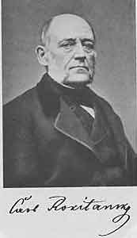
第34章図１ Karl Rokitansky, 1804-1878 ロキタンスキー
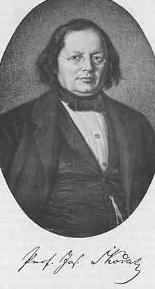
第34章図２ Joseph Skoda, 1805-1881 シュコーダ
フランスでは啓蒙によって大革命が起きた。理性は神格化された。ナポレオンは大革命の旗手として世界を征服しようとした。ナポレオン没落の後で暫くのあいだ逆戻りはあったが全体としてフランスのインテリゲンツィアは知性を現実に固定させた。1830年にコントは「実証哲学講義」の刊行を始めた。
ドイツの状態は大きく違った。18世紀にドイツはフランスによりかなり大きく影響された。しかし同じ世紀にドイツ古典文学の花が咲いた。ナポレオン時代は苦痛と貧困を持ち込み1807年のティルジット和平は大きな屈辱であった。1811年12月５日にヴェストファーレン王ジェロームはナポレオン皇帝に書いた。「戦争が始まるとライン川とオーデル川のあいだのすべての領土では広範で強力な反乱が起きる。この危険な運動の主な原因はフランス嫌いや外国のくびきにたいする憤慨以上のものである。どちらかと言うと不幸な現状、すべての階級の崩壊、ひどい税の圧力、軍費、軍隊を保つ費用、軍隊のあちこちの行進、および繰り返され長く続くあらゆる種類の悩み、が問題である。ハノーヴァー、マグデブルクや私の王国の主な町で家持ちたちは大損しても家を売ろうとしたが無駄だった。至る所で家庭は貧困状態である。資本は枯渇している。貴族も百姓も町民も借金が重荷になり実際に欠乏している。‥‥恐ろしいのはあらゆるものを取られてもはや何も失わない人たちの絶望である」と。
この著しい貧困のときに理想主義の波がドイツ民族のあいだに広がった。ベルリン大学は1810年に創立された。解放戦争によって外国のくびきは取り去られた。ドイツ人はフランスの影響から自由になり関心を民族およびその将来に集中させた。民謡集「少年の魔法の角笛」が1806年に刊行された。人々は啓蒙主義の唯物論に背を向け生活の現状から離れ今まで考えていなかったところに美を求めた。ゴシック建築や中世一般に新しい光を当て新しく賞賛した。東洋が再発見された。シュレーゲルはヒンドスタン文学を解明する鍵を見出した。シュタイン男爵はドイツ民族統一を悲願としてドイツ中世資料集モヌメンタ・ゲルマニアエ・ヒストリカの編集を開始した。ロマン主義がこの時代の風潮であった。
ロマン主義運動は詩人その他の想像力に富んだ著者にだけ関するものではなかった。それ以上に学者一般の運動であって医師や博物学者も決定的な役割を果たしていた。原動力になったのはシェリングで彼の「自然哲学の理念」は1797年に発行された。心と物質は１つであるとされた。現実と理想は同一であってこれらは共同して存在の基礎となる。心と自然は２つの外観であり２つの段階である。自然は心の先行する形相である。物質から出発して自然は人体で完成される。自己から進んで精神は芸術に完成する。心と物質は同じ物である。このようにして自然法則は意識に直接的に表現され意識は客観的自然に自然法則として現れる。従って自然現象および自然法則は思索的に理性的な考察によって発見された。物質は３つの次元を持っていた。これらと関連して自然には３つの基本的エネルギーが存在した。すなわち電気、磁気、および化学であった。そして生体では被刺激性、感受性、生殖衝動が区別されるべきであった。病気は生命の低段階の発達相以外の何ものでもなかった。
このような後ろ盾によってドイツにおける医術は必然的にフランスとは違う発展経路をたどった。大部分のフランスの研究者たちは完璧であることを放棄して経験的な知識を集めることで満足していたがドイツでは同じ頃に目的は常に全部であり全体性であった。数え切れないほど多くの本が書かれ数え切れないほど多くのシステムが求められた。それらの始まりは病人のベッドサイドではなく書斎であった。多くのものは独創的であり価値ある予告を含んでいたが最終的に医科学への利用は小さかった。
すべての流行や傾向はドイツの土壌で繁栄する可能性があった。重要な科学の発見たとえば、電気、磁気、酸素でシステムを形成するのに至らなかったものは１つもなかった。ブラウン・システムすなわち興奮学説には数え切れない信者がいて長期間にわたって治療を支配した。レシラウプはこの学説をさらに進めた。彼は外からの刺激にたいし生体反応の役割を主張し自己の学説を30の命題にした。他の領域と同じようにドイツ人は自分たちの過去を顧みてパラケルススを発見した。ライン川地方の医師ラーデマッヘルはパラケルススの教えをシステムにして「実験医学」と名付けた。ホメオパチー（同毒療法）の創設者ハーネマンは1808年に「合理的治療法」を刊行した。彼は病気を生命力の混乱であるとみなし純粋に精神的なものと考えた。医師は病気の本態を問題にすべきではなく治療だけを問題にすべきであると言った。大量に与えると病気と同じような症状を起こす物質を少量または極微量に与えることによって病気は治療されるであろうとした。ガルの頭蓋学はもちろん大きな支持を得た。基本的な考えは現在で言う大脳局在であった。人間の性質は脳の種々の部分に局在しこの局在は頭蓋の形成に明らかに示されるとガルは述べた。このようにしてガルおよびシュプルツハイムの名前と結びつけられている骨相学説が創られた。
これらの様々なシステムには正しい核心があった。すべて実り多いアイディアを含んでいた。問題となったのは創案者が過度に一般化して標的を越して度を過ごしたことであった。その結果として19世紀の最初の10年のドイツ医学は混乱していて希望が持てなかった。国の至る所に有能な人たちがいて、神、自然、人間について才気のあふれた本を書いていた。しかしこれらは病気についての知識や治療法に殆ど貢献しなかった。何よりもこれらの著者の方法論には欠陥があった。彼らは医術の問題を観察および実験によって解決しようとはせずに思索で解決しようとした。個々の観察の集まりを知的に考えを練るのは時には役に立つし基本的なことを繰り返して考えることは必要であり観察したデータを哲学的環境で行き渡らせ取り囲むことは他の学問領域以上に医学では必要であった。しかし同世代のすべての人たちがこのことばかりしていたら明らかに危険であった。フランス人は病気の解剖学的な概念を明確にし理学診断法を開発したのに対しドイツの医師は一般問題について思索していた。
しかしドイツにおいてさえ思想家たちや観察者たちが自然哲学から離れて自然科学に向かい自然の観念論的考察から離れて機械論的説明に向かう時になった。医学に関する限り特に２人がこの運動の発起人とみなすべきである。理論的な面ではミュラーであり臨床的な面でシェーンラインであった。２人とも若いときには抽象的な自然哲学にどっぷりと漬かっていたが２人ともこの迷路から抜け出る路を発見しドイツ医学発展にとって顕著に重要となった。
ミュラーへの追憶演説でウィルヒョウは次のように述べた。「ミュラー自身は彼が偉大な先人たちについて述べたと同じように自然の祭司であった。彼が仕えた教派はあたかも宗教的な結合と同じように彼と彼の弟子たちを結びつけた。彼の祭司のような演説と動きはすべての人たちの尊敬を完全なものにした。きっと結んだ唇と口は厳しさの意向を伝えた。眼の周りおよび額は深い思想の表現であった。顔の皺の１つ１つは完成した仕事の考えを活気づけていた。この男はこのように自然の祭壇の前に立った。この祭壇は彼自身のエネルギーによって教育および慣習の足かせから自由にしたものであり個人の自由についての生き証人であった！」と。この本の肖像を見ると読者はウィルヒョウの印象的な記載を確認することができる。
ミュラーは著しく大量の著作をしており内容は広範であった。生理学と病理学だけでなく、動物学、比較解剖学、古生物学、発生学にも興味を持っていた。これらの分野のどれでも第一級の独創的な発見は行ったわけではなかったが取り扱ったすべての主題は彼によって深められた。彼の業績の優れているのは純粋科学の領域であるが彼は偉大な医師たちの１人である。彼の「人体生理学ハンドブッフ」だけではなくドイツ全土における科学的医学に影響を与えたのが理由である。ドイツの医師たちに自然科学の言葉で考えるようにさせたのは他の誰よりも彼であった。彼の方法に医師たちは従い彼の研究所はドイツ医学の輝かしい期間の出発点であった。細胞説の創設者シュヴァンはこの研究所で訓練された。同じようにヘンレはここで決定的な影響を受けた。ミュラーの物理学的な傾向は弟子たちの中で、ヘルムホルツ、デュ・ボア・レーモン、ブリュッケに顕著な代表が見られた。彼の病理学の傾向はメーケル、トラウベおよびとくにウィルヒョウに見られた。
ミュラーはラインランド出身者であった。コブレンツの靴屋の息子であり生まれたときに町はフランス軍に包囲されていた。彼は長いあいだ聖職者になるか医師になるか悩んでいた。医師になる決心をしたのはゲーテの影響であったのだろう。彼はゲーテの著作を熱心に読み、その結果、抽象的な思索ではなく具体的のものに向かうことになった。1819年に彼はボン大学の医学生となった。彼は大学学友会の一員になったが政治には興味を持たず、ますます活動を科学の分野に限った。彼は特に解剖学に惹き付けられた。「解剖メスで取り扱えないものは重要でない」と。彼の学生時代にボンでは自然科学ではなく自然哲学が支配しており代表者はエゼンベックであった。ミュラーは他の学生と同じようにシェーリングの影響を受けたが彼はアリストテレスも研究した。彼の興味が解剖学に向かえば向かうほどこの極めて具体的で実際的な科学は観念論と対立し知性は空に舞ったが足は硬い大地に根を生やした。1823年にミュラーは胎児の呼吸についての論文を書いて賞を得た。ボンで学位を取り国家試験に合格するためにベルリンに移った。ベルリンで彼は生理学者ルドルフィと近づきになり大きな影響を受けた。ルドルフィは自然哲学に敬意を払わない懐疑論者で解剖学は医学の第一の基礎であると常に主張していた。［ここで自然哲学とはドイツにおける意味であって自然科学と対立するものであることに読者は注意する必要がある。］1824年にボンに戻り徐々に大学の梯子を登り1830年に正教授となり３年後にはベルリンのルドルフィの後継者となった。彼は解剖学、生理学、病理学の講義を行った。この３つの科目はまだ分かれておらずミュラーの死後になって分けられた。ボンにいる間にミュラーは神経と感覚器を詳細に研究していた。彼は視覚の比較生理学を発行し感覚機能およびそれと精神活性の関係を論じた。脊髄神経の前角は遠心性線維からなり後角は求心性線維からなることを示したベル（―マジャンディ）法則をミュラーは詳細に実験で示しその後は一般に認められるようになった。彼は神経反射の学説をさらに明らかにし腺の構造および発生を研究した。発生学の研究にかなりの時間を費やした。生殖器官の発生学について彼が書いた専門書は古典となった。
1833年に彼の「人体生理学ハンドブッフ」の第１巻が刊行された。数世代にわたる学生たちはこの本を利用した。この中にはハラーの「人体生理学原論」以後の重要な進歩が含まれていた。この間に解剖学、物理学、化学が大きく進歩した。酸素が発見された。ラヴォアジエは酸化の実態を認識し、化学を純粋に定性的な科学から定量的な科学に上昇させた。必然的にこれらの進歩は生理学に影響を及ぼした。しかしさらに重要なこととして新しいハンドブッフは方法について特徴があった。少なくともドイツと関係しては自然哲学から離れて観察と実験に向かう転換を意味していた。
ミュラーはまた病理学の分野でも独創的な研究を行った。この領域における彼の重要性は実際的な業績ではなく病理学において顕微鏡の使用を主張した最初の１人としてであった。ビシャーは顕微鏡を使わず組織の分類は肉眼的な外見によるものであった。顕微鏡を使うと組織の構造をもっと深くまで見ることができる。ミュラーはこのようにして腫瘍の新しい組織学的分類を行った。彼は軟骨と骨の腫瘍の見慣れない形を記載した。しかしこの分野における彼の研究は間もなくウィルヒョウによって取って代わられた。
化学の領域でミュラーによる血液の構成および軟骨質の発見は特にのべる価値がある。ベルリン時代における彼の生理学への貢献は喉頭における声の音色についての研究であった。その後の時代に彼は主として比較生理学に興味を持った。ほとんど毎年、彼は海岸に行った。転地の意味だけではなく海産動物を研究するためであった。今日、若い生物学の学生たちにとってナメクジウオが典型的な生物になったのは彼のお蔭であった。ミュラーによる、ヒトデ、ナマコなどについての研究、魚一般とくにサメについての研究、動物界における世代交番などについての研究、は動物学および比較解剖学の歴史において目覚ましい地位を占めた。
彼の晩年において２つの事件が暗雲となった。第１は1848年の革命であって彼がベルリン大学の学長のときのことであった。ミュラーはこの運動に同情が無かった。もともと彼は保守主義者であり政治に興味を持たなかった。動乱とそれに続く変化は彼の研究の障碍となり一方に味方しなければならなかった。彼は精神的および肉体的に苦しみ回復するのに長くかかった。次いで1855年に彼は研究のためにノルウェーに行った。帰途に船が衝突で沈没した。同行していた助手は溺死しミュラーはやっとのことで助けられた。この悲劇によって彼の健康は著しく悪化し鬱病にかかった。２〜３年後に彼は突然に死亡した。
デュ・ボア・レーモンはミュラーの著作を調べて15,000印刷ページ以上で約350枚の手書き図であると計算した。従って37年間の活動期間に７週間毎に35印刷ページおよび0.83枚の図を書いたことになる。シェーンラインは学位論文の他には２編の論文しか書かなかった。１つは３ページで他の１つは１ページであった。それにもかかわらず彼は大きな影響を及ぼした。ミュラーの場合と同じように方法についてのものであった。
ミュラーと同じようにシェーンラインはローマン・カトリック労働者階級の家族の出身であった。父親は縄製造のマイスターで家族の考えで彼は父親の職を継ぐことになっていた。最終的に学生になることが許され1811年に自然哲学の砦であったランツフートに送られた。［ドイツで自然哲学は自然科学に対比するものとして使われたことを再度強調しよう。］1800年にナポレオン戦争の圧力によってインゴルシュット大学はランツフートに移されていた。（＊バイエルン大学と呼ばれ1826年からミュンヘン大学となる。）1802年にレシュラウプはランツフートに呼ばれて教えることになった。シェリングはランツフートで名誉博士になっていた。若いシェーンラインはここで決定的な影響を受けた。自然哲学者の他にティーデマンがヴュルツブルクから1805年に招聘されていてランツフートで研究していた。科学者であって川が岩の周りを流れるように自然哲学の流れは彼に影響を与えずに流れていた。シェーンラインはシェリングの弟子たちの講義だけではなくティーデマンの講義を受け他の人たちよりもティーデマンの影響を受けた。
1813年にシェーンラインはヴュルツブルクに移った。ここではユリウス病院において医学教育の例外的に良い機会が得られた。ここでも「自然哲学」が支配的でシェリングはここの教授であった。しかしヴュルツブルクの教授のうちで例えば解剖学者、生理学者であったドリンガーはこの神秘的な傾向を逃れていた。ドリンガーは優れた弟子たちを持った。発生学者でヒトの卵を発見したベール、解剖学者で発生学について同じように重要な発見をしたパンダーおよびシェーンラインであった。
脳の変態についての学位論文で1816年に学位をとった後で翌年シェーンラインはヴュルツブルクの講師となり３年後には暫定的に臨床の長となり1824年には病理学各論および治療学の正教授となるとともに正式な臨床の長となった。ヴュルツブルクの医学部の教授として２人だけは述べる必要がある。１人は病院の外科医のテクスターであり他の１人は産科医のウトルポーンであった。
シェーンラインの歴史的重要性はドイツすなわちヴュルツブルクで新しい臨床を最初に作り上げたことであった。新しい診断法すなわち聴診および打診を実行したことおよび死亡した患者の死体を病理解剖して診断を解剖結果によって確認することであった。
政治的な出来事がシェーンラインをヴュルツブルクから追い出した。ミュラーと違って彼は自由主義者であった。政治においてとくに活発な役割を演じなかったが彼の意見は一般に知られていた。７月革命の２年後にあたる1832年に教授職を免職になりパサウの地区医師の職を提供された。彼は公職を退くことを好んだ。政治状態はますます悪化した。失敗したフランクフルト・アム・マイン蜂起の後で彼は他の自由主義者とともに逮捕された。続いてチューリッヒの新しく作られた医学部が彼に活動のための門戸を開いた。「アルプスの自由な空気で呼吸する」ことを楽しいと思って「この楽しみに比べられるものがあるだろうか？」と言った。「病院は大きく資金は充分に供給されもっと大規模な変更は政治的改革によって可能である。すべての政党はこの点で合意している。従って大した障碍に出会うことはない。政治的意見が異なる人たちからの尊敬および信頼のしるしは大きな励みになりバイエルンで受けた残忍な行為とまったく対照的である」と。
チューリッヒにおけるシェーンラインの臨床教育は大きな成功であった。学生たちは近くからも遠くからも集まってきた。たった２編の科学論文を書いたのはここであった。１つは腸チフスに関するもので他は重要な科学発見の報告であった。イタリアの学者バッシはカイコの硬化病が幼虫の組織で増殖する繊維状の植物性寄生虫で起こることを発見した。ある種のヒトの病気も同様な寄生虫によって起こり得るのではないか？ シェーンラインは髪で覆われている頭の皮膚病である黄癬が繊維状寄生虫で起きることを発見した。この寄生虫は今日では不完全糸状菌と呼ばれる目に属し学名には発見者シェーンラインの名がつけられている。後の章でこの発見が感染症の概念の発見において如何に重要であったかを習うことになる。
チューリッヒにおけるシェーンラインの臨床はきわめて満足なものであった。「さらにチューリッヒは医師にとってゴルコンダ（＊宝の山）である。毎日、家またはファルコン・ホテルですべての国からの外国人、王侯の旅行者から診察を求められ夜になって家に帰ったときにポケットが黄金で一杯になっているのを示すと妻はいつでもびっくりする！」と彼は手紙に書いた。シェーンラインの知性と機知によって彼は人に好かれ講義において薬味の役割をした。機知は時にちょっぴり下品なこともあった。百年以上も経っているが多くの逸話がチューリッヒで語られている。一例をあげると、シェーンラインが臨床でどのように言ったか学生が話している。「ここに糖を準備している患者がいて、あそこにはミルクを用意している人がいる。我々が必要なのはコーヒーを提供する人である。そうしたらこの臨床でコーヒー店を開くことができる！」
彼の専門家としての令名は年毎に高まった。ベルンの教授に招聘されブリュッセル宮廷の侍医になるように要請された。彼は両方とも断った。しかしプロイセンがベルリン大学臨床の長として招聘したときには応諾した。事実はスイスで外国人であると感じていたからであった。ベルリンにおける仕事は1840年の復活祭の日から始め講義をドイツ語で行った。それまで臨床における教育はラテン語で行われていた。聴診、打診、顕微鏡使用、臨床検査、をベルリン大学臨床に導入したのは彼であり教育活動は極めて実り多いものであった。ここでも彼は何も書かなかった。彼の臨床講義の多くは出版されたがこれは学生たちが記録したものであった。
シェーンラインは自分の学派を自然哲学学派と対比して自然誌学派と言った。「我々は医学が出発した基盤および柱石に戻る。我々の目的は自然の本を読み自然記述の動向を例示することである。自然科学は我々の手引きとして役立ち経験を集めこれを事実として詳しく述べるためにどのように観察すべきかを示す」と。このように方法は基本的に重要なものであるとみなした。
方法が重要であった。これは控えめな始まりであった。シェーンラインの臨床はコルヴィザール、ラエンネック、シュコーダの臨床のように非常に重要な新しい知識の得られる場所ではなかった。ただ方法が習得され教えられた。しかし手堅い方法でありドイツの臨床医学を自然哲学から離れ自然科学に向かわせる方法であり短いあいだにドイツ人が他の土地の研究者に追いつき追い越すことを可能にした。
シェーンラインは他の場所におけるのと同様にベルリンでもしばしば攻撃された。山の向こうのミュンヒェンのの人たちが攻撃しかけた。ヴンデルリッヒは彼の科学についての見解を批判した。シェーンラインは甲状腺腫になって話すのが困難になりミュラー死去１年後の1859年に辞職し故郷のバンベルクで余生を過ごした。
ミュラーとシェーンラインはベルリン学派が発展する基盤を作った。２人が同じころに去った後に新しい世代が指導的位置についた。これらの人たちについては間もなく述べる。

第35章図１ Johannes M
 ller, 1801-1858 ミュラー
ller, 1801-1858 ミュラー第35章図２ Johann Lukas Sch
 nlein, 1793-1864 シェーンライン
nlein, 1793-1864 シェーンラインすぐに古くなるのは医学書の運命である。しかし例外がある。現在のパリで「エコール・ド・メドシン」に近い本屋の窓を覗くと1865年に初版の出版された本が見つかる。これはベルナールの「実験医学序説」である。発行１年後にパストゥールは次のように書いた。「実験の困難な技について真の原則をもっと明白にもっと完全にもっと深遠に書いた本は今まで無い。この本はほんの少数者しか達することができないレベルのものなのでまだあまり知られていない。」と。しかし、そのうちに広く知られるようになった。何度も何度も刷り直された。今日でも買われ熱心に読まれている。
この本が刊行されたときにベルナールは経歴の頂点にあった。パリ大学の生理学教授でありこの講座は彼のために特別に作られたものであった。同時に先生であったマジャンディーの後継者としてコレジ・ド・フランスの教授でもあった。この本は彼にアカデミー・フランセズのドアを開きフランスの学者として最高の名誉を受けた。
ベルナールはブルゴーニュ出身でブドウ農家の息子であった。若いときに薬剤師の徒弟としてリヨンに送られた。ここで戯曲を書きこれは喜劇であって小劇場でかなり成功した。次いで悲劇を書きパリにおける成功に賭けた。紹介の手紙を準備して首都へ出発した。ある芸術批評家がこれを読んで劇作家になるよりは医学を研究するように忠告した。その結果、薬剤師の徒弟は想像力に富む有名な作家ではなく医学生にまずなった。マジャンディーはベルナールをまず病院オテル・デューの助手に採用しすぐ後にコレジ・ド・フランスの実地教育担当者にした。
マジャンディーが出現するまでフランス生理学ではビシャの見解が支配的でありしたがって強く生気論的であった。マジャンディは実証主義の傾向を採用した。「生命力などと言うものは無い」と彼は宣言した。生理学の目的は生命現象と呼ばれるものの法則を発見することであるべきでこれらの法則とは無機の世界で見られるものと同じであった。研究で見ることができる唯一の方法は実験であった。マジャンディは空論を恐れたのでしばしば自分自身の実験結果を詳しく述べるのさえ懸念したほどであった。
この厳しい実験学派でベルナールは育った。彼が学位を取ったのは1843年のことで既に30歳であった。論文は胃液と消化におけるその役割についてであった。これに続く年月は想像できないほど悪い条件における終わり無い労働であった。今日、実験研究をしようとするものはしばしば文字通り宮殿を使うことができる。ベルナールはコレジ・ド・フランスの湿った陰気な穴蔵で研究しなければならなかった。使う装置は苦労して自分で作らなければならなかった。警察は動物実験を好ましくないものとして注目した。ある日、不運なことに銀カニューレが腹壁から飛び出しているイヌが研究室から逃げ出した。ベルナールは召喚され警察警務部長の盗まれたイヌであることが判った。ベルナールは説明し理解してもらった。実際、警務部長はベルナールの後援者になり研究室を警察の管内に移るようにしてくれた。ここで重要な生理学研究を妨害されないで行うことができるようになった。
毎月曜日に友人の小さなサークルがベルナールの研究室に集まりこの実験生理学者の研究について聞くことになっていた。友人のすべてが医師だった訳ではではなかった。この中には化学者のベルトロー、哲学者のジャネやルナンが含まれていた。ベルナールの手によって生理学が純粋な自然科学になったのは疑いも無い。しかしすべての生理学の問題は生命の根本に通じているので最終的には哲学に通じることになった。
ベルナールの一生の仕事を完全に記載しようとしたら今日の生理学の大部分について論じなければならない。ベルナールの発見は一種の世襲財産になり彼の実験の多くは生理学実験室の毎日の教えとなっているからである。したがって彼の仕事でどの領域が最も有益か短く説明することで満足しなければならない。最初に来るのは消化の問題であり彼は本来この問題に専念していた。この時まで化学は充分に進歩し問題を効果的に取り扱えるようになっていた。すでに18世紀にラヴォアジエは有機物質は炭素と水素を含み燃えるとそれぞれが二酸化炭素と水になることを示していた。1828年にヴェーラーはシアン酸アンモニウムを熱して尿素ができることを示した。このようにして純粋に無機物質から純粋に物理的な条件によってこれまで「生命的」変化すなわち動物体内でのみ起きる変化の最終産物が得られた。これは有機物質の最初の合成であった。この発見の基礎的重要性はその後の研究者たちが酢酸や脂肪のような他の有機化合物が合成できることを見出して始めて認識された。無機化学と有機化学のあいだの壁は壊された。「有機化学」と呼ばれてきたものは炭素化合物の化学になった。生物の中で起きる化学変化は化学実験室の人工的条件で起きるものと基本的に同じ種類であることが明らかであった。遂に栄養物が生体に取り込まれたときに通る道筋、分解、燃焼、生体物質の合成、から排泄される最終産物に分解されるまで個々の過程を研究することの見通しが得られるようになった。ドイツに関する限りではリービッヒが指導的でありギーセンの彼の実験室で有機化学の方法論が作り上げられた。フランスではベルナールが同じ問題の生理学的な面に取りかかった。
ベルナールのすべての研究には赤い糸が通っていた。前に述べたように胃液およびその消化における役割の研究から始まった。次いで他の消化液の考察に進み唾液の効果および脂肪の消化における膵臓分泌の影響を研究した。彼は生体内における炭水化物の運命にとくに興味を持っていた。グルコースは常に血液中に存在し動物体内ではグルコースとしてではなくグリコゲンとして主として肝臓および腎臓に蓄えられていることを示すのに成功した。1849年に延髄の特定の部位を針で刺すと血液はグルコースで過負荷となりそれによってグルコースが尿に出ることを示す重要な発見を行った。このようにして人工糖尿病が作られた。この穿刺によって交感神経系の興奮することが示された。このようにして組織変化すなわち代謝における交感神経系の重要性が始めて認識された。この経路によってベルナールは新しい研究分野に導かれ他の臓器とくに血管への交感神経系の効果の研究を始めた。一連の論文において彼は血管運動神経の働きを論じた。
ベルナールは一連の講義の最初で生理学はただ１つしかなくその領域は正常および病理的機能を研究することであると述べるのを習慣としていた。実際のところ彼の研究は正常の生理学と同じていどに病気の生理学と関係していた。とくに重要なのは南米先住民の矢毒クラレについての研究でありこれが運動神経を麻痺させることを示すのに成功した。毒はふつう殆ど一般に考えられていたように生体全体に作用するのではなくそれぞれの毒は攻撃する局所を持っていることを彼は示した。たとえば一酸化炭素は赤血球内のヘモグロビンと強く結合するので赤血球は酸素を肺内で吸収して組織に送ることができなくなった。他の毒も同じように検査した。ほとんど当然なことであるが毒について正しいことは治療薬についても正しかった。これらはそれぞれ局所的な影響を持っていた。ひとたび作用する局所が判ると治療で薬を盲目に使うのではなく目的をもって摂取した。このようにして薬理学は同じように実験科学となった。その後に薬理学の目的は動物実験を用いて化学物質によって身体の機能がどのていど変化させられるかを示すこととなった。薬すなわち化合物の健康な組織への作用を研究し病的に変化した生体への作用を研究することになった。実際、生命過程を研究している条件は正常ではないという保留のもとに生理学の手段によって研究された。このようにして薬理学は実験病理学と密接な関係に入った。実験病理学は同様に異常な病的条件において生命過程を理解するのが目的である。何よりもドイツの研究者でシュトラスブルクのシュミーデベルクは実験薬理学を予想されないほどの高さに導いた。
ミュラーの方法もまた観察と実験であった。しかしミュラーはあまり実験を行わなかった。これは生涯を研究室における動物実験で過ごしたベルナールと違った。ベルナールは著書「実験医学序説」で、科学的医学のすべての領域における実験方法の哲学的意義を詳述し次いで臨床応用に進んだ。ミュラーはきわめて判りにくいスタイルで書いた。彼は書くのを急いで自分の観察を早く知らせようとした。これにたいしてベルナールの18巻の著書はきわめて明白で洗練された言葉で書かれている。
すぐに続いてパストゥールが有名になるとベルナールの名前は目立たなくなった。これは不公平であった。ベルナールの発見はパストゥールの発見に比べるとある意味で派手ではないが科学的医学にとって同じように重要であった。
第36章図１ Claude Bernard, 1813-1878 ベルナール
ヘルムホルツは最初に物理学者になることを志望し実際にそうなった。1871年に彼はベルリン大学の物理学教授となり死ぬ数年前の1888年にこの職を辞して国立物理学工学研究所の所長になった。しかし彼は回り道をして物理学者になった。彼がこの回り道をしなければならなかったことは医術にとって大きな利益となっている。彼は物理学を勉強する機会が無かったのでベルリンのフリードリッヒ・ウィルヘルム医学外科学養成所の学生になった。医者になったら軍医になることを約束すると若者たちは授業料を払わずにここで教育を受けることができた。ヘルムホルツの教師の中ではミュラーがもっとも影響力を持っていた。ヘルムホルツは無脊椎動物の神経系の構造についての卒業論文を書いて1842年に学位を取得しシャリテ病院の外科医助手となり次いでポツダムの軍外科医となった。軍外科医のあいだにも研究を続け特に数学と物理学に専念した。1848年に論文「エネルギー保存について」が刊行された。
ラヴォアジエは燃焼の研究において燃やすと金属の重さが増えることを示しこれまでの見解と違って燃焼によって物質が加えられることを証明した。この物質は空気にあったもので対応する量の重さが空気から失われることを示した。彼はこれが空気中の酸素であり燃焼にさいして金属と結合することを示した。このようにして酸化の本質が解明されたが同時にもっと重要な知識が得られた。すなわち重量の和が一定であることおよび物質の外見や内部構造が変化しても量が不変なことであった。
1840年にハイルブロン（ドイツ南西部）出身の医師マイヤーは船医としてジャワに航海した。当時の習慣として瀉血を行い患者の静脈から採血した血液の色がヨーロッパで見慣れたものより明るい色をしているのでびっくりした。何故だろうか？ 明らかにその差は身体の熱節約の変化によるのに違いなかった。この観察によってマイヤーは熱発生と酸化された物質の関係に注目した。この考察の結果、物質だけでなくエネルギーの量も一定であるとの結論に達した。力すなわちエネルギーは物質と同じように破壊されないに違いない。違う形のエネルギーは相互に変化できることは疑いも無いがそれらの和は一定であった。1842年にマイヤーの最初の論文はヴェーラーとリービッヒの「化学年報」に発表された。
マイヤーの発見は素晴らしいものであったがこれを効果的に示すのに充分な数学の能力を彼は持たなかった。これを示すことはヘルムホルツに残された。彼はマイヤーと独立に同じ結論に達して前に述べた論文でエネルギー保存の法則を確立した。これは生理学にとって非常に重要であった。代謝過程の量的考察を可能にしたのはエネルギー保存の概念だったからであった。
1848年にヘルムホルツはベルリン美術大学の解剖学教師および解剖博物館の助手になった。翌年にはケーニヒスベルクの生理学および一般生理学の教授への招聘を受け入れた。1855年にはボンの解剖学と生理学の教授になり1858年に生理学教授としてハイデルベルクに移り最後には既に述べたようにベルリンの物理学教授になった。移動すると教育領域が狭くなるのは当時の傾向であった。専門化の傾向が顕著になった時代であった。
ヘルムホルツの主な興味は物理学であったが彼は生理学者であった。したがって生理学に関する限り生理学の物理学的な面に専念したことは容易に理解できる。彼は神経伝達および反射過程の速度について観察した。これらは心理学にとって非常に重要であった。生理学からは生理学的心理学が発展しこれは心理学の実験方法にも関与し精神現象を物理学法則と密接な関係に持ち込むことが試みられた。この領域は「心理物理学」と呼ばれた。主要な創立者はヴントでヘルムホルツが到着する１年前の1857年にハイデルベルクの生理学教授になり最終的にはライプツィヒの教授になった。
しかしヘルムホルツは何よりも感覚器官の生理学に専念した。彼の「生理学的光学ハンドブック」は1856年から66年のあいだに出版され膨大な量の観察と実験が記録されていた。1862年に彼の「聴覚」が刊行された。これらの研究は今でも基本的な重要性を持っていてこれらの学説の大部分は科学知識の全体像の中に取り込まれている。しかし提出された学説のあるものはこのような困難な問題でよく見られるように詳細な点ではその後の批判によって無効にされた。
1851年にヘルムホルツは臨床医学にとって非常に重要な発見をした。一般に眼の瞳孔の黒いことを我々は知っているがしばしば夜になるとネコの眼が緑色に輝くことを見る。瞳孔のこのような輝きについていろいろな説が提出されていたがそれまでのところ不満足なものであった。ヘルムホルツはこの問題に大いに関心を持っていた。光源が観察者の視線上にあって反射によって赤い光が観察者の瞳孔に戻るならば人間の眼も赤く輝くことを彼は見つけた。そうならばもしも観察者の目を光源にすることができれば観察される人の眼底を見ることができるのではなかろうか？ 凹面鏡の中心に小さな穴を空けた簡単な器具で光を患者の眼に反射させて観察者がこの穴から見るとこのことは可能であろう。検眼鏡が発見された。
この器具で眼底を検査することが可能になり眼科医にとって重要なこととして眼の病的変化を検査することができた。眼科は強力な勢いを得た。それまで眼の深部の病気は病理解剖台で不満足な研究しかできなかったが今や生きている眼で病的変化を直接に観察できるようになった。最も重要な診断法が得られた。
ヘルムホルツは発見の歴史を次のように書いている。「私は網膜反射の理論を学生たちに説明しなければならなかった。網膜反射はブリュッケが考え出したものであった。ブリュッケはほんの少しのところで検眼鏡を発見できなかった。彼が失敗したのは光を照射して眼から反射する光線がどのような光像を作るか自問しなかったからであった。この質問はその時の彼の目的には余計なものであった。もしも彼がこの質問をしていたら私が解答を得たのと同じように容易に解答を見つけ検眼鏡はもっと早く使われるようになっていたであろう。どうしたら学生たちに問題を最も容易に示すことができるか私は心の中で質問を繰り返した。このようにして基本問題に達することができた。私は医学の勉強をしていて眼科医が黒内障［視神経または網膜の病気による失明］の診断に苦労していることを知っており眼底を検査する基本的な検眼鏡を作ることができた。最初に使用は容易でなかった。眼底を見ることができるという強い信念が無かったら辛抱しなかったかも知れない。しかし約１週間後に私は生きているヒトの網膜をはっきりと見ることができた最初の人になった」と。
検眼鏡の発見は医学の領域において理論研究が実践において重要なことを示した顕著な例になった。ヘルムホルツは眼科学者ではなく物理学者で生理学者であった。彼の発見は純粋に理論的なものであった。検眼鏡の発見についてこの事実を繰り返して述べるのは当を得たことである。今日では医学部を純粋に「実用的」な目的を追求するものと格下げする傾向がしばしば見られるからである。
眼科学の発展はグレーフェの名前と特に結びついている。彼は検眼鏡に飛びつき改良しその助けによって眼科学を新しい地盤の上に置いた。1854年からアールトおよびドンデルスとともに発行した「眼科学アーカイヴ」は新しい眼科学研究の焦点となった。
検眼鏡の発見は解剖学的診断の路線に沿った大きな非常に重要な１歩であった。聴診と打診は解剖学的変化を知る間接的な方法であった。検眼鏡によって医師は体内臓器の中を直接に見ることができ病理学者が解剖台上で観察するよりももっと効果的に病的変化を観察することができた。したがって他の内部臓器を直接に見る試みが多く行われるようになったのは当然であった。喉頭を見る試みが長い間なされた。1854年にロンドンの声楽教師ガルシアは歯鏡に似た小さい鏡で自分の喉頭内部を見ることに成功した。又もや生理学者のチェルマクがこの発見に飛びついて喉頭鏡を開発した。それによって1858年からこの検査方法が一般に広がった。
この後の数十年に内部臓器を検査する種々の器具が用いられるようになった。尿道、膀胱、食道、胃、直腸である。電灯と鏡を使ってこれらの内臓部分における病的過程を検者の眼は直接の情報を得ることができるようになった。この方向における診断の最大の成功は1895年におけるレントゲン線の発見によるものであった。最初は骨の傷害や病気の診断に使われたが造影剤の応用によって透視法がますます広がり胃腸管その他の臓器を見ることができるようになった。レントゲン線すなわちＸ線は生きている身体内の病理解剖学を勉強する理想的な方法となった。
ここで純粋物理学におけるヘルムホルツの成果について論ずる必要はないであろう。このように高名な物理学と数学の才能が環境のために生涯のかなりの部分を医学に捧げたことは医学にとって非常に幸福なことであった。ベルナールが生理学の化学的方向を発展させたようにヘルムホルツは生理学の物理学的方向における我々の知識を豊かにした。種々の講演においてヘルムホルツは方法論についての彼の態度を述べた。自然哲学の波が引いていたのは疑いもないがヘルムホルツ自身の仕事がこの引き潮に重要な役割を演じていた。ともかく思索的な考えを持つ医学界のお偉方がいて見当違いの仮説をまだ提案していた。1877年の講演「医学の思想」で彼は述べた。「しかし皆さん、戦いが終わったと信じてはいけない。人類が厳しい労働で始めて出来ることを憶測の閃光をひらめかすだけで可能であると空想する傲慢な人たちがいる限りすべての謎を１度に解決すると約束するドグマを提出する仮説が存在し続けるであろう。さらに信じたいと思うことを信ずる無批判なヒトがいる限り上に述べた型の人たちの仮説は信用され続けるであろう。これらの型の人たちは死に絶えることはなく人類の大部分は常にこれに属するであろう。」
しかし、ヘルムホルツはもう１つの危険を認めていた。同じ講演で彼は述べた。「我々の世代は心霊主義者の形而上学の奴隷になって来た。若い世代は疑いもなく唯物主義者の形而上学の奴隷にならないようにすべきである。」
第37章図１ Hermann Ludwig Ferdinand von Helmhotz, 1821-1894 ヘルムホルツ
今日、医学生または医師が病院に入ってベッドに近づくと何よりもまず患者の頭の所に下がっているチャートを見る。これによって病気のあいだの体温変化のカーブを知ることができる。このカーブが上向いていると病気は亢進している。体温の高い日が続いてそれから低い日が続くと病気は頂点を過ぎて患者は治りつつある。多くの場合、カーブには大きな特徴がある。山と谷は極めて規則正しく交代する。このような場合に体温チャートを一見することによって自信をもって診断が可能である。このように多くの病気において体内の病的過程の結果である体温カーブは病気の経過について標準的な情報を与える。
これらの事実の認識について臨床家ヴンデルリッヒに感謝しなければならない。彼は体温計の利用を発見したのではなかった。サントリオが原始的な装置を使って体温を測定したこと、臨床でブールハーフェが時に体温計を利用し、デ・ハーエンがしばしば利用したことを既に見た。しかし体温カーブを読み理解することを教えたのはヴンデルリッヒであった。熱の推移は偶然によるのではなく病気の基本的な本性を反映することおよびそれぞれの感染症は体温チャートで特徴づけられることを彼は示した。一般開業医が体温計を毎日使うようになったのは主として彼の尽力の結果でありそれまで体温計は病院のみでしか使われていなかった。いやもっと言うと家庭でも使われるようになった。素人たちも今では体温計の使いかたを知った。家族の誰かが病気になると体温を測り体温によってベッドに入り医師を呼ぶかどうか決定する。
ヴンデルリッヒは医師の息子であった。母親はフランスからの亡命者の家族だった。ネッカル川に沿うズルツで生まれシュトゥットガルトの高等学校に入学し1933年からチュービンゲン大学で勉強した。チュービンゲンの医学部はいわゆる同種繁殖を行ってきていた。ほとんど総ての教授はチュービンゲンの卒業生であって外からの新しい血液はほとんど入らなかった。教育は主として理論医学に限られ古い方針で行われた。しかし、例外として若い講師のシルはイギリスおよびフランスで学び新しい方法を習ってきていた。ヴンデルリッヒおよび友達のローザーとグリージンガーはシルと親しくした。1837年にヴンデルリッヒは試験を通るとパリに行くことが必要と思った。そこでみたことに感激し続いて幾つかの病院で学んだ。チュービンゲンに戻って彼は聖カテリナ病院の助手になりパリで学んだ実技すなわち患者の打診と聴診を行った。上役は何も反対しなかった。1839年刊行の「ウィーンとパリ：ドイツとフランスにおける医学の現状についての歴史および評価について」と題する小さな本から私はすでに大量の引用を行ってきた。この本は若い開業医が旅行によって教育を完成させる手引きとして計画されたものであった。その当時に解決を迫られている問題について深い見識を示しており判断が円熟していて幅広い注目を受け到底25歳の青年が書いたものとは信ずることができないほどのものであった。1841年にヴンデルリッヒはチュービンゲン大学臨床の助手になり主任ヘルマンは病気のことが多かったので独立の研究をする機会が充分にあった。翌1842年にローザーと一緒に「生理学的医学アルヒーフ」という新しい雑誌を発行した。これはブルセーの意味における生理学的医学を取り扱うことを意図したものではなく「自然哲学」の一分野としてではなくて自然科学と一分野としての医学のために論争を行うのを目的として計画されたものであった。ヴンデルリッヒは緒言に次のように書いた。「我々はここに生理学的医学の知識をさらに進めるための機関誌を創設する。この言葉は我々の方向を完全に示している。医術の未来は生理学的基礎の上に病理学を確立することに依存しているのでこのことはものの判った人たちすべての努力目標でなければならない」と。しばらく後で「医学は自然の一部として研究しなければならない。基本的に医学は自然研究の一分野である。医学を病人のベッドサイドからではなく本からのみ学ぼうとする人は絵や彫像を文章の記載で知ろうとする人と同じである」と。自分自身の雑誌を創設するのは２人の若者にとって大胆な冒険であった。彼らはどんな慣習も神聖なものとは見なさなかった。ドイツはパリやウィーンと同じように自然の研究を基本にして科学的な医学を持つべきであった。彼らはシェーンラインすら時代遅れと思い彼の臨床講義集が出版されたときに激しく批判した。
しかし単なる批判や単なる破壊は何も創造しない。間もなくヴンデルリッヒに重い責任がのしかかった。1843年に彼はチュービンゲン大学臨床の暫定の長となり1846年に常任となり同じ年に正教授となた。今や建築の棟梁が義務となった。彼は臨床を大きくした。ベッド数は30以下であったが特に興味ある患者の入院を求めて空きベッドが無いときには２人の軽い患者を同じベッドに収容することまでした。彼は外来部門を開き患者の家に学生たちを連れて行った。次に彼は大きな仕事に取りかかった。「病理学各論全書」である。これは1846年〜1850年に発行された。
1850年に彼はライプツィッヒの内科学臨床主任に招聘された。オポルツァーがウィーンに移って空席になっていたところであった。ヴンデルリッヒは受諾し死ぬまでライプツィッヒに留まった。彼の就任講演は「治療経験を強固な論拠とする計画」であった。医療は他の医学学説のように進歩していないことを明らかに認識して彼は言った。「疑い無く以前には同じ時代にしても継続してでも種々の医学学派やセクトが存在した。彼らは理論的見解および治療原則について互いに討論していた。しかしそれぞれの学派内では厳格な規則が強制され治療方法について個人は選択することができなかった。これにたいして今日ではこのように厳格な学説の代わりに完全な治療の無秩序状態がある」と。この講演の前のパラグラフで彼は問題を提出した。「医師の主要な社会任務である治療学は前に述べたような進歩を遂げているであろうか？ 多くの人は疑い否定する。治療に関して我々が今日すべきことは目的と方法を述べることである」と。かれが主張したのは、治療学も病理学と同じように精密科学であるべきことであった。治療学の領域は他の領域に比べて信頼できる方法を作りあげるのは確かに困難であった。
体温測定を常に行うようになったのはライプツィッヒに移ってからであった。彼はこれについて20の論文を書き、ついに著書「病気における体温の動き」が1868年に刊行された。しばらくのあいだ「生理学的医学アルヒーフ」の刊行は友人ローザーおよびグリージンガーに任せたが1860年にふたたび活発に編集を行うようになった。古くからの闘争心は残っていたが自然科学に対する「自然哲学」を攻撃するのは実際のところ死馬に鞭打つようなものであった。しかし、彼はウィルヒョウと対立することになった。「細胞病理学」には問題があると思っていた。しかし、ウィルヒョウは自分の「アルヒーフ」を発行していて稲妻は双方の雑誌のあいだを閃いた。
1866年のコレラ流行とそれに続くフランス・ドイツ戦争はヴンデッリッヒに組織化の仕事を多く押しつけた。これらの活動を別として彼は立派な臨床の先生であった。ライプツィッヒにおける彼の存在は外科医ティールシュおよび生理学者ルードヴィッヒの存在とともにそれまで無かったほどの令名をライプツィッヒ医学部に与えた。ウィーンとパリについての評論で以前に示した彼の批判的な傾向は医学史に関する事柄で繰り返し繰り返し示された。彼はこの問題で一連の講演を行い出版した。この本の最後のパラグラフは信仰（信念）告白であった。
「将来の医学はその仕事と任務を計り知れないほど広大で卓越している自然科学の一部と認めることになる。新しい臨床家にとって医学は事実のみに基礎を置くものでありこれらの事実の理解は得られる限りにおいて事実のあいだの結びつきによってのみなし遂げられることが明らかになっている。さらに正しい事実や信用できるデータは研究方法に厳しく注意し誤る可能性を常に心に留めることによってのみ得られることを我々は知っている。心はもはや手に負えないものとは思われない。心は方法に従って働くことを強要され規律正しい論理によって厳しく制御されているからである。我々はもはやシステムを自然に押しつけることはせず存在することや起こることがどのようにどこであるかを出来るだけ最高に純粋に明らかにするように努力する。
「現在は病理解剖学が一方的に振る舞うことを容認しない。器質変化を詳細に知らないときにはその変化を決定する条件について何も知り得ないものと我々は考えている。体液も固体組織も共に生体の一部であるので体液病理学も固体病理学も無条件に支持することを拒否する。化学的な憶測によって正しい結論に達するとは期待しないが身体の化学物質が健康者だけでなく病人で如何に結合し分解するかを研究し説明すべきであると主張する。見られる限界の進歩によって生命の謎はすべて解明されると勘違いしてはいない。しかし身体の巨大な塊にせよ微少な粒子にせよすべての事実に当然の価値を与える。そして今日の医学は病気によって変化させられた病人を対象とする自然科学でありそれ以上でも以下でもない限り『生理学的』と称することができる」と。
第38章図１ Carl August Wunderlich, 1815-1877 ヴンデルリッヒ
すでにこの本で何回もウィルヒョウに出会っている。ミュラーの研究室の学生でありロキタンスキーの「クラシス」学説の激しい反対者でありヴンデルリッヒと論争を行っていた。明らかに彼はけんか好きだったに違いない。ロキタンスキーを攻撃したときに彼は25歳であり１年後に雑誌「病理解剖学・生理学および臨床医学アルヒーフ」（＊死去後ウィルヒョウス・アルヒーフと改名）を創刊した。この雑誌は19世紀を通じて医学の発展に大きな影響を与えた。この頃には新しい雑誌が至るところで茸のように生えていた。自然哲学を信じている医師たちは多数のこのような雑誌を持っていたが彼らの時代は終わって多くは刊行を中止した。しかし、新しい傾向を持った人々は新しい雑誌を発行し多くの点で性質はもちろん変化したが今でも創始者の名をつけて続いている。
ウィルヒョウは新しい雑誌に何を希望したのだろうか？ 彼の計画は明白に述べられている。「我々が提案し既にこの創刊号に明示している立場は単純に自然科学の立場である。理論医学の応用としての臨床医学および病態生理学の実体化としての理論医学は我々の力が及ぶ限り目標として努力すべき理想である。我々は病理解剖学と臨床の正当性および独立性を完全に認めてはいるが両者は新しい問題の源泉と認めるべきであって解答は病態生理学により与えられるべきである。しかし、これらの問題は主として病人および死体解剖台における詳細な現象の困難な総合的な研究によって明確にされなければならないので正確で目的に沿った解剖学的および臨床的な経験が今日の第一で最も重要な要件であると考える。この種の経験主義によって医学の真の理論すなわち病態生理学が徐々に生み出されるであろう。」と。
ウィルヒョウは目的をこのように判りやすい言葉で表現していて彼を解剖学者以上ではないとみなすのは誤りである。しかしこの間違いは今日でも存在している。
彼の生涯は長さが大きく異なる３時期に分けられる。最初の時期は1849年までの科学者としての出発の時期であって進路を求め発見し弁護した。取りわけ社会的および政治的活動の時期でもあった。次の第２の時期は1849年から1856年のヴュルツブルク期で完全に科学に専念して細胞病理学説を提出した時期であった。第３の最後の時期は約半世紀続いた。この時期にウィルヒョウはベルリンにいて病理解剖学教授であり病理学研究所所長であった。この研究所はこの種の研究所として最初のものであった。彼は学派を創立した。ドイツ医学の法王として君臨し最高の立場ではあったが反対者が無いわけではなかった。この時期の研究は主として人類学であった。
ポラメニアのシーヴェルバイン（現在はポーランド領）に町収入役の息子として生まれ、ウィルヒョウは1839年に軍医学校の学生になるためにベルリンに行った。彼の主な教師はミュラーとシェーンラインであった。1843年に学位をとりシャリテ病院の死体解剖主任フロリープの助手になり３年後にはその後継者になった。ウィルヒョウがベルリンについた時にミュラーの研究室では極めて重要な発見が報告された。動物細胞の発見であった。植物細胞はもっと早くイギリスの植物学者フックによって17世紀に発見されていた。フックにとって植物学は副業であって彼は主として物理学者、数学者およびその頃イギリスで自然哲学者と呼ばれているものであった。コルクの薄片を強力な虫眼鏡で眺めて蜂の巣のような構造を見出した。1833年にブラウンはランおよび他の植物の細胞に核を検出した。従って植物は有核の細胞からなり細胞は植物の基本要素であることが知られた。動物も同じように有核細胞からなるというシュヴァンの発見は非常に重要なものであった。第一に動物と植物の構造が基本的に似ていることから生物界の統一性を明らかにした。さらにこれ以上に生命機能を生物の深部まで追求することができるようになった。もしも細胞が生命の形態学的な最終的な単位であるとしたらもしも細胞が生体の基本形であるならば生命の基本的な機能は細胞で研究することができる。ビシャが「膜」と呼んだ組織は細胞の集合体に違いない。主としてロキタンスキーの努力によって病理学各論の領域については重要な知識が得られたが病理学総論の問題が持ち出されると研究者たちは暗闇の中を手探りしていた。病理学総論の分野ではすべての種類の曖昧な憶説に扉が開かれていた。科学的な病理学総論と言うべきものが存在しなかったからであった。19世紀初めのフランスの研究者たちは一般的な問題を無視しようとしたとき以外はいまだに伝統的な液体病理学者であった。ロキタンスキーは液体病理学と解剖学概念を統一しようとしたが努力は流産であった。今や動物細胞が発見されたので病気の基本的な現象を科学的に研究することが遂に可能になった。
しかし、最初に間違いを除かなければならなかった。細胞の起源は何だろうか？ シュヴァンは未発達、未分化、均一な物質から細胞が発達したと信じていた。彼はこれを「ブラステーマ」と名付けた。ブラステーマは生きた物でないと考えられた。たとえば炎症滲出物が「組織化」されたときすなわち細胞構造を持つようになると細胞は死んでいる液体性の滲出物から作られたと考えられた。ウィルヒョウはこの説を論破することができ細胞は必ず細胞から出来ることを証明した。「細胞は細胞から」である。生命は「細胞生成の代々の継続」によってのみ続くものであった。ウィルヒョウが専念した最初の重要な仕事は静脈の炎症すなわち静脈炎であった。これは上司のフローリップが彼の注意をひいたものであった。この研究は２つの極めて価値ある成果を生んだ。これまで曖昧であった血栓症と塞栓症を明らかにし白血病という新しい疾病の概念を形成した。
この研究をしている間に政治的な事件によってウィルヒョウは他の方向に進み熱情的な興味を示した。1847年夏に上部シレジア（＊現在は大部分がポーランド領）で「飢餓熱」（回帰熱）の流行があった。地元当局は疫病の進展を止める方法を持たなかった。新聞が攻撃したのでついに中央政府は行動を起こした。1848年２月に委員会が調査することになりウィルヒョウはメンバーの１人であった。この流行の原因は医学的なものであるよりは社会的なものであることがウィルヒョウにはすぐに判った。彼の報告は当時の政権にたいする厳しい攻撃であった。繁栄、文化および自由によってのみ改善が可能でありこれは「完全であり制限が無い民主主義」を基礎にして始めて成就できるものであった。報告は次の言葉で終わった。「今日のプロレタリアートは主として機械の導入と改良によって持ち込まれたものであることを全世界は知っている。農業、製造業、航海、陸上運送は、装置の完成に比例してこれまで無かったように拡大を果たし人的資源は完全に自主性を失い人間は機械組織の中で単なる埋め込み部品すなわち生きている埋め込み部品として組み込まれて死んだ物質として扱われている。人は単なる『手』と見なされている！ これが文明史における機械の意義であろうか？ 人間の才能は人類をますます哀れにすることだろうか？ もちろん違う。我々の世紀はいわゆる社会的な時代として始まりその活動の目的は人間の純粋に機械的な労働を力の及ぶかぎり減らすことであり、この労働とは男女を土地や粗原料に束縛してもっと洗練された物質運動から引き離すものである。人間は全人類が楽しい生活を送るのに必要な仕事だけを土地や粗原料より取りあげるべであり資金を作るために最良のエネルギーを費やすべきではない。資金は楽しむために必要なものではあるが限度を超えてこれを増やす理由があろうか？ もちろん楽しみの可能性を増やすにしても死んだ冷たい楽しみの可能性ではない。さらにこれらの可能性は資金の蓄積にくらべると安定した可能性ではなく絶えず揺らいでいる不確かなものである。すでにフランス共和国はそのモットーの友愛の中でこの原則を認めていて古くから確立されていたブルジョアジーの勢力にも拘わらずこの原則を協力の力によって実現に努力してきたように見える。事実、財産を持たない労働が国や富豪や多数の小所有者の資金と協力するのが社会条件を改善する唯一の方法である。少なくとも資金と労働は同じ権利を持たねばならず生きているエネルギーはもはや死んでいる資金に従属すべきでない」と。
３月革命（＊４８年革命）はウィルヒョウを首都に呼び戻した。彼はバリケードの作成に実際には手をださなかったが（＊父親への手紙には手伝ったと書かれている）、何よりも全医学システムの完全な改革の考えに魅せられてこの運動に意欲的な役割を果たした。ドイツの医師たちは激しく動かされた。一般開業医は公衆衛生に関係して責任ある役割を果たし助言することに熱心であった。彼らも医学システムの再構築と種々の専門的職業の自主管理を要求した。彼らは国の監督に反対した。一般的な医学会議すなわち医師たちの議会とでも言うべきものを作る要求がますます盛んになった。至るところで医学会が作られ「医学専門家の二重性」に対して反対が述べられた。これは医師と床屋外科医を区別することにたいする反対である。この運動の代弁者はウィルヒョウと１人の友達が1848年から1849年にかけて刊行した「医学改革」であった。彼は独立の健康省の創設と医学教育の再組織を要求した。教授の任命はフランスと同じように競争試験によって行われるべきであった。医学生たちは国の費用で訓練されるべきであった。彼はまた手作業職人の労働時間の法的制限を要求した。病気になったときには国が無料で介護するのが貧乏な労働者の自然な権利であると彼は主張した。
続いて反動期となり、ウィルヒョウは進歩的な政治観によって苦しむことになった。彼はシャリテ病院から明確には辞めさせられなかった。しかし給料は減らされ医務官として使っていた部屋を明けるように通告されたので同じことであった。次いで1849年５月にヴュルツブルクから招聘された。彼の社会的および医学的な改革は実を結ばなかったので医科学の改革に倍のエネルギーを捧げることになった。ヴュルツブルクにおける年月は休み無い活動であった。大量の材料を集めアイディアを発展させる機会であった。幾つものモノグラフを書いて1856年にベルリンに呼び戻されたときに彼の仕事は大きく進んでいて２年後に大学院（開業医）向けの一連の講演を行うことができた。同じ年にこれは「生理的および病理的な組織学を基礎とする細胞病理学」の題で出版された。
この研究でウィルヒョウは分析から総合に移った。これによって病理学はより意識的に解剖学的概念によって支配されるようになった。モルガーニは臓器を病気の座とみなした。ビシャは組織（膜）を座とした。ウィルヒョウにとっては細胞が座であった。細胞は生命の担い手であった。健康が生命であるのと同じように病気は生命であり修正された条件における生命である。従って細胞は同様に病気の担い手である。病気は異常な刺激にたいする細胞の反応であるとウィルヒョウは教えた。ウィルヒョウが仕事を始めたときに新しい医学すなわち自然科学の研究に基礎を置いた医学の領域で疑いもなく大量の詳細な知識が集められていたが体系的な基礎は欠けていた。「自然哲学者たち」は体系を持っていたが自然科学者たちは体系を投げ捨てていた。ウィルヒョウはその細胞病理学において体系を創ろうとはせず実際にそのような試みを公然と否認していた。しかし発展を促進するのに極めて有用な原理を準備しかなりの体系化を可能にすることができた。彼の時代まで病気は
この細胞病理学はルネッサンスに始まった発展の最高段階であった。ウィルヒョウは病理学者たちに顕微鏡の使用を強制し病理学各論だけでなく病理学総論も自然科学の基礎の上に置いた。現在の病理学の全組織は彼の肩で支えられている。もちろん彼の本が出版されてから現在（＊1930年）まで75年のあいだ科学が停止していた訳ではない。ウィルヒョウの見解の多くは詳細な点では取って換わられた。しかしこれらの置き換えは彼の理論を利用して行われた。
細胞病理学刊行後（＊1930まで）の３／４世紀のあいだに我々の見解で１つだけ基礎的な変化が起きたと言うことができる。ウィルヒョウの細胞病理学は確かに局在主義であった。彼の学説は生体の各部分に注目しこれらの部分は統一体ではなく共同体を作っていると考えていた。彼は書いた。「生体は統一されたものではなく社会的な機構である」と。これは「境界を持つ統一体ではない」と。しかしその後の研究は我々の考えを逆の方向に向かわせた。細菌学の研究は多くの点で細胞病理学の境界を越えるデータを供給した。細胞間物質の生命は細胞の生命とあるていど違うが両者は同じように生きていると我々はみなすようになっている。しかしこれらが正常の生命を持っているならば病的な生命も持つことができる。しかしこれらの進歩はウィルヒョウの教えの発展以上のものではなかった。この教えは今でも我々の病気についての見通しの重要な基礎である。
細胞病理学は医学のあらゆる領域に深い影響を及ぼした。とくに顕著なのは治療にたいしてであった。生体において治療が作用する部位をベルナールが発見しようとしたことをすでに述べた。作用する部位が臓器一般ではなく細胞であることを医師が知るようになったのはウィルヒョウの功績であった。今では特定の細胞と特定の化学物質のあいだに特有な親和性があることを知っている。このことが認識されたので薬理療法および食養生がもっと目的に適うものになった。
ウィルヒョウは20世紀まで生きていたので細菌学の時代を経験した。彼は細菌学研究の結果を受け入れるのに躊躇したとえば生体に結核菌の存在するのが結核症であるとする見解に反対した。感染症の病因においても細胞の役割を繰り返し繰り返し強調した。結核症を構成するのは結核菌ではなく生体すなわち細胞の結核菌への反応である。細胞は人が違うと反応が違うので個人が違うと結核症は違ってくると彼は言った。
彼の長い生涯の後半にもウィルヒョウは大量の著作を行い、腫瘍について何冊もからなる参考書、種々の医学の問題について「アルヒーフ」に書いた数多くのモノグラフ、数が増えた人類学研究、を刊行した。プロイセンの邦議会議員および地方の顧問官として彼はいつでも左翼、反対派、に属し、とくに教育改革をはじめとして素晴らしい貢献を行った。もはや「40年代」の活動家ではないがドイツ帝国の時代になっても彼の態度は急進的であり自分が医学改革について書いた評論を1879年になって再刊した。
ウィルヒョウの権力は広大なものであった。彼が半世紀にわたってドイツ医学を導いていたと言っても誇張ではない。さらにそれ以上に彼の影響は世界中に及んでいて80歳の誕生日は如何なる科学者にも与えられないような国際的な敬意の表現であった。数多い学会とくに「科学研究促進のためのドイツ学会」においてウィルヒョウは自然科学、医学、および生命一般について望楼から話すような講演を行った。これらの講演は今でも読む価値がある。彼は医学史における自分の位置に完全に気付いており医師には珍しい歴史のセンスを持っていた。これは一般に言って生涯が歴史的な意義がある者のみが持ちうるものである。数多くの論文、他の研究者の論文や講演への緒言などで細胞病理学創設者が歴史センスを持っていたことを示しており、とくに先生であるミュラーおよびシェーンラインの伝記は重要である。
ミュラーの死後に盛んになりウィーンやパリをしのぐようになったベルリン学派においてウィルヒョウは中心であった。ミュラーの講座は分割された。ミュラーの生前にも病理解剖学の教授職は分離されてウィルヒョウが任ぜられた。有能な発生学者で人気があったライヒェルトが解剖学教授となり神経および筋の生理学を専門とするデュボア・レーモンが生理学教授になった。
臨床研究ではフレーリクスおよびトラウベがその代表であった。彼らは全く異なる型の人間であり互いにうまく行かなかった。フレーリクスは冷たい気性であり治療において懐疑論者であった。彼はブレスラウから来た。彼はそこで病理解剖学を研究していた。主な領域は胃腸管、代謝障害、および糖尿病であった。ナウニンは彼の弟子のうちで最も有名であった。トラウベはシェーンラインの弟子でユダヤ人であり従ってユダヤ人にも資格を与えるようになった1848年まで学位を得ることができなかった。彼はフランスの文献をよく読み理学的診断に長けており極めて有能な実験病理学者であった。（＊弟のモーリッツ・トラウベも優れた化学者、生化学者であった）。
外科学もベルリンで栄えた。1847年にランゲンベックはディフェンバッハの後継者として外科臨床の長になった。彼は有名な軍外科医で前任者と同じように整形外科手術で令名が高かった。1868年に眼科学が外科学から分離し前に述べたようにグレーフェがベルリンをこの新しい専門の有名なセンターにした。
18世紀に医学はまだ国際的でありヨーロッパの科学であった。いずこでも医師は同じ言語を話し書いていた。発展の道程はある国では速くある国では遅くある都市は他の都市にくらべえ医学進歩の繁栄していたセンターであったが、医師たちはいずこでも同じ路を進んでおり同じように考え患者を同じ原則に従って治療していた。これにたいして19世紀にはすべての科学分野で国ごとの発展が異なった。ヨーロッパ医学はもはや存在しなかったし今でも存在せずその代わりにフランス、イギリス、イタリア、ドイツの医学が存在する。もちろん大きな発見は急速に国境を越えコスモポリタン医学の一般的な分け前になっている。ところが臨床とくに一般開業医の仕事ははっきりとした国別の特徴がある。フランスでは大革命の頃から間断のない静かな進歩がなされ臨床は常に中心となっていた。ドイツの発展は１つの極端から別の極端へ激しく振れる傾向があった。19世紀の初めには医学でも他の領域でもロマン主義、大胆な憶測や「自然哲学」が支配的であった。世紀の半ばに向かうと強力な反動すなわち精密科学への傾向を生じこれは他の反動と同じように行き過ぎたのものかも知れない。臨床ではなく病理学が医学の中心になった。病人のベッドサイドではなく実験室がシンボルになった。兎も角、一方向から他方向へと中庸の無いことがドイツ医学の特有な力となりウィルヒョウや彼の同時代の人たちによって具体化されたエネルギーがこれらの素晴らしい成果を生んだ。
第39章図１ Rudolf Virchow, 1821-1902 ウィルヒョウ
振り向いて見ると19世紀はそれまで以上に伝染病にたいする戦いに成功した時期であったことが判る。医術に関しては伝染病の原因の発見が19世紀後半の特徴となっている。それ以後、予防は医学のもっとも重要な役割となった。医師たちは政府当局や若者を教育する人たちと協力して社会を伝染病その他の健康への脅威から守り環境の好ましからざる変化に対処するように個人に活力を与える努力を行った。短期間のうちにこの方向への素晴らしい成功が得られた。多くの感染症は消え去り他の病気もかなり稀になってきた。死亡率は目覚ましく減少し平均余命は殆ど信じられないほど延長した。従ってこれらの成功を可能とした医師たちの生涯および活動を研究するのはこの本の義務である。
殆ど言う必要は無いだろうが古代から伝染病は特別に注目されてきた。他の病気は寒さ、食事の誤り、などによるものとしてかなり説明できたが疫病は自然災害のように天罰による病気として多数の人たちが同時に罹り大火災のように広がった。原因は自然に求められた。単に個人だけでなく社会のすべての部分に影響があった。従って何よりも土地や大気の構成および星によって影響された。実際すでに述べたように人々は知覚できない原因、神の怒りを考えがちであった。古代において人は疫病にたいして無力に感じ無力であった。予期せずに始まりしばらくすると始まったのと同じように謎のように終わった。巨大な大かがり火で空気を浄化することが試みられた。人々は沼の近くを恐れ沼からの蒸気［しばしば悪臭］は多くの疫病の原因と考えられた。とくにマラリアは「沼熱」とみなされた。このような病気の原因として小さな生物が関係しているとする考えたぼやっとした暗示が昔々からあった。紀元前１世紀にウァロは「農業について」に書いた。「湿地には我々が見ることができないほど小さな生物が育っている。これらは口や鼻を通して我々の身体に入り重病の原因となる。」
東洋ではある種の病気は人から接触によって伝わると昔から考えられていた。不浄な人に触った人は不浄になった。最も不浄なのは「ツァラート」（＊ハンセン病？ 新共同訳聖書の訳語は重い皮膚病）であった。このように不浄になった人は社会から締め出された。彼の近くに寄っただけで感染の危険があった。中世に支配者はハンセン病が広がるのを防ぐために聖書レビ記（＊13、14章）の教えに従った。従って伝染の考えは著しく真に迫ったものであった。さらに東洋悪疫すなわち黒死病を研究するとこの病気は直接接触以外の方法で伝染するに違いないことが明らかになった。この病気および他の類似の病気においても患者が所有するか接触した中間物質を介しても伝染が起きるように考えられた。これは
初めの頃にコンタギウムは仮定的な物質であった。しかしコンタギウムが存在するという仮説は極めて役に立ち疫病が広がるのを阻止する実際の試みに大いに役だった。もちろん研究者たちはコンタギウムの本態を発見するように試みた。それを知れば知るだけ伝染の広がるのを抑止する方法が有効になった。17世紀にオランダの顕微鏡学者で博物学者のレーウェンフークは肉眼で見えない極めて小さい生物に気がついた。彼は浸滴虫類を最初に見た。また自分の舌からかき取ったものに細菌すなわち小さな棒状の生物を観察した。これらの小さな生物、今では微生物と呼ばれているものが病気の原因であることは未だに知られていなかったがこれらがあるという単なる知識は非常に重要であった。
同じように17世紀の終わる前にイエズス会士キルヒャーはペスト患者の膿と血液に小さい虫と彼が考えたものを顕微鏡下で見た。この結果ペストのコンタギウムは「生きているコンタギウム」でありまたウァロが紀元前５世紀に考えたように沼の発散物に微小な生物がいるに違いないと考えた。我々はキルヒャーの観察は間違っていたことを知っている。彼が見たと思った「小さい虫」は病人だけでなく健康人にもある血球だったからである。しかし彼の考えの功績で「生きているコンタギウム」の概念が確立した。この問題は自然科学の領域のことであり研究者が大きく改良された実験機械を使えるようになるまで解決できなかった。これが「生きているコンタギウム」の概念の確立が19世紀になった理由であり最初に成功したのはヘンレであった。
ヘンレはボンにおいてミュラーの下で研究していたのでミュラーの最初の弟子の１人であった。次いでミュラーがベルリンに移ったときに死体解剖担当者になった。学生組合のメンバーであると当局に疑われて起訴され要塞に６年間監禁の判決を受けたが恩赦となり1840年にチューリッヒの解剖教授になった。ここでシェーンラインと一緒になったが同じ年にシェーンラインはベルリンに移った。1839年にシェーンラインは黄癬の病因についての発見を刊行した。1840年にヘンレの「病理学研究」が刊行された。これはベルリンを離れる前に書いたものであり感染症学説において新しい段階を記念したものであった。
ヘンレの研究の出発点は発酵についての研究であった。フランスの物理学者カニャールはアルコール発酵が常に酵母の存在に関係し酵母は発芽または胞子形成によって増殖する下等生物であることを示した。数年後にこの研究はシュヴァンによって完全に確認された。このように小さい生物が大きな化学変化を起こすことが明らかになった。また観察者たちはこれらの微生物が分解しつつある有機物質の中で激しく増殖することを発見した。以前に酵母は結晶性の発酵素とみなされていたがカビの一種で生物であることが判った。したがってこのような発酵素の働きを「生きているコンタギウム」と比較するのは当然なことであった。疫病が広がるときに作用する毒素はたぶん発酵素のような生きている生物であろう。
ヘンレの研究が出発したのはここからであった。彼の「病理学研究」の最初の部分は「ミアスマとコンタギウムおよびミアスマ・コンタギウム病について」の考察であった。ここでミアスマ（毒気）は人間に侵入して病気を起こす感染物質であった。ミアスマは流行性または地方性感染病を起こす毒素であった。ミアスマ性病気の基本形はマラリアであって人から人へ伝染するのではなく全く環境の影響によるものであった。コンタギウムはミアスマとは違って病人から他の人に渡される感染物質であった。このようなコンタギウム病の典型的な例は梅毒であり環境の影響によるものではなく常に人から人への直接の感染によるものであった。他の「感染症」はミアスマ・コンタギウム性のものであると考えられた。このことはこれらの病気は時にはある人から他の人にコンタギウムを経て起き時には環境の影響によって起きることを意味した。しかしミアスマとコンタギウムが同じ病気を起こすときにこれらは同じものであるに相違なかった。これはヘンレの最初の結論であった。さて、この感染性毒素の本態は何であろうか？ 明らかにこれは微量に入っても大きな生物学的変化を起こすような物質からなるに違いなかった。病体内で成長し増殖するものからなっていて明らかにそのものと違う物質を同化して増えているに違いなかった。しかしこのように行動することが出来てはっきりとした個体として存在しうるのは生物しかあり得なかった。争う余地のない結論はコンタギウムは「生きているコンタギウム」でなければならなかった。疫病の感染性毒素は生物であって酵母に近くバッシとシェーンラインが発見した小さなカビに近いものでなければならない。
ヘンレの結論は説得力のあるものであった。彼の本は天才的なものであった。それにも拘わらず殆ど認められなかった。このような不首尾の原因は充分に明らかであった。著者の論理は説得力を持っていたが存在するとみなした生物の存在を実際の観察で示すことができなかった。植物の酵母は顕微鏡で観察でき人々は「生きているコンタギウム」の存在を自分の目で見て信じたいと思った。彼らは空論を好まなかった。兎も角ヘンレの「生きているコンタギウム」は空論に過ぎなかった。
上記の病理学的研究はヘンレの仕事のほんの一部であった。もともと解剖学者であり、この領域で素晴らしい業績をあげた。彼は上皮の発見者であり組織学すなわち組織の微細構造についての科学の創設者であった。（＊彼の名前がついているものとして尿細管のヘンレ係蹄がある）彼は一般解剖学（組織学）と系統解剖学の両者を著述し挿絵が良かったこともあり広く注目された。チューリッヒにいるあいだに「理性的病理学ハンドブッフ」を著述し「理性医学雑誌」を創立した。テュービンゲンやベルリンの研究者たちと同じように科学的病理学を作りあげることを意図した。これらの３グループはそれぞれ自己の雑誌を持ち互いに睨みあった。しかし基本的にすべては同じゴールを目指していた。
1844年にヘンレはハイデルベルクに招聘され1852年にゲッチンゲンに移り30年後に死ぬまでここに留まった。彼は教師および研究者として成功を収めて葬られた。
第40章図１ Jakob Henle, 1809-1885 ヘンレ
幕あいとしてゼンメルワイスと産褥熱について述べよう。彼の一生は絶え間ない苦闘であった。無くそうとした病気にたいする戦いであり正しいと確信して自分の学説を受け入れさせるための戦いであり世間からの数多い非難にたいする戦いであった。
ウィーンとブダペストで医学を学んだ後で彼は1846年にウィーン第１産院で助手になった。この年にシュコーダが教授になり２年前にロキタンスキーが教授となっていた。新ウィーン学派は絶頂であった。しかし産院の状態は悪かった。産褥熱による死亡はすごく多く恐ろしいほどであった。学生の教育に使われている第１産院で産婦の平均死亡率は10%で月によっては30%に及んでいた。これにたいして助産婦の訓練を行う第２産院で死亡率は３%に過ぎなかった。当時の医師たちは産褥熱について漠然な考えしか持っておらず特殊な疫病とみなしていた。もちろんウィーンの２つの産院で死亡率が違う理由について多くの議論がなされていた。権威者たちは空気、宇宙、土地のすべての種類の影響を問題にした。満員であることが理由とされたり男性の学生が診察するので産褥の女性に感情的な緊張が与えているのに違いないとの意見が出された。ウィーン人にくらべて検査が荒いと言う理由で絶望のあげく第１産院から外国人学生が閉めだされた。
第１産院の評判が悪くなったのは当然のことであった。年月が経った今でもゼンメルワイスの記載を読むと恐怖を覚える。「誤って第１産院に入院を希望した患者たちは固く手を握り跪いて第２産院に移らせて欲しいと願うので心が張り裂けた。‥‥お産の床で数えることができないほど脈が速く腹部が膨満し舌が乾いた――すなわち重篤な産褥熱の――女性が死の数時間前に医療を受けるとすぐに死ぬことを知って完全に健康だから医療をしないで欲しいと主張した。」毎日何回も少年聖歌隊員を先導として法衣を着た僧侶が臨終の患者に終油の秘跡を与えに来ていた。このような悲痛を目の前にして助けることができないので感じやすい１人の医師がどのように悲しかったか想像できる。「僧侶が部屋のドアの前を通り過ぎる鈴の音を聴くたびにいつでも新しいショックを覚えた。不明の原因で死んで行く犠牲者のために改めてため息をついた。事実、私にとって鈴の音は全エネルギーを捧げてこの原因を求めるようにとの励ましであった。」
光明が得られた。1847年春にゼンメルワイスは「産院の出来事によって大きく動揺させられた平静心をこの市の美術の至宝によって快復させることを希望して」ヴェネツィアに行った。ウィーンに帰ってすぐに親しい友達で法医学教授のコレチュカが突然に死亡したことを知らされた。屍体解剖のときに不器用な学生によって指を傷つけられて敗血症で死亡したのであった。「コレチュカが死亡した病気と出産後に死亡した無数の女性の病気とが全く似ていることに瞬間的に打たれた。」実際、症状は同じであった。
事実は明らかであった。コレチュカの死の原因となった屍体解剖メスが屍体からの物質によって汚染していたように産院において診察をしている医師や学生の指は汚染していた。ウィーンでは屍体解剖が盛んに行われ屍体の臓器は常に取り扱われていた。ゼンメルワイス自身も屍体解剖を毎朝に行うことにしていた。従って産褥熱は特殊な「流行性の状態」ではなくて創傷感染と同じような血液の腐敗によるものであった。助産婦たちはこのような指汚染の機会がほとんど無いので第２産院で産褥熱が少ない理由は明らかであった。検査をする前すぐに分娩した女性は産褥熱に罹らず陣痛が長く続いて数多くの検査を受けた女性はほとんど間違いなくこの病気で死亡することも明らかであった。さらに休暇中には死亡率がきわめて低く田舎では産褥熱が比較的に少ないことも理解できた。これらの考えを踏まえてゼンメルワイスは検査の前に手を塩素水で洗うことを主張しすぐに死亡率は大きく減少した。
このように画期的な発見は一般に急速に認められるに違いないと思われるであろう。そうではなかった。ゼンメルワイスは宣言した。「産褥でこのように死亡率が高いのは医師の責任である」と。彼自身は「私の信念の論理的な結果として私がいかに多くの女性を時期尚早に墓に送ったかは神のみが知っている」と率直に認めた。他の人たちは率直でなかった。シュコーダやヘブラのような人たちはゼンメルワイスの研究の価値を認めて発見の重要性を賛美した。しかし最も激しい反対者は同僚の産科学教授たちであった。彼らは侮辱されたと感じていた。ゼンメルワイスと当時の有名な産科医のあいだに嘆かわしく長いあいだ続いた討論が行われた。一方は真面目な信念でしばしば激しい言葉で表現した。他方は嘲笑と冷たい拒否であった。ゼンメルワイスは書いた。「殺人は終わらせなければならない。殺人を終わらせるためなら私は出来ることを何でもしよう。産褥熱について危険な誤った考えをまき散らす人にとって私は強力な反対者であろう。これらの殺人者に中止させるためには反対者を残酷に摘発する以外に方法は無いと私は固く信じていて正しい位置に心臓がある人なら誰も私が採用する方法を非難しないであろう。」
ヴュルツブルクの有名な産科医スカンツォニに書いた。「枢密顧問官閣下。私の学説を論破しないで引き連れている学生や助産婦たちに産褥熱はふつうの疫病であると教え続けるなら神および世界に貴方は暗殺者であると宣言する。生命を救う私の発見に貴方が第一に反対した理由によって産褥熱の歴史が貴方を医学のネロとして不滅な存在にしたとしても不当ではない」と。
このような言葉がゼンメルワイスの評判を落としたことは容易に理解できる。ウィーン大学では昇進の機会が無かった。講義をさせて欲しいという要請は最初にべもなく拒否されたが人体モデル実習だけの条件で許可された。もちろんこのような悪意をもった譲歩は不満であった。任命の５日後にウィーンの埃を脚から払って1851年に故郷ブダペストに戻り考えられるもっとも非衛生的な聖ロクス病院の名誉医師となった。最後には４年後にブダペスト大学の産科学の正教授となった。条件が良かったチューリッヒからの招聘を断った。ブダ（＊ペストのドナウ川対岸の丘の部分）が好きだったからであった。
彼の最期は悲劇的であった。助手時代にはウィーンのプラター遊園地で夕を過ごして身の回りの困難を忘れていたがそのような楽しい生活は争いや苦痛によって失われた。記憶が無くなり精神は濁りついには精神病院に入れられた。もっとも悲劇的なことに産褥熱発見の端緒となった病気によって彼は47歳の若さで死亡した。すなわち手術にさいして自分を傷つけて以前に起きた友人コレチュカの場合と同じように敗血症で死亡した。
自分で言っているようにゼンメルワイスは書くことを好まず著作は少ない。幾つかの講義と評判が悪い公開書簡の他には1861年に刊行した著名な１冊の本「産褥熱の原因、概念および予防」だけしか書かなかった。この本は簡単で飾り気の無い小さなものであったが事実の表示および容赦なく矛盾の無い議論は説得力があり彼の教えにたいする最終的な反対に打ち勝つものであった。ゼンメルワイスは経験によってこの発見を行った。彼は産褥熱を創傷感染の一種と考えていた。出産後の子宮は大きな傷のようなもので他の開放傷と同じように腐敗した有機物質で汚染され致死的な敗血症が起きるとした。ある種の化学物質はこれらの有毒物質を無毒化することを彼は示した。この意味で彼は消毒の現在の概念を示した先駆者であった。彼の学説は微生物の発見まで説得力を持たなかったが微生物が発見されるや否や感染症の一般理論の一部となった。生きている感染体の実際の発見と証明はこの後に述べる人たちによって為された。
第41章図１ Ignaz Philipp Semmelweis, 1818-1865 ゼンメルワイス
パストゥールはこの本で述べている発見者の中に入るだろうか？ 偉大な医師たちに数えることができるだろうか？ 彼は化学者であって医師ではない。しかし歴史は免許証ではなく業績を問題にする。パストゥールは病気の予防について一般に人間の福祉のために彼の前や後の「偉大な医師たち」よりずっと貢献した。彼のように広範囲に知られている科学者は殆どいない。フランスの子供は誰でも彼の名前をよく知っており大衆に貢献した人として尊敬している。
パストゥールはベルナールと同じようにブルゴーニュ出身であった。1822年に革鞣し商の息子としてドールに生まれ学者になるように決められていた。エコール・ノルマールで勉強するためにパリに送られ最初から科学の能力を持っていた。教師である化学者デューマの助手となり重要な発見が最初の原著論文となった。酒石酸とブドウ酸の化学構造は同じであることが知られていた。しかしこの２つの物質は偏光にたいして明らかな違いがあり酒石酸は右旋性であるがブドウ酸すなわちパラ酒石酸は偏光面に影響せず光学的に中性であった。パストゥールは酒石酸に２種類があり同じ化学式を持つのに原子は逆に配列していてその結果として右旋性酒石酸は偏光面を右に回転させ他の酒石酸すなわち左旋性酒石酸は偏光面を左に回転させることを証明した。ブドウ酸には右旋性酒石酸と左旋性酒石酸が同じ割合で含まれていることを示した。これがブドウ酸の光学的に中性な理由である。この発見は立体化学の基礎となった。
ディジョンおよびストラスブールで教育に従事した後にパストゥールはリールに新設された理学部の部長になった。リールはアルコール生産の主な中心地だったので実際的な問題を科学的な方法で解決するという彼の傾向を示すことができる機会が与えられた。パストゥールは生涯の大部分を実験室で過ごしたが性格から言うと実験室の人間ではなかった。彼は科学的な考察過程に真の喜びを持って科学のために科学を研究する純粋科学の人間ではなかった。彼は何よりも実際的であった。彼は何度も繰り返して実際的な問題に出会い科学の力を用い努力して遂行した。リールにおける仕事がそうであった。この地方の産業は発酵だったので彼はそれに特別な関心を持った。すでに述べたようにカニャールおよびシュヴァンはアルコール発酵における酵母の役割を認識していた。パストゥールは彼らの結果を追試してそれらを確かめることができた。アルコール発酵が小さな生物によって起きることは正しかった。他の発酵はどうだろうか？ ミルクは酸っぱくなりバターは悪臭を放つ。パストゥールはこの過程でも小さな生物が関与することを発見した。微生物によって乳糖が乳酸になりバター脂肪が酪酸になることを発見したが酵母の働きとは基本的な違いがあった。乳酸発酵や酪酸発酵で変化は細菌によって起きこれらの細菌は気体酸素が無いときにのみ増殖することができた。すなわち好気性の生物ではなく嫌気性の生物によって起きた。これは腐敗過程を理解するのに基本的に重要なことであった。
ワイン生産地の出身だったのでワインは生物と同じようにすぐに「病気に罹る」と同郷者たちが嘆いているのをパストゥールは聞いていた。彼らはこの過程をどのように説明するかを知らないのでそれを防ぎ損害を受けないようにすることができなかった。今やパストゥールの発酵の研究はワインがどのようにして悪くなるか示した。ここでも微生物が同様に作用しているのでこれらの微生物を殺したりワインへの混入を防ぐことができたら好ましくない変化は起きないであろう。彼は微生物が熱によって殺されることを発見した。もしもワインを熱したらワインは完全に保たれるに違いない。実験が行われた。航海に出発する船に２樽のワインを積み、一方のワインは熱し他方は熱さなかった。10月後になり熱したワインは変化していなかったが熱してなかったワインは飲むのに適さなくなっていた。ワイン保存の方法が発見され発見者の名をとって「パストゥール化」と呼ばれた。
次に彼はもっと困難な問題に立ち向かった。アルコール発酵に使う酵母は発酵させる糖液に人工的に加えられていた。それではミルク、ワイン、ビールを悪くする微生物はどこから来るのだろうか？ 微生物は発酵した物質の中で自然に発生したのだろうか、または外から入ったのだろうか？ 自然発生の厄介な問題が再び出現した。パストゥールはこの間にパリのエコール・ノルマールで科学研究の長となり、この問題に専念することになった。彼の多くの友達は多くの有名な研究者たちがこの問題に対処して指に火傷をした、と忠告した。19世紀の中葉になってさえも自然発生に熱心な擁護者がいた。その１人はプーシェでパストゥールの激しい対立者であった。これらの何百万の微生物は分解している物質そのものから生ずるのでなかったらどこから来るのだろうか？ しかしパストゥールは酵母がアルコール発酵の結果ではなく原因であることを知っていてワインやミルク内の微生物は原因であって液内で起きている変化の結果ではないという仮定で研究を行った。しかし微生物が外から入るなら周囲の大気以外から来る可能性は無い。パストゥールはこの方向に沿って何年も研究を行った。例えば尿のように分解し易い物質をガラス・レトルト内で熱して殺菌し空気が入らないようにした。いつまでも細菌は出現しなかったが空気を入れるや否や分解が起きた。分解を起こす細菌は空気や一般には環境から来るものであって人間が群がっているときには何百万の何百万倍の細菌が水にもあり土地にあるからであり人々が土地の上に密に詰まっていれば詰まっているほど細菌数の多いことをこれらの実験は疑いなく示した。
さて人間の周囲には細菌や顕微鏡的なカビの群のような単細胞生物のいることが判った。さらにこれらの細菌は無害でないことが知られ多くのものは大規模な生物的変化を起こすことができた。ある種の微生物は「生きているコンタギウム」であるということが明らかな結論であった。
再び実際的な問題がパストゥールを新しい領域に導いた。1865年に南フランスの養蚕業者は大災害に襲われた。カイコの微粒子病が流行病となり至る所でカイコの幼虫が死んでいった。広い領域が疲弊した。パストゥールはこの病気を研究するために派遣された。彼はカイコを手にしたことがなかった。この地域に行って偏見を持たずに問題を調べ実験を行った。大きな困難にぶつかったが数年後にはこの病気の本態を明らかにし感染方法を確かめ健康なカイコを増やす方法を教えることができるようになった。フランスの絹産業は救われた。この問題に取り組んだことによってパストゥールの注意は益々自然に感染症一般に向かうようになった。
彼は牧畜業者に莫大な損失を与える家禽コレラと脾脱疽の２種類の動物疫病を研究した。後者は致死的な病気でしばしばヒトにも伝染した（炭疽病、悪性膿瘡、羊毛区分け掛病など）。以前に研究者たちは脾脱疽で死んだ動物の血液に桿菌を発見しており若いコッホはこの問題について短いが素晴らしいモノグラフを書いていた。家禽コレラでも桿菌が発見され人工的に培養され健康な鳥に接種して致死的な病気を起こさせていた。ある日パストゥールは実験室の片隅に置き忘れられた数週間も古い培養を接種して効果を調べ予期したように病気は起きたが普段のように致死的ではなかった。細菌の毒性は貯蔵によって明らかに弱まっていた。しかしこの接種によって軽症の発病をした鳥に次に新鮮で毒性が強い培養を再接種すると鳥は免疫を得ていることが判った。弱毒化した病原体で起きた軽症の感染は鳥を同じ病気による次の攻撃から守っていた。
この過程は天然痘に罹らないように免疫を与える種痘と似ていた。弱毒化した病原体が強い免疫を与えたからであった。天然痘で可能なことは他の感染症でも可能なはずであった。すべきことは種々の病気について幾つもの弱毒病原体を準備することであった。このような弱毒病原体をパストゥールは牛痘リンパとの類推から「ワクチン」（＊ラテン語の雌ウシが語源）と名付けた。彼は家禽コレラ、脾脱疽、ブタコレラに対抗するのに必要なワクチンを製造して牧畜業者を多大な損害から救った。古くから人類に恐怖を与えていた病気すなわち狂犬病の治療法をパストゥールが見出したことは特に重要であった。これは特に困難な仕事であり長期にわたる大変な実験によって狂犬病に罹った動物の脊髄を乾かしてワクチンを製造し狂犬病のイヌに噛まれたヒトに注射してこの致死的で恐ろしい狂犬病の発病する前の長期間の潜伏期の間に免疫を作らせることができた。実際上この恐ろしい病気は克服された。
ベルナールと同じようにパストゥールの初期の研究は極めて原始的な環境で行われた。今日、エコール・ノルマールに訪ねると真っ直ぐに立つことができないほど天井の低い部屋に案内される。ここでパストゥールは自然発生がキメラ（＊妄想）であることを示す最初の一連の研究を行った。彼が66歳になった1888年になって始めて狂犬病の予防および他の感染症の病因、予防、および治療の研究を進めるためのパストゥール研究所設立の募金が行われた。
パストゥールは天才的で衝動的で直感的で実り多いアイディアに満ちた人間であった。彼は化学者であって医師ではなかったが医学は彼に多くのことを負っている。彼の実際的な成果および彼が努力して入手した知識は間もなくもっと重要な結果を生んだ。
第42章図１ Louis Pasteur, 1822-1895 パストゥール
独仏戦争は終わった。始まった時にパストゥールはすでに戦争に行く年齢を過ぎていた。しかし２つの大きな国（19世紀に自然科学の研究を最も熱心に行っていたと思われた２つの国）のあいだの武器を使う争いは彼にとって深いショックであった。ドイツの側では若い医師コッホは志願して戦争に加わっていた。彼はパストゥールよりも20歳若く炭坑技師一家の出身であった。若いときから科学研究に大きな興味を持っていた。ゲッチンゲンで数学と自然科学を学び医学生になりヘンレの弟子になった。
1872年に戦争が終わるとコッホはヴォルシュタインの小さな町ボルスト（＊現在はポーランド領） の地方保健技師になった。この場所の住民数は４千人にも達しなかったがこの若い医師は開業で流行り公務では広範囲に旅行を行った。コッホは身体も心も熱心な科学者であった。自分の部屋に簡単な実験室を作り大きな仕事に立ち向かうことになった。この地方では家畜に脾脱疽（炭疽病）の流行が繰り返して起き人間にも危険であった。この病気の原因は何でありどのように伝染するのだろうか？ すでに1849年に獣医ポレンダーはこの病気で死亡した動物の血液に棒状の生物を見つけ出していた。巨大な桿菌の例であった。この桿菌はこの病気の原因だろうか結果だろうか？ この質問に答えるのは難しかった。この生物は常に血液中にあるわけではなかったからである。次いで1863年にダヴェーヌはこの桿菌を含む血液を接種することによって健康な動物にこの病気を感染させることができた。この桿菌が実際に脾脱疽の原因であることが極めて可能性が高くなった。しかし、さらに研究を進めると病気にかかった動物の血液に桿菌が無くても同じように感染させることができた。このようにして病源性についてのすべての問題が再び怪しげなものになった。
ここで極めて複雑な問題にコッホは取り組むことになった。一群のマウスに炭疽病を感染させて血液を繰り返し顕微鏡で観察して、炭疽病桿菌が長い糸状に育ち横方向に分裂して胞子を形成することを彼は発見した。細菌は比較的に抵抗力が弱くて感染動物の体外ではすぐに死滅するが胞子は何年も毒性を保持した。もしも胞子が食物または空気を経て動物体内に入ると細菌に成長し病気を起こした。このようにして脾脱疽の病因は完全に究明された。分裂菌類（＊細菌の古い呼び名）の生物学についてそのころ最高の専門家だった植物学者コーンに相談するためにコッホはブレスラウに行き観察の正確なことでコーンを満足させた。この後でコッホはこの結果を発表することにして1876年にコーンの「植物生物学論集」に出版された。
このコッホの研究は基本的な重要性があった。この論文は単純で明快であっただけでなく科学モノグラフの手本であった。さらに重大なことに感染症の原因が疑い無しに示された最初であった。脾脱疽すなわち炭疽病についてミアスマやコンタギウムは神秘的な物質ではなく曖昧な発酵素ではなく、微生物、分裂菌、細菌またはその胞子、であった。これらの病源桿菌のうちの１つの生物学が詳細に記載され生体内および生体外における生活史が述べられた。さらにコッホは研究者がこのような細菌を、どのように研究し、どのように感染動物から取り出し、どのように人工的に培養し、どのように死滅させるか、を示した。もちろん死滅させることが最も重要な意義のあることであった。感染性の桿菌を殺し動物を病気の原因から守るのが研究の主な目的であった。感染症の病因は特異的であること、すなわち細菌は出鱈目に相互に変化するものではなく特定の桿菌は常に特定の病気の原因になることが炭疽病の研究によって明らかになった。ある細菌は次の条件を満足するときにのみ病因と見なし得ることはコッホにとって明白なことであった（＊コッホの３条件）。すなわち １）この細菌がこの病気で必ず見つけ出されること ２）生体の外で人工的に培養できること ３）純粋培養を健康な動物に注射すると必ずその病気が起きることであった。
今や炭疽病の病因は解明されたので、すべての感染症はある特定の生物によって起きるという仮説にしかるべき基礎があることになった。コッホの炭疽病の論文が刊行される３年前の1873年にオーベルマイヤーはらせん状の微生物すなわちスピロヘータが回帰熱の病因であることを発見した。同じ年にオーベルマイヤーはコレラで死亡したので彼の研究は追跡調査されなかった。1879年すなわちコッホの論文の刊行の３年後にナイサーは淋病の病因として淋菌を発見した。次の年にエーベルトとガフキーは腸チフス菌を発見し、ハンセンはハンセン病の病因菌、ラブランがマラリア原虫を発見した。マラリア原虫は分裂菌ではなく小さい動物性生物すなわち原虫であった。このように急速な進歩がこの領域で見られた。
コッホはその後に何もしなかった訳ではない。最初の研究の成功で勇気づけられ創傷感染の研究に専念しこの病気を起こす幾つかの特異的な細菌の存在を示した。彼は小さな個人実験室の困難な条件で研究しこのことはドイツ政府の理解を得ることとなり1880年に帝国衛生院の参事官に任ぜられずっと満足な援助のもとに研究を続けることができるようになった。１年前に種痘は帝国内で強制的になっていて衛生院は種痘法遂行の任務を持っていた。これは1876年のことであり以前から衛生院は疫学研究一般の中央機関となっていた。コッホはこの衛生院で今日にも一般に使われている細菌学研究方法を詳細に決定し特に消毒方法を開発した。その時まで感染性生物に対する戦いは主として化学物質が用いられとくに種々の酸が使われたがコッホは蒸気消毒がもっと信頼性のあることを示した。蒸気は細菌そのものだけでなく胞子も破壊するからであった。
1882年３月24日にコッホはベルリン生理学会で結核の病原菌である結核桿菌を発見したと報告した。肺結核はそれまで広く考えられていたように慢性的な栄養障害ではなく慢性的な経過をとる感染症であることを示した。このようにして彼の研究は結核が人間からウサギに感染させることができるとしたフランス人ヴィユマンの1865年における研究の素晴らしい実証であった。種々の他の病気たとえば外科的なものに分類されていた皮膚病（＊狼瘡など）の病因が判り結核性のものとなった。結核菌は医師にとって信頼性がある診断徴候となり結核菌の破壊は感染物質の破壊を意味することになった。
コッホは新しい仕事に向かった。コレラはまたもや進軍してきた。コレラはインドを出発してエジプトに至りヨーロッパを脅かした。コッホはコレラと出会うために旅をして1883年に病原菌であるコレラ・ヴィブリオ別名コンマ桿菌を発見した。彼はこの病原菌が主として水を経由して人体に感染することを発見した（＊スノーによるコレラの疫学的研究は1848年）。
この種の研究は休み無く続いた。一世代の研究者たちは伝染病にたいする戦いに専念した。新しい発見が毎年なされた。1882年にレフラーは鼻疽桿菌を発見し、ボリンガーとハルツは放線菌症の病源菌であるウシ放線菌を発見した。翌年、フェールハイゼンは丹毒の病原菌を発見した。1884年はとくに成果があがり、レフラーによるジフテリア菌、ニコライアーによる破傷風菌、フレンケルによる肺炎桿菌、の発見が含まれた。1887年にヴァイクセルバウムは流行性髄膜炎の病原菌を発見した。1894年にキタサト（北里柴三郎）とイェルサンは腺ペストの病原桿菌を発見し、1897年にクルーゼとシガ（志賀潔）は赤痢病原菌を発見した。1901年にはフォルデ、ダットン、ブルースが睡眠病の病原を、シャウディンは梅毒病原菌のスピロヘータ・パリーダを発見した。
コッホは生涯のかなりの部分を旅行に費やした。最も破壊的な疫病の多くは主にと言うより殆ど全部が熱帯で起き熱帯で研究しなければならなかった。南アフリカで牛疫の本態を研究しヒンドスタンでは腺ペストで前に研究したことを補って彼および共同研究者はこの病気はネズミノミを経由してヒトに伝わることを示した。ドイツ領東アフリカに探検してツェツェハエによって伝染する病気を研究しまた昆虫が媒介する他の病気であるテキサス熱の病因を調べマラリアの研究のためにジャワに行った。
1855年にコッホはベルリン大学の衛生学教授および衛生研究所長に任じられた。しかし彼は研究に専念し研究場所は全世界だった。どこかで疫病があると聞くと彼は行って研究することを望んだ。学生に毎年、衛生学初歩を教えるのは彼に向かなかった。従って1891年に教授と所長を辞職して彼の専門研究のために創設され彼の名前がついた「伝染病研究所」の長となった。彼は1904年に退職するまでこの長であった。
コッホは生涯を通じてある１つの病気にとくに興味を持っていた。何回も彼は結核の問題に戻った。1890年にベルリンで行われた第10回医学学会のときに結核菌を試験管内だけでなく動物体内でも増殖を阻止する物質を単離するのに成功したと発表した。結核の患者たちはこの新しい治療法を試すために新しい希望をもって世界中からベルリンに集まった。この新しい治療法とは結核菌の純粋培養のグリセロール抽出液でツベルクリンというものであることが判った。しかし発見者の希望を満たさなかった。この使用にたいする反応が冷静になった。数年後にあるていど改良された同様な製品は結核の治療ではなく診断に使われるようになった。
1910年５月21日にコッホの勤勉な生涯が終わり、コッホ、パストゥール、および彼らの弟子たちによる予期できなかったほどの進歩を回顧できるようになった。感染症は以前のように恐ろしいものではなくなった。これまで知られていた以上に良く知られるようになった。いわば面と向かうことができるようになった。闘いは公開のものになった。敵を知ることができればその力を恐れる理由がずっと少なくなる。ガンが不気味なのは知られていない敵だからである。未だにその本態は殆どと言うか全く知られていないので根本から攻撃することはできない。これに対して感染症の大部分は今や秘密を明らかにしている。コッホが実際の仕事から退いたときまでに大部分の感染症について攻撃をするのにどれが最良の方針であり最良の点であるか知られていた。この種類の多くの病気は完全に根絶された。他のものはたいてい制御されるようになった。死亡率は減少してきた。白人の住み着くことができなかった地球上の部分がそこに起きる疫病や地方病をよく知ることにより住むことができるようになった。今では自然の大災害として顧みられられることなく運命であるとして流行するような疫病は殆ど無い。殆どすべての感染症は避けることができる病気であり社会はそのエネルギーの大きな部分を疫病の発生と拡大を防ぐのに使ってきた。この闘いが終わったと言うことはできない。毎年、何千人と数えることのできない人たちが結核で死亡している（＊世界の結核死亡者数：2005年でも160万人）。さらに対抗手段を持たない他の感染症が存在する。しかし我々は勝利する方法をよく知っている。
これらの先輩たちの生涯において病原体の生物学だけでなく生体が細菌にたいして自己を防禦する生理学的なメカニズムを我々は知るようになりこれらのメカニズムを感染病にたいする闘いに利用することを学んだ。この知識領域における最も重要な進歩に貢献したのは特にベーリングであった。ベーリングはコッホの弟子であり次いで共同研究者であった。しばらくのあいだ陸軍外科医であった後でベルリン衛生学研究所の助手となりコッホとともに伝染病研究所に移り1894年にハレの衛生学教授となり翌年にマルブルクの教授になった。
生体内に寄生すると細菌はタンパク質性の毒素を生産する。たとえばジフテリア桿菌の病原性物質はジフテリア毒素であることが知られていた。多くの研究者たちはこの毒素を培養液中に発見していた。感染した生体は毒素にたいして抗毒素を作り抗毒素と毒素が結合して無害な産物となることによって自身を防禦することをベーリングは示した。彼はジフテリアに感染した動物の血清中にジフテリア抗毒素を見つけ、これは試験管内におけると同様に動物体内でジフテリア毒素と結合して中和できるものであった。この毒素の注射量を段階的に増やして免疫した動物は血液中に大量の抗毒素を持っている。ヒトにこのジフテリア抗毒素を注射するとジフテリアの注射にたいして一次的な免疫を与えるだけでなくジフテリアにすでに罹った個体に治療効果のあることをベーリングは広範囲な研究によって示した。このように血清療法によってこの病気にかかった生体は敵に対抗できるようになった。用いた方法は生体がすでに使っていたものであった。生体は自分自身で作るが充分に早く作ったり充分量を作ることは常には可能でなかった。従って毒素と結合して中和するのに必要な抗毒素を大量に人工的に供給することによって我々は援助した。すなわち我々は受動免疫を創りあげた。
ジフテリアの血清療法の成功は素晴らしいものであった。ベーリングの抗毒素が使われていた所すべてで直ちに顕著な死亡率の低下が見られた。ベルリンの病院の１つでジフテリアによる死亡の割合が48％から13％に低下した。トリエステの病院で厳しい流行のときに抗毒素を注射した236人の患者のうちで22％が死亡した。次いで血清の供給が不足して欠乏分を直ぐに追加できなかった。そのときに死亡率はすぐに50％に上昇した。最初にウィルヒョウは血清療法に極めて懐疑的であったが次のように認めざるを得なかった。「矛盾を許さない無情な数値の力に理論的考察は路を譲らなければならない」と。
ジフテリアは子供の最も恐ろしい病気の１つであったがその危険さの多くを失った。ドイツにおけるジフテリアによる全死亡数は1925年には1877年の10％に過ぎなかった。このことについてのベーリングの功績は1901年にノーベル賞を与えられたことによって人々に認められた。
血清療法および人工免疫の原理は幾つかの他の病気に応用されて成果を生んだ。最も顕著なのは破傷風であった。疑わしい傷のある患者に破傷風抗毒素を与えると、この恐ろしい病気は殆ど起きなかった。第一次世界大戦はこの観点からすると破傷風抗毒素の効果を示す大規模な実験だった、と言うことができる。
第43章図１ Robert Koch, 1843-1910 コッホ
第43章図２ Emil Behring, 1854-1917 ベーリング
ルネッサンス以後における解剖学の概念の発展を我々は段階を追って辿って来た。17世紀の生理学、18世紀の病理学、および19世紀の初めにおける臨床医学や診断学が、解剖学の見通しによって支配されていたことに読者は気がつくことができた。この解剖学的な概念はそのうちに最後の重要な領域すなわち治療学を支配したことは明らかであったろう。19世紀の後半に外科学に新鮮な勢いを与えたのは解剖学的な傾向であった。外科治療は主として解剖的な矯正であるので外科学は実際のところ解剖学的な考えかたの治療学への最も力強い表現である。
外科学の自由な発展に２つの主な障碍があった。外科治療は我慢できない痛みを伴うので外科医は手術を手早く行い短時間で済ませることが必要であった。数分でしなければならないし可能なら数秒にするべきであった。さらに手術を受ける患者の死亡率は著しく高かった。外科医は創傷感染に手も足も出すことができず多くの場合に最高に計画され最高に行われた手術がその後の感染過程によって台無しになってしまった。広範な外傷はいつでも恐ろしい危険を伴った。手術はすべての治療法を試みて成功しなかったときの最後の手段とみなされた。
19世紀に両者の障碍は目的をもった努力によって取り除かれた。1840年代に信頼できる吸入麻酔の方法が発見された。これよりかなり前に局所的な麻痺を起こす数多くの試みや全身の感覚を失わせる他の方法が行われた。神経の圧迫や電気、雪の応用など種々の方法が試みられた。しかし結果は不充分なものであった。次いで数年のあいだに吸入すると深い麻酔を起こす３つの物質が発見された。最初のものは酸化窒素すなわち「笑気」でありアメリカの歯科医ウェルズが1844年に手術に使用した。笑気は全身麻酔を起こし無感覚の程度が深く短時間しか続かない点で優れたものであった。次にエーテルが麻酔薬として発見されエーテル麻酔を最初に使ったのは再びアメリカの歯科医モートンであっった。１年後の1847年にエディンバラのシンプソン博士はクロロフォルム蒸気をある種の外科手術や激痛の病気および普通の出産にさいして局所または全身麻酔に使い始めた。
このようにして大きな進歩がなされた。今や患者が完全に無痛で身体の弛緩した状態で手術ができるようになった。これによって長時間にわたる広範囲の手術を行うことができるようになったが常に創傷感染が幽霊のように背景に見え隠れしていた。
遂にこの障碍もまた除かれた。これはパストゥールの研究に導かれたものであった。パストゥールの考えを外科手術に適用したのはイギリス人リスターであった。
リスターはクエーカーの家庭の出身であった。父親はワイン商であったが数学および物理学に詳しく暇な時には顕微鏡を使って研究をしていた。若いリスターはロンドンで医師免許を得てスコットランドに行きエディンバラ病院のサイムの所で1854年に住込み外科医になった。種々の解剖学、生理学、病理学の研究で優れた仕事をして1861年にグラスゴー大学の外科学教授となった。彼はここで決定的なライフワークを始めた。この頃でも挫傷は必ず化膿すると信じられていた。このことを考えてリスターは複雑骨折がいつでも化膿するのに組織の多くの部分は挫滅しているが皮膚は傷ついていない単純骨折では化膿しないのは何故かという単純な質問を自分自身に問いかけた。彼にとって質問そのものが解答であると考えられた。開放している傷と閉鎖している傷の違いは何であろうか？ 開放している傷には空気が接触するのに単純骨折の挫滅組織は空気から明らかに遮断されている。パストゥールは空気に微生物が群がっていてこの小さな生物が発酵や腐敗の原因であることを示していた。もしもパストゥールが正しいならば開放した傷が化膿する現象は空気から入った微生物によって起きたのに違いなかった。外科医はこれらの微生物を殺すかまたは傷に近づかないようにするのを商売とするべきである。どのようにすれば微生物を殺すことができるだろうか？ パストゥールは煮沸が最良の手段であると教えたが傷の場合にはこの方法を使うことは出来なかった。他の方法を探さなければならなかった。微生物は化学物質で殺すことができる筈である。リスターはいろいろと実験を行った。最初に塩化亜鉛、次いで亜硫酸塩、そして最後に
この方法によってリスターが得た結果は驚くべきものであった。手術の傷を処置する新しい方法の導入後の最初の３年間に彼の病院で創傷丹毒は１例しか起きなかった。もっとも恐れられていた病院壊疽は彼の病棟では稀であり比較的に軽い例しか起きなかった。この期間に彼が行った40人の大きな四肢切断手術のうちで６人だけが死亡した。すなわち15%であった。この方法を導入する以前の２年間には35人の大きな四肢切断手術で16人が死亡した。即ち45.7%であった。1867年以降にリスターは結果を刊行することにしたが殆ど認められなかった。彼の理論はパストゥール学説と興亡を共にしたからであった。パストゥールと意見が異なり細菌があちこちにあることを信じない人たちは必然的にリスターの味方ではなかった。パストゥールには有力な反対者が多かった。
この新しい方法は仏独戦争によって広範に使われるようになった。多くの軍外科医たちは「リスター法」を試みて良い結果を得た。とくに戦争の後1874年にフォクマンはハレの外科臨床における「リスター法」の素晴らしい成功について報告した。数年後にコッホは創傷感染の病因について研究し人々の考えを明らかなものにした。消毒は一般に認められるようになり外科手術はより自由に行われるようになった。
消毒から無菌までは１段階に過ぎず化学的消毒から物理的消毒への段階であった。ゼンメルワイスがすでに観察していたことすなわち空気よりも外科医が使う器具や外科医の手そのものが傷に悪いということを外科医たちは実感するようになった。外科医の手は煮沸するわけには行かないので薬品による消毒は続いたが手術の創傷と接触することになるすべての器具や包帯などは沸騰水や過熱水蒸気で殺菌された。ベルリンのベルクマンとその弟子シンメルブシュは今日すべての手術室でふつうに使われている無菌法の多くを作り上げた２人の外科医であった。
1869年にリスターは嘗て先生であったサイムの後継者としてエディンバラの臨床外科学教授になった。1877年にロンドンのキングズ・カレッジの教授となり1892年の退職までここで働いた。彼は自分の方法を完成するのに熱心に働き結紮および縫合のための吸収される無菌の腸線の使用を導入した。彼は85歳の高齢に達し自分の仕事が素晴らしい実を結んだことに満足できた。
第44章図１ Joseph Lister, 1827-1912 リスター
外科学と医学の壁は取り去られ外科学は自由に進歩できるようになった。１つの器官に続いて他の器官にメスが使えるようになった。慣習的に残っていた内科学と外科学のあいだの境も消えた。嘗ては純粋に「内科的」と考えられた病気たとえば胃ガンに外科的治療が行われるようになった。外科医はもはや単なる手職人ではなくなった。彼は医師であり特定の治療方法を使う医師であった。外科学の信望の上昇は年ごとに素晴らしい成功であった。
すべての土地で外科学は大きく前進した。世界のほとんどすべての国はこの強力なはずみに部分的にもせよ貢献した。印象に残る数多い外科医のうちで外科学の歴史で最も好ましい人物を例にあげよう。ビルロートである。
ビルロートは直感的な人物すなわち芸術家であった。バルト海にあるドイツ最大の島リューゲン島の牧師の息子で音楽家になることを希望していた。この職業で生活するのは困難であると親戚に思いとどまらせられて彼は医師になった。それでも彼は生涯にわたって芸術家であり器楽演奏者でありブラームスやハンスリック（＊オーストリアの音楽学者）の親友であった。外科医に芸術家的気性の人たちが多いのは偶然のことではないだろう。外科学は科学になったとは言え外科の臨床はやはり熟練を必要とする芸術的な手技である。
ビルロートはグライフスヴァルトとゲッチンゲンで学び次いでベルリンで医師となった。シェーンラインがベルリンの臨床を支配していた頃であってトラウベの講義にも出席した。1852年にウィーンとパリで卒後研究を行ったあとでベルリンに住んで開業医となった。最初は思った通りにはならなかった。２月にわたって患者を無駄に待って過ごした。しかし医学を職業とした以上すべての時間を音楽に費やすわけにはゆかなかった。したがってランゲンベックの外科学臨床が助手職を提供したときに彼は受け入れた。このようにして彼は外科医となった。ランゲンベックから多くのことを学ぶことができた。手術法だけでなく良い外科医に必要な２つのことを学んだ。誠実と良心であった。早くも1856年には外科学および病理解剖学の講師として教授会のメンバーになった。それまでに彼が行った研究は病理組織学の領域であった。
1860年にビルロートはチューリッヒへの招聘を受け入れた。ここで彼は自分の臨床を持った。ここの新しい病院は当時ヨーロッパで最良の病院の１つであると考えられていて彼はすぐに全ヨーロッパで令名が高くなった。７年間チューリッヒに留まり8,000人以上の外科患者が彼の手を通過した。後になって彼は年毎に自分の活動の報告を刊行した。これはきびしい誠実さと自己批判を特徴とするものであった。この頃になっても外科手術は成功するより失敗することが多く失敗を率直に認めるには多くの勇気が必要であった。ビルロートはある時に言った。「我々の時代に必要な主なものは批判である。このためには知識、経験および落ち着きが必須である」と。ビルロートは批判を自分の身の回りから始めた。間違いを誤魔化さず間違えた理由を詳細に研究するなら失敗例は成功例より有益である。他の外科学臨床も年報の刊行でビルロートの例に従ってこのような報告は単に無味乾燥な数値だけでなく病例の詳細な記述も含められていて外科学の進歩に大きく貢献した。
ビルロートが行った最初の重要な科学的な業績は創傷感染であり当時の盛んに論じられていた問題であった。彼の数多い観察と実験は1862年に「創傷熱および事故創傷病についての観察」という題で刊行された。この研究の主要な長所は手術や他の傷の患者の体温を系統的に測定した正確な記録からなることであった。ちょうどヴンデルリッヒにとって内科学において体温が病気の経過の主な徴候になったと同じようにビルロートにとって体温は外科的病気の主な徴候になった。しかし彼は創傷感染の真の原因を発見できなかった。細菌学はまだ幼年期であり体外で純粋培養を行う技術はまだ出来上がっていなかった。したがって病気の原因が実際に生きている生物であるかどうかビルロートには確かでなかった。もしもそうであったら直接の影響ではなくそれが血液中または組織中で作った化学毒素によるとビルロートは主張した。
一番優れた本である「一般病理学と治療学の50の講義」をビルロートが刊行したのはチューリッヒ時代のことであった。この本は医学著書として最も素晴らしい記念碑の１つであり形態も内容も芸術であり何版も版を重ねて世界の主な言語に訳された。
1867年に彼はウィーン大学の外科学教授となりアドリア海のイストリア半島のアバツィアで1894年２月に死去する直前までオーストリアの首都に留まった。至るところで無菌手術が段々と使われるようになり腹部の大手術を行うことが出来るようになり、胃腸手術の方法を考え出したのはビルロートであった。とくに胃の手術の歴史ではビルロートの名前が残っている（＊ビルロート胃切除術）。胃腸管の幽門部にガンがあった女性で幽門を摘出するのに最初に成功したのはビルロートで1881年のことであった。これ以前に彼は喉頭の摘出に成功し、この２つの手術の成功は広く注目を集めた。しかしビルロートは評判になることを希望しなかった。きわめて用心深い手術者だったからである。彼は書いた。「成功の見通しが無理なくあるときのみに我々には手術をする権利がある。この様な見通しが無いのにメスを使うのは外科の素晴らしい術と科学を悪用するものであり普通人や同僚たちに疑いを持たせるものである。したがって成功の見通しを測定する標準はどのようであるべきか自分自身に問いただすべきである。外科学を根気よく研究し自分および他人の観察を鋭く批判し個々の例を注意深く考察し自分たちの結果を細心に評価することによって成功の見通しの標準を自分で学ぶべきである。」彼は「記録」を作る欲望は持たなかった。外科手術は少数の達人だけが行い得るものではなく平均的な手術者に教えることが可能であって彼らが習得出来るものにすることが目的であり典型的な手術を行う信頼的な方法を作り上げることに関心を持っていた。
実際ビルロートは主として講義と教育で忙しかった。彼は教育問題についてもりっぱな本を書いた。大学のカリキュラムの欠点を厳しく指摘したもので多くの敵を作るとともに多くの友達を作った。彼自身は偉大な教師であった。弟子には多くの有名な人たちがいて、それぞれの場所で彼の仕事を継承した。一部をあげると、チェルニー、グッセンバウアー、フォン・ミクリチ、フォン・アイゼルスバーグ、などである。彼らはビルロートを先生と尊敬し、彼の記憶に忠実であった。弟子の弟子の中にもビルロートの精神は生きている。彼が教えたのは科学の原理だけではなく手術方法だけではなかったからであった。医学のエートス（精神）であった。経歴の最後近くに彼は書いた。「変化に富んだ私の生涯で大きな喜びを与えてくれてきたのは学派の基盤であった。これは科学的だけでなく人間的な方向にも私の活動の流れを続けさせ、その結果として永続性をもたせるようになったと思われる。」
第45章図１ Theodor Billroth, 1829-1894 ビルロート
ビルロートとエールリッヒ、この２人を一緒に考えると我々の心の中で不協和音になってしまう。それぞれの名前は純粋であるが一緒にすることは不可能である。北ドイツ人のビルロートとユダヤ人のエールリッヒの間に何が共通であり得ようか。ビルロートはその存在の１本の繊維まで芸術家であったがエールリッヒは全く事務的であった。エールリッヒは目的をもって取り憑かれたように自分の路を進み右も左も見回さなかった。彼はブレスラウ、ストラスブルク、フライブルク、ライプツィッヒに学んだ。彼は主として組織学と化学に興味を持っていた。組織学は生体の最小の構造単位への洞察を与えるもので化学は構造の背後にある物質を認識するための方法を提供した。化学物質は生体内で独自の所属があり反応する場所のあることは以前から知られていた。このことは臓器や組織の切片を染めると最も明らかになる。ある色素で細胞のある部分は染まるが他の部分は染まらない。色素のこのような親和性の違いは構造解明に大きな光を投げかける。19世紀の中頃になると組織学研究者たちは顕微鏡検査のために臓器や組織の切片を染め始めこれは組織学の研究を実り多いものにした。この頃には入手できた染色物質の数はまだ非常に少なかった。その後エールリッヒの学生時代になって多数のアニリン色素が市場で得られるようになった。
エールリッヒが学位を取った論文は染色法に関するもので染色を使って明らかになる組織検査方法の理論と実際に関するものであった。フレーリクスはこの若い医師をベルリンの彼の臨床に助手として招いた。エールリッヒの能力を認めてこの若者に好きなようにさせた。エールリッヒは自分の方法を血液の研究に応用した。血液はどんなものから成っているのだろうか？ 血清と血球から成っていて血球は赤い血球と白い血球から成っている。しかしこのときまでに白い血球には２種類があってそれぞれリンパ球および白血球とよばれていた。ウィルヒョウは経歴の早い時期にこの結論に達していた。エールリッヒはカヴァー・グラスの上に血液を乾かして種々の方法で染色した。彼の研究によって血液の形態学はそれまで考えられた以上に複雑なことが明らかになった。血液にはアルカリ性色素と親和性をもつ細胞（好塩基球）があり他の種類の細胞（好酸球）は酸性色素に親和性がありさらに他の種類の細胞（好中球）は中性色素と親和性があった。このいろいろな種類の細胞の割合は病気によって異なるのでこのことは臨床医学で非常に重要であった。このようにして血液の病気についてもっと多くを知ることができるようになった。さらに血液の顕微鏡検査は主病変が血液にない疾患においても価値の高い診断方法になった。
最初にエールリッヒが検査した血液は死んだ細胞であった。しかし生きている組織も染色できることが判った。メチレンブルーは生きた細胞が取り込むことのできる無毒な物質でありどこで酸素が生体に組み込まれどこで放出されるかの情報を得ることができた。この研究の結果、1885年に論文「生体の酸素要求」を刊行した。エールリッヒは生体の中で進行している機能を研究する方法を考え出していた。染色を用いて行う研究のさらに１つの結果はジアゾ反応と呼ばれるものであった。彼はある種の化合物ジアゾ―ベンゼン―スルフォン酸が尿中の種々の物質と結合して赤色の物質になることを見出した。これによって臨床医学は価値ある診断方法でもってさらに豊かになった。
フレーリクスは死去した。後継者ゲルハルトはエールリッヒの研究に興味を持たなかったので彼に研究のための時間を与えようとしなかった。その結果エールリッヒは1887年にシャリテ病院の職を辞した。肺結核に罹っていたのでしばらくのあいだ仕事を中止しなければならなかった。療養のためにエジプトに滞在した後で健康になって彼はベルリンに帰り自分の部屋に作った小さな個人実験室で研究を始めた。次に彼が注目したのは免疫の問題であった。細菌は毒素を作り生体は毒素を中和するために抗毒素を作ることが知られていた。しかし細菌毒素の他にも生体には同じように作用する物質が存在する。たとえばヒマのタンパク質リシンがその例である。このような毒素による中毒でも同じように免疫が得られる。エールリッヒはこの免疫の法則を研究して感染症において免疫を強くするのにきわめて価値ある方法を作り上げた。この法則によって抗ジフテリア毒素の効力を正確に段階付けすることができた。能動免疫と受動免疫の基本的概念がエールリッヒによって定式化され最後にはついに「側鎖理論」として知られている免疫理論となった。
コッホはエールリッヒに注目していた。1890年にコッホはツベルクリンで治療したモアビット病院の患者のための観察病棟の責任者にエールリッヒを任命し翌年に感染病研究所が創立されたときにエールリッヒにもっと良い研究の機会を与えた。血清療法の素晴らしい成功を見てプロイセンの国務大臣アルトッフはエールリッヒのために血清検定および血清研究・研究所を創った。３年後に王立実験治療研究所が創られてエールリッヒが責任者となり1906年には「化学療法のためのゲオルク・シュパイエル・ハウス」が付属することになった。
王立研究所でエールリッヒの研究は新しい転換を行った。化学物質は生体内で特異的な攻撃点を持つという前と同じ考えで彼は導かれていた。この考えを追求して組織学に色素を利用することによってエールリッヒは臨床診断を大きく前進させていた。次の段階は同じ考えを治療に利用することでありこの分野で役に立てることであった。彼は体細胞には殆ど親和性が無く細菌に親和性の強い化学物質を見つけようとした。すなわち生体を傷つけずに細菌を殺す物質である。パラケルススの古い特異的治療の理想が再び現れた。このような至高の治療薬を注射することによって生体に侵入した細菌を殺す「根絶的殺菌療法」が発見できないだろうか？「側鎖理論」はこれらの研究における道案内であった。
この見通しからエールリッヒが注目したのは梅毒であった。彼はヒ素化合物アトキシルから出発した。これは「眠り病」の治療で良い結果を示していた。この分子を系統的に修飾することによって理論的な要求に合うようなヒ素化合物を次々と作っていった。何年も実験は続いた。606番目の物質はサルバルサン別名606号でありエールリッヒがベルトハイムおよびベンダと共に1910年に合成したものであった。新しい治療法はきわめて注意深く試みられた。ハタ（秦佐八郎）が動物で有効なことを最初に示した。最初にこの使用は危険を伴ったが研究者たちはしばらくして有毒な効果を回避できた。改良された物質が合成されてネオサルバルサンと呼ばれた。梅毒の治療における目覚ましい治療薬が発見された。
梅毒治療についての研究は世界中の注目するところとなった。エールリッヒは多くの名誉を受けた。サルバルサンは完全には予期した目的の通りにはならず梅毒については「根絶的殺菌療法」にならなかったが他の病気では確かに目的を満足した。１回注射しただけで回帰熱の永続的治癒を来した。サルバルサンはまたある種の他の病気にきわめて有効であった。梅毒のようにスピロヘータで起きる熱帯感染症のフランベシア（いちご腫）はサルバルサンによって完全に根絶された。この薬品は特殊な咽喉痛、アレッポ腫すなわち東洋潰瘍および多数の家畜伝染病に著しく効果があった。
このように今度も研究そのもののために行われた純粋科学が素晴らしい結果を産んだ。
第46章図１ Paul Ehrlich, 1854-1915 エールリッヒ
18世紀に盛んであった衛生学の流れが19世紀の始めに弱まったことを既に学んだ。しかし産業革命は結果として公衆衛生に新しい危機を持ち込み当局は処置を迫られた。今や工業の急速な発展によって大量の人が特定の場所に集まり極めて原始的な衛生条件で生活していたので公衆衛生上で重大な危険となった。このようにして疫病に適する土壌になった。1830年にアジアコレラがヨーロッパに出現しその後に数年にわたって毎回ヨーロッパを荒廃させた。脅威は重大なものであった。
新しい衛生の動きがイギリスで始まった。工業化が一番進んでいたのはイギリスだったので公衆衛生を促進する最初の広範な試みがこの国でなされたのは当然であった。1842年に最初の調査委員会が作られた。統計材料が集められた。1848年に最初の公衆衛生条例が通過した。公衆衛生についての地方当局の努力を調整する機関が中央政府に作られた。広範な改革が行われた。町へ供給する水道網が大規模に作られ下水処理が改良され最悪のスラムは壊され食品は公的に監視された。
この大規模な衛生運動は公衆衛生促進の重要性を目覚めさせるのに一般的な意味で価値があったが長いあいだ純粋に経験的なものでしかなかった。しかし水供給の源が危険の無いものか危険であるかを確かめるのに必要な科学的方法が無かった。必要な光が出現したのは細菌学的研究がかなり進歩したときであった。細菌が認識された後で衛生学者の作戦は細菌に向けられた。その後は顕微鏡的な生物は人間から遠ざけられることになった。
19世紀におけるコレラの度重なる流行は衛生学の良心に衝撃を与え、この病気の再来は公衆衛生を促進する処置の価値にたいする試金石であった。既に述べたように1883年にコッホはコレラの病原菌を発見しさらに水が感染の主要な媒体であることを確かめた。従って彼にとって路は明白であった。土地や水供給がコレラ患者の排泄物で汚されるとこれらはコンマ菌（コレラ菌）で汚染されてコレラは流行した。しかしコッホの考えは全般的に受け入れられた訳ではなかった。コッホの考えに強く反対した１人はミュンヘンの衛生学者ペッテンコーファーであった。
ペッテンコーファーはコレラの蔓延について全く異なる理論を持っていた。彼は1854年以来バイエルンにおいてコレラを研究していた。コッホと同じように水がコレラ蔓延に大きく関係すると確信していた。コッホと違うのは飲料水ではなく下層土の水が重要であると信じていた点であった。コレラ蔓延が起きるにはある局地的で一時的な傾向が必要であるとするのが彼の意見であった。事実、次の４点が必要条件であるとした。
「１．住居地で土地表面が水と空気を下層土水の水準まで透過させること。」
「２．この層に含まれる水分の時期的に大きな変動。この変動は最も単純に明らかに沖積土の下層土水のレベル変化によって示され、著しく高いレベルから下降する時期は著しく危険である。」
「３．土地の受容層に有機物質とくに排泄物由来のものの存在。」
「４．人の交通によって広まる特定の微生物。コレラの特定の原因であり主として下痢によるが多分コレラが流行っている地区から来た見かけ上は健康な人の排泄物にもよる（このような人は今では「保菌者」と呼ばれる）。」
この２つの学説は全く対立するものであった。一方はコッホと接触感染説者で他方はペッテンコーファーと局地主義者であった。それぞれの理論に従って両者は防禦方法が絶対的に違っていた。接触感染主義者によると防禦の主な方法は、排泄物の消毒、患者の隔離、公的な交通の監視、良い飲料水の供給であった。局地主義者はこれに対して隔離や消毒は役に立たないとの意見を持っていた。病気の原因は局地であって患者ではないからであった。局地主義者は防禦の真の方法は素因がある局地の系統的な改良であるとした。もちろん良い飲み水の供給は地区改良の必要条件として大きな部分を占めた。もう１つの必須な方策はコレラから逃げることであり危険な居住地から避難させることであった。
コッホはコンマ菌だけが病気の原因であると考えていた。このことを実験的に確かめる以上に楽なことはないだろう。1892年11月12日にペッテンコーファーはコレラ菌の新しい肉汁培養１ミリリットルを飲んだ。これは１連隊を感染させるのに充分な量であった。「私が間違いであって実験によって生命が危険になっても静かに死ぬであろう。これは軽はずみや臆病な自殺ではない。兵士が戦場で名誉の戦死をするように学問のために死亡するのである。健康と生命は価値高いものであるが人にとって最高の価値あるものではない。人は動物よりも高い地位を占めているのでより高くより理想的な善のために生命や健康も捧げる覚悟を持たなければならない。」幸いなことにペッテンコーファーは健康に異常が起きなかった。コレラ菌を飲んだだけで病気にならないことは明らかであった。彼に素因が無かったと言うことができる。彼の身体には自然の防御力が存在していた。とにかくその後に当面は優勢となった接触感染学説は疫病流行のすべての現象を説明するものではなかった。もちろんある疫病の流行と衰退を調べるもっともらしい学説は存在するが空虚な名前に過ぎずコレラ流行の原因についての真理は上の対立する２つの学説の組み合わせになるであろう。
ペッテンコーファーは1865年以来ミュンヘンの衛生学教授であった。もともと公衆衛生に打ち込むつもりはなく回り道でこのようになった。彼は小作農の息子で伯父のように薬剤師になることになっていた。暫くのあいだ手に負えなくなり俳優になった。次いで勉強をして1843年に正式の薬剤師になり同時に医師の免状を得た。ヴュールツブルクおよびギーセンでリービッヒのもとで生理化学の研究を行いクレアチニンおよび今でも知られている「ペッテンコーファー尿中胆汁酸試験」を発見した。1845年にミュンヘンの王立造幣局の助手となり２年後に大学の医化学教授となった。純粋に理論的な研究（化学元素の周期律の研究など）の他に、木材から照明ガスの製法、古くなった絵の色を元に戻す方法など、種々の実用的研究を行った。彼は栄養化学の講義を行いこの路から更に衛生学の領域に進んだ。1852年に正教授となり生理学研究室で自分の特別な活動に能力を発揮できるようになった。
生理学は正常な条件における生体の行動と機構を研究する。これらの条件が正常なのは何時か？ どの点から条件が異常であり生体の反応を正常とみなすことは出来ずに病理的とみなすことになるか？ 生きるのに最上の条件とは何か？ この条件はどうすれば確保できるか？ これらは衛生学が解明すべき問題であり解決のための方法は生理学に似ていて本質的に実験である。したがって衛生学は実験科学になった。ペッテンコーファーの主な貢献はこの実験衛生学を創立したことであった。生理学研究室および1878年以降は自分の衛生学研究室で彼は人間の生命と健康にたいする環境の影響を研究した。大気、衣服、住居およびその換気、暖房および照明、土地、水、栄養学、代謝の最終産物とその排泄、死体の処理方法、などなど。これまで純粋に経験的な科学と思われたものがそれ以降は安定した科学的および実験的な基礎の上に置かれるようになった。
ペッテンコーファーは健康が悪化して８３歳で自殺した。彼の研究は記念碑として残った。衛生学は医学体系において重要なものになった。その後も発展し年ごとに新しい成果をあげた。将来が期待されている。
第47章図１ Max Pettenkofer, 1818-1901 ペッテンコーファー
新世界、アメリカが医学の舞台に登場した！
北アメリカ植民者の医師たちは古代ギリシアの医師たちと同じように手職人であって親方医師の徒弟となって医術を学んだ。さらにギリシアの医師が
多数の医師たちは徒弟教育を若干期間の外国における勉強で補った。この目的のためにエディンバラ大学が好まれた。植民者たちはそこで医学の学位を得て大西洋を戻り旧世界で習ったことを伝える契約を徒弟たちと結んだ。フィラデルフィアは知的生活の忙しい中心であった。ベンジャミン・フランクリンが住み働いたのはここであった。最初の真の病院が1752年に作られヨーロッパで教育された若い医師によってアメリカの最初の医学校が1765年に作られたのはここであった。３年後にニューヨークに医科大学が作られ1783年に３番目の医科大学がハーバード大学に作られた。ヨーロッパで起きたのと似た活気ある過程が始まった。
続いて革命、英国との戦争が行われた。13の植民地が1776年７月６日に独立を宣言し連合してアメリカ合衆国を作った。19世紀になると西部への移動が始まった。征服の叙事詩であった。開拓者たちは絶え間の無い行列を作って西に進み原始時代からの森林を切り開き土地を耕した。森林帯を渡ると大平原に達した。これも通過してロッキー山脈を登った。最後に太平洋に達した。ここは以前から散在したスペインの教団によって占領されていた。広大な地域が開発され何百万さらに何百万の人たちの入植地になった。
このような開拓の進展が当時の医学にとって困難な問題だったことは当然だったろう。100％アメリカ人でヨーロッパに足を踏み入れたことがなかったダニエル・ドレーク（1753-1852）以上にこの問題を考えた人は無かったであろう。開拓者たちを健康に過ごさせ開拓者にとって住みやすくするためには新しく得られた地域を科学的に研究しなければならないと彼は考えた。彼は北アメリカ内陸における主な病気（1850-54）についての画期的な本を書いた。彼は新しい国が医師を必要とすることを知っていて幾つかの新しい医科大学を創設した。この運動は続いた。19世紀を通じてこれらの新医科大学は100校にもなり医師たちを勝手に極めて不適当な方法で教育した。ある状態ではたしかに医師訓練のレベルが落ちないわけには行かなかった。1861年に南北戦争が始まり北軍側に厳しい圧力が加わるとアメリカの医術や科学に無政府状態が広がった。
この基本的な拡大の間にもアメリカは医術に重要な貢献を行った。1809年にケンタッキーの高地に住んでいたマグダウェルは世界で最初に卵巣腫瘍を切除する勇気を持った。1833年に他の先駆者、西部軍外科医ボーモントはクロード・ベルナールに先駆けて胃液および消化生理学の本を書いた。これは胃瘻ができた病人についての多年にわたる観察および実験の成果であった。膀胱―膣瘻の手術を考案して最初に成功したのは南カロライナの外科医シムズであり、彼は婦人科外科学の創設者となり出身地だけでなく大西洋東海岸でひろく評判になった。ボストンでは1843年に詩人、随筆家、医師であったホームズはゼンメルワイスに先立って産褥熱の感染性について記載した。同様にボストンにおいて同じ頃1846年にエーテル麻酔の恩恵が得られるようになった。
南北戦争の後にアメリカでは病院を整備する必要性が注目された。ジョンス・ホプキンス大学医学部はこの浄化と再建の過程で重要な役割を果たした。この大学の名称は創設者の名前に因んだものであり1876年に開かれた。最初は哲学部だけで大学院学生に文学と科学を教え学部学生のためのカレッジが付属していた。1893年にジョンス・ホプキンス病院によって医学部が大学の一部として開校した。医学部に関するかぎり計画はゆっくりと注意深く行われた。アメリカでは全く新しいものが作られた。２年間の理論の勉強の後で医師を送り出す基礎訓練の学校ではなく医学研究の中心であった。臨床教育や実験室研究は講義の出席よりも重視した。実際のところジョンス・ホプキンス医科大学はヨーロッパの意味における医学部であり病院が医科大学開校の前に作られたのはこのためであった。施設の将来性は主として医学および外科学スタッフを選び方に依存した。この転機においてオスラーは助言を要請された。
オスラーはケルト系カナダ人の牧師の息子であって父親の職業を継ぐつもりであった。原始の森に近い田舎に育ちトロントのトリニティー・カレッジに入学した。初期に科学に興味を持ったので司祭になる考えを捨て医学に専心することにした。モントリオールのマギル大学で基礎を学び1872年に学位を取得した。次いで卒後研究のために海外に出た。アメリカの医学生にとってメッカは18世紀にはエディンバラであり19世紀前半はパリであったが次第にドイツとオーストリアに行く傾向になっていた。オスラーは先ずロンドンに行って組織学と生理学を15ヶ月のあいだ学び顕微鏡学の専門家となった。その後にベルリンとウィーンに行った。ドイツの習慣と考え方は彼のそれまでの教育と異質ではあったがドイツの臨床医学および実験室研究の重要性をすぐに認識した。彼はウィルヒョウの講義を聞きシャリテでフレーリクスやトラウベの臨床に出席した。ウィーンでロキタンスキーとシュコーダは仕事をしていたが老齢であり外国からの学生に魅力があったのは何よりもウィーンの専門家たちであった。
1874年にカナダに帰りオスラーはすぐにマギル大学医学部の教授となった。1884年にペンシルヴァニア大学の臨床医学教授への招聘を受け５年後にボールティモアに移動した。
ヨーロッパ大陸に住んでいる医師たちはオスラーの影響を理解するのが困難である。優れた臨床家であることを知っている。彼の科学論文を知っていて多数は「内科学の理論と実際」に親しみを持っている。ドイツ語を始めとして種々の言葉に訳されているからである。しかしドイツの医師は英語圏に入るとオスラーの精神があまねく感じられる地域にいることに気がつく。アメリカでは大西洋から太平洋までのほとんどすべての医師の家で壁にオスラーの写真が掛かっているのを見る。オスラーについての逸話は数多い。彼の像は謎で取り巻かれ始めている。影響力を放射し深い信念を起こさせる個性が彼に存在し医学の歴史に深い足跡を残していることを感じる。この謎を理解する努力として彼の著作に移る。彼の内科学教科書は疑いもなく素晴らしいもので死後10年を過ぎてもアメリカやイギリスで最も広く読まれている。しかし優れた内科学教科書は数多くシュトリュムペルの本はもっとも成功したものだろう。
オスラーは臨床医学だけでなく近接分野においても多くの独創的な研究を行った。彼は血小板を最初に記載した１人であり彼の名前はかなりの数の病気の臨床像に関連して残るであろう。しかし彼が活躍した時代の医学はきわめて実り多く同時代人には多数の優れた臨床研究家がいた。
オスラーの令名は他の所に見出される。彼がよく知られているのは医師として教師として人間としての彼の個性に依存していた。ブールハーフェと似ていることには驚かざるを得ない。ブールハーフェもまた特別に優れた発見をしていない。彼の本も価値あるものではあったが彼の広範な令名の原因とは言えなかった。以前の章で述べたようにブールハーフェが同時代の人たちと違ったのは18世紀初頭のヨーロッパにおける最高の臨床教師であり学生たちを絶えずライデンに惹きつけたマグネットであり若い人たちに患者のベッドサイドで如何に見守り如何に考えるかを教えた男であり医術にたいする熱意を医学生たちに与え医師の
オスラーについても同様であった。しかし彼の影響に永続性があるのは彼が正しい時に正しい場所に来た幸運な環境によるものであった。ジョンス・ホプキンス病院は1889年に開設された。臨床研究は即座に始まった。但し医学部が完成するには４年も待たなければならなかったが1893年秋に医科大学の扉は開かれた。アメリカで例が無かった有能な教授が新しく集められた。すなわちウェルチはアメリカにおける科学医学の組織者でありルードウィッヒとコーンハイムのもとで学んだ病理学者であった。モールはライプツィッヒでヒスとルードウィッヒのもとで研究した解剖学者、エーベルはシュミードバークの弟子の薬理学者、ハルステッドは外科医、ケリーは婦人科医、オスラーは指導的な臨床家であった。彼らの大部分はドイツの教師のもとで学び自分たちの役割の重要性を十分に意識していた。
ジョンス・ホプキンスにおける最初の数年は素晴らしかった。すべてが新しかった。成長への足かせとなる慣習はなかった。すべての研究者は若く熱心でオスラーは自分の個性を完全に発展させる見通しを持っていた。彼は弟子たちと研究し生活し冗談を言い彼らを医師であり研究者に仕上げた。彼の臨床は科学の生活における煮え立った湯わかしのようであった。
彼がこのように幅広い影響を与えることができたのはその頃における多くのヨーロッパの臨床家と違って単なる一方向の科学者ではなかったからであった。アメリカの臨床医学に他の誰よりも精確な実験方法と精密科学を導入したが彼は生まれつきのヒューマニストであった。彼は本を好み収集し多数の本を読んだ。しかし一定のプログラムによって世界が良くなると思っているネオヒューマニストとは違っていた。科学的総合は彼にとって当然のことでありこれは彼の性格および研究によって為された。ジョンス・ホプキンスで活躍を始めた1889年に彼は医学史学会を創設した。これは現在でもヒューマニズムの活発な核である。
1905年にオスラーはボールティモアを離れた。彼は過労に苦しみオクスフォード大学医学教授への招聘を受け入れた。イギリス医師として最高の地位である。彼の身体はアメリカを離れたが精神はアメリカで生きていた。彼の理想は弟子や弟子の弟子に果実が実ったからであった。彼は20年のあいだアメリカで働き作った発酵の種は不死となっていた。
もてなしの良いオクスフォードの彼の家は常にアメリカの医師たちに開かれていた。1917年に彼の唯一の息子がベルギーのイープルで戦死した。２年後に70歳を過ぎたばかりで彼もまた死去した。彼の蔵書はアメリカに送られ医学の学位をとったモントリオールのマギル大学に納められた。
ジョンス・ホプキンス大学の例は後々まで影響を及ぼした。アメリカ医学の再編成は急速化された。1901年にロックフェラー医学研究所が開かれた。程度の低い医学校は閉鎖され、新しい立派に計画された施設が代わりに作られた。アメリカはこの点でヨーロッパの千年の経験を学ぶ利点があった。しかも開拓者の精神も作用した。300年前には薬行商人が悪い評判の治療をしていた所で世界中で最も先進的な研究や治療が行われている。アメリカは今では万国の医学コンサートでもっとも重要な役割を演じている。
第48章図１ William Osler, 1849-1919 オスラー
偉大な医師たちについての私の話は終わる。しかし歴史の行進は終わり無く続いている。我々は歴史の中で歴史の発展の一部として働き創造している。発展の速度は数十年前にくらべると少し遅くなっている。しかし舞台は広がっている。今ではアメリカ、ロシア、日本が舞台の一部になり病気に対する我々共通の戦いにこれらの国のすべてが活発に参加している。新しく重要な発見が最近の数年になされた。例えば糖尿病や悪性貧血に対処する新しい力を医師たちは手に入れた。予防の考えが絶え間なく前進している。平均寿命が絶えず増加していて今日生まれた人たちは殆ど60歳まで生きることが期待される。半世紀前には35歳までしか期待できなかった。
変わった格好をしたいろいろな人たちが我々の眼前を行き過ぎた。全くいろいろな種類の人たちであった。普通の開業医、主に外科に献身した人たち、冒険家、哲学者、そして何よりも自然科学の研究者たちであった。メス、顕微鏡、試験管を持った人たちであった。彼らは自然を制御するため、我々を妨げる足かせを引きちぎるため、自然からその秘密をもぎ取ることに最善を尽くし、それによって人がその使命を自由に果たせるようにした。彼らの多くは叙事詩の人物であって病気というヒドラの頭（手に負えない問題）が生えてくるとその頭を切りとった英雄であった。
長年にわたる研究で私は偉大な医師たちの生活と研究を知るようになった。彼らの生活はある意味で私自身の生活の一部となり私の経験を他の人に手渡そうと試みた。私がどれほど成功したかは読者に判断して頂きたい。私は何も創作しなかった。これまでこの本に書いてきたことは些細なことまで関係する医師たちまたは当時の資料から引証したものである。しかし私が主として試みたことはそのような資料を現在の人たちに理解して貰うことであった。読者に信じて欲しいのは私の個々の発言にはそれぞれ章や詩が存在することである。必要でないのに権威者を引用することによってこの本を膨らませることを私は希望しなかった。そのようにすると話の筋が邪魔されるだろう。専門家はどの資料か知っているし非専門家には余計なものであろう。
挿絵は単なる飾りではない。もしも顔の見方を知ったら多数の言葉以上のことを人の顔は語ってくれる。署名も我々にとって案内になるだろう。確かにこれも彼の個性の一部だからである。
このようにして私の本を豊かにしてくれた個人や公的機関に心からの感謝を捧げる。
これまで一緒に暮らしてきた偉大な医師たちに別れを告げるのは名残惜しい。彼らは貴方がたに頭を下げ別れを告げる。この医学の領域において服従されていない自然に対して人間の心が戦い続けている戦闘の大きさを彼らが貴方がたに納得させたことを私は希望する。
ヘンリー・Ｅ・シゲリスト
ライプツィッヒ
1931年９月
ライプツィッヒ
1931年９月
「ア行」
アウエンブルッガー（Leoold Auenbrugger, 1722-1809）
アヴィケンナ（Avicenna, 980-1037, Abu Ali Husain ibu Abdullah ibu Sina）
アスクレピアデス（Asclepiades, １世紀 BC）
アスクレピオス（Asclepios, 神話）
アポロニオス（Apollonius of Citium（キプロス島のキティオン）, 紀元前１世紀）
アリベール（Jean Louis Alibert, 1766-1837）
アルカガトス（Archagathos, ?）
アルキダモス（Archidamos, ?）
アルビヌス（Albinus, Bernhard Siegfried Weiss, 1697-1770）
アントワーヌ ルイ（Antoine Louis, 1723-92）
イムテス-アスクレピオス（Imthes-Asklepios, 神）
イムホテプ（Imhotep, 29世紀 BC）
ウァロ（Marcus Terentius Varro, BC 116-BC 27）
ウィリス（Thomas Willis, 1622-1675）
ウィルヒョウ（Rudolph Virchow, 1821-1901）
ウィンスロー（Jacob Benignus Winslow, 1669-1760）
ウェルズ（Horace Wells, 1815-1848）
ウェルチ（William H. Welch,1849-1919）
ヴァルサルヴァ（Antonio Maria Valsalva, 1662-1723）
ヴィゴ（Giovanni de Vigo, 1460-1519）
ヴィック ダジール（F
 lix Vicq d'Azyr, 1748-1794）
lix Vicq d'Azyr, 1748-1794）ヴィユサンス（Raymnd Vieussens, 1641-1715）
ヴィユマン（Jean Antoine Villemin ,1827-1892）
ヴェサリウス（Andreas Vesalius, 1514-1564）
ヴェップァー（Johann JakobWepfer, 1620-95）
ヴェーラー（Friedrich W
ler, 1800-0882）ヴンデルリッヒ（Carl August Wunderlich, 1815-1877）
ヴント（Wilhelm Wundt, 1832-1920）
エラシストラトス （Erasistratos, 約260 BC）
エーベル（John J. Abel, 1857-1938）
エールリッヒ（Paul Ehrlich, 1854-1915）
オスラー（William Osler, 1849-1919）
オポルツァー（Johann von Oppolzer, 1808-71）
「カ行」
ガッサー（Lorenz Gasser, ?-1765）
カニャール（Cagniard de la Tour, 1777-1859）
ガリレイ（Galileo Galilei, 1564-1642）
ガル（Franz Joseph Gall, 1758-1828）
カルカー（Jan van Calcar）
カルメンタ（Carmenta 泉の神、出産の守護神）
カルロ（Jean de Carro, 1770-1857）
ガレノス（Galenos, 129-約199）
カレン（William Cullen, 1710-1790）
キアルジ（Vincenzo Chiarugi, 1759-1820）
キルヒャー（Athanasius Kircher, 1602-1680）
キーズ（John Caius (Kees), 1510-73）
グリージンガー （Wilhelm Griesinger, 1817-1868）
グリソン（Francis Glisson, 1597-1677）
グルー（Nehemiah Grew, 1641-1712）
グレーフェ（Albrecht von Graefe, 1828-1870）
ゲスナー（Conrad von Gesner, 1516-65）
コスマス（Cosmas 殉教聖人）
コペルニクス（Nicolaus Copernicus, 1473-1543）
コッホ（Robert Koch, 1827-1912）
コルヴィザール（Jean Nicolas Corvisart, 1755-1821）
コロンボ（Matteo Realdo Colombo, 1516-59）
コンスタンチヌス（Constantinus Africanus, 1010-1087）
コンディヤク （
 tienne Bonnot de Condillac, 1715-80）
tienne Bonnot de Condillac, 1715-80）コント（Auguste Comte, 1798-1857）
コーン（Ferdinand J. Cohn, 1828-1898）
「サ行」
サイム（James Syme, 1799-1870）
サントリオ-サントリオ（Santorio Santorio, 1561-1636）
シェリング（Friedrich Schelling, 1775-1854）
ジェンナー（Edward Jenner, 1749-1823）
シェーンライン（Johann Lukas Sch
nlein, 1793-1864）シデナム（Thomas Sydenham, 1624-89）
シムズ（James Marion Sims, 1813-1883）
シュヴァン（Theodor Schwann, 1810-82）
シュコダ（Joseph Skoda, 1805-1881）
シュタール（George Ernest Stahl, 1660-1734）
シュティフト（Andreas Joseph von Stifft, 1760-1836）
シュテルク（Anton St
rck, 1731-1803）シュトール（Maximillian Stoll, 1724-88）
シュプルツハイム（Spurzheim, 1776-1834）
シュミーデベルク（Oswald Schmiedeberg, 1838-1921）
シュレーゲル（Friedrich von Schlegel, 1772-1829）
シュー（Franz Schuh, 1804-65）
シルヴィウス（Fran
ois de la Bo Sylvius, 1614-72）スヴィーテン（Gerhard van Swieten, 1700-1772）
ステンセン（Niels Stensen, 1638-86）
セバスティアヌス（Sebastianus 殉教聖人）
セルベトゥス （Michael Servetus, 1511-53）
ゼンメルワイス（Ignaz Philipp Semmelweis, 1818-65）
ソヴァージュ（Boissier de Sauvages, 1706-1767）
ソラノス（Soranos, ２世紀）
「タ行」
ダヴィンチ（Leonardo da Vinci, 1452-1519）
ダヴェーヌ（Casimir Joseph Davaine, 1812-1882）
ダミアヌス（Damianus 殉教聖人）
チェゼルデン（William Cheselden, 1688-1752）
チェルマク（Johann Nepomuk Czermak, 1828-73）
ディオクレス （Diocles, ４世紀 BC）
ティールシュ（Carl Thiersch, 1822-1895）
デグリ オッディ（degli Oddi）
テサロス（Thessalos）
デボア ド ロッシュフォール（Desbois de Rochefort, 1750-1784）
テミソン（Temison, １世紀 BC）
デュボア（Jaque Dubois （ラテン名；Sylvius）, 1478-1555）
デュボア（Dubois, Franz de le Bo
Sylvius, 1614-72）デュ ボア-レーモン（E. Du Bois-Reymond, 1818-1896）
デュピュイトラン（Guillaume Dupuytren, 1777-1835）
テュルク（Ludwig T
rck, 1810-68）デューマ（J. B. Dumas, 1800-1884）
デリンガー（Ignaz D
llinger, 1770-1841）ドソー（Pierre Joseph Desault, 1738-1795）
トラウベ（Ludwig Traube, 1818-76）
ドレーク（Daniel Drake, 1753-1852）
トロンシャン（Th
odore Tronchin, 1709-1781）「ナ行」
ナウニン（Bernhard Naunyn, 1839-1925）
「ハ行」
パストゥール （Louis Pasteur, 1822-1895）
バッシ（Agostino Bassi, 1773-1856）
パラケルスス（Paracelsus, 1493-1541; Philipus Aureolus Theophrastus von Hohenheim）
ハラー（Albrecht von Haller, 1708-1777）
バリヴィ（Giorgio Baglivi, 1668-1707）
ハルステッド（William Stewart Halsted, 1852-1922）
バルテス（Paul Joseph Barthez, 1734-1806）
パレ（Ambroise Par
, 1510-1590）ハンセン（Gerhart Almauer Hansen, 1842-1909）
ハンター（William Hunter, 1717-83）
ハンター（John Hunter, 1728-93）
パンダー（Heinrich Pander, 1794-1865）
ハーヴィ（William Harvey, 1578-1657）
ハーエン（Anton de Ha
n, 1704-76）ハーネマン（Samuel Hahneman, 1755-1843）
ピエトロ-ダバノ （Pietro D'Abano, 1250-1315）
ビシャ（Xavier Bichat, 1771-1802）
ピネル（Philippe Pinel, 1755-1826）
ヒポクラテス（Hippocrates, ５〜４世紀 BC）
ピリノス（Philinos, 約250 BC）
ヒルトル（Joseph Hyrtl, 1810-94）
ビルロート（Theodor Billroth, 1829-1894）
ファブリキウス（Hieronymus Fabricius, 1533-1619）
ファロッピウス（Gabriele Fallopius, 1523-62）
ファン ヘルモント（Jan Baptista van Helmont, 1577-1644）
フォイヒテルスレーベン（Ernest von Feuchtersleben, 1806-46）
フック（Robert Hooke, 1635-1703）
フックス（Leonhard Fuchs, 1501-66）
ブラウン（John Brown, 1735-1788）
ブラウン（Robert Brown, 1773-1858）
フラカストロ（Girolamo Fracastro, 1478-1553）
フランク（Johann Peter Frank, 1745-1821）
ブリュッケ（Ernst Wilhelm Br
cke, 1818-92）フルクロア（Antoine-Fran
ois Fourcroy, 1755-1809）ブルセー（Francois Joseph Victor Broussais, 1772-1838）
ブルトノー（Pierre-Fid
le Bretonneau, 1778-1862）ブルーメンバッハ（Johann Friedlich Blumenbach, 1752-1840）
ブルンフェルス（Otto Brunfels, 1488?-1534）
フレーリクス（Friedrich Theodor von Frerichs, 1819-95）
フロイト（Sigmund Freud, 1856-1939）
プーシェ（F. A. Pouchet, 1800-1872）
ブールハーフェ（Hermann Boerhaave, 1668-1738）
ベイル（Gaspard Laurent Bayle, 1774-1816）
ペッテンコーファー（Max Joseph von Pettenkofer, 1818-1901）
ヘブラ（Ferdinand Hebra, 1816-1880）
ヘラクレイデス（Heracleides, 約75 BC）
ベルナール （Claude Bernard, 1813-1878）
ヘルムホルツ（Hermann Ludwig Ferdinand von Helmhotz, 1821-1894）
ヘロピロス （Herophilos, 約300 BC）
ヘンレ（Jacob Henle, 1809-1885）
ベーリング（Emil Behring, 1954-1917）
ベール（Karl Ernst von Baer, 1792-1876）
ボック（ Hieronyms Bock, 1489?-1554）
ポット（Percival Pott, 1713-88）
ボネー（Th
ophile Bonet, 1620-1689）ボルドゥー（Th
ophile de Bordeu, 1722-76）ボレリ（Alfonso Borelli, 1608-1679）
ポレンダー（Franz Aloys Antoine Pollender, 1800-1879）
ホームズ（Oliver Wendell Holmes, 1809-1894）
ボーモント（William Beaumont, 1785-1853）
「マ行」
マイヤー（Robert Mayer, 1814 -1874）
マジャンディー（Fran
ois Magendie, 1783-1855）マルカントニオ（Marcantonio dela Torre, 1452-1519）
マルピギ（Marcello Malpighi, 1628-94）
ミケランジェロ（Michelangelo Buonarroti 1475-1564）
ミュラー（Johannes M
ller, 1801-1858）ミラボー（Comte de Mirabeaut, 1749-91）
モルガーニ（Giovanni Battista Morgagni, 1682-1771）
モンロー（Alexander Monro, 1697-1767）
モートン（Richard Morton, 1637-98）
モートン（William Morton, 1815-1878）
「ラ行」
ライヒェルト（Carl Bogislaus Reichert, 1811-83）
ラエンネック（Ren
Thophile Hyacinthe Laennec, 1781-1826）ラッソン（J. M. F. Lassonne, 1717-1788）
ラマッツィーニ（Bernardino Ramazzini, 1633-1714）
ラ メトリ（Julien Offray de La Mettrie, 1709-1751）
ランゲンベック（Bernhard Langenbeck, 1810-1887）
ランチシ（Giovanni Maria Lancisi, 1654-1720）
ラージー（Rhazes, 865-925; Abu Bekr Mohammed ibn Zakkariya, Ar-Razi）
リスター（Joseph Lister,1827-1912）
リンネ（Carl von Linn
; Linnaeus, 1707-1778）リービッヒ（Justus von Liebig, 1803-1873）
ルキーナ（Lucina 誕生の女神）
ルソー（Jean-Jacques Rousseau, 1712-1778）
ルドルフィ（K. A. Rudolphi, 1771-1832）
レディ（Francesco Redi, 1626-94）
レーウェンフック（Anton van Leeuwenhoek, 1632-1723）
ロキタンスキー（Karl Rokitansky, 1804-1878）
ローザー（Wilhelm Roser, 1817-1888）
ロブシュタイン（Jean G.C. Fr
dric Martin Lobstein, 1775-1835）「ア行」
アル・マンスルの書（ラージー）（Liber Almansoris）
医学（ガレノス）（Ars medicinae）
医学改革（ウィルヒョウ）（Die medizinische Reform）
医学議論（シルヴィウス）（disputationes medicae）
医学原論（ハラー）（Elementa medicinae）
医学指針（ブールハーフェ）（Institutiones medicae）
医学静力学理論（サントリオ）（Ars de statica medicina）
医学実践における新しい考え（シルヴィウス）（praxeos medicae idea nova）
医学の基礎（ヘルモント）（ortus medicinae）
医学の規範（アヴィケンナ）（Canon）
医学の庫（ラージー）（El-Hawi）
医学の思想（ヘルムホルツ）（Denken in der Medizin）
医学の実際（バリヴィ）（de praxi medica）
一般解剖学（ビシャ）（Anatomie g
nrale applique  la physiologie et la mdecine）
la physiologie et la mdecine）一般病理学と治療学の50の講義（ビルロート）（Die allgemeine chirurugische Pathologie und Therapie in f
nfzig Vorlesungen）ウィーンとパリ：ドイツとフランスにおける医学の現状についての歴史および評価について（ヴンデルリッヒ）（Wien und Paris, ein Beitrag zur Geschichte und Beurteilung der gegenw
 rtigen Heilkunde in Deutschland und Frankreich）
rtigen Heilkunde in Deutschland und Frankreich）運動性繊維と病的繊維（バリヴィ）（De fibra motrice et morbosa）
エネルギー保存について（ヘルムホルツ）（
 ber die Erhaltung der Kraft）
ber die Erhaltung der Kraft）エミール（ルソー）（Emile）
「カ行」
解剖学的に研究した病気の座と原因についての５冊の本（モルガーニ）（De sedibus et causis moborum per anatomen indagatis libri quinque）
化学年報（リービッヒ）（Annalen der Chemie）
眼科学アーカイヴ（グレーフェ）（Archiv f
r Ophthalmologie）勧告：すべての医師へ（アウエンブルッガー）（Monitorum ad omnes medicos）
間接聴診法および肺と心臓の病気の概論（ラエンネック）（Trait
de l'auscultation mdiate et des maladies des poumons et du coeur）完全な医事行政の体系（フランク）（System einer vollst
ndigen medizinishen Polizei）牛痘の原因と作用に関する研究（ジェンナー）（An Inquiry into the causes and Effects of the Variolae vaccine）
外科学雑誌（ビシャ）（Journal de Chirurgie）
血液、炎症および銃創について（ハンター）（A Treatise on the Blood, Inflammation, and Gunshot Wounds）
航海旅行（ラムジオ）（Viaggi e Navigazione）
合理的治療法（ハーネマン）（Organon der rationellen Heilkunde）
昆虫の発生に関する実験（レディ）（esperienze intorno alla generazione degli insetti）
「サ行」
産褥熱の原因、概念および予防（ゼンメルワイス）（
 tiologie, Begriff und Prophylaxis des Kinderbettfiebers）
tiologie, Begriff und Prophylaxis des Kinderbettfiebers）自然哲学の理念（シェリング）（Ideen zu einer Philosophie der Natur）
実験医学序説（ベルナール）（Introduction
l'tude de la mdecine exprimentale）実際の病院における医療方法（ハーエン）（Ratio medendi in nosocomio practico）
実証哲学講義（コント）（Cours de philosophie positive）
疾病分類論（ソヴァージュ）（Nosologia methodica sistens morborum classes, juxta Sydenhami mentem et botanicorum ordinam）
実用解剖学（ボネー）（Anatome practica）
シフィリスまたはフランス病（フラカストロ）（Syphilidis sive de morbo gallico ）
少年の魔法の角笛（民謡集）（Des Knaben Wunderhorn）
植物解剖学（マルピギ）（idea anatomes plantarum）
植物生物学論集（コッホ）（Beitr
ge zur Biologie der Pflanzen）諸膜論（ビシャ）（Trait
des membranes）箴言（ヒポクラテス）（aphorismus）
新考案、胸壁を叩いて胸郭内部に隠れた病気の病徴をみつけるための（アウエンブルッガー）（Inventum novum ex percussione thoracis humani, ut signo, abstrusos interni pectoris morbos detergendi）
心臓および大血管の病気ならびに器質的障害についての論文（コルヴィザール）（Essai sur les maladies et les lesions organiques du coeur et des gros vaisseaux）
人体生理学原論（ハラー）（Elementa physiologiae corporis humani）
人体生理学ハンドブッフ（ミュラー）（Handbuch der Physiologie des Menschen）
人体の組立についての７冊の本（ヴェサリウス）（De humani corporis fabrica libri septem
診断診療箴言（ブールハーフェ）（Aphorismi de cognoscendis et curandis morbis）
診断徴候によって研究し解剖学によって確認した病気の座ならびに原因について（コルヴィザール:題のみ）（De sedibus et causis morborum per signa diagnostica investigatis et per anatomen confirmatis）
生体の酸素要求（エールリッヒ）（Das Sauerstoffbed
rufnis des Organismus）生と死についての研究（ビシャ）（Recherches sur la vie et la mort）
性病について（ハンター）（On the Venereal Disease）
生理学初歩（ハラー）（Primae lineae physioogiae）
生理学的光学ハンドブック（ヘルムホルツ）（Handbuch der physiologischen Optik）
生理的および病理的な組織学を基礎とする細胞病理学（ウィルヒョウ）（Die Cellularpathologie in ihrer Begr
ndung auf physiologische und pathologische Gewebelehre）創傷熱および事故創傷病についての観察（ビルロート）（Beobachtungstudien
ber Wundfieber und accidentelle Wundkrankheiten.）「タ行」
大陸（ラージー）（Continens））
打診聴診についての論考（シュコーダ）（Abhandlung
ber Perkussion und Auskultation）聴覚（ヘルムホルツ）（Lehre von den Tonempfindungen）
治療経験を強固な論拠とする計画（ヴンデルリッヒ）（Ein Plan zur festeren Begr
ndung der therapeutischen Erfahrungen）治療の方法（ガレノス）（methodus medendi）
哲学者と特に医学者との違いの調停者（ピエトロ）（Conciliator differentiarum philosophorum et praecipue medicorum）
哲学的疾病論（ピネル）（Nosographie philosophique, ou la m
thode de l'analyse appliqude la mdecine）天球の回転について（コペルニクス）（De revolutionibus orbium caelestium）
伝染について（フラカストロ）（De contagionibus）
動物の運動（ボレリ）（de motu animalium）
動物の心臓および血液の運動についての解剖学的研究（ハーヴィ）（Exercitatio anatomica de motu cordis et sanguinis in animalibus）
動物の発生（ハーヴィ）（De generatione animalium）
「ナ行」
内科学の理論と実際（オスラー）（Principles and Practice of Medicine）
人間機械（ラ・メトリ）（l'homme machine、1747）
農業について（ウァロ）（De re rustica）
「ハ行」
墓（ボネー）（Sepulchrectum）
抜粋（ヴェサリウス）（epitome）
パラグラヌム（パラケルスス）（paragranum）
パラミルム（パラケルスス）（paramirum）
ヒポクラテス集典（多数の著者）（Corpus Hippocraticum）
病気における体温の動き（ヴンデルリッヒ）（Ueber das Verhalten der Eigenw
rme in Krankheiten）病気の属（リンネ）（Genera morborum）
病理解剖学概論（ロブシュタイン）（ Trait
d'anatomie pathologique）病理解剖学・生理学および臨床医学アルヒーフ（ウィルヒョウ）（Archiv f
r pathologische Anatomie und Physiologie und fr klinische Medizin）病理学各論全書（ヴンデルリッヒ）（Handbuch der speziellen Pathologie）
病理学研究（ヘンレ）（Pathologische Untersuchungen）
「マ行」
慢性炎症の病誌（ブルセー）Histoire des phlegmasies ou inflammations chroniques
ミアスマとコンタギウム、およびミアスマ・コンタギウム病について（ヘンレ）（von den Miasmen und Contagien und von den misasmatisch--contagi
sen Krankheiten）モヌメンタ・ゲルマニアエ・ヒストリカ（シュタイン男爵）（Monumenta Germaniae Historica）
「ヤ行」
「ラ行」
ライデンで観察された疫病と重要疾患の本質（スヴィーテン）（Constitutiones epidemicae et morbi potissimam Lugd Bat. observati）
理性医学雑誌（ヘンレ）（Zeitschrift f
r rationelle Medizin）「ア行」
アカデミー・フランセズ（Acad
mie Franaise）アカデミア・デイ・リンチェイ（Academia dei Lincei）
アカデミア・デル・チメント（Academia del Cimento）
アクリモニア（acrimonia）
アスクレピアド（Asklepiad、アスクレピオスの医師ギルド）
頭から踵まで（a capite ad calcem）
アルカナ（秘薬）（arcana）
アルケウス（archeus）
安全で速く快適な治療（curare tuto, celeriter, et jucunde）
イアトレイオン（iatreion、診療所）
医学競進協会（Societe Medicale d'Emulation de Paris）
生きた解剖学（anatomia animata）
生きているコンタギウム（contagium animatim, contagium vivum）
医術（healing art：医学と区別した）
１番目の位置を占める（primus inter pares）
イヌサフラン（meadow-saffron）
インキュナビュラ（incunabula、1501年以前の刊本）
ウィーン総合病院（Wiener Allgemeine Krankenhaus）
エコール・ド・メドシン（
cole de Mdecine）お医者さん、自分を治しなさい（Medice cura te ipsum）
王立医学協会（Soci
t Royale de Mdecine）王立協会（The Royal Society of London for the Improvement of Natural Knowledge）
王立外科学アカデミー（Acad
mie Royal de Chirurgie）王立外科医協会（Royal College of Surgeons）
王立実験治療研究所（Kgl. Institut f
r experimentelle Therapie）オテル・デュー病院（H
 tel-Dieu）
tel-Dieu）「カ行」
神の存在物（ens Dei）
歓迎すべき膿（laudable pus,pus laudabile ）
感性のたましい（anima sensitiva）
キアロスクーロ（chiaroscuro）
牛痘（vaiolae vaccinae）
牛痘接種（vaccination）
共鳴音（清音、resonant ）
緊張状態（status strictus）
クセノドキウム（xenodochium、宿屋）
クラシス（混和）学説（Krasenlehre）
経験主義者（Empirics）
形成推進力（nisus formativus）
ゲオルグ・シュパイエル・ハウス（Georg-Speyer-Haus f
r Chemotherapie）血清検定および血清研究・研究所（Institut f
r Serumprfung und Serumforschung）研究協会Societas Ereunetica
健康学校（Ecoles de Sant
）現症（Status praesens）
現状維持力（la force de situation fixe）
航海旅行（Viaggi e Navigazione）
合理的治療法（Organon der rationellen Heilkunde）
こころ（mens）
混合状態（status mixtus）
根絶的殺菌療法（therapia sterilisans magna）
コンタギウム（伝染病源物）（contagium）
「サ行」
細胞は細胞から（Omnis cellula e cellula）
様々の原因で、病気の種が蒔かれる（Qui casus varii, quae semina morbum）
弛緩状態（status laxus）
自然誌学派（naturhistorische Schule）
自然治癒力（vis medicatrix naturae）
自然の存在物（ens naturale）
実証的な存在物のある生命過程（ens reale subsistens in corpore）
シャリテ病院（Charit
：ベルリンの大学病院、1710創立）シャリテ病院（Hopital de la Charit
：パリにあった病院、1606-1935）種子（semina）
症状群（symptom-complex, syndrome）
消毒（antisepsis）
食養生（Dietetics：食事療法）
診断（diagnosis）
真の病理学および正しい疾病分類学の基礎（pathologiae genuinae tum nosologiae orthodoxae fundatrix）
推測の術（ars conjecturalis）
すべての生物は卵から（omne vivum ex ovo）
すべての動物は卵から（Omne animal ex ovo）
すべては帰納と実験により（per inductionem et experimentum omnia）
生気論（vitalism）
正反対の薬で治る（contraria contrariis）
生命特性（propri
ts vitales）生命力（vital force）
生来のアルケウス（archeus insitus）
生理学的医学（la m
decine physiologique）伝染病源物（コンタギウム）（contagium）
臓器説（organicism）
側鎖理論（Seitenkettentheorie）
祖国のための学生（
lve de la patrie）存在物（entia ens の複数形。もの、原理、領域。ドイツ語では Ding、英語で entity）
存在論（ontology、本体論）
「タ行」
大学学友会（Burschenschaft）
体内に留まる存在物 （ens reale subsistens in corpore、ヘルモントによる病気の定義）
高い音（sonus altior）
正しく振る舞い、しかして悦ぶ（bene agere ac laeteri）
魂の存在物（ens spirituale）
知識の総和（universitas literarum）
地方保健技師（Kreisphysikus）
チョウセンアサガオ（stramonium）
調理（coction, pepsis）
ツァラート（重い皮膚病：ハンセン病）（zara'ath）
ディスクラジー（異常混和）（Dyskrasie）
帝国衛生院（Reichsgesundheitamt）
伝染病研究所（Instituts f
r Infektionskrankheit）当代全ヨーロッパの師表（Communis Europae sub initio hulus saeculi magister）
毒素（virus）
ドクニンジン（hemlock）
毒の存在物（ens veneni）
トリカブト（aconite）
「ナ行」
流れ込むアルケウス（archeus influus）
濁った音（percussae carnis）
似たものは似たもので治る（similia similibus）
ネッカー病院（H
pital Necker）「ハ行」
はっきりしない音（sonus obscurior）
発酵素（ferment）
ハラーの三叉（tripus Halleri）
パリ医学校学会（Soci
t de l'Ecole de Mdecine de Paris）反対は反対をもって制す（contraria contrariis）
ビセートル病院（H
pital Bictre）人痘接種（variolation）
罅が入った壺の音（bruit de pot f
 l）
l）ヒポクラテスの都市（civitas hippocratica）
病気のイデア（idea morbosae）
病気の種（species morborum）
病原体（contagion）
ヒヨス（henbane）
フォーミティズ（媒介物）（fomites）
不感蒸散（perspiratio insensibilis）
付随的な症状（symptomata accidentalia）
プネウマ（精気、空気）（pneuma）
フリードリッヒ・ウィルヘルム・医学・外科学・養成所（Medizinisch-chirurgische Friedrich-Wilhelm-Institut）
方法学派（methodist）
星の存在物（ens astrale）
ボジョーン病院（H
pital Beaujon）殆ど窒息した音（sonus prope suffocatus）
ホメオパチー（homeopathy：同毒療法）
本質的な症状（symptomata essentialia）
「マ行」
ミアスマ（毒気、瘴気）（Miasma）
無菌（asepsis）
「ヤ行」
予後（prognosis）
「ラ行」
理学的診断（physikalische Diagnose）
理性と権威により（ratione et auctoritate）
領域（ens 存在物）
レオポルディナ・アカデミー（Academia Cesarea Leopoldina, 1687）
「ワ」
私は包帯し、神が治した（Je le pansay, Dieu le guarist）
本書はHenry E. Sigerist (1891-1957) の The Great Doctors, A Biographical History of Medicine (1933) を飜訳したものである。この本は太古から20世紀初頭までの「偉大な医師たち」50人ほどの伝記をもとにして医学・医療の発展を紹介したものである。医師を主な読者とみなしているが医学生および一般知識人にも判るように書かれていてたぶん欧米で最も広く読まれ人々に影響を与えた医学史の本と言うことができよう。この本は発明・発見の成功物語ではなく健康と病気の考え方や診断と治療の進歩などを正面から論じている。彼は医学の本質を判りやすく書く学者であって「文明と病気」（1943、松藤元訳、岩波新書、1973）、「医学序説」（1931、高山坦三訳、思文閣出版、1981）は広く読まれている。この「偉大な医師たち」は医学生や医師にぜひ読んで欲しい本であるが残念なことに翻訳されていないこともありあまり知られていない。
シゲリストはヨーロッパとアメリカの医学史研究所長としてアッケルクネヒト、テムキンなど一流の医学史専門家を多く育てた医学史の最高峰であり通俗書のように見えるが「偉大な医師たち」の記載は孫引きや創作ではなく「些細なことまで関係する医師たちまたは当時の資料から引証」したもの（後書き）である。小川政修著「西洋医学史」（真理社、1947）、川喜多愛郎著「近代医学の史的基盤」（岩波書店、1977）、梶田昭著「医学の歴史」（講談社、2003）やシンガーとアンダーウッド著「医学の歴史」（1962、朝倉書店、1986）などを読むと医学史研究におけるこの本の重要性を知ることができる。
シゲリストは20世紀最高の医学史家と言ってもよいであろう。1891年にドイツ系スイス人貴金属細工師の子としてパリに生まれてパリで初等教育を受け10歳のときにチューリッヒに帰って古典ギムナジウムでギリシャ語、ラテン語、サンスクリット、アラビア語を学びチューリッヒ大学の東洋学科に入学した。この夏にロンドン大学で中国語を学んでいる。以上から判るように、すでにこの頃には医学史家として必要な多数の言語に習熟していた。ここで医学を学ぶ決心をして帰国後にはチューリッヒ大学およびミュンヘン大学で医学を学んだ。ミュンヘンにおける病院実習の途中では博物館、美術館、劇場、音楽会に通いイタリアに滞在した時代があったそうである。この時に得られた芸術と病気の関連についての考察は「文明と病気」の基礎となっているのであろう。第一次世界大戦に際してはスイス軍に加わって臨床医学の経験も積んでいる。1918年からライプチヒ大学ズードホフ教授創立の世界最初の医学史研究所において研究を行い、1921年から25年まで私講師、25年から31年は師ズードホフ教授の後任として教授・医学史研究所長であった。
31年にアメリカに渡り32年からウェルチの後任としてジョンスホプキンス大学の医学史教授・医学史研究所長になりアッカークネヒト、テムキンを初めとして多数の弟子を育てた。このようにジョンスホプキンス大学を医学史研究のメッカにしたが1947年に辞職してスイスに帰り医学史８巻の著作に専念した。1951年に第１巻（原始医学など）を出版しただけで1957年に死去した。友人の医学史学者たちの編集委員会によって第２巻（初期ギリシャ医学など）は死後の1961年に刊行されたが第３巻以降は刊行されなかった。
シゲリストは医学史を単なる研究対象としてだけでなく医学の社会的な問題を解決する方法と考えていた。彼は何回もソヴェトに旅行して社会主義医学を研究して37年には「ソヴェトの社会と医学」（日本語版1952）を出版した。彼は全国民のための健康保険制度をアメリカに導入することが医学史家としての任務と考えアメリカに来た直後から熱心に健康保険設立の運動を行い医師会や大学同窓会などから強い反対を受けるようになった。40年代になると親ソヴエトであるとして政府関係からも好ましからざる人物とみなされるようになり47年にスイスに帰国することになった。
医療制度にたいするシゲリストの考えは著書「文明と病気」から知ることができる。ここでは、時の人として雑誌タイムの表紙を飾った1939年の記事およびカナダ公衆衛生雑誌に掲載された Medical Care for All the People (1944) を引用する。アメリカでは成功しなかったがカナダおよびインドにおける健康保険制度の確立に大きく貢献した。彼について次のようなウェブページが参考になる。Bibliography of Henry Ernest Sigerist（日本語）、An Early Apostle of Socialized Medicine、Flawed Apostle、Henry E. Sigerist and the politics of medical reform、Medical Historian and Social Visionary。
「偉大な医師たち」は1932年の初版（独）に続いてすぐ1933年に第２版（英独）が出版されたがしばらく新しい版は刊行されなかった。第３版（独）の出版は1953年で著者の生前に出版された最後の版である。1970年に Norpoth 編集で刊行された第６版（独）はこれまでのところ最後の版である。第２版は初版とほとんど同じでオスラーの伝記の加えられたのが主な変更である。第３版には神経組織学者カハール、大脳生理学者パブロフ、神経外科医カッシング、およびシゲリストの恩師の内科医ミュラーと外科医ザウエルブルフが加えられている。死後に刊行された第４版にはオスラーの章にウェルチについての記載が追加されている。腰椎麻酔法の考案者外科医ビール、交感神経外科のレリッシュの章がくわえられているが、この２章はシゲリストが執筆したものではない。第５版は第４版と同じであり、第６版には編集者 Norpoth によってペニシリンの発見が加えられた。第３版以降は独語版のみである。
本書の飜訳にあたって第２版の英語版を底本にした。この頃より後にシゲリストはほとんどすべての著述を英語で行っているし多くの専門家は英語の第２版を引用しているからである。飜訳の底本として第３版以降を使うことも考えたが、上記の追加以外に殆ど変更も無いしむしろ古典としての価値を考えて第２版を用いることにした。
浅学で誤訳の恐れがあるのでまず英語原文のファイルを作り対訳した。できたら原文で読んで頂きたい。引用文献は後書きに「専門家はどの資料か知っているし非専門家には余計なものであろう。」と著者が書いているし国内で利用するのは容易でないものが多いので翻訳しなかった。本文において人名は仮名書きに統一したが索引にはフルネームの他にできるだけ生没年を調べて加えた。著書名や引用された格言（ラテン語だけのことが多い）などの索引も作った。インターネットで調べるのに役立つからである。対訳を終了したあとでインターネット・アーカイヴに全原文の PDF ファイルがあることを知った。リンクしておいたので利用して頂きたい。
最後に個人的な思い出を書かせて頂きたい。シゲリストの本を最初に読んだのは医学部１年（専門課程）になった1949年のことであった。敗戦直後で本を買うことができなかったので毎日のように有楽町で途中下車して占領軍ＣＩＥの図書館でアメリカの雑誌や本を手当たり次第に借りていた。そのうちの１冊にシゲリストの随筆集「十字路の大学」（1946）があった。学生時代の思い出や医学史専門家を志した理由にとくに興味をもった。この図書館に「偉大な医師たち」は無かったが「文明と病気」を借りて読み感激した。「ソヴェトの社会と医学」（1937）を読んで社会主義医学に興味を持った。その後、手紙で教えを乞うたところスイスから History of Medicine, Vol 1 (1951) を送ってくださった。しかし間もなく死去されたことを知った。「偉大な医師たち」のドイツ語版を赤門前の古書店で買って読み始めたのもこの頃のことであった。半世紀以上たってようやっと完訳できた。
飜訳によって得たものは少なくなかった。たとえばダイエットという言葉のもともとの意味は普通に使われているように「美容・健康保持のために食事の量・種類を制限すること（広辞苑）」でないことを知った。川喜田先生によると古代ギリシャでダイエットは「…食餌の話だけでなしに、睡眠、運動、休息、その他生活の万般にかかわるものであった…」であり先生は「養生法」と記載なさっているのを読んで納得した。ダイエテティクをいつでも「食事療法」と訳するのはあまり適当と思われない。もう１つは「病気」の本質についてである。不勉強で深く考えたことがなかった。この本を読んで「病気の存在論」、「病気の種」、「病気の分類」などについて考えさせられた。
拙訳が何かお役に立つとしたら幸いである。